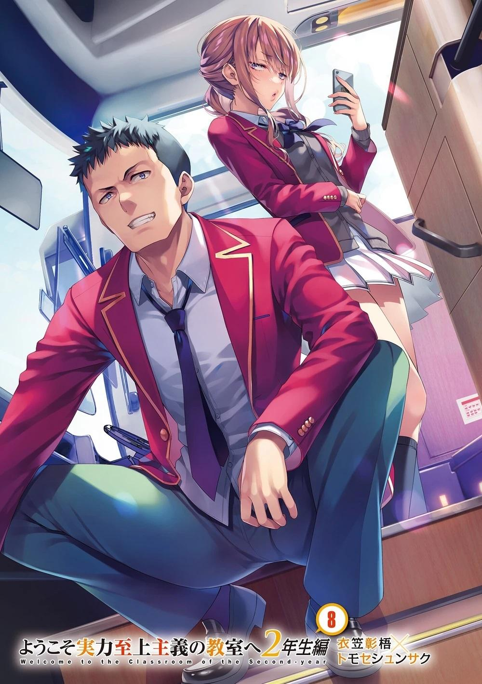
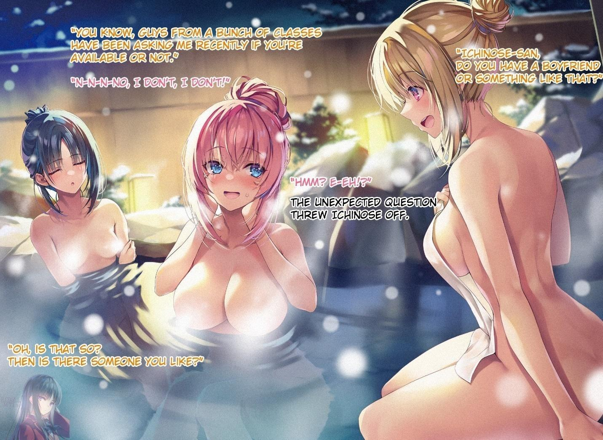
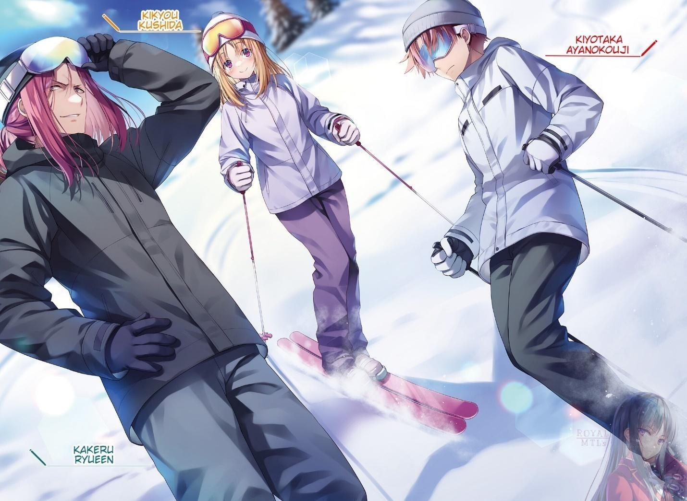
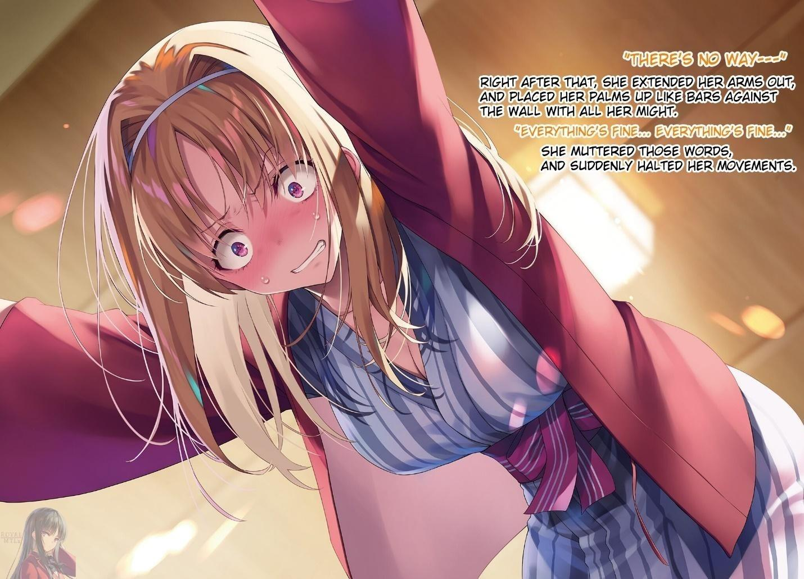
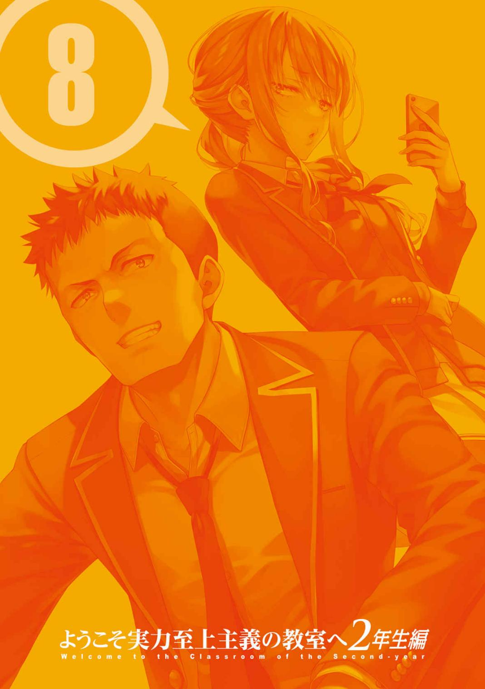
GLADHEIM
TRANSLATIONS
Youkoso Jitsuryoku Shijou Shugi no Kyoushitsu e - Segundo Año Volumen 8
EL MONÓLOGO DE KANZAKI RYUUJI
Una persona inteligente se mantiene alejada del peligro. He pasado mi infancia manteniendo las distancias con la gente. ¿Por qué tomé esa decisión? Porque me resultaba más fácil hacerlo y, lo que es más importante, porque me mantenía alejado de los problemas. No hice amigos íntimos ni enemigos. Esto me facilitó mantenerme neutral.
Un día, sin embargo, me vi envuelto en una pelea entre un grupo de niños, simplemente porque yo estaba cerca. Tres de los cuatro niños, excluyéndome a mí, acusaban sin descanso al cuarto. Los tres actuaron con arrogancia durante todo el incidente, pero no sin razón: una sola mentira es la causa de su comportamiento.
El niño denunciado, que estaba visiblemente alterado, les había contado mentiras a los otros tres. En realidad, debería haber sido algo trivial. Se trataba de si había conseguido o no un autógrafo de una persona famosa. Los tres querían que admitiera que había mentido y se disculpara ante todos. Por otro lado, el mentiroso insistía en que no mentía y se negaba a disculparse.
Yo, que casualmente estaba allí, analicé objetivamente la situación e insté al chico que dijo la mentira a que la admitiera, pero el chico se negó a ceder hasta el final. Una mentira endeble. Una terquedad sin sentido. Pensé que el asunto podría llegar a mayores, pero aun así, no hice nada. El chico se equivocó al decir una mentira tan inútil.
No sabía si era para presumir o qué, pero era realmente estúpido.
Yo no necesitaba ayudar. No era asunto mío.
Realmente lo sentía así.
No, hasta pensé que debería ser golpeado al menos una vez para que aprendiera de ello Pero... Al final, el chico que dijo esa mentira se salió con la suya.
Un cómplice del chico mentiroso apareció de repente y salvó al niño. Lo protegió sin cuestionarlo, simplemente porque era su amigo.
No estuve de acuerdo. Eso no era justicia.
Lo correcto habría sido apoyar a los tres niños que no mintieron.
Caí en un estado de incertidumbre.
¿Quién tenía razón?
¿Eran los tres que decían la verdad pero exhibían arrogancia, o el que había mentido descaradamente?
¿Era el tercero el que sabía que era mentira y ayudó a su amigo?
Hubo un adulto que presenció toda la escena.
Me puso la mano en la cabeza y me dijo: "Si no tienes poder para ayudar, puedes huir o ignorarlo. Pero si tienes el poder y no lo usas, eres un tonto".
En aquel momento no pude entenderlo. Me preguntaba si lo que quería decir era que, después de todo, debería haber ayudado al mentiroso. Pero cuando me hice adulto, lo entendí. Ayudar no implica necesariamente ayudar sólo al niño que dijo una mentira. Si hubiera tenido el poder de controlar la situación, habría podido poner fin a la situación, independientemente de mi perspectiva...
Fue en ese momento cuando algo dentro de mí cobró vida, algo que creía no poseer.
Aún recuerdo las palabras de aquella persona que conocí.
Cuando entré en la preparatoria Avanzada de Educación, elegí socializar con los demás, aunque no se me daba bien. Aprendí a ayudar a los necesitados, aunque sólo fuera un poco. Esperaba estar ahí para Ichinose, que era reconocida como la líder de la clase, y apoyarla.
Sin embargo, al final no pude hacerlo, y se me rompió el corazón.
Las palabras de Ayanokouji Kiyotaka me rescataron de tal situación.
Ayanokouji... Verdaderamente, el destino es algo misterioso.
SI CONOCES A TU ENEMIGO Y TE CONOCES A TI MISMO, NO
CORRERÁS PELIGRO EN CIEN BATALLAS
Era finales de noviembre y por fin se acerca el día del tan esperado viaje escolar.
De camino a la escuela en una mañana soleada pero fría, vi a un pequeño grupo de tres estudiantes caminando delante de mí, con Haruka en el centro. No parecían muy entusiasmados, pero aun así parecían estar hablando de algo como si se esforzaran por mantener una conversación.
―¿No quieres llamarlos? ―Kei, que caminaba a mi lado, dijo algo así.
―No me importa. Es así desde que expulsaron a Airi.
Ya no me necesitan en ese grupo.
―Entonces no voy a volver a mencionarlo. Si te parece bien, sé que es lo correcto.
Dado que el estado del antiguo Grupo Ayanokouji es un asunto que concierne a otras personas, Kei no tiene motivos para preocuparse demasiado por ello.
―Además, así consigo tenerte para mí sola.
Me dedicó una sonrisa sincera sin pensar más. Estoy seguro de que me he convertido en un pilar para ella después de pasar tanto tiempo juntos.
―Estoy deseando que llegue el viaje escolar. ¿Dónde crees que será?
―No he renunciado a mi sueño de ir a Kioto.
―Ah, sí, recuerdo que dijiste eso. No me importa, siempre que sea en cualquier sitio menos en Kioto. Por alguna razón, Kioto es el único sitio al que no estoy dispuesta a ir.
―¿Tanto te disgusta Kioto?
―Bueno, es por todos los templos y bienes culturales. No parece nada divertido, ¿verdad?
Creo que esa es una de las mejores partes de Kioto...
Supongo que para Kei, visitar templos y santuarios no es divertido.
―El destino del viaje es importante, pero ¿no te preocupan los resultados del examen final?
―No me preocupan demasiado los resultados, y creo que me ha ido bastante bien. Todo esto es gracias a ti, ¿no?
Aunque su exceso de confianza es un poco problemático, es innegable.
Aunque es poco probable que consiga una puntuación alta, la puntuación mínima de Kei va en aumento.
Sin duda puedo ver su crecimiento cuando califico sus tareas, aunque sólo hay un pequeño cambio.
―Creo que debería pasar más tiempo estudiando contigo, igual que Sudou-kun.
Una cantidad correspondiente de tiempo dedicado a estudiar no necesariamente mejorará su rendimiento académico tanto como Sudou. Kei quizás no entienda esto. La motivación es muy importante, pero la habilidad del profesor es igual de crucial. La razón por la que Sudou ha crecido de forma tan espectacular se atribuye inequívocamente al talento de su educadora, Horikita.
Este aspecto probablemente le da ventaja sobre Keisei, que tiene la misma capacidad académica.
En el caso de los resultados académicos de Sudou, no se basan en el fundamento de que más tiempo equivale a mejores resultados, como cree Kei.
Sería fácil elevar a la fuerza la capacidad académica de Kei dándole una educación completa, pero ese no es mi papel.
Todo lo que tengo que hacer es lo mínimo. Sólo tengo que asegurarme de que sea capaz de estudiar.
Con el tiempo, espero que el alumno adecuado pueda hacerse cargo del trabajo sin problemas.
PARTE 1
Hoy se han reservado dos horas por la mañana para asuntos relacionados con el viaje escolar.
En una escuela normal, nos habrían informado un poco antes, pero para los alumnos de esta escuela, el examen final es más importante. Tienen que saber primero el resultado de los finales.
No tendría gracia que, tras ser informado del horario del viaje escolar, un alumno abandonara los estudios por culpa del examen final.
―Así pues, anunciaré ahora los resultados de los exámenes finales del segundo semestre.
El aire estaba tenso. Sin embargo, ningún alumno se desanimó. El año pasado por estas fechas, se realizó un examen diferente llamado "Paper Shuffle". Los planes de Kushida y la influencia de Ryuuen casi ponen en peligro el examen, pero la estrategia y las capacidades de Horikita fueron igual de fuertes. Sin embargo, este año era diferente.
Las reglas estaban estandarizadas: los alumnos debían realizar un examen diseñado por la escuela, y si obtenían una puntuación por debajo del punto de corte, serían expulsados. También se trataba de una competición por clases: el primer puesto obtenía 50 puntos de clase, el segundo 25 puntos de clase, el tercero perdía 25 puntos de clase y el cuarto 50 puntos de clase. Era una competición puramente por puntos de clase.
Las puntuaciones mínimas eran de 39 o menos puntos en todas las asignaturas.
Un examen detallado de los contenidos reveló que los alumnos podían evitar fácilmente los puntos rojos en cualquier asignatura si se tomaban en serio sus estudios.
―En cuanto a los resultados de los exámenes finales de este año, empezaré por el alumno peor clasificado.
La expresión de Chabashira-sensei era firme. Parecía como si estuviera tratando de agitar a los estudiantes, pero supongo que mantener una sensación adecuada de tensión era necesario.
―El estudiante que obtuvo la calificación más baja...
Las notas más bajas se consideran más importantes que las más altas.
―...Fue Hondou, que obtuvo una nota media de 53.
―¡Vaya! ¿Yo? Pero obtuve 53 puntos, así que no está tan mal, ¿verdad?
¡Debería estar feliz!
La alegría de Hondou debía ser agridulce, teniendo en cuenta que no reprobó pero seguía siendo el último de la clase.
Aunque siempre había estado en el grupo más bajo, esta era sin duda la primera vez que Hondou quedaba en último lugar.
Tras anunciarse uno a uno los nombres de los alumnos peor clasificados, poco después comenzaron a pronunciarse los nombres de los de mayor rango. Era seguro decir que las puntuaciones de los rangos inferiores se habían elevado.
El primero de estos factores fue, sin duda, el Examen Especial por Votación Unánime que provocó la expulsión de Airi de la escuela.
Desde aquel examen, los alumnos peor clasificados en la OAA desarrollaron un sentido de urgencia para evitar ser expulsados, por lo que ya no desdeñaban dar lo mejor de sí mismos en cualquier examen.
A Kei tampoco le fue tan mal como se esperaba, pues obtuvo una media de 56
puntos. Ella, que sólo quería estudiar conmigo, no dejaba de mejorar sus notas.
Sin embargo, tendré que resolver sus problemas académicos lo antes posible.
Como sólo pienso enseñarle lo mínimo, existe el riesgo de que se separe de los demás alumnos debido a una brecha en su potencial de crecimiento. Debería pedirle a Horikita, Keisei o incluso a Yousuke que le enseñen.
El monitor también calculaba y mostraba secuencialmente la puntuación, la puntuación total y la puntuación media entre las asignaturas de cada uno de los alumnos cuyos nombres se pronunciaban. Yo estaba en el puesto 12, subiendo lenta y constantemente en la clasificación.
Finalmente, se anunciaron los 10 primeros de la clase.
En el décimo puesto estaba Sudou. Aunque estábamos un poco preocupados, el resultado fue similar a la vez anterior, Sudou alcanzando una puntuación sólida para pasar al grupo superior. Mejoró su clasificación en uno, al tiempo que estableció una nueva marca personal.
Finalmente, el primer puesto fue para Horikita y Keisei con una puntuación media de 93,5 puntos, que de todos modos suelen empatar en el primer puesto.
―En cuanto a las puntuaciones de cada clase, superamos a la clase de Ichinose, obteniendo el segundo lugar. Bien hecho.
El primer puesto fue para la clase A de Sakayanagi, el segundo para la clase B
de Horikita, el tercero para la clase D de Ichinose y el cuarto para la clase C de Ryuuen.
Esto aumentó los puntos de la clase en 25. Sin embargo, en la clase A de Sakayanagi, hasta los alumnos peor clasificados rindieron bastante bien, y no conseguimos el primer puesto una vez más. La diferencia entre las dos clases era mínima, pero seguía ahí.
―Sé que están deseando que llegue el viaje escolar, como demuestra su duro trabajo en el examen final. Pero hay una cosa que quiero que hagan antes de hablar de ello.
Con estas palabras, apareció una imagen en el monitor.
Siguiendo las instrucciones de Chabashira-sensei, la tableta de cada alumno mostró una tabla con los nombres de sus compañeros. Era la misma que la del monitor que teníamos delante.
―Hay tres elementos: nombre, sexo y número, de los cuales el nombre y el sexo ya están rellenados.
Como dijo Chabashira-sensei, todos los nombres de los compañeros de clase estaban en la lista. Sólo el número estaba en blanco, lo que significaba que había que introducir los números ahora mismo.
La tabla general podía entenderse a simple vista, pero no estaba claro qué representarían los números. Ni un solo alumno entendió lo que tenía que hacer.
―La tabla enumera a los alumnos de la clase B de segundo año, es decir, de esta clase. Pueden ver que hay un espacio en blanco junto a los nombres y géneros con un pequeño número al lado. Empezarán a numerar desde el primer número hasta el 37, que es la cantidad de alumnos de la clase excluyéndose a ustedes mismos. No es posible utilizar el mismo número dos veces. En primer lugar, debes escribir "yo mismo" en el campo del número de tu nombre.
Había 38 alumnos en la clase B de 2º curso, excluyendo a Airi y Yamauchi, que habían sido expulsados de la escuela.
A cada alumno se le puede asignar un número diferente, hasta 37, excepto a mí mismo. La pregunta es, ¿qué significa este número?
Era impensable asignarlos al azar sin ningún significado.
Cada uno accionó su tableta y tecleó en su casilla lo que se le había indicado.
Tras confirmarlo, Chabashira-sensei empezó a explicar los números.
―Los números que van a asignar representan cómo evalúan a sus compañeros desde su punto de vista. En cualquier caso, es importante que den sus evaluaciones según su propio criterio.
¿Significaba esto que íbamos a clasificar a nuestros compañeros?
No... Bajando por la tabla, daba la impresión de que esta tabla existía no sólo para nuestros propios compañeros, sino también para las otras tres clases del segundo año.
―Como algunos de ustedes ya habrán notado, les voy a pedir que hagan esta clasificación para todo el segundo año, clase por clase. Con los alumnos de las otras clases, puede que haya algunos con los que ni siquiera hayan hablado
nunca, pero también es el mismo criterio que tienen ellos. A todos ellos hay que asignarles un número.
Alumnos evaluando a alumnos. Hicimos algo parecido el año pasado, pero yo diría que también es muy diferente. ¿Qué sentido tiene obligar a los alumnos a hacer esto?
―Por supuesto, no les decimos a los alumnos qué números se han asignado unos a otros y nosotros, los profesores titulares, nunca sabremos cómo se han clasificado los alumnos unos a otros ―explica.
En otras palabras, la tabla está controlada por las personas encargadas de dirigir la escuela.
―Y mientras rellenan este formulario, no se les permite hablar ni referirse a la OAA. Sólo pueden utilizar la información que recuerden. Va en contra del propósito si establecen el orden basado en la evaluación de la escuela sin tener en cuenta ninguno de sus propios sentimientos personales.
También nos impiden asignar números basándonos en cualquier dato obtenido de la escuela.
―En serio, hay un montón de chicas con las que nunca he hablado, y no tengo ni idea de su OAA ni nada por el estilo, así que va a ser al azar, ¿está bien...?
A diferencia de algunos de los estudiantes que presumían de tener un amplio abanico de amistades, Hondou murmuró con aprehensión.
―Sí. Lo más importante que hay que recordar es que no se puede buscar por internet. La escuela utilizará esta lista para un fin determinado, así que depende de ti mismo sea cual sea el resultado.
Básicamente, debería seguir el orden de un determinado criterio, pero al final, dependería de la persona que rellenara el formulario introducir los números según su propio criterio. A cambio, no podrían quejarse de las consecuencias que pudieran derivarse en el futuro.
La libertad de evaluar a cada alumno en función de las interacciones que hayamos tenido con él hasta el momento.
Hacerlo al azar puede volverse en tu contra, así que tómate el reto en serio. Eso es lo que está diciendo.
―Tienen una hora para terminar. Si no terminan dentro del plazo, no recibirán la explicación completa del viaje escolar.
Nadie hubiera pensado que les pedirían esto antes del viaje escolar.
Mientras los alumnos seguían perplejos, Chabashira-sensei nos ordenó que empezáramos inmediatamente.
Todos empezamos con la mente poco preparada.
Decidí empezar por la clase A, posponiendo la que más tiempo me llevaría, la mía. Si sólo se tratara de habilidad bruta, habría elegido a Sakayanagi como primera, pero lo que estaba considerando esta vez era una evaluación global.
Estaría bien basar todas las decisiones en simples gustos y disgustos como persona. También quedaba a discreción del individuo elegir a la persona con la que fuera fácil llevarse bien y que más le agradara. En cualquier caso, los números debían asignarse en función de criterios claros.
Tenía la intención de empezar a rellenar el cuadro de inmediato, pero me resultó sorprendentemente difícil. Lo más seguro sería considerar el valor de la capacidad global actual desde mi punto de vista. Para los alumnos con los que no haya tenido contacto, estaba bien clasificarlos basándome en el valor OAA que recordaba.
Una vez satisfecho con este método, empecé por el número 1. Probablemente esto fue igual para muchos alumnos, pero yo diría que quedó grabado en piedra que Sakayanagi se colocará como número uno de la clase A.
Tardé unos 20 minutos en completar las evaluaciones de las otras tres clases.
La única que quedaba era la clase B, donde estoy yo.
No era una clase sencilla de calificar, ya que requería más consideración respecto a varios factores, además de la OAA.
Tendré en cuenta su potencial oculto, sus habilidades de comunicación y su potencial de crecimiento. Aunque habrá cierto solapamiento con la OAA, creo que Yousuke sería el primero en este punto.
Si se tiene en cuenta no solo su simple valor global, sino también su contribución diaria a la clase, es la mejor opción. Sin Yousuke, no habría cooperación en esta clase.
Y para el número 2, elegí a Koenji. Su potencial oculto y los beneficios concretos que aportó a la clase, como su contribución en el examen de la isla desierta de segundo año y su contribución involuntaria en el festival deportivo, son extremadamente significativos. Aunque ignoráramos su extraña personalidad y su falta de colaboración, seguiría siendo una evaluación justa.
Koenji es innegablemente responsable de la situación actual de la clase B.
Los estudiantes que siempre han tenido un buen rendimiento académico, como Horikita, Keisei y Mii-chan, también reciben una alta calificación.
Levanté la vista después de introducir las evaluaciones de todos los alumnos.
Habían pasado casi 40 minutos, pero nadie más que yo había terminado.
Eso fue lo que pensé, pero cuando mis ojos se encontraron con los de Chabashira-sensei, que estaba observando a los alumnos, me di cuenta de que Koenji, que estaba sentado a mi lado, había terminado primero.
No podía estar seguro, pero supongo que debió de asignar los números sin pensar en ello. Ya estaba soplándose ligeramente las uñas sin siquiera volver a mirar la tableta.
¿Para qué examen especial podrían utilizarse estos números, aparte de la formación de grupos?
Cuando la escuela inspeccione estos resultados, por ejemplo, ¿es posible realizar un examen sólo con los alumnos que fueron seleccionados como primero y segundo de cada clase en general? Por otra parte, si sólo se reúne a los alumnos con una capacidad global baja, tendrán que realizar una tarea equilibrada.
Sin embargo, si éste fuera el caso, habría que decir de antemano a los alumnos que se les asignará un número en función de sus capacidades, y no sería necesario que lo evaluaran ellos mismos. El riesgo de distorsionar la competición asignando números en función de lo que les gusta o no les gusta es mucho mayor.
PARTE 2
Con sólo unos pocos minutos para el límite de tiempo, Chabashira-sensei gritó.
―Muy bien. Parece que todos terminaron, así que este es el final del proceso de elaboración de las listas.
Al parecer, todos completaron con éxito sus evaluaciones a tiempo.
―Es un poco antes de lo que esperábamos, pero vamos a empezar a hablar sobre el viaje escolar ahora.
―¡Sí! ¡Por fin!
Ike y los demás aplaudieron, liberados del rígido proceso de hacer listas. A diferencia de antes, Chabashira-sensei no prestó atención a Ike y empezó a manejar su tableta. Nos dijeron que iríamos de viaje escolar, pero aún no sabemos adónde vamos.
El Examen Especial de Votación Unánime nos ofreció tres opciones.
Hokkaido, Kioto y Okinawa.
Cada clase tenía que emitir un voto para cada uno de estos tres lugares, y el lugar con el mayor número de votos sería elegido para la excursión.
Por cierto, yo estaba entre la minoría que eligió Kioto, al igual que Horikita y Keisei.
Los votos de esta clase fueron para Hokkaido, pero eso no significaba que no hubiera esperanza. Si dos de las tres clases votaban a Kioto, nuestras esperanzas se verían cumplidas.
Ahora esperamos cuáles serán los resultados...
―Primero, veamos los resultados del Examen Especial Votación Unánime.
Chabashira-sensei hizo una pausa de unos segundos para dar efecto dramático.
―...Como resultado de la elección de cada clase, Hokkaido, que recibió tres de los votos de la clase, fue designado como destino del viaje escolar.
Al oír esto, me sentí a la vez encantado y decepcionado. Era un resultado desigual.
Sin embargo, el hecho de que la mayoría de la clase hubiera votado por Hokkaido también permitía afirmar que muchos estaban contentos. Así pues, Hokkaido estaba decidido.
Por el aspecto de la espalda de Horikita, no parecía estar decepcionada. Incluso Keisei no parecía particularmente insatisfecho.
Sorprendentemente, Sudou y los demás, que habían estado deseando ir a Okinawa, también dieron muestras de haber aceptado ya la situación desde el principio. Aunque no se nos permitía compartir la información relativa a las decisiones de clase, era posible que hubieran oído rumores sobre la situación de las demás.
Me sentí un poco decepcionado, pero Kioto es Kioto y Hokkaido es Hokkaido.
Para mí, acabe donde acabe, siempre será un lugar desconocido, y lo estoy deseando.
―Como probablemente sabrán, un viaje escolar es, como sugieren las palabras, un viaje para aprender y adquirir conocimientos. A diferencia de una preparatoria típica, hay muchas reglas que se espera que sigan.
Chabashira-sensei hizo una leve advertencia a los optimistas alumnos para que no lo confundieran con diversión.
―No cree que haya exámenes especiales, ¿verdad?
No había forma de estar seguros, y era comprensible que Hondou quisiera confirmarlo en nombre de los alumnos. Al oír la pregunta llena de miedo y ver las caras de los alumnos, Chabashira-sensei se rio un poco.
―Tengan la seguridad de que no habrá ningún examen especial para competir por los puntos de clase.
Un suspiro de alivio se escapó de toda la clase ante su clara afirmación.
―Antes de entrar en detalles, déjenme hablarles del programa del viaje de cinco días y cuatro noches.
[Horario del viaje escolar:]
[Día 1]
Salida de la escuela → Aeropuerto de Haneda → Aeropuerto de Shin Chitose →
Llegada a la estación de esquí, entrenamiento → esquí → vuelta al Ryokan.
[Día 2]
Libre todo el día
[Día 3]
Visita a lugares de interés en el centro de la ciudad de Futsatsu Horoporo →
regreso al Ryokan.
[Día 4]
Libre todo el día *Se aplican algunas condiciones*.
[Día 5]
Regreso
[Nota TL: 旅館 Ryokan, es una posada tradicional japonesa].
El segundo día era un día libre, al igual que el cuarto, aunque aparentemente con algunas condiciones.
―Al principio estaba preocupado, ¡pero es totalmente normal! No, ¡es mejor que normal! Estoy deseando que llegue el viaje.
Por lo visto, casi todos los alumnos parecían tener una impresión favorable del programa normal de viajes escolares, que era similar al de una escuela normal, y se mostraban inusualmente entusiasmados.
Ciertamente, esta escuela normalmente tendría algún tipo de horario irregular.
―Está bien que estén emocionados, pero ¿ya olvidaron lo que les dije?
Aunque se les promete libertad de movimiento, ustedes tienen algunas tareas que hacer como estudiantes de la Preparatoria de Educación Avanzada ―Aclaró que no habría exámenes especiales, así que ¿qué se nos exigiría exactamente entonces?
―Si conoces al enemigo y te conoces a ti mismo, no correrás peligro en cien batallas. Ese es el tema de este viaje escolar.
―¿Qué?
Hondou ladeó la cabeza, incapaz de entender la famosa cita de El arte de la guerra, de Sun Tzu.
―Comprende la realidad del oponente contra el que luchas, y conoce tu propia fuerza. Así podrás librar una batalla que no perderás, eso es lo que significa.
Sudou, que explicó el proverbio antes que nadie, lo desglosó en frases fácilmente comprensibles.
―Vaya, ¿puedes entender todo eso?
―No es tan asombroso. Es sólo lo que significa la frase.
Me ha llegado a gustar el hecho de que no muestre ningún engreimiento respecto a sus conocimientos.
―Normalmente, en los viajes escolares, los alumnos forman grupos de varias personas. Esto no es diferente para ustedes, pero hay una diferencia obvia con respecto a otras escuelas. Es decir, la formación de los grupos no se completa sólo dentro de la clase, sino de todo el curso escolar.
―¿Eh? Entonces, ¿es posible que haya una probabilidad muy alta de que nos toque alguien con quien no nos llevemos bien?
Los alumnos, que habían estado tan entusiasmados con el nuevo viaje a Hokkaido, volvieron rápidamente a la realidad.
Como para indicarlo, Chabashira-sensei empezó a explicar los detalles.
―Así es. Dependiendo de sus círculos sociales y combinaciones de amigos dentro de las otras clases, la mayoría de ustedes puede tener que interactuar con gente nueva.
Personalmente, no tengo una gran variedad de amigos en otras clases.
Dependiendo de cuánta gente haya en el grupo, podría muy bien resultar como dijo Chabashira-sensei.
―En una escuela normal, con un máximo de sólo 160 alumnos en un curso escolar, es probable que las amistades estén más extendidas. Pero la estructura de esta escuela lo dificulta.
En una escuela normal, el número de amigos debería ser mayor porque todos habrían estudiado en el mismo ambiente sin ninguna hostilidad predeterminada.
No es difícil imaginar ahora que la estructura de esta escuela lo dificulta.
―Lo más importante para ustedes es si se gradúan o no en la clase A.
Esto se logra a través de las competencias de clase. Esto continuará siendo así incluso en el futuro. Naturalmente, los van a tener más en cuenta como rivales que como amigos.
Ese ambiente no favorece la formación de amistades amplias.
―Por lo tanto, las oportunidades de conocer la vida real de los alumnos de las otras clases y sus situaciones personales son lógicamente limitadas.
Es cierto que hemos aprendido mucho sobre nuestros compañeros durante el último año y medio. Sin embargo, muchos de nosotros sólo tenemos un conocimiento superficial de la situación de las otras clases.
Si mostramos debilidad, pueden aprovecharse de ello. En una dirección completamente diferente, puede haber dudas a la hora de derrotarlos.
Quiero que mi mejor amigo de otra clase se gradúe en la clase A.
Si surgen esos sentimientos, puede haber una vacilación importante a la hora de luchar. Puede haber muchos aspectos del mundo que no queramos conocer.
―El propósito de este viaje escolar es eliminar esos límites. Es una gran oportunidad para conocernos como alumnos de esta escuela y como personas, antes de ser alumnos de otra clase.
Los cinco días y cuatro noches pueden parecernos cortos, pero es mucho tiempo. Cuanto más tiempo pases en grupo durante ese periodo, más probabilidades tendrás de estrechar lazos.
Por otro lado, puede haber casos en los que la distancia no se reduzca en lo más mínimo. Aunque la escuela elimine obstáculos, no servirá de nada si los mismos alumnos levantan muros.
―No hay manera de que pueda disfrutar del viaje con estas condiciones,
¡y no creo que me divierta para nada!
Estaba claro que era imposible cambiar las normas establecidas por la escuela, pero vi a varios estudiantes como Ike que argumentaban en contra de ellas.
Pasar tiempo con amigos afines, supongo que es algo a lo que no quieren renunciar. Especialmente para Ike, que sólo ha tenido novia durante un corto período de tiempo, es comprensible que esté molesto; podría no tener la oportunidad de formar un grupo con Shinohara, dependiendo de los detalles.
A medida que el clamor y el ruido se extendían, un estudiante se levantó de su asiento para detenerlo, Yousuke.
―Estoy de acuerdo con la idea de la escuela.
En medio de toda la oposición, tomó la iniciativa y expresó su aprobación.
―Eso está muy bien por ti, Hirata. Seguro que en las otras clases hay muchos chicos con los que te llevas bien, pero aunque estés orgulloso de ello, no hace falta restregármelo.
Efectivamente, las amistades de Yousuke son amplias y diversas, y por lo visto no tendría muchos problemas independientemente de con quién le tocara compañeros. Sin embargo, era imposible que Yousuke dijera algo así para presumir.
―No es eso lo que quiero decir. Ni siquiera yo tengo a alguien en las otras clases que me entienda mejor que mis compañeros. No creo que sea buena idea pensar así.
En primer lugar, Yousuke insistió en que, en esencia, estaba en el mismo bando que Ike y los demás.
―Entonces, ¿por qué estás a favor?
―Porque me pareció importante, supongo. Excepto por las actividades de los clubes y cosas por el estilo, esta escuela obviamente no tiene muchas oportunidades que nos permitan relacionarnos, y siento que hay pocas oportunidades de conocer a estudiantes de otras clases.
Eso también es algo inevitable. Aunque hay algunos exámenes especiales en los que los estudiantes se convierten temporalmente en aliados, la naturaleza competitiva de las clases hace que los estudiantes tiendan a evitar involucrarse demasiado profundamente, como mencionó Yousuke.
Para una persona de buen corazón, será aún más difícil hacerlo.
―¿Entonces no sería extraño llevarse bien? Es más fácil que los rivales sigan siendo amigos si mantienen una distancia razonable entre ellos.
―Hmm...
pero
yo
considero
a
los
demás
como
amigos
independientemente de la clase.
Las opiniones también estaban divididas entre las chicas. Se trataba de una cuestión de perspectiva.
―Creo que todo se reduce a si primero es el huevo o la gallina. ¿Eran rivales antes de hacerse amigos, o eran amigos antes de hacerse rivales? Estoy seguro de que ambas opciones son correctas. Como dice la profesora, el viaje escolar es una buena oportunidad para aprenderlo. Hay más de una opción.
Cuantas más opciones, más posibilidades tienes.
―En cierto modo entiendo lo que dices, Hirata. Además, aunque nos pusiéramos nerviosos ahora, eso no significa que la escuela vaya a cambiar sus normas, ¿verdad?
Si la escuela estuviera dispuesta a aceptar nuestras quejas, entonces tendría sentido resistirse. Pero sabíamos que no era así.
―No hay nada malo en acalorarse en una discusión, pero déjenme seguir hablando primero. Estoy segura de que se sentirán más cómodos hablando después de escuchar los detalles del proceso.
Con eso, la tableta cambió a la pantalla de itinerario.
―Se decidió agrupar a los alumnos de cada clase de la forma más equitativa posible durante el viaje escolar de cinco días y cuatro noches, y cada grupo constará de ocho alumnos. Habrá un chico y una chica de cada clase de segundo año. Sin embargo, a fecha de hoy, el número total de alumnos de segundo año es de 156, que no pueden dividirse en grupos de ocho, por lo que habrá 18 grupos de ocho y dos grupos de seis. También se ajustará la proporción entre sexos para que sea lo más equitativa posible.
Los cuatro alumnos que han sido expulsados de la escuela estaban repartidos equitativamente, dos hombres y dos mujeres, pero surgió el problema de las clases diferentes. Los grupos de ocho personas estarán bien divididos, pero los de seis tendrán inevitablemente cierta disparidad entre las clases. Sin embargo, esto es inevitable.
Naturalmente, esto suponiendo que no se produzcan nuevas bajas o ausencias por enfermedad u otros motivos antes del día del viaje escolar.
―En cuanto a cómo se desplazarán sus grupos por la zona, esto se decidirá cuando lleguemos a Hokkaido.
Las reglas del grupo se mostraron en el monitor y se transmitieron con palabras.
Situaciones que requieren la acción del grupo: Cuando la escuela lo asigne; in situ.
Actividad libre
Situaciones que no requieren acción en grupo: En el lugar de alojamiento (el ryokan).
Saldremos de la escuela en autobuses para las distintas clases e iremos al aeropuerto de Haneda, antes de volar al aeropuerto de Shin-Chitose. Mientras estemos en el aeropuerto, nos dividirán en los grupos determinados.
Desde ese momento hasta el último viaje en autobús de vuelta a la escuela, permanecer como grupo será la norma general.
Habrá muchos viajes en autobús desde la escuela hasta el aeropuerto e incluso después de entrar en Hokkaido. Por lo visto, casi todo nuestro tiempo, incluida la hora de dormir, lo pasaremos con esos miembros del grupo.
―Ni siquiera en las actividades libres se permite a los individuos hacer lo que les plazca. Las discusiones en grupo son necesarias, y las actividades en grupo son absolutas. Si no se llega a un acuerdo sobre un destino a través de la discusión, no se permite salir del ryokan.
Es fácil ceder cuando se tiene amistad con una persona concreta, pero puede ser complicado con otras. Si se reúne un grupo de alumnos insistentes, no podrán llegar a un consenso. Como resultado, podría darse una situación en la que no puedan ir a ninguna parte.
―Básicamente, están libres de actividades de grupo en el hotel. Pueden ir a los baños públicos a la hora que quieran, relajarse en el vestíbulo y comer a cualquier hora dentro de las normas.
La única excepción a las actividades en grupo es el ryokan donde se alojan los estudiantes. Las habitaciones son compartidas por grupos separados de hombres y mujeres, pero son libres de desayunar y cenar, bañarse y explorar las instalaciones cada uno por su lado.
―Nos alojaremos en el mismo ryokan las cuatro noches, y es un lugar muy conocido y respetable para alojarse en la prefectura. Estoy seguro de que nunca se aburrirán y tendrán una estancia cómoda.
―Uff, puede que el ryokan sea el único lugar donde divertirse y relajarse.
―Una vez más, este viaje es una gran oportunidad para conocer profundamente a los alumnos de las otras clases.
Después de la explicación de Chabashira-sensei, Yousuke parecía tener otra pregunta.
―Si vamos a estar en contacto con un gran número de personas, ¿no es un poco extraño estar en el mismo grupo durante todo el viaje?
―Tienes razón, Hirata. También estábamos pensando en rotar los grupos a diario, pero después de pensarlo, para algunos no sería difícil formar sólo amistades superficiales. Sin embargo, la situación será muy diferente en una estancia de cuatro noches. Si no puedes mostrar tus verdaderos sentimientos a tu grupo, no podrás disfrutar del viaje.
Si es sólo por un día, muchos serían capaces de soportarlo. Incluso si no te gusta el grupo, puedes ser paciente hasta el día siguiente, cuando el grupo será reemplazado. Al final formarás un grupo con el que te sientas cómodo.
―En cambio, si sabes que el grupo es fijo, tienes que hacer que funcione.
Los que tienen muchos amigos en otras clases pueden llevarse bien sea cual sea el grupo en el que los coloquen. Mientras tanto, los que tienen pocos amigos pueden sufrir independientemente del grupo en el que se les coloque. Pero no hay que verlo como un paso atrás, sino como una buena oportunidad.
Por supuesto, las relaciones no son tan sencillas como parecen. Si eres de los que quieren hacer amigos pero no pueden, quizás te parezca una experiencia positiva; pero para los que piensan que no necesitan amigos, será un viaje escolar un poco incómodo.
A este último grupo puede que la propia existencia del viaje escolar le resulte deprimente desde el principio.
―Si resulta que no se respeta el comportamiento del grupo, puede haber privación de la libertad.
Privación de la libertad, si se produjera, significa que más de la mitad del viaje escolar carece de sentido.
En otras palabras, la adhesión al comportamiento del grupo es absolutamente obligatoria.
La mayoría de los alumnos son disciplinados, pero algunos no...
Todas las miradas de los estudiantes se dirigieron a la vez a Koenji.
―¿Qué pasa, gente? Me han estado lanzando miradas envidiosas.
Aunque no me importa.
Koenji, que no estaba escuchando a Chabashira-sensei, los interrogó mientras lucía una sonrisa radiante.
Es un hombre que no sabe leer el ambiente en muchos sentidos, pero también es cierto que viene así a la escuela y se calla. Puede que sea más maduro de lo esperado en un grupo de un viaje escolar...
Sea como sea, el futuro es completamente incierto, y muchos estudiantes preferirían no estar con Koenji si fuera posible.
―Así es como vamos a dividirlos en grupos, no al azar, sino basándonos en la tabla que hicieron antes.
La actividad que nos tomamos el tiempo de completar antes de la explicación de la profesora sobre la excursión escolar.
Parecía tener algo que ver con los grupos para el viaje escolar.
―Además, pueden utilizar sus celulares durante el viaje escolar sin ningún problema. Sin embargo, el rango de personas a las que pueden llamar sigue siendo el mismo: llamadas a alumnos de segundo año y a alumnos actuales, así como a la policía y a los servicios de emergencia en caso de una situación urgente, mientras que el resto de llamadas a familiares y personas ajenas a la escuela seguirán estando prohibidas. La escuela también hará un seguimiento de sus llamadas salientes, así que tengan cuidado.
Así que este iba a ser el tema de este viaje escolar.
Es difícil de creer que esto fuera simplemente para que los estudiantes se llevaran bien entre ellos. Podría verse como un hito para el futuro de la vida escolar. La única gran diferencia entre este viaje escolar y uno normal fue la formación del grupo por todo el año escolar.
La única otra cosa sobre la que había que informarse era el manejo del dinero.
Sólo disponíamos de puntos privados, por lo que no teníamos forma de comprar fuera del recinto escolar. Por lo tanto, si lo solicitábamos con antelación, la escuela nos proporcionaría dinero en efectivo a cambio de los puntos privados.
Además, si nos quedábamos sin dinero durante el viaje, nos cambiaban hasta 10.000 yenes. Una vez finalizado el viaje escolar y de regreso, los alumnos pueden volver a canjear el dinero restante por puntos privados, por lo que sería mejor canjear una cantidad mayor de dinero en efectivo al principio.
PARTE 3
A la hora del almuerzo, salí con Kei, lo cual había sido mi rutina últimamente. Sin embargo, esta vez había algunos invitados, Yousuke y Satou.
―Es algo así como una cita doble, ¿verdad, Ayanokouji-kun?
Diciendo esto, Satou, de pie cerca, murmuró esto.
―Oye, oye, oye, Maya-chan. Eso no es algo que debas decirle a Kiyotaka.
Las chicas estaban caminando, hablando entre ellas, sin embargo, no podía decir si estaban peleando o en buenos términos.
―Es la primera vez que voy a Hokkaido. ¿Has estado alguna vez allí, Kiyotaka?
―No, jamás.
Para mí, que había estado en la Habitación Blanca, casi todo esto era territorio nuevo. Había visitado varios lugares como parte del plan de estudios, pero nunca había estado en Hokkaido. Sólo conocía Hokkaido como una región fría con una vasta extensión de tierra, y el resto del mundo sólo lo conocía a través de la televisión y los libros de texto.
El tema principal de conversación fue el viaje escolar.
―¿De verdad son tan laxas las excursiones de la preparatoria? ¿No es demasiada libertad?
―A mí también me sorprendió. Pensaba que sólo te darían una o dos horas de tiempo libre al día.
―No me importa tener mucho tiempo libre. Creo que es mucho mejor que tener que estar de pie escuchando al guía del museo y a la gente local hablar durante mucho tiempo.
Yousuke se rio ante esta respuesta, y Satou asintió con la cabeza.
En lo que a mí respecta... Ese tipo de horario ortodoxo no estaba tan mal.
Cuanta más libertad tienes, más se desvía del formato original de un viaje escolar.
―Supongo que me preocupa un poco el aspecto grupal. Me parece bien tratar de llevarme bien con otras clases, pero no dejo de sentir que hay algo más allá de eso.
―¿Más allá de llevarse bien?
Yousuke asintió y me miró como buscando la respuesta.
―Como todos competimos por ser la Clase A, sentir piedad nos va a entorpecer.
―Supongo que eso es lo que estás pensando, ¿no?
Debe ser complicado para Yousuke, que ya se siente fuertemente con respecto a eso.
Mientras que él quiere llevarse bien con otras clases, el inconveniente de acercarse demasiado a ellos también está presente.
―Estoy un poco asustado. Puede que alguien de las otras clases necesite graduarse en la Clase A, a toda costa, y la idea de averiguar qué les pasa o de acercarme demasiado me inquieta.
―Hmm... Ya veo. Creo que entiendo un poco lo que dices, Hirata. Es simpatía.
Satou, también, estaba algo convencida después de imaginárselo ella misma.
―Aunque en realidad no lo veo así, porque para mí es más importante subir a la clase A... ¿Tengo frío?
Kei negó rotundamente el sentimiento.
No era frío, sino más bien un sentimiento perfectamente honesto y genuino; uno compartido por la mayoría de los estudiantes.
―Nadie puede ver la verdadera naturaleza de los sentimientos de la gente.
Pero si tuviera que compartir mi opinión personal, diría que las personas son criaturas que pueden mostrar amabilidad fácilmente en la superficie, pero sólo durante ese momento. Y no quieren que los demás vean que albergan animadversión.
Este amor y odio era muy preocupante.
―Supongamos que hay un estudiante en otra clase que tiene que graduarse de la Clase A, como dijo Yousuke. Si ese estudiante no puede estar en la Clase A, él o ella puede más tarde quitarse la vida.
―¿Qué? Eso es un poco exagerado...
―Por supuesto que es una exageración. Pero también es cierto que no es del todo imposible.
Nadie sabía dónde estaban los límites emocionales de los demás, salvo las propias personas en cuestión.
―Supongamos que hay una clase y que disponen de más de 20 millones de puntos privados. Sin embargo, deben utilizar esos puntos privados para proteger a dicha clase. Pueden luchar sin ellos, pero son una importante póliza de seguro. ¿Qué pasaría si alguien de nuestra clase, alguien como Yousuke, estuviera en una situación en la que quisiera salvar a los estudiantes cuyas vidas están en juego?
―Eh... eso es...
―¿Qué pasa si la clase está en una situación en la que dicen que están dispuestos a salvar a esos estudiantes, pero en realidad están en contra por dentro? Creo que existe la posibilidad de que algunos estudiantes muestren una fachada de estar dispuestos a ayudar en la superficie.
Si no estás de acuerdo, te mirarán con desdén, diciendo que te tomas la vida de los demás a la ligera.
En realidad, no sé lo que la gente con la que estoy piensa en su corazón.
―He seguido exagerando un poco, pero conocer a tu enemigo no es puramente un mérito.
―Entonces por qué la escuela intenta que nos llevemos bien...
Las palabras de Kei se detuvieron al llegar a este punto.
―¿Hay alguna razón para ello que pueda estar... relacionada con los exámenes especiales, por ejemplo...?
―No creo que podamos negar esa posibilidad.
Al menos, tal y como estamos ahora, a la mayoría nos da igual quién sea expulsado de las otras clases. Cuantos más de nosotros se vayan, excluyendo a los más cercanos, mejor nos irá cuando lleguemos a la clase A.
―Si esa tabla y el viaje escolar son sólo una de las piezas del rompecabezas, quizá el verdadero acontecimiento sean los exámenes finales de fin de curso.
―Si ese es el caso, podría ponerse feo... Estoy realmente asustado.
―Estoy de acuerdo. Es una especie de mal presentimiento.
Tanto Yousuke como Satou comenzaron a entender la ansiedad con respecto al futuro a través de nuestra conversación.
Por el momento, no tenían ni idea de si habría expulsiones de por medio, pero lo cierto es que les iba a resultar más difícil que el año pasado.
PARTE 4
Al salir de clase, cuando el entusiasmo de los alumnos por el viaje escolar alcanzaba su punto álgido, una persona me invitó a salir.
Esta persona quería encontrarse conmigo en una banca cerca del centro comercial Keyaki.
Kei prometió pasar el rato con Satou y otras chicas en el dormitorio hoy, así que no había necesidad de preocuparse por ella.
Por supuesto, podría haber ignorado el mensaje o pedir que cambiaran la cita, pero el momento me convenía.
Tenía curiosidad por saber cómo les iba, así que sería mejor quedar con ellos.
Les contesté que los vería pronto y decidí dirigirme al lugar acordado.
Como llegué 10 minutos antes de lo previsto, decidí sentarme en un banco y esperar. Era la hora de salida de las clases y los estudiantes pasaban por delante del banco de camino al centro comercial Keyaki.
Tenía curiosidad por saber por qué eligieron un lugar tan llamativo para reunirse.
Podría ser que temieran que yo desconfiara y me negara a quedar con ellas, pero eso no era habitual en ellas.
El hecho de que se tomaran la molestia de ponerse en contacto conmigo con anticipación tampoco concordaba con su comportamiento habitual. ¿Se trataba simplemente de una cuestión psicológica o había otra fuerza en juego?
Durante un rato observé a la multitud de estudiantes que se dirigían al centro comercial Keyaki.
Llegó la hora acordada, pero la persona no había llegado aún. Decidí seguir navegando por la web sin preocuparme demasiado.
―¡Hey~!
Mientras mataba el tiempo con el celular, escuché la voz de una chica a lo lejos, dirigida hacia mí. Levanté la vista y descubrí que era la persona que me había enviado el mensaje, Amasawa Ichika.
Nanase, que estaba en otra clase, también estaba con ella.
En contraste con la sonriente Amasawa, Nanase parecía ligeramente sorprendida. Agitando la mano mientras se acercaba, se detuvo a unas decenas de centímetros delante de mí.
―¡Siento haberte hecho esperar!
―Veo que Nanase está contigo.
No podía ignorarla ya que estaba justo delante de mí, así que lo mencioné como una formalidad.
―Sí. Por favor, perdóname por estar presente sin informarte.
―No, no hay necesidad de disculparse. Aunque fue un poco inesperado.
Supuse que la llamada de hoy sería una conversación a solas con Amasawa.
Las palabras de Amasawa no tardaron en responder a esa suposición.
―Llegué tarde porque Nanase-chan me detuvo.
Diciendo esto, señaló con el dedo a Nanase como la responsable.
―Y ella también pidió venir conmigo. ¿Tenías tantas ganas de ver a Ayanokouji-senpai?
―Oh, ¿de verdad?
―Ah, no...
Nanase se puso un poco nerviosa, pero rápidamente corrigió las palabras de Amasawa.
―Tenía curiosidad por lo que Amasawa-san estaba haciendo, así que la seguí, pero no sabía que se iba a encontrar con Ayanokouji-senpai aquí.
―¿Eh~? ¿No te lo dije? Pensé que lo había hecho.
―Sólo después de que ya nos habíamos acercado a él.
―Jo, puede que tengas razón.
Así que por eso estaba tan nerviosa cuando sus ojos se encontraron con los míos.
Escuché como las dos estudiantes de primer año explicaban la situación.
Supongo que Nanase tenía sus propias razones para estar aquí, ya que no se marchó directamente. Dejé de lado a Nanase por el momento y dirigí mi atención a Amasawa.
―¿Escuché que estuviste ausente de la escuela por un tiempo?
―Lo sabes muy bien, ¿verdad? Seguro que después de todo sentías curiosidad por mí, ¿por eso me investigaste? Si es Ayanokouji-senpai, eres bienvenido a acosarme.
Amasawa no había sido vista en la escuela desde el final del festival y las vacaciones.
Dudo que fuera porque estaba enferma.
―Fui yo quien informó a Ayanokouji-senpai.
―Huh~, ¡entonces eso significa que Nanase-chan es mi acosadora!
―Amasawa exageró deliberadamente y levantó ambas manos.
―Una chica, ¿eh? Bueno, estamos en la era de la diversidad, ¿no? Y
Nanase-chan es linda y adorable, ¿no? Quizá sea posible.
―Por favor, no tergiverses la realidad a tu favor.
Nanase le dijo tranquilamente a Amasawa, que estaba totalmente tensa.
―Es exactamente por eso que me acerqué a Amasawa-san hoy. Ella había estado ausente de la escuela desde que Yagami-kun fue expulsado. Era obvio que no se trataba de un problema físico, sino mental. Es natural desconfiar de ella cuando de repente vuelve a la escuela.
Es normal vigilar de cerca los movimientos de los alumnos de la Habitación Blanca que han vuelto repentinamente a la escuela.
Yagami Takuya. Consideré las posibilidades y no hay duda de que él es de la misma generación que Amasawa.
Como compañeros de estudios, no me costó imaginar que Amasawa sentía algo por su aliado, Yagami.
―Cuando me enteré de que ibas a reunirte aquí con Ayanokouji-senpai, no pude apartar la mirada ―dijo.
―Pareces un caballero protegiendo a su senpai.
―No es nada del otro mundo, pero juzgué que, con tu estado mental actual, Amasawa-san, no sé qué harás.
Podría parecer una secuencia casual de acontecimientos, pero Nanase debía estar haciendo sus propias especulaciones. Era difícil imaginar a Amasawa viniendo a la escuela únicamente para asistir a clases después de unas vacaciones.
―Así que es eso.
Amasawa estaba tratando de actuar alegre hasta este punto, pero todavía no sentía su energía habitual.
―Es un poco inquietante, pero me parece bien.
―Si todavía estás en la escuela, eso significa que has dado tu respuesta,
¿no?
Cuando pregunté esto, la sonrisa de Amasawa desapareció en silencio.
Por lo visto, no fue así, ya que pude ver algo vacilante en sus ojos.
―¿Por qué no les ordenaste que me llevaran con Yagami? Podrías haberme expulsado junto con él si hubieras querido.
―Estabas dándole prioridad a tu forma de disfrutar de esta escuela antes que expulsarme, al menos así lo percibí yo. No vi la necesidad de expulsarte.
No, al principio también pasó lo mismo con Yagami. Aunque nunca tuvimos ocasión de discutirlo directamente, si él hubiera dado prioridad a permanecer en la escuela, no habría habido necesidad de expulsarlo.
―Todavía no te he dado una respuesta. Estoy segura de que no hay lugar para mí aunque regrese... Es sólo que el tiempo pasó mientras pensaba en eso.
Después de decir esto, sonrió para sí misma.
En otras palabras, ella no había decidido si se iba a quedar o continuar... O
ponerse en mi contra.
―Pero igualmente has encontrado una dirección. Por eso me llamaste,
¿no?
―Bueno, sí. Empiezo a pensar que si tengo la opción de quedarme, mejor.
No puedo volver a la Habitación Blanca, e incluso si me voy, no sé dónde están mis padres. No quiero verme obligada a buscar un trabajo de medio tiempo para poder vivir.
Si estás en la calle, tienes que hacer lo que sea para seguir vivo. Sin embargo, mientras permanezcas en esta escuela y no la abandones, tienes garantizada la vida hasta la graduación. Además, con el tiempo, la escuela te volverá a comprar tus puntos privados.
Aunque no será un intercambio equivalente, aunque sea la mitad del valor monetario proporcionaría un capital sustancial. Además, sería posible utilizarlo y encontrar un trabajo legítimo más adelante.
Había una tercera opción. Amasawa no estaba pensando en ella, pero, de hecho, existía la posibilidad de encontrar a sus padres y volver con ellos.
Sin embargo, si la declaraban formalmente desertora de la Habitación Blanca, no había ninguna garantía sobre cómo la tratarían.
En otras palabras, la existencia o no de esa opción dependería de los padres de Amasawa. En primer lugar, deben ser ricos, famosos o poderosos por cualquier otro motivo. Si la Habitación Blanca sabe que el niño es famoso, es más probable que lo trate con respeto. Y en segundo lugar, los padres deben necesitar una hija y estar dispuestos a aceptarla.
Si se cumplen estas dos condiciones, puede haber una oportunidad de empezar una vida normal.
Sin embargo, no había necesidad de forzar esa opción ahora.
Amasawa, quizá molesta por nuestro silencio, declaró con voz apagada:
―Llevo mucho tiempo pensando en esta escuela. Ya decidí quedarme.
Mientras a Ayanokouji-senpai no le importe...
―¿Y si te pido que te vayas?
―Me iré.
¿Se aferraría a mí, se enfadaría o incluso se entristecería?
Me preguntaba cómo reaccionaría, pero Amasawa respondió inmediatamente así.
―No tengas ninguna duda. ¿No quieres vengarte por Io de Yagami?
―No quiero causarte más problemas.
Así de preparada estaba para venir a este lugar, a su manera.
―Esas palabras no le sientan bien a la beligerante Amasawa-san.
―Eso es correcto. Sólo Ayanokouji-senpai recibe este tipo de trato especial. Aparte de ti, no me andaré con miramientos con ningún otro en el futuro.
Esta debía de ser su sincera intención. Amasawa le daba mucha importancia a Yagami como miembro de la misma generación de la Habitación Blanca. Era muy posible que cualquiera que estuviera involucrado en la expulsión de Yagami se convirtiera en el objetivo de Amasawa en el futuro.
―No hay razón para que te detenga. Si quieres quedarte, puedes hacer lo que quieras.
No sé cuánto ánimo le daría, pero ella, feliz, relajó un poco las mejillas.
―¿Mi habilidad no se acerca a la de mi senpai, así que ni siquiera se me considera una amenaza?
―No me refería a eso. Soy una de las personas que eligió quedarse en esta escuela, y es natural que quiera apoyarte si tomas la misma decisión.
Si éramos aliados o enemigos era un asunto trivial. Por supuesto, no la dejaré en paz si interfiere en mis planes. Me gustaría pensar que ella entendió eso muy bien por el caso de Yagami.
―...Ya veo.
―Si eso es lo que realmente crees, Amasawa-san, entonces yo también te apoyaré.
La expresión de Nanase parecía sugerir que aún no había bajado completamente la guardia.
―Eh, algo hace que me lloren los ojos... Esto, qué es esto... Es la primera vez que me siento así.
―No, no, no hay lágrimas para nada, no importa cómo lo mire.
―Jaja. De todas formas todo esto me conmueve.
Actuaba igual que siempre, pero era un medio para forzarse a estar inspirada.
―Puede que no quieras que te pregunte esto, pero ¿qué clase de persona es Yagami?
―Yo también tengo curiosidad. Ni siquiera sé por qué se dedicó a causar problemas innecesarios antes de intentar expulsar a Ayanokouji-senpai.
¿Por qué hizo daño a Shinohara y a su grupo aún sabiendo que era arriesgado?
¿Por qué expulsó a un estudiante de clase C de 1er año que no tenía nada que ver?
La escuela también anunció el incidente como mala conducta de Yagami, y mucha gente se enteró. Hasta alguien como Nanase, debe tener muchas cosas de que preocuparse.
―Supongo...
Ella fingió pensar por un momento pero pronto comenzó a hablar.
―Creo que estaba asustado. Yagami tenía miedo de pelear con Ayanokouji-senpai. Pero estoy segura de que guardaba esos sentimientos de miedo tan profundamente en su corazón que no era consciente de ellos.
Este era el análisis de Amasawa, que conocía a Yagami mejor que nadie. No hacía falta que la pinchara para pedirle más detalles. Estaba seguro de que era la conclusión correcta.
―Para escapar de su miedo, se desvió mucho de su objetivo sin ni siquiera darse cuenta...
Esto finalmente resultó en que cavara su propia tumba.
―Puede que me lleve un poco más de tiempo volver a ser yo misma. Pero estoy segura de que... volveré a estar bien pronto.
De cualquier manera no había necesidad de apresurarse. Ni siquiera ha pasado un año desde que Amasawa empezó la escuela. A partir de ahora, debería tomarse su tiempo y considerar el camino que debe tomar.
―Sólo quería decirte eso. Bueno, por hoy me voy a casa. ¿Y tú, Nanase?
¿Quieres ir a casa conmigo?
Nanase negó con la cabeza en respuesta a la invitación.
―Lo siento, pero voy a hablar con senpai un rato. Está bien, ¿verdad?
―Ya veo. Entonces te lo prestaré por hoy.
No soy de ella, pero esto simplemente se trata de ella fingiendo valentía.
Amasawa caminó hacia el dormitorio sin intentar quedarse demasiado tiempo.
Nanase y yo la observamos en silencio hasta que se perdió de vista, el perfil de Nanase permaneció severo.
―¿Qué te han parecido sus comentarios, su actitud y sus gestos?
―¿Qué quieres decir?
―Todavía me preocupa un poco si habrá problemas con el comportamiento de Amasawa-san en el futuro.
Aparentemente, la razón por la que quería seguir hablando era porque estaba preocupada por esto.
―¿No confías en ella?
―No es que no quiera confiar en Amasawa-san. Pero sigo pensando que no podemos bajar la guardia.
Mostraba una expresión apacible, pero no había duda de que no confiaba en ella.
―o bajaré la guardia. Voy a actuar como siempre.
La razón por la que yo estoy en esta escuela es para vivir mi vida como estudiante. No iba a dejarme influenciar por adversarios, cercanos o lejanos.
―Entonces... es innecesario que yo...
―Aprecio el sentimiento. No hay nada mejor que tener un aliado más de tu lado.
Nanase prosiguió, aunque hasta cierto punto parecía satisfecha con mi forma de pensar.
―Una vez más, a riesgo de sonar persistente -la habilidad de Ayanokouji-senpai, y la posibilidad de la conversión de Amasawa-san- mientras comprendes esas cosas, por favor, sigue teniendo cuidado. Es un hecho innegable que Amasawa-san es una estudiante de la Habitación Blanca. No sabemos qué tácticas utilizará.
Fue una fuerte petición de Nanase para estar preparado para cualquier posibilidad.
―Quiero que Ayanokouji-senpai permanezca en esta escuela y se gradúe.
No diré que es irrelevante, pero Nanase se veía más preocupada por mí que yo mismo.
―Si tienes algún problema, por trivial que sea, consúltame cuando quieras.
―Entiendo lo que quieres decir. Lo tendré en cuenta.
Nanase debió quedar finalmente satisfecha tras este intercambio.
―Bien entonces, ya terminé aquí.
Quizás pensando que sería una molestia, Nanase se dio la vuelta y se dirigió de nuevo al dormitorio.
Me dijeron repetidamente que me pusiera en guardia contra Amasawa, pero hubo algo que me llamó la atención. Decidí insistir un poco más para confirmarlo.
―Olvidé mencionar que esta semana nos vamos de viaje escolar.
―Ah, es cierto. Senpai, por favor, disfruta al máximo. Los viajes escolares son lo mejor de la vida estudiantil, ¿sabes?
―Ese es el plan.
Todavía me sentía incómodo. Tanto si sabía lo del viaje escolar como si no, había algo que debería haberme dicho. Pero Nanase ni siquiera mostró una pretensión de ello en esta situación.
Era como si lo hubiera olvidado completamente.
―¿Hay algo que quieras como recuerdo?
Detuve a Nanase y profundicé en el viaje escolar.
―Hablando de eso, ¿a dónde vas?
―A Hokkaido.
―Oh, eso suena genial, Hokkaido. Mhh... ¿quizás mantequilla?
―No creo que la mantequilla por sí misma sea un buen recuerdo.
Si eso era lo que más quería, no me negaría, pero no parecía ser el caso.
―Oh, entonces me gustaría una patata cubierta de chocolate. Son famosas, ¿no?
―No estoy seguro...
La conversación resultó un poco extraña para ambos.
―Patatas con chocolate, lo investigaré más tarde. Si las encuentro por ahí, las compraré.
―Gracias.
Nanase estaba a punto de irse de nuevo, pero la detuve, con mi tono firme.
―Nanase, ¿puedo preguntarte algo?
―¿Sí? ¿De qué se trata?
El asunto de Amasawa y el viaje escolar. Aunque los estudiantes ordinarios no pudieran determinar una conexión entre los dos, Nanase podía. No, sería extraño si no pudiera.
―Lo primero que me viene a la mente es el hecho de que hemos estado hablando de Amasawa y el viaje escolar durante tanto tiempo.
―¿Qué...?
Nanase ladeó la cabeza, como diciendo que seguía sin entender.
―¿Todavía no lo entiendes? Piénsalo.
La insté a reflexionar sobre esta cuestión, e inmediatamente después de decir esto, la amable sonrisa de Nanase se endureció por un momento.
―Esta escuela tiene una seguridad estricta y es una instalación que está protegida del mundo exterior las 24 horas del día. De hecho, Tsukishiro tuvo que entrar él mismo para intentar expulsarme de la escuela. Sin embargo, cuando se trata de viajes escolares, la historia es muy diferente. Los profesores no están presentes y hay que estar más alerta que en una isla desierta.
Sí, el riesgo debe ser mayor que el de Amasawa, que ya había sido cambiada.
―Si estás familiarizado con esos tipos, puedes imaginar que incluso pueden utilizar métodos agresivos como obligarme a entrar en su coche. Si desconfías tanto de Amasawa, ellos serán mucho más peligrosos. ¿No deberías decirles:¿“Por favor, ten cuidado”? ¿Me equivoco?
Estuvo investigando a Amasawa desde que llegó a la escuela, sin saber qué tipo de acción tomaría. Y cuando se puso en contacto, Nanase hasta apareció para intervenir. Era imposible que una Nanase tan meticulosa no hubiera percibido el peligro del viaje escolar.
―No puedo creer que sea yo la preocupada por Ayanokouji-senpai, el que eliminó a Yagami-kun y Amasawa-san...
―Qué extraño. Si ese fuera el caso, no habría necesidad de que estuvieras hoy aquí al lado de Amasawa. Además, contradice tus insistentes advertencias. A diferencia del exterior, donde muchos adultos pueden venir en gran número, Amasawa está sola. Aunque sea una estudiante de la Habitación Blanca, en términos de peligro, ella es insignificante.
Nanase estaba perpleja, pero inmediatamente abrió la boca... Sin embargo, no salió ninguna palabra.
―¿No puedes pensar en una excusa?
―¿De qué estás hablando? Parece que no has entendido algo.
Se podía ver que ella estaba obviamente molesta justo antes de esto, pero Nanase estaba calmada ahora.
―Tal vez sea un malentendido. Entonces cuéntame otra vez tu opinión sobre el viaje escolar. Estabas preocupada por Amasawa, que podría estar empezando a desesperar, y la vigilabas, así que ¿por qué no dijiste nada sobre tus preocupaciones respecto al viaje escolar?
―Me avergüenza decirlo, pero creo que fui ingenua a la hora de identificar el peligro. Si lo piensas, como dijo Ayanokouji-senpai, el mundo exterior está lleno de peligros...
Nanase respondió sugiriendo que se trataba simplemente de una falta de conciencia. Ciertamente, si ese era realmente el caso, entonces era difícil culparla por pensar así.
Pero no podía creerlo tan fácilmente.
―He sentido curiosidad por algo desde que te conocí. He pensado en la relación entre Tsukishiro, los alumnos de la Habitación Blanca y tú. Seguro que Tsukishiro te dio muchas instrucciones, pero ¿por qué no me dijiste nada concreto sobre sus planes?
Tsubasa Nanase se aprovechó de sus sentimientos para vengar la muerte de Matsuo Eiichirou.
Por otra parte, Tsukishiro nunca reveló a Nanase la identidad de los estudiantes de la Habitación Blanca.
―Supongo que es porque soy una persona normal... No me extraña que no confíen en mí, ya que no tengo las mismas habilidades que los estudiantes de la Habitación Blanca.
―Al principio no tenía tan buena opinión de Tsukishiro. Eso es porque pensaba que había formas más eficientes de que me obligara a abandonar la escuela. Pero, a medida que lo fui conociendo, cambié de opinión. Pensé que podría haberme echado de la escuela por otros métodos.
Había tantas oportunidades que pensé que me las estaba ocultando a propósito.
―Como resultado, no te expulsaron. ¿No es porque la habilidad de Ayanokouji-senpai superaba a la del antiguo director interino Tsukishiro?
―Eso puede ser cierto. Si sólo fuera así de simple.
En otras palabras, esta secuencia de eventos puede no estar estructurada de forma tan simple.
―Retrocediendo un poco, creo que hay otra razón por la que desconfiaste de Amasawa y no me advertiste de los peligros del mundo exterior.
―Mi falta de conocimiento es la verdad. ¿Qué más crees?
―Es porque no podías adivinar lo que haría Amasawa a partir de hoy,
¿verdad? ¿Y no me advertiste del peligro del viaje escolar porque sabías que la Habitación Blanca no tenía intención de hacer algo?
Si ya estaba predeterminado que no se tendería ninguna trampa, no era de extrañar que Nanase no estuviera preocupada.
―No estoy segura. ¿Cómo puedes decir que sabía que no había posibilidad de una trampa?
―Eso es lo que me gustaría saber.
―Después de escuchar tu historia, soy muy consciente de los riesgos que entraña el viaje escolar. Ahora me gustaría pedirte que seas más precavido al respecto que Amasawa-san.
A pesar de que continuamos este vaivén por un tiempo, Nanase mostró constantemente su falta de preocupación debido a su negligencia.
―Esto es sólo una teoría, pero ¿la escucharías?
―Por supuesto.
―Desde el principio Tsukishiro no tenía intención de expulsarme de la escuela, esa es mi hipótesis.
Esta hipótesis sugería varias correlaciones, aunque anulaba las suposiciones hechas hasta el momento.
―¿No es extraño? ¿Cómo explicas la existencia de Amasawa-san y Yagami-kun? Yagami-kun estaba trabajando específicamente para que
Ayanokouji-senpai fuera expulsado de la escuela, y eso es sólo lo que sabemos por su conversación con Amasawa-san.
―Si Amasawa y Yagami en verdad estaban tratando de expulsarme porque no fueron informados de su verdadero propósito por sus superiores, entonces tiene sentido.
―¿Pero qué hay del director interino Tsukishiro? Estaba utilizando su influyente posición para emplear una serie de métodos de presión.
―Si hubiese ido en serio, me habrían expulsado.
Antes de que se convirtiera en una cuestión de habilidad, me habría enterrado a la fuerza mediante otras muchas opciones.
―Entiendo lo que piensas, senpai. Tal vez esa intención estaba realmente oculta en tu interior. Pero es un poco desconcertante que yo esté involucrada en esa serie de acontecimientos. No quiero que me consideren un enemigo simplemente porque pasé por alto los peligros del viaje escolar.
―Entonces, ya que estamos, ¿qué hay del festival cultural? La gente involucrada con la Habitación Blanca estaba cerca, pero tú ni siquiera apareciste delante de mí. ¿Es otro de tus lapsus de percepción?
―Eso es...
―¿Estabas simplemente demasiado ocupada con tu propio proyecto de clase que tus preocupaciones pasaron a un segundo plano?
―No, no. Claro que me preocupaba. También te vigilaba de vez en cuando...
―¿Es eso cierto? ¿Seguro que quieres decir que me estabas vigilando? Si dices eso, tendré que preguntarte cuándo y dónde me estabas vigilando.
Cualquiera que fuera la posición de Nanase, estoy seguro de que me entendió lo suficiente.
Si ella hiciera una declaración falsa, sería inevitablemente expuesta. Todavía recuerdo cada detalle del día del festival.
―En el festival no intentaron obligarme a abandonar la escuela, sino que me instaron a hacerlo voluntariamente. Por eso no apareciste.
Nanase tragó saliva en silencio, reprimiendo sus emociones.
―La gente de la Habitación Blanca no tenía intención de expulsarme durante el festival cultural o el viaje escolar. No, desde el principio no hubo ese plan. Si esta hipótesis es correcta, tu existencia parece extremadamente extraña, Nanase.
―...
―¿De verdad se suicidó Matsuo? ¿Y murió su hijo, Eiichiro? Tu declaración, que yo creía que procedía de otra persona, daba más credibilidad a la muerte de Matsuo... pero si estás aquí con la mente preparada desde el principio, entonces toda credibilidad está perdida.
Lo que dijo en la isla desierta, donde se posicionó como enemiga y luego cambió de bando, perdió su credibilidad.
―Todo es verdad, Ayanokouji-senpai. Pero estoy segura de que aunque lo antepongas al hecho de que es una hipótesis, estoy segura de que no podré despejar tus dudas.
La única forma de averiguar si era cierto o no era investigarlo a través de un registro familiar, por ejemplo. Claro que si la Habitación Blanca estaba implicada, hasta eso sería sospechoso.
―Bajo esa hipótesis, ¿cuál es la razón por la que vine a esta escuela? No lo explica.
―No, se puede explicar. Es coherente con la idea de que eres una ayuda para mí. Debes apoyarme y al mismo tiempo vigilarme. El hecho de que tuvieras un altercado conmigo por Matsuo puede considerarse una forma de hacerme bajar la guardia.
Los que pelearon como enemigos y se convirtieron en aliados. Dependiendo del momento y las circunstancias, la confianza puede construirse en poco tiempo.
―Esto es exactamente lo que dijo Amasawa sobre que te dieran el papel de caballero...
Le dieron a Nanase el papel de fingir ser un enemigo, para medir mis capacidades, antes de asignarle el papel de ser una aliada.
En ese papel, al ocultar información intencionalmente a los estudiantes de la Habitación Blanca, ella sería capaz de hacer deducciones serias y ofrecerme ayuda genuina.
―Es sólo una teoría. Todavía existe la posibilidad de que realmente vayan en serio con lo de expulsarme de la escuela. Además, no tengo nada que perder.
Si esta hipótesis es correcta, eres una aliada genuina, e incluso si no lo es así, seguirás siendo una aliada.
El concepto de las dos caras de una moneda no se aplica aquí; ambas tienen la misma imagen. Pero tengámoslo en cuenta. La posibilidad de que no esté trabajando para que me expulsen.
¿Entonces para qué?
¿En qué momento empezó?
La vida o la muerte de Matsuo, la vida o la muerte de su hijo. Fuera cierto o falso, no afectaba mucho a la situación. Si todo lo que ha pasado hasta ahora se hubiera vuelto del revés...
No estoy seguro de si todo fue una conclusión inevitable que me inscribieran en esta escuela.
―No importa lo que diga aquí, es poco probable que Ayanokouji-senpai lo acepte. La única manera es quitarme las dudas con el tiempo.
―No sé si hay forma de despejar mis dudas, pero así será. Prefiero que me trates como siempre me has tratado.
―Por favor, espera. No estoy satisfecha con... esa manera ―Nanase rápidamente inclinó su cabeza y enérgicamente se dirigió a su casa.
Nanase no era tan dotada físicamente como los estudiantes de la Habitación Blanca. El alcance de su capacidad académica no estaba claro, pero ni siquiera cuando se trataba de su intuición, estaba por el momento un paso por detrás de Amasawa y los demás.
Sin embargo... Tsubasa Nanase todavía tenía algo que ofrecer. Tenía la sensación de que había algo más en ella.
PARTE 5
Eran más de las siete de la tarde y el sol se estaba poniendo cuando Sudou me visitó en mi habitación.
―Perdón por aparecer de repente sin llamar ―Murmuró Sudou para sí mismo mientras percibía el olor de la cena que llegaba hasta el umbral de la puerta.
Sudou miró de repente los dos pares de zapatos alineados en la entrada.
―¿Hay alguien aquí?
―Sí, me estaba preparando para comer curry con Kei.
Nada más oírlo, Kei, vestida con ropa sencilla, abrió la puerta que daba al salón y salió.
―¿Es malo que esté aquí?
―No, no, no es tan malo. Sólo me preguntaba si siempre están juntos.
Por su reacción me di cuenta de que pensaba que no había nadie en casa cuando vino a visitarme.
―Claro que siempre estamos juntos. Somos pareja.
―No puedo evitar pensar en parejas que están juntas las 24 horas del día.
Sudou intentó rebatirlo, pero admitió con cara de consternación que había imaginado varias parejas en su entorno más cercano. Ike y Shinohara han
estado haciendo cosas bastante notables últimamente, tomándose de la mano y sentándose en el regazo de su novio sin tener miedo de ser vistos.
Hoy, además, creo que dijo que iba a ir al karaoke con él en cuanto salieran de clase.
―Parece que volvías a casa de las actividades del club.
Me da la impresión de que suele volver a casa sobre esta hora.
―Porque ni siquiera tengo novia y lo único que tengo es el baloncesto.
Eso es... Una respuesta a la que no estoy seguro de cómo responder.
―Siento interrumpir su cena, pero ¿puedo hablar contigo un minuto? No te quitaré mucho tiempo.
El hecho de que hubiera comprobado los zapatos desde el principio me hizo preguntarme si se trataba de algún tipo de conversación confidencial.
―Adelante, come primero.
Le dije a Kei que comiera hasta que yo volviera.
―¿Eh~? Esperaré. Terminarás pronto, ¿verdad? Dijiste que no nos quitarías mucho tiempo.
Sudou se lo pensó un momento, pero cuando le dijo que no tardaría más de cinco minutos, se dio por satisfecha y cerró la puerta. Me puse los zapatos y salí al pasillo con Sudou.
No podía imaginarme a Kei filtrando nada a un extraño, pero esto haría que Sudou se sintiera seguro.
―Entonces, ¿han hecho Karuizawa y tú alguna de las cosas íntimas que hacen las parejas?
Preguntaba esas cosas con expresiones vagas.
―Dejaré eso a tu imaginación.
―Eh, es como si ya estuvieras dando la respuesta indirectamente.
Depende del receptor decidir cómo tomárselo.
―¿Entonces? ¿Qué quieres?
―Oh sí, parece que te estás divirtiendo mucho estos días. De todos modos, no tengo tiempo para preocuparme por eso.
Sacudiendo la cabeza para disipar cualquier mal pensamiento, Sudou comprobó su entorno.
―En realidad, últimamente Onodera me pide jugar y no sé qué hacer...
No hablaba con cara de felicidad, sino... de desconcierto. Cuando un amigo viene a hablarte de esas cosas, lo mejor es aconsejarle con sinceridad. Por eso, como responsable de eso, tenía que escuchar este tipo de charla con seriedad.
No obstante, debemos corregir lo que haya que corregir.
―¿Dices que Onodera muestra interés por ti? Pero no parece haber cambiado mucho desde el festival deportivo, por lo que veo. Tal vez se siente así porque su visión de ti ha cambiado.
Para Onodera, no cree ni por un segundo que Sudou se dé cuenta de que siente algo por él. En apariencia, no debería ser más que una invitación normal a cenar entre amigos.
―Puede que sea así ―Se rascó la cabeza y pareció inquieto.
Lo primero que me vino a la mente fue el hecho de que los dos llevamos tiempo hablando de Onodera, pero sigo preguntándome qué piensa realmente él de ella.
Para Sudou, simplemente debía de verla como una buena amiga con la que estaba en la misma sintonía y, además, atleta como él. Sería comprensible que cambiara si supiera que Onodera podría haberle tomado cariño. En ese momento, Sudou dejó de hablar. Luego hubo un silencio de diez segundos.
―¿Entonces? ¿Qué es lo que quieres decirme? Creo que hay algo más.
Cuando se lo indiqué, Sudou, como si se hubiera decidido, comenzó a hablar de nuevo.
―Cuando estoy así con Onodera... empiezo a tener sensaciones raras dentro de mí. No sé si estoy siendo objetivo ahora mismo, pero Onodera es bastante linda.
Además de eso, ella y Sudou tienen mucho de qué hablar. Ambos son deportistas. Si se tiene en cuenta solo la compatibilidad, parece el mejor emparejamiento de su círculo cercano.
―No hay nada de malo en pensar eso. En primer lugar, nuestra afición por el sexo opuesto suele manifestarse primero a través de la apariencia. A menudo debería ser una calle de doble sentido.
Dicho esto, algunos no podemos tomárnoslo con calma, sin embargo. Sudou aquí también está luchando con eso.
―Hmm... Puede ser. Pero tu evaluación en sí puede ser errónea para empezar, y ella puede pensar en mí sólo como un amigo, ¿verdad? Si ese es el caso, no hay nada más vergonzoso que este orgullo, y se está metiendo en mi cabeza.
Es casi seguro que Onodera sienta algo por Sudou. Pero desde luego no hay garantías de que sea lo que él cree que es. La flecha que ayer le apuntó a él, mañana podría apuntar a otra persona.
―Tú también has tenido muchos problemas, ¿verdad? Estás saliendo con Karuizawa, pero ella estuvo saliendo con Hirata en algún momento, ¿verdad?
―Pues sí.
La realidad era completamente distinta, pero por el momento, lo dejaré así.
―Si Onodera se me confiesa... eso es lo que temo.
―¿Qué vas a hacer si se te confiesa ahora?
―No, no, no... Quizá nunca consiga esa confesión.
―Tal vez esta sea una oportunidad para ser feliz con ella.
―Supongo que ella me gusta de verdad... Pero también me gusta Suzune
―Esa es una de las incertidumbres que tiene Sudou en este momento―. Pero
si me imagino hiriendo los sentimientos de Onodera con mi rechazo, me deja un sabor amargo en la boca.
―Entonces estás diciendo que viniste aquí porque no sabes qué camino tomar.
―No... No estoy aquí para que me den consejos. Se trata de cómo me siento, y si busco respuestas en alguien, estoy haciendo lo incorrecto.
No creo que él haya venido aquí a pedir ayuda.
―Se me ocurrió una respuesta a mi manera. Sólo quiero que la escuches.
―Déjame preguntarte. ¿Qué tipo de respuesta se te ocurrió?
―Voy a confesarme oficialmente con Suzune en el viaje escolar. En serio, quiero decirle, 'por favor, sal conmigo'.
Ya veo. Supongo que ahora no habla de si tiene una oportunidad o no. Decidió que la única manera de salir de esta situación es hacer su movimiento.
―Me gusta Suzune, y ahora mismo no puedo pensar en salir con nadie más. Sea cual sea el resultado, quiero dejarlo claro.
Hasta este punto, Sudou había estado mostrando un rápido crecimiento. Sin duda, la propia Horikita lo apreciaba.
―La probabilidad puede ser baja. Incluso podría ser vergonzoso. Aun así...
Sudou pensó que si no transmitía sus sentimientos, no sería capaz de seguir adelante. Probablemente por eso expresó su determinación.
―No creo que simplemente debido a ser rechazado, vaya a ir con Onodera. De hecho, podría incluso hacer que me sienta más intensamente hacia ella y que no me rendiré...
Diciendo esto, Sudou apretó los puños.
―La razón por la que vine a ti hoy es porque quiero que seas testigo de mi determinación.
―¿Testigo? ¿No me digas que quieres que lo presencie?
―Sé que una confesión no es algo que se muestre normalmente a los demás, pero quizá lo necesite.
Tal vez sea el empujón que necesitaba para darse valor, para reunir las fuerzas para hacerlo. Sellando su camino de retirada, sería capaz de decir lo que pensaba sobre sus sentimientos por Horikita.
―Voy a ofrecerte mi mano, y pedirte que me cuides...
Diciendo esto, ofreció su mano derecha como gesto preliminar. Aunque todavía no se estaba confesando, estaba claro que su corazón ya estaba lleno de calor.
Delante de Horikita, pondrá todos esos sentimientos en palabras y los destrozará. A estas alturas, las probabilidades de que aceptara no eran muy altas. Tal vez la fuerza, el entusiasmo y la determinación que le dan forma le lleven a estos extremos. Puede que Horikita no apruebe de inmediato que se conviertan en novios. Aun así, es concebible que responda aceptando empezar como amigos.
―Lo comprendo. Depende del momento y del lugar, pero te vigilaré mientras pueda. ¿Te parece bien?
Al decir esto, Sudou pareció aliviado y se palmeó el pecho en señal de alivio.
―Oh, siento haberte pedido que hicieras esto. Bueno, por eso me puse en contacto contigo... Siento haber interrumpido tu tiempo con Karuizawa.
No queriendo permitirse perder más de mi tiempo, Sudou se fue a su habitación.
Después de despedirme de él, volví a mi habitación y encontré a Kei sentada en un cojín frente a la mesa.
Me esperaba sin ningún curry sobre la mesa.
―Bienvenido de nuevo. ¿De qué hablaron?
―De varias cosas.
―¿De varias cosas? Tengo curiosidad. Pero... no me entrometeré.
―Te lo diré, pero primero, levántate un segundo.
―¿Qué?
Hice que Kei se levantara, mientras ladeaba la cabeza con curiosidad, y toqué la superficie del cojín con la mano.
Entonces sentí una sensación de frescor.
―Sabía que estabas escuchando.
―¿Cómo lo sabías?
Si hubiera estado sentada y esperando, el cojín habría estado caliente.
―¿Fue porque soy una mala actriz?
―Tu actuación fue perfecta. Simplemente sabía que estarías escuchando.
―Ya veo.
―Además, si vas a hacer tonterías, al menos deberías evitar llamar la atención sobre los cojines. Seguro que hasta ahora podías alegar que habías ido al refrigerador a tomar algo. Ahí hay leche y té además de agua.
―¿Sí? ¿Pero no sería extraño beberlos cuando ni siquiera hemos comido curry todavía? También hay un vaso de agua ahí. Aunque seguro que irías a mirar en el refrigerador a ver cuánto queda para beber o algo así.
―Si vas a espiar sin que te descubran, tienes que hacer al menos eso.
Beber agua es la solución, y si no quieres bebértela tú, puedes echarla por el desagüe de la cocina. El fregadero ya está mojado por el proceso de cocción.
Aunque la tires por el desagüe, es imposible notar la diferencia. Si el fregadero de la cocina no estuviera empapado, podría haber usado el retrete.
―Bueno, eso no es importante. Mira, hablemos del viaje escolar ―Dijo Kei mientras se inclinaba hacia delante, buscando escapar del tema.
No tenía sentido seguir con el tópico actual, así que decidí seguirle la corriente.
―¿Qué te pareció el itinerario del viaje escolar? Sé que se habló mucho en clase de que hay mucho tiempo libre.
―Eso parece. Pero para mí, creo que es una desventaja. Sólo se me permite pasar tiempo con gente de mi grupo, ¿no? La probabilidad de estar contigo parece baja, ¿verdad?
La probabilidad es de un 5%. Sin embargo, esto es sólo si se determina puramente por la probabilidad sola.
―¡Oh Dios, por favor déjanos estar juntos! ―Kei cruzó los dedos con ambas manos y rezó al cielo.
―Aunque no podamos estar juntos en las actividades libres, no hay restricciones durante nuestra estancia en la posada. De hecho, por lo que a mí respecta, lo considero una gran oportunidad para conocer mejor a los alumnos de otras clases.
Si estuviera en un grupo con Kei, probablemente estaría con ella durante todo el día. No digo que eso sea malo, pero me parece un poco inútil.
En cuanto a pasar tiempo juntos, habrá muchas oportunidades para hacerlo, como estábamos haciendo aquí.
―¿No parece que quieras estar en el mismo grupo que yo?
―Eso no es cierto. Es sólo que deberías ponerte cómoda para poder disfrutar aunque no podamos estar en el mismo grupo.
Kei podría comprender esto en su cabeza, pero parece que no puede aceptarlo honestamente.
―Ah mou... ―Sus mejillas se inflaron como si estuviera enfurruñada, y se abrazó a mi hombro―. Si no estoy contigo, moriré de soledad.
―Eso es una exageración.
―Pero, pero...
Puede que tenga que ser un poco creativo aquí para motivar a Kei.
―Hay una razón por la que creo que está bien que estemos en grupos separados. Estamos llegando al punto en el que necesitamos información sobre cada clase para pasar a la clase A. También habrá muchos alumnos que estarán
desprotegidos en el viaje escolar ―Ante la frustración de Kei, continué―.
Cuando me enteré del horario y los grupos del viaje escolar, investigué en Internet sobre otras escuelas. Descubrí que es bastante raro que una escuela tenga casi dos días completos de tiempo libre. Por eso pensé que el objetivo de la escuela es provocar un cambio en la relación con las otras clases mientras estamos allí.
―¿Por qué razón?
―Eso está por ver, pero podría ser por algo al final del segundo semestre o al final del tercero. De todos modos, en un futuro próximo, la información del viaje escolar podría entrar en juego.
―¿Así que quieres que reúna información que podría usarse como arma?
―Tienes una habilidad extraordinaria. Me gustaría aprovecharla al máximo.
Dije esto mientras le acariciaba la cabeza. Su insatisfacción no había desaparecido del todo, pero cambió a una mirada no tan insatisfecha.
―Bueno... puedo entender por qué querrías contar conmigo...
―Por supuesto, voy a divertirme si estamos juntos en un grupo. Pero aunque eso no ocurra, no pierdas la motivación para divertirte y ser útil a la clase al mismo tiempo.
―Sí... pero no estoy segura de cuánto voy a poder lograr.
Dándole repetidas palmaditas en la cabeza, decidí cambiar de tema.
―Acerca de lo que Sudou dijo antes....
―Oh, estás hablando de que Sudou-kun quiere confesarse con Horikita-san, ¿verdad? Sí, eso podría ser de algún interés.
No estaba seguro de que picara, pero parecía importarle más de lo que pensaba.
―Parece que a las chicas les gusta oír las confesiones de los demás, ¿no?
―Así es. Bueno, estoy bastante segura de que lo rechazarán.
―¿En serio?
―¿Eh? ¿Crees que tiene alguna posibilidad?
―Creo que es posible. Si lo tratamos como si se convirtieran en algo más que amigos, apuesto por el éxito.
―¿Ah sí? Entonces haz una apuesta conmigo. Puedes apostar al éxito y yo apostaré al fracaso.
―¿Cuáles serán las apuestas?
―Hmmm... Si gano, quiero un regalo de Navidad caro.
Diciendo eso, ya empezó a fantasear con todo tipo de cosas.
―Eso es fácil de entender. ¿Y si gano yo?
―Entonces haré lo que me digas.
―¿Seguro que quieres hacer una apuesta tan grande?
―Porque es absolutamente imposible. No se trata de si Sudou-kun es bueno o malo, se trata de Horikita-san. No creo que ella esté interesada en el amor.
―No lo sé.
En efecto, a primera vista, no hay indicios de que Horikita esté interesado en el amor.
Y si le preguntaras si le gusta alguien en particular en este momento de su vida, lo más probable es que no haya nadie. Sin embargo, sería difícil decir que una confesión no tendría éxito sólo porque ella no está interesada en la otra persona.
Horikita también se encuentra en una etapa en la que está aprendiendo mucho.
No podemos negar la posibilidad de que ella dé un paso hacia esa etapa, tal como yo lo hice. Si la otra persona es Sudou, Horikita ya tendrá una impresión de él.
―Oh~ Estoy deseando que llegue la Navidad~. ¿Qué debería hacer que me compraras?
―Entonces me tomaré mi tiempo y pensaré en lo que te pediré que hagas por mí.
―¡Vaya, eso suena un poco espeluznante!
Eso era sólo la imaginación de Kei.
UN VIAJE ESCOLAR QUE FUNCIONA EXACTAMENTE COMO
SUENA
En la mañana del día del viaje escolar se reunieron un total de cuatro autobuses, y todos los alumnos de segundo hicimos cola con ropa de calle.
La temperatura era inferior a 5 grados Celsius esta mañana, y el viento frío de vez en cuando picaba la piel.
Sin embargo, la temperatura bajará todavía más de camino a Hokkaido.
La escuela hizo que los alumnos comprobaran cuidadosamente que no habían olvidado guantes, abrigos u otros artículos. Se realizó una última comprobación del equipaje, incluida la ropa y los artículos esenciales, como los teléfonos celulares.
Todos los alumnos se sintieron aliviados de poder realizar el viaje escolar sin encontrarse con ningún alumno enfermo.
El profesor de la clase A de 2º año, Mashima-sensei, dio un discurso antes de subir al autobús.
Cada uno de los profesores de 2º año subió a uno de los cuatro autobuses: Mashima-sensei abordó el No. 1, Chabashira-sensei el No. 2, Sakagami-sensei el No. 3, y Hoshinomiya-sensei el No. 4.
En resumen, fue por orden de clase, de la A a la D.
Mientras esperaba para subir al autobús, consulté el horario en mi celular.
El autobús nos llevará al aeropuerto de Haneda, desde donde volaremos al aeropuerto de Shin-Chitose.
Luego subiremos a los autobuses locales y nos dirigiremos a la estación de esquí para pasar el primer día.
Ojeo en silencio la lista de grupos.
Aparecían los nombres de los ocho miembros asignados al grupo número seis, en el que estaba yo.
De la clase A, estaban Kitou Hayato y Yamamura Miki, de la clase B, yo mismo y Kushida Kikyou, de la clase C, Ryuuen Kakeru y Nishino Takeko, y por último, de la clase D estaban Watanabe Norihito y Amikura Mako.
No tenía ninguna queja sobre el agrupamiento elegido por la escuela, pero me sorprendió estar en el mismo grupo que Ryuuen, a quien muchos alumnos percibían como el más problemático.
En cuanto a Kitou, Yamamura, Watanabe, Nishino y Amikura, no sabía mucho sobre ellos, pues apenas interactué con ellos, pero estoy seguro de que aprenderé más sobre ellos a medida que continuemos con el viaje.
Las agrupaciones fueron interesantes, siendo difícil determinar si se trataba de relaciones fuertes o débiles.
Para que conste, asigné a cada alumno los siguientes números: Kushida, 6; Watanabe, 18; Amikura, 14; Ryuuen, 6; Nishino, 18; Kitou, 9; y Yamamura, 14.
Las clasificaciones se basaron principalmente en el OAA derivado por la escuela, independientemente de la familiaridad personal.
De ellos, las puntuaciones más altas fueron para Kushida y Ryuuen.
Sin embargo, los demás alumnos no tienen por qué dar la misma clasificación que yo.
Especialmente en el caso de Ryuuen, ya que había muchos estudiantes a los que no les gustaba, y no sería sorprendente que le dieran un número extremadamente bajo. Kitou en particular, que apoyaba a Sakayanagi, ¿le daría a Ryuuen un número alto?
No, eso también sólo podría suponerse al final.
No sería contradictorio darle a Ryuuen un número más alto ya que tiene tanto las características como las cualidades de un líder.
Sabemos por la tarea de numeración de la clase del otro día que no fue completamente al azar, pero por mucho que adivinemos, puede que no seamos capaces de encontrar el patrón en este momento.
Ni siquiera estoy seguro de que cinco de los siete podamos averiguarlo.
No sé si podría incluir a Ryuuen como alguien que intentaría ayudar a descifrarlo.
He estado tratando de ampliar mi círculo de amigos a mi manera este último año y medio, pero no fue tan fácil cuando se trató de otras clases.
Ahora, parece que se acerca el momento de abordarlo.
Los alumnos empezaron a reunirse en torno a sus amigos íntimos.
El autobús al que estábamos a punto de subir no tenía asientos designados.
Hace un año, personalmente habría agradecido tener un asiento predeterminado.
Ahora que Kei es mi novia, es más fácil saber quién se sentará inevitablemente al lado de quién.
Como de mutuo acuerdo, Kei hizo un gesto con la mano y se puso a mi lado.
Sin embargo, casi al mismo tiempo que Kei, apareció Yousuke.
―Kiyotaka-kun, ¿puedo hablar contigo? Sobre tu asiento en el autobús,
¿te importa que me siente a tu lado hasta el aeropuerto?
¿A mi lado? ¿Por qué otra vez?
Debido a la revelación de Kushida, Mii-chan, a quien se le había descubierto el hecho de que está enamorada de Yousuke, no parecía tener el valor de invitarlo abiertamente a salir. No estaba seguro de poder sacarle eso... pero no era la única que se fijaba en él.
Como para corroborarlo, pude ver que varias chicas me lanzaban miradas.
Yousuke las miraba a los ojos y las atraía.
Le preocupaba la posibilidad de una tormenta de fuego provocada por la competencia por los asientos, así que decidió sacar lo mejor de sí mismo.
―Es duro ser popular, ¿verdad?
―No pretendo ser popular.
Respondió con sencillez y naturalidad, sin ningún tipo de engreimiento.
Destaca su capacidad para percibir las reglas no escritas de la clase.
―¿Te parece bien que Yousuke se siente a mi lado, Kei?
―¿Eh? Me gustaría decir que no, pero no tengo elección. De acuerdo.
Kei parecía estar muy abierta a Yousuke, con quien tenía una deuda de gratitud, y accedió.
―A cambio, Kiyotaka se sentará en el lado del pasillo. Yo me sentaré en el lado opuesto del pasillo.
Bueno, supongo que eso sería lo más seguro. Como resultado, pudimos acomodarnos en cuatro asientos de una fila un poco más atrás que la mitad del autobús, con Yousuke y yo en el extremo izquierdo y Kei y Satou al otro lado del pasillo.
Unos minutos más tarde, los cuatro vehículos estuvieron al completo y partimos hacia el aeropuerto.
Durante el trayecto en autobús, los estudiantes no podían levantarse de sus asientos, pero eran libres de charlar y consumir la comida y las bebidas que llevaban consigo.
Algunos de los estudiantes empezaron a sacar bocadillos y bebidas en cuanto pudieron.
―Empieza a parecer un viaje de verdad, ¿no?
Yousuke, percibiendo el estado de las cosas a su alrededor, murmuró feliz.
El hombre que consideraba la felicidad ajena como propia, seguramente se sentía cómodo con los frívolos sentimientos de sus compañeros.
―Habría sido genial que Kiyotaka también hubiera estado en mi grupo.
Kei estaba en el mismo grupo que Akito, con quien normalmente no tenía ningún contacto.
―Por eso es una buena oportunidad, ¿no? No es frecuente que tengas la oportunidad de relacionarte con otras personas.
―Supongo que sí...
Creo que esperaba que yo también la extrañara, y sus labios hicieron un mohín de frustración.
Yousuke estaba en el mismo grupo que Matsushita, y Satou estaba en el mismo grupo que Okitani.
―¿Cómo les va a ti y a Kei estos días, Ayanokouji-kun? ¿Van bien las cosas?
―No hace falta que lo confirmes, ¿verdad?
―Tal vez sólo está tratando de ser amable.
―No seas tonto. Estamos súper enamorados. ¿Verdad?
Esos intercambios tontos continuaron hasta que llegamos al aeropuerto.
PARTE 1
Aterrizamos en el aeropuerto de Shin-Chitose y empezamos a hacer cola en el vestíbulo del aeropuerto.
Subimos al autobús a Haneda por clases, pero a partir de aquí, empezamos a proceder según nuestros grupos.
Mashima-sensei estaba a cargo de los grupos del 1 al 5, Chabashira-sensei estaba a cargo de los grupos del 6 al 10, Sakagami-sensei estaba a cargo de los grupos del 11 al 15, y Hoshinomiya-sensei estaba a cargo de los grupos del 16
al 20.
―Cuando todos los grupos estén en su lugar, por favor discutan y decidan los asientos asignados a cada uno de ustedes.
Al grupo 6 se le asignaron ocho asientos en el autobús.
Debíamos discutir y decidir dónde nos sentaríamos en estos ocho asientos.
Por cierto, estábamos situados en dos filas, con dos asientos a cada lado de la parte delantera del vehículo 2.
Fui con mi grupo a la zona dirigida por Chabashira-sensei.
―Parece que estamos en el mismo grupo, Ayanokouji-kun ―dijo Kushida.
―Supongo que sí ―respondí―. Aunque, estoy seguro de que estarás bien con quien sea que estés en un grupo.
―No estoy segura... Ryuuen-kun es un poco antipático.
No sé exactamente hasta qué punto reveló sus verdaderos colores a otras clases, pero creo que Ryuuen y Kushida llevaban un tiempo trabajando juntos.
En ese sentido, cada uno puede ser un compañero difícil de tratar para el otro.
Sin embargo, no creo que siga siendo un compañero temible. Kushida no es el tipo de persona que teme a nadie. Aunque hiciera un comentario malintencionado, no tendría ningún efecto sobre sus compañeros.
―Lo sé ―dijo―, pero como Ryuuen-kun está intentando entrar en la clase A otra vez, podría intentar amenazarme algún día. No estaba segura de cómo iba a manejarlo, pero ahora me siento mucho más relajada al respecto.
Aunque su verdadera naturaleza salga a la luz, no afectará a mucha gente.
Parece que hasta Kushida adoptó esa resolución.
―¡Kikyo-chan!
Como para salir de la multitud de estudiantes, un chico y una chica de la clase de Ichinose levantaron sus manos.
Los dos eran Watanabe y Amikura. Como es natural, Kushida y Amikura parecían ser buenas amigas. Se tomaron de la mano y se alegraron de estar en el mismo grupo. En apariencia, actuaban como si fueran las mejores amigas,
pero cuando lo pensaba en mi fuero interno, Kushida debía de sentirse indiferente. Me sentía como si estuviera presenciando un espectáculo increíble.
―Te veré durante cinco días a partir de ahora.
Watanabe me llamó, y yo levanté ligeramente la mano en respuesta.
Nunca había interactuado con él, así que sería una buena oportunidad para familiarizarme con su personalidad.
Ésa era la mitad del grupo. El siguiente en aparecer fue Nishino, seguido poco después por Ryuuen.
―Buenos días, Nishino-san, y a ti también, Ryuuen-kun.
Kushida tomó la delantera, sonriendo y llamándoles. Watanabe y Amikura siguieron su ejemplo.
―...
Nishino parecía un poco torpe, como si no hubiera tenido mucha interacción con Kushida o Amikura.
Ryuuen no respondió a nadie en particular, sino que se detuvo y mantuvo las distancias.
―Los únicos que quedan son Kitou y Yamamura ―dijo.
―Si son esos dos, ya están aquí.
―¿Qué?
Señalé detrás de Kushida y todos se dieron cuenta de que los dos alumnos de clase A se nos unían en silencio, caminando uno al lado del otro.
Kitou apareció y miró a Ryuuen con una mezcla de silenciosa presión y enemistad.
Yamamura, por su parte, se acercó con los ojos bajos, sin mirar a nadie.
Por lo visto estábamos todos, así que había que decidir dónde nos íbamos a sentar.
Tener a alguien en el grupo que tomara la iniciativa en momentos como éste era un factor muy importante. Si ocurriera un problema, estaría un poco preocupado por el líder de la clase C, Ryuuen.
Sin embargo, sorprendentemente, no parecía tener nada en particular que decir sobre el asunto.
¿Era que no tenía intención de liderar el grupo, o pensaba que no era necesario esforzarse por algo tan trivial como determinar nuestros asientos?
―Creo que es mejor sentarnos por sexos.
Kushida tomó la iniciativa y sugirió su idea junto a Amikura.
―No estoy seguro de qué pensar al respecto. ¿Alguien tiene alguna objeción?
Nadie se opuso a la idea de que los chicos y las chicas se sentaran por separado. Ni Nishino ni Yamamura parecían molestos. Los chicos tampoco podían quejarse de la sugerencia. Si se opusieran, se crearía un grupo de chicos que querrían sentarse con las chicas.
―Entonces, que las chicas se sienten con las chicas y los chicos con los chicos, ¿de acuerdo?
Diciendo esto, Kushida empezó a apartarse hábilmente del lado de los chicos.
Watanabe y yo, naturalmente, nos juntamos, pero Ryuuen y Kitou no se movieron ni un milímetro.
―La atmósfera causada por un dúo problemático es increíble, ¿verdad?
―Supongo que sí.
―No me importa quién sea, pero no me veo hablando con Ryuuen o Kitou.
―¿Puedes verlo conmigo?
―¿Qué? Bueno... ¿Más que con esos dos?
Sinceramente no podía alegrarme por los individuos con los que me estaban comparando. Personalmente, preferiría estar al lado de Watanabe y no meterme
en líos. Sin embargo, nuestros deseos no se cumplieron porque Kitou se nos acercó de repente.
―De ninguna manera me sentaré con él. No tengo quejas respecto a ustedes dos mientras no esté al lado de Ryuuen.
Murmuró este comentario molesto y volvió a su posición original.
―...¿Qué hacemos?
―Si obligamos a esos dos a sentarse juntos, vamos a tener un gran problema.
Watanabe pudo imaginárselo fácilmente y asintió con la cabeza, consternado.
―Entonces tendremos que ir por caminos separados. ¿A quién prefieres?
―Me da igual, ¿a cuál prefieres? Cualquiera de los dos me parece bien, siéntate con quien quieras ―dijo Watanabe.
―¿Qué tal si eliges a quien quieras?
―...
Watanabe, ante dos opciones que le daban ganas de agarrarse la cabeza con las manos, reflexionó un rato antes de dar su respuesta.
―Por ahora, voy a sentarme junto a Kitou. Verás, él suele ser muy callado.
No creo que haga nada si no mostramos hostilidad hacia él. Es cierto que Kitou no da tanto miedo como parece.
Desde luego, tenía una imagen de ser inofensivo para todo el mundo, excepto para aquellos que se mostraban hostiles hacia él.
Bueno, terminemos nuestros saludos aquí también.
Me acerqué a donde estaba Ryuuen.
―Sé que puede que no sea lo que quieres, pero seré tu vecino durante este viaje en autobús. Puedes tener el asiento de la ventana como cortesía.
―Como quieras.
Hasta ahora, ha estado tan callado como un gato prestado.
―Debes haber entendido algo mal, Ayanokouji.
―¿Malentendido?
―La batalla entre Sakayanagi y yo ya comenzó.
Diciendo esto, Ryuuen le lanzó una mirada a Kitou.
El otro participante, Kitou, también lo fulminó con la mirada como si lo hubiera esperado.
―Ya veo. El viaje escolar es un lugar donde la interacción con otras clases es inevitable.
―Es una gran oportunidad para ver qué tan hombre es Kitou.
Dependiendo de la situación, deberíamos destruirlo mientras podamos.
Era una declaración muy peligrosa que me hizo pensar que no estábamos a punto de embarcarnos en un alegre y feliz viaje a Hokkaido.
Ahora que lo pienso, Sakayanagi estaba en el grupo 4.
Recordé a los miembros que fueron asignados al grupo.
De la clase de Ryuuen, eran ToKitou Hiroya, y Morofuji Rika.
El segundo semestre aún no había terminado, pero no era malo que ya hubieran empezado considerando el final del año escolar. Si las dos clases chocaban cuando sólo una estuviera preparada para la batalla, la otra lo pasaría mal.
La escuela, decidiendo que la discusión de grupo había terminado, comenzó a guiar el camino.
A Ryuuen se le dio el asiento de la ventanilla en el autobús, y yo me senté a su lado.
Los autobuses, que tenían asientos por clase, habían estado llenos de energía, pero ahora todo estaba tan tranquilo que la animación anterior casi parecía mentira.
Un grupo designado por la escuela, que incluía a alumnos de otras clases, tardaría algún tiempo en que los estudiantes, que no eran muy amigos entre sí, se abrieran y mantuvieran conversaciones informales. Como prueba de ello, casi la mitad de los estudiantes que subieron al autobús prefirieron permanecer juntos en función de su clase y no de su sexo.
Este fue un ejemplo de cómo acaban inevitablemente las cosas cuando no puedes tomar la iniciativa de decidir junto a quién te sientas, como hizo Kushida.
A pesar de todo, todos los estudiantes coincidían en su deseo de divertirse.
Cuando el autobús llevaba unos 30 minutos en marcha, la mayoría de las presentaciones habían terminado y la charla en grupo empezaba a extenderse un poco más allá de los propios compañeros de clase.
Entonces, cuando nos dijeron que había karaoke, uno de los chicos se puso a cantar con un micrófono en la mano.
―Sentí unas vibraciones parecidas a las tuyas de ese chico de primero, Yagami. ¿De qué lo conoces?
No creí que Ryuuen fuera a hablarme mientras estábamos en el autobús, pero sin previo aviso, esas palabras salieron volando de su boca.
Estaba apoyado en los codos, sin mirarme, como si hablara solo.
―¿Y si te dijera que es completamente irrelevante?
―... Eso no va a funcionar. Iba a dirigirse hacia ti, aunque tuviera que noquear al profesor. ¿Seguro que eso no se puede considerar irrelevante?
―Lo conocía desde hace tiempo. Ni más ni menos.
―¿Mmh? Sólo digo que me huele a diversión.
―No importa si te centras en ese chico de primer año. Lo importante es que llegues a Clase A.
―Haré lo que quiero hacer. Puede que me ayude si alguna vez le doy una paliza.
Ya veo. No estaba tan interesado en Yagami, sino en la posibilidad de que fuera un punto débil mío.
Bueno, no era una debilidad, pero era innegablemente un factor problemático.
―La escuela no me lo va a contar. Van a mantenerlo en secreto. Además, parecían aprobarlo tácitamente. Creo que por un momento vi cómo eran realmente esos apestosos bastardos.
―Siento oír eso. Yagami se ha ido.
―Es cierto que ese chico se ha ido, pero escuché que queda otra chica, Amasawa, que ha estado contigo de los del primer año. Puedo jugar con ella si quiero.
Al parecer, Yagami se dejó algo de información.
En una pelea uno a uno, Amasawa no se quedaría atrás.
En el caso de Ryuuen, sin embargo, ese no sería el final de la historia.
Es fácil imaginar que continuaría persistentemente con sus intentos de conseguir una apertura, y que trataría repetidamente de establecer contacto con el oponente.
Por supuesto, en circunstancias normales, Amasawa tendría la capacidad de manejar esto hasta cierto punto, pero ahora que Yagami había abandonado la escuela, la situación era inestable.
―Oh, bueno. De todas formas pasará un tiempo antes de que te joda
―Contestó Ryuuen, al ver mi actitud pensativa.
―Por cierto, Ryuuen, tengo una pregunta. En realidad, es algo que me ha estado molestando desde esta mañana.
―¿Qué?
Metí la mano en el bolsillo de malla pegado al respaldo del asiento que tenía delante.
Metí la mano y saqué unas bolsas de plástico negras.
―Siempre me he preguntado para qué sirven estas bolsas.
―¿Ah, sí?
Levantó las cejas y soltó una risita, como si dudara.
―Usas estas bolsas para vomitar cuando estás borracho, ¿verdad? ¿Me tomas el pelo?
Ya veo. Si te mareas en el viaje, es muy posible que vomites.
Esto es lo que comúnmente se conoce como bolsa de etiqueta.
―Los autobuses utilizados para el Examen de la Isla Deshabitada no estaban equipados con estas bolsas. Supongo que no siempre las tienen disponibles.
Ya había viajado varias veces en autobús, pero era la primera vez que las veía así en los asientos.
Supongo que es por el bienestar de la gente y por consideración a la empresa de autobuses.
Sería muy difícil limpiarlo si hubiera vómitos y otras cosas esparcidas por los asientos y el suelo.
Aunque creas que has estudiado mucho, hay innumerables cosas que no sabes.
Fuera de la escuela, seguro que habrá muchos encuentros con lo desconocido.
―Eres tan extraño como siempre. Nunca has subido a un autobús,
¿verdad?
―No he estado en muchos autobuses.
He visto a muchos niños vomitar por una molestia en el canal semicircular, pero nunca he estado en un entorno en el que me permitieran vomitar en una bolsa como ésta. No creo que sea descabellado suponer que no pasa nada por vomitar.
Yo mismo he experimentado una leve sensación de embriaguez, así que lo tendré en cuenta como recordatorio de que hay cosas tan convenientes por ahí.
PARTE 2
Tras almorzar en una gran cafetería anexa a la estación de esquí, los alumnos de segundo año recibieron por fin una clase de esquí. También se les indicó que no llevaran sus celulares a las pistas por el alto riesgo de pérdida o mal funcionamiento.
Hubo algunas quejas de alumnos que dependían de sus teléfonos y otros que insistieron en que estaban acostumbrados a manejarlos, pero no pudo evitarse, ya que las instrucciones de la escuela era inquebrantables.
Afortunadamente, la escuela también informó a los alumnos de que se les permitiría llevar sus celulares si acudían voluntariamente a la estación de esquí a partir del día siguiente. Sin embargo, en caso de pérdida o destrucción del teléfono, se les exigiría una cantidad razonable de puntos privados.
Después, nos pusimos la ropa de esquí alquilada y recibimos las botas de esquí.
El exterior de las botas parecía de plástico. Siguiendo las instrucciones, las desabrochamos, abrimos el forro interior y metimos los pies en ellas. Las ajusté a mis talones, enderecé el forro interior y apreté las hebillas de abajo arriba. Por último, me puse el cinturón de seguridad y el protector antipolvo.
Me dijeron que era la preparación mínima.
Intenté caminar con normalidad, pero evidentemente no estaba bien.
Siguiendo al instructor, me apoyé sobre los talones y caminé suavemente.
Cuando terminé de prepararme, salí al exterior.
Nos dividieron en tres grupos: esquiadores avanzados, intermedios y principiantes.
Como no tenía experiencia en esquí, me uní al grupo de principiantes sin dudarlo.
Podría haberlo consultado en un libro o en Internet previamente, pero no quería escuchar información innecesaria cuando en vez de eso podía aprender in situ.
Alrededor del 60% de los alumnos de la clase solicitaron el curso para principiantes.
No estaba seguro de si se consideraba un número elevado, pero me sorprendió un poco que cerca del 40% de los alumnos fueran esquiadores intermedios o avanzados. Por lo visto, la gente de la zona de Kanto rara vez tiene la oportunidad de esquiar, pero debían de tener alguna experiencia.
Los miembros del sexto grupo, Ryuuen, Kitou, Nishino y Kushida, estaban ausentes, probablemente porque eran intermedios o superiores, y el resto de los miembros parecían ser principiantes.
El curso de principiantes, con un gran número de personas, se dividió a su vez en grupos de unas 10 personas cada uno, y el instructor les enseñó a esquiar desde lo más básico.
Escuché las explicaciones del instructor con gran interés, ya que era la primera vez que tocaba un equipo de esquí.
Por otro lado, el grupo más pequeño, el de los esquiadores avanzados, tenía libertad para esquiar tras recibir sólo una breve explicación, y ya se estaban preparando para salir a las pistas.
Ryuuen estaba entre ellos.
Se quitó la nieve de las suelas de las botas, las ajustó a las fijaciones por delante y por detrás, y las pisó con los talones. Ya veo. Caminaba con los dos pies en la misma posición.
Me sorprendió que no me cayera al caminar, pero me desconcertó la sensación por primera vez.
Creo que... por ahora...
Intenté empezar a deslizarme con un poco más de fuerza utilizando los bastones e incliné a propósito mi centro de gravedad hacia la izquierda.
Mi cuerpo cayó hacia abajo en contraposición a las dos tablas que se movían hacia delante.
―...¿Estás bien?
Yamamura, que estaba mirando cerca, me llamó en voz baja.
―Sí, estoy bien. Sólo quería ver lo fría que estaba la nieve.
―Haa...
Hubo un poco de risa a nuestro alrededor, pero no nos importó.
Ryuuen, que yo creía que ya se dirigía al ascensor, levantó ligeramente las comisuras de los labios cuando me vio caer, y se alejó, como si estuviera satisfecho.
Quizá quería verme fracasar.
―¡Ten cuidado ahí!
Incliné la cabeza, me disculpé por la advertencia y seguí las indicaciones del instructor.
Después, intentamos esquiar un poco y, sorprendentemente, muchos se cayeron.
Yo tuve un par de caídas involuntarias, pero ya empezaba a dominarlo.
Nos dieron una clase de 30 minutos.
Una vez terminado todo el proceso, llegó el momento de dejarse llevar.
―Bien, vamos.
PARTE 3
Después del entrenamiento, Watanabe y los demás se dirigían todos hacia el campo de principiantes, que tenía una pendiente suave.
―¿Ayanokouji? ¿No vas a ir?
Watanabe, que había empezado a alejarse con su tabla, se dio la vuelta y abrió la boca, curioso.
―Creo que esquiaré en otro sitio.
―Ya veo. Hasta luego.
Observé su espalda mientras se alejaba y decidí empezar a moverme por mi cuenta.
―Oye, Ayanokouji, tú estás en el curso de principiantes por allá, y este es el curso avanzado.
Ryuuen, que estaba a punto de dirigirse al curso avanzado, me señaló con el dedo, molesto.
―No, está bien. De todas formas voy a intentarlo.
―¿Oh? Esa es una frase inesperada del tipo que estaba paseando pingüinos hace un momento.
―No creo que debas, Ayanokouji-kun. Yo también estaba un poco asustada porque cerca del 70% eran montículos duros y cuestas empinadas
―Dijo Kushida.
Al parecer, ambos habían esquiado por ahí alguna vez, así que me advirtieron.
―Sí, es verdad...
Pensé que debía hacer caso a la advertencia, ya que era sensato hacerlo, pero entonces...
Por el rabillo del ojo, vi a Yamamura subiendo inquieta al remonte para esquiadores avanzados.
Era difícil creer que hubiera elegido conscientemente el curso avanzado.
Tal vez fuera el hecho de que podía ver la espalda de Kitou en el elevador ligeramente por delante de ella, o tal vez se subiera por error sin que nadie a su alrededor la detuviera.
―No pensé que ya estaría dispuesta a probar eso.
―¿Eh?
―Yamamura, no creo que ella sepa que es un curso avanzado.
Me habló de Yamamura, que estaba sentado en el ascensor que la llevaría a la cima.
―Supongo que será mejor que vaya tras ella...
Con eso, me subí a un ascensor de esquí por primera vez en mi vida y nos dirigimos juntos al curso avanzado.
Kushida y yo subimos juntos al telesquí, que tenía capacidad para dos personas.
El telesquí, que no se detenía nunca, empezó a subir poco a poco y mis pies se despegaron del suelo.
―Un viaje interesante, ¿verdad?
―Es la primera vez que subes, ¿verdad? ¿No tienes miedo?
―No tengo miedo. Estamos a una altura relativamente cercana al suelo, así que aunque me caiga, no me dolerá mucho.
―Oh, ¿ese es el problema...?
―¿Hmm? ¿No es el peligro de caer lo que te da miedo?
―Eso... Sí. Supongo que se trata de eso.
Parecía desconcertada, atrapada en sus palabras, pero yo no estaba seguro de por qué.
―Ah, bueno. Últimamente pienso que es inútil preguntarse sobre ti.
Exhaló, y un poco de la piel de Kushida se asomó.
La distancia entre los ascensores era relativamente corta, y el viento soplaba ligeramente, así que decidió que la charla no sería escuchada por Ryuuen delante de nosotros ni por los que estaban detrás.
―No es un pensamiento muy agradable.
A nadie le haría gracia que le dijeran que era inútil siquiera pensar en ellos.
―No puedo evitarlo. En realidad, me siento así.
Tras decir eso, Kushida contempló las montañas en la distancia.
―Confío en mi capacidad para leer el aura de una persona y comprender lo que piensan los demás. Esto también se aplica a Horikita-san y Ryuuen-kun.
Sin embargo, hay veces en las que me veo superada por otros factores y pierdo.
Aunque puedas leer los pensamientos de tu oponente, no significa que siempre vayas a ganar.
―En cuanto a ti, Ayanokouji-kun, antes pensaba que podía leerte. Pero estaba completamente equivocada. Hasta ti nunca había conocido a alguien de cuyos pensamientos no tuviera ni idea.
―Como referencia, ¿cómo te hace sentir eso?
―¿Qué? ¿Quieres oír eso?
Ella no miró hacia atrás, preguntando eso con la cabeza girada.
―Supongo que no debería haber preguntado.
La atmósfera sugería fuertemente que ella no estaba dispuesta a responder.
―Por cierto...
Kushida tenía claramente algo en mente mientras intentaba sacar las palabras.
―Esto es importante, así que necesito confirmarlo aquí y ahora, pero no estarás intentando que me expulsen, ¿verdad?
―Me lo estás preguntando muy claramente.
―Mientras no pueda leer tus pensamientos, esto es lo único que tengo en mente. Si yo fuera tú, Ayanokouji-kun, ¿qué pensaría y cómo actuaría?
―¿Dices que la conclusión a la que llegaste es que te van a expulsar de la escuela?
Kushida asintió sin vacilar y me miró a los ojos.
Daba la impresión de que quería sacudirme y sonsacarme mis verdaderos sentimientos.
Me atreví a desviar la mirada y dar la impresión de que estaba intentando que la expulsaran de la escuela.
Si se mira desde la perspectiva de una persona normal, me sorprendió y me molestó, y luego aparté la mirada.
Pensé que sería interesante ver qué pensaría Kushida.
―¿Me estás tomando el pelo?
―Lo siento...
La oscuridad que se había estado escondiendo bajo su rostro se reveló, e inmediatamente me disculpé, comprendiendo que me estaba mirando furiosamente a pesar de que ella seguía sonriendo.
―Quiero decir, definitivamente te estás burlando de mí. ¿Se supone que es gracioso?
―No, no es gracioso para nada. Lo siento.
Seguro que no le gustaba, pero era una forma estupenda de que Kushida entendiera mis pensamientos.
―No tengo intención de expulsarte.
―...¿En serio?
―En cuanto Horikita decidió conservarte, desapareció la posibilidad de que yo te expulsara de la escuela. Si hubiera querido mantener abierta esa posibilidad incluso ahora, habría reprendido a Horikita.
Puede que esto no hubiera despejado las sospechas de Kushida, pero era un hecho indiscutible.
―Durante el Examen Especial de Votación Unánime... ¿verdad?
Para ella, ese examen especial debió ser un momento inolvidable y humillante.
Sin embargo, era necesario que Kushida no repitiera el mismo error en el futuro, aunque no necesito tomarme la molestia de mencionarlo aquí.
Eso ya no era una posibilidad realista ahora que todos nuestros compañeros lo sabían.
―Aunque no pueda expulsarlos a todos, sigue existiendo la posibilidad de que yo abandone esta clase. Tal vez pueda conseguir un boleto de transferencia de clase o ahorrar los puntos privados necesarios. Incluso podría escapar de esa manera. ¿Puedes cerrar los ojos ante semejante riesgo?
Es curioso pensar que Kushida pueda llamarse a sí misma un riesgo.
―Eso no es traición ni nada, es sólo una estrategia personal. No hay nada de malo en cambiarse a una clase en la que puedas ganar, ya que la escuela cuenta con ese sistema. De hecho, si crees que tu clase no tiene posibilidades de ganar, deberías cambiarte cuando llegue el momento.
¿Quién tiene derecho a decirle que debe seguir navegando en un barco que se hunde?
―Todavía no puedo leerte, Ayanokouji-kun. Ni siquiera puedo decir si realmente estás hablando desde tu corazón.
―Tal vez soy alguien que no lo muestra en su cara.
―No es a ese nivel, pero...
Kushida dirigió su atención al destino que pronto se aproximaba.
―Me pregunto por qué. Mi secreto, que quería mantener completamente oculto, ha salido a la luz, y estoy tan frustrada y amargada que estoy segura de que ya no importa... Pero, me lo estoy pasando bien, viniendo de viaje escolar y esquiando. Y hasta siento que no es algo malo.
―Los viajes escolares son eventos divertidos para muchos estudiantes,
¿verdad?
―Para muchos, sí. Pero para mí, cualquier evento siempre me ha parecido un fastidio.
El esfuerzo de seguir fingiendo ser algo que no eres.
Eso es lo que no se necesita en eventos como este.
―Oye, ¿puedo hacerte unas preguntas sobre... Yagami-kun y Amasawa-san?
―Ambos son estudiantes de primer año. Me he enredado un poco con Amasawa, pero sé muy poco de Yagami.
Me aseguré de recordárselo así, pero puede que Kushida solo quisiera hacer las preguntas que se había estado guardando.
―Si Ayanokouji-kun no lo sabe, entonces no creo que se pueda evitar.
―Está bien. ¿Entonces? ¿Qué les pasa a esos dos?
―Sabes que Yagami-kun fue expulsado de la escuela, ¿verdad?
―Escuché que salió a la luz que fue violento durante el Examen de la Isla Deshabitada. Es lógico que lo expulsaran de la escuela. Lo más importante es recordar que no puedes arriesgarte con una persona nueva y esperar que sea buena.
Yagami era un estudiante de la Habitación Blanca. En otras palabras, no había ninguna conexión entre Kushida y su pasado.
Probablemente lo fingió basándose en la información que le dio Tsukishiro, y era probable que hiciera que Yagami fingiera ser su compañero menor para evitar el riesgo de enterarse de su pasado. Sin embargo, no había forma de que yo, un extraño, dedujera esto, así que no tuve más remedio que dar esta respuesta.
―No, no es eso. Yagami-kun... conocía mi pasado. Los únicos que fueron a la misma preparatoria que yo fueron los hermanos Horikita.
―Entonces, ¿cómo estás segura de que sabía de tu pasado?
―Porque me lo dijo directamente. Naturalmente sospeché de Horikita-san y de ti. Ryuuen-kun también conoce mi verdadera naturaleza, pero no sabe de mi pasado, así que podemos descartarlo.
En efecto, la verdadera naturaleza y el pasado de uno eran dos cosas completamente diferentes.
―Pero no tiene sentido en el caso de Horikita-san, ¿verdad? No tiene ningún sentido hablar de mi pasado. Si ese es el caso, entonces por proceso de eliminación, tú serías el único. Eso es lo que me ha estado molestando.
―Ya veo.
Efectivamente, yo era uno de los pocos estudiantes que conocía el pasado de Kushida.
Era inevitable que el Examen Especial de Votación Unánime se volviera hostil, pero uno de ellos tenía motivos para que yo sospechara de él. Además, era obvio que Amasawa, que también estaba involucrada con Yagami, sospechara aún más.
Aunque me limitara a negarlo, la pregunta de quién se lo dijo seguiría rondándola. Que las dudas se disiparan es otra cuestión.
―De cualquier forma, no me importa. Sólo quiero la verdad.
―Aunque estuviera relacionado con Yagami, ¿me perdonarías?
―¿Qué? No creo que te perdonaría. Es sólo que no creo que vaya a hacerte nada sólo porque estoy segura... En todo caso, me veo como alguien a quien ya no se puede considerar un enemigo.
Sus colmillos estaban ahora contenidos en silencio. Dijo que no volvería a mostrarlos.
―No puedo pensar en nadie más aparte de ti, pero cuando lo pienso, puede que después de todo no seas tú. Yagami quería expulsarte de la escuela.
No fingía, lo hacía de corazón. Es una contradicción, ¿no?
También planteaba preguntas sobre el significado de mi conexión con Yagami y la información que yo le transmitía.
Era una molestia tomarse el trabajo de acorralar así a Kushida.
Sería un poco duro dejarla continuar su vida escolar con esta pregunta acosándola.
Dicho esto, no podía hablar de los detalles de la Habitación Blanca.
―Conocía a Yagami, aunque estábamos en diferentes... Escuelas.
Vivíamos cerca.
―¿Qué...?
―Y también Amasawa. Creo que les di a esos dos una impresión equivocada, y llevan mucho tiempo guardándome rencor. Pude aclarar el malentendido con Amasawa, pero no así con Yagami. Lo solucioné ignorándolo, pero no me di cuenta de que estuvo en contacto contigo sin que yo lo supiera.
―Espera, incluso si ese es el caso, es raro. ¿Cómo pudo saber de mí?
―No sé cómo se enteró, pero como eres una de mis compañeras de clase, consiguió tu información. Creo que buscaba una oportunidad para vengarse de mí. En otras palabras, simplemente quedaste atrapado en el fuego cruzado.
Incliné la cabeza y me disculpé ante Kushida.
―Aunque no lo sabía, siento haberte involucrado.
―...Ayanokouji-kun.
No digo que fuera a aclararlo todo, pero creo que la revelación de que esos dos y yo tuvimos una conexión en el pasado ayudará a responder algunas de las preguntas en la mente de Kushida.
―¿Podría ser que Yagami-kun fuera expulsado de la escuela por culpa de... ti?
―Si lo dejaba estar, había muchas posibilidades de que tú, que elegiste colaborar con la clase, volvieras a sufrir daños. La razón por la que Amasawa estaba en contacto contigo era quizá porque sabía que Yagami te haría algo.
Respondí en el sentido de una admisión honesta.
Me había puesto en contacto con Nagumo, Ryuuen y Horikita, varias personas que sabían o sospechaban de mi implicación.
Si el hecho de que lo negara salía a la luz más tarde, se volvería todavía más problemático.
―Dejé a Amasawa en la escuela, pero como dije antes, su malentendido se aclaró. No debería interferir contigo en el futuro. Aunque todavía puede haber algunos problemas con su comportamiento.
Un entorno en el que Kushida pudiera maximizar sus habilidades en la escuela de aquí en adelante.
Eso podría haberse creado a partir de esta inesperada discusión.
―Yo...
Sopló un fuerte viento, y el gorro blanco de punto de Kushida estuvo a punto de salir volando.
Para evitarlo, extendí la mano y sujeté el gorro con la palma.
Al mismo tiempo, la mano de Kushida se acercó a la mía.
―Lo siento, gracias...
Podría haber evitado que saliera volando aunque yo no la hubiera ayudado, pero Kushida giró la cara hacia mí y me dio las gracias. Inmediatamente después, se puso rígida y siguió mirándome a los ojos.
―¿Qué pasa?
―...Nada, no es nada.
No sabía qué estaba pensando aquella cara inexpresiva, pero poco después cambió de mirada.
El ascensor llegó entonces a su destino y comenzamos a prepararnos para bajar.
―¿Lo conseguirás?
―Creo que puedo, de alguna manera.
Respondí afirmativamente, pero Kushida bajó primero como si estuviera ilustrando cómo se hace, así que seguí su ejemplo. Tras un largo trayecto en ascensor, llegamos al curso avanzado.
Como era de esperar, había menos gente en este curso que en los más fáciles, pero aun así había un buen número.
―Esto es impresionante, pero ¿no es más empinado de lo que pensabas?
La pendiente parecía más compacta de lo que sugería la vista desde abajo, como señaló Kushida.
―¿Seguro que puedes con ello?
―Bueno, me las arreglaré.
―Si se da el caso, quizá quieras quitarte los esquís y bajar por la ladera.
Aunque no se vería bien.
Muchos se deslizaban por la ladera, pero ningún esquiador parecía ser un principiante evidente. Mientras tanto, varios hombres y mujeres estaban reunidos alrededor de Ryuuen.
―Esos son los estudiantes de la clase de Ryuuen, ¿verdad? Me pregunto si es sorprendentemente popular.
―Aunque no parece que estén hablando alegremente.
―En efecto.
Los estudiantes reunidos le decían algo a Ryuuen con expresiones bastante serias.
Ryuuen, que estaba en el centro del círculo, no miraba a ningún estudiante en particular y parecía estar escuchando con indiferencia.
¿Qué sentido tenía reunirse hasta el curso avanzado, donde habría menos gente?
Si quería mantenerse en contacto con la clase, podía utilizar su celular más tarde.
Entonces sólo pude suponer que se reunieron aquí intencionalmente.
―¿Por casualidad tenían algo que informar?
―Eso parece.
Los miembros reunidos eran aquellos que a menudo reciben instrucciones de Ryuuen, como Kaneda, Ishizaki y Chikon Todo.
―Ahí está, Ayanokouji-kun. Yamamura-san.
Efectivamente, en la dirección que Kushida miraba, estaba Yamamura.
Sin escabullirse, estaba mirando fijamente a la clase de Ryuuen y a los demás mientras se disolvían.
―Yama-
Le hice una señal a Kushida, que estaba a punto de gritar en voz alta, para que se callara con el dedo y con la mirada.
―¿Qué? ¿Qué pasa?
―Espera un momento.
El movimiento de Yamamura parecía un poco desconcertante. Ella sabía que estaba cometiendo un error, pero se metió rápidamente en el curso avanzado, y luego, como para disimular, siguió permaneciendo allí, con su propia presencia apagada.
―¿Qué clase de estudiante es Yamamura?
―¿Qué clase de estudiante? La verdad es que yo tampoco lo sé.
―¿Qué clase de estudiante no conoces tú, Kushida, la que conoce al mayor número de estudiantes?
―Es cierto. Puedo entender a un alumno que espontáneamente entabla conversación conmigo, pero Yamamura-san es diferente. Ella nunca se ha acercado a mí, y cuando yo lo he hecho, ha respondido con una breve respuesta o un asentimiento silencioso, y eso es todo. No es una buena forma de conocer a alguien, ¿verdad?
Si era cerrada de mente, seguramente era algo contra lo que ni siquiera Kushida podía hacer nada.
―¿Quiénes son los alumnos con los que se lleva bien en la clase A?
―Eso tampoco lo sé. No me la imagino hablando con nadie. Es muy, muy poco accesible, ¿verdad?
Aunque el grupo acababa de formarse, lo cierto es que ella no dejaba mucha impresión.
La OAA de Yamamura muestra que no era físicamente fuerte, pero tenía una gran capacidad académica.
Poco después, los estudiantes que se reunieron alrededor de Ryuuen se dispersaron y volvieron a sus propios grupos.
Al mismo tiempo, Yamamura desvió su mirada de Ryuuen y lentamente comenzó a moverse.
Los dos la seguimos para no perder de vista a Yamamura.
―Oh, me caí.
Yamamura se cayó en el acto, tal vez por haber quedado atrapada en la nieve.
Parecía haber gente alrededor, pero nadie se dio cuenta ni hizo ademán de ayudar o preocuparse.
―No es fácil estar en la sombra, ¿verdad?
―Entonces, ¿por qué la miras?
―Porque parece que le falta presencia.
Es un aspecto triste de la vida que no se puede negar.
Por mucho que te esfuerces, no es fácil progresar en ese aspecto.
―Por cierto, ¿qué opinas de los movimientos de Yamamura?
―Huiste de la conversación.
―No estoy huyendo.
Lo negué, pero Kushida se rio de forma divertida.
―La acción de Yamamura-san parece estar bajo las instrucciones de...
¿Alguien que quiere vigilar los movimientos de Ryuuen-kun?
―Esa sería la explicación más probable. Aunque ese alguien es seguramente una sola persona.
―Sakayanagi-san, cierto. Pero no creo que tenga ninguna conexión con Yamamura.
―Por eso es perfecto, ¿verdad? Nadie es consciente de su conexión. Si no hubiera estado en el mismo grupo que Yamamura, probablemente no me habría importado.
El hecho de que estuviéramos en el mismo grupo de principiantes me hizo preguntarme qué pretendía. Si yo hubiera sido un esquiador intermedio o superior, no me habría seguido preocupando y ya habría empezado a esquiar.
―Si no sabemos si tienen conexión o no, deberíamos asegurarnos.
―Podría ser importante cuando luchemos contra Sakayanagi en el futuro.
Tenemos que identificar a los miembros importantes de Sakayanagi.
―Ya veo.
―Yamamura está en movimiento.
Observamos a Yamamura.
Se había quitado los esquís y caminaba por la empinada ladera a lo largo del borde.
―Voy a ir a apoyarla. Quizá podamos hacernos más cercanas.
Kushida tomó la decisión de hacer lo que tenía que hacer y se deslizó fuera de la tabla.
―Te mueves rápido.
Era rápida de reflejos y entendió sin problemas mis intenciones.
Además, Kushida presumía de fuertes habilidades interpersonales que le permitían hacerse amiga de la mayoría de la gente.
No escatimaría esfuerzos si ésa iba a ser la forma de sobrevivir en su clase.
PARTE 4
Tras nuestro paso por la estación de esquí, llegamos al ryokan poco antes de las 17.00 horas.
Nos dirigimos al vestíbulo ordenadamente, empezando por el primer grupo, para llegar a las habitaciones que nos asignaron.
Pronto le llegó el turno al sexto grupo, y seguimos su camino.
Aunque el exterior del hotel tenía una estética histórica, el interior del vestíbulo y las demás zonas estaban bien mantenidos y limpios.
Nos pusimos las zapatillas del ryokan, colocamos nuestro equipaje, que contenía ropa y otros objetos, a nuestros pies y esperamos a recibir nuestras llaves.
―Lo sabía. Voy a dormir con esta gente.
Watanabe dejó escapar un suspiro ligeramente melancólico tras recibir las llaves en el vestíbulo.
Esta era la habitación compartida entre nuestro grupo, que colaboraría a partir de hoy, y eso no se podía cambiar.
Dependía de nosotros hacer de ella un espacio confortable.
―¡Eh, Watanabe!
Watanabe se dio la vuelta cuando lo llamaron por su nombre, y una bolsa Boston se asomó frente a él.
―¡Vaya!
Watanabe, que atrapó la bolsa con ambos brazos, seguía sorprendido, incapaz de comprender lo que acababa de ocurrir.
―Llévatelo a la habitación. Yo voy al baño.
Ryuuen había tirado su equipaje, y al parecer pensaba hacer que Watanabe lo llevara.
Mientras Watanabe, que no tenía agallas para negarse, sonreía amargamente, Ryuuen desapareció hacia la parte trasera del edificio, probablemente hacia los grandes baños.
―No creo que pueda hacerlo.
―Yo lo haré.
―No, está bien. Me pidieron que lo hiciera.
Me ofrecí, o mejor dicho, insistí en quitarle el asunto de encima.
―Démelo a mí. Se lo devolveré, o mejor dicho, al infierno.
Kitou, al ver el arrogante comportamiento de Ryuuen, intentó arrebatarle la bolsa de Boston de los brazos.
Puse mi brazo entre Kitou y Watanabe para detenerlo.
―Es mejor no hacer nada molesto. El que más sufrirá después será Watanabe, a quien se la confió.
―¿Entonces vas a dejar que ese hombre haga lo que quiera? Si se retira ahora, la próxima vez ocurrirá algo parecido. No me importa si trata a sus propios compañeros como esclavos, pero Watanabe es un alumno de la clase de Ichinose.
Lo que dijo es correcto.
Pero aún así, eso no significa que deba meterse con el equipaje.
―Deberías separar el asunto de la maleta Boston y decírselo directamente.
―¿Qué pasa si no digo nada o él no escucha? ¿Vas a hacer sufrir a Watanabe durante el viaje?
―Oh no, no soy tan esclavista...
Si Ryuuen vuelve a imponer su egoísmo a Watanabe, lo detendré.
―¿Lo harás?
―Si no me escucha, me haré responsable de todo.
―Esa es una solución radical.
―En realidad no. Si la persona encargada del trabajo no quiere hacerlo, sólo entonces se trata de fuerza y coacción. En este caso, sin embargo, el problema desaparece, ¿no te parece?
Kitou creía que todo debía ser hecho por ellos mismos.
Puede que no estuviera de acuerdo con mi punto de vista, pero lo entendía.
―...Haz lo que quieras.
Me fulminó con la mirada durante un rato, pero finalmente cedió y se echó atrás.
―Lo siento, Ayanokouji, es culpa mía.
―No es culpa tuya. Es natural que nos unamos para resolver los problemas que tenemos en este grupo.
Justo cuando vi que una expresión de alivio se dibujaba en el rostro de Watanabe, el ryokan le proporcionó dos llaves de nuestra habitación.
Casi al mismo tiempo, Kushida y las otras tres chicas también recibieron sus llaves y se acercaron.
―¿Saben qué? Creo que deberíamos hablar de nuestras actividades de grupo para mañana. Este viaje a Hokkaido es muy especial, y estoy segura de que todo el mundo tiene muchos sitios a los que quiere ir.
Es importante hacer planes con antelación, pero como habíamos sido los únicos miembros de nuestro grupo presentes, no habíamos podido hablar de nuestras actividades libres hasta ahora.
―Así que, estaba pensando que por la noche, las chicas pueden visitar la habitación de los chicos...
―Oh, eso sería genial, ¿verdad?
Watanabe bajó los ojos feliz ante la sugerencia de que las chicas vinieran de visita.
Kitou, que escuchaba en solitario, no respondió con nada en particular, manteniendo su silencio.
―...Errr... Ah, a ti también te parece bien, ¿verdad Ayanokouji-kun?
―Me parece bien.
Kushida sonrió y juntó las manos, no queriendo ignorar al atribulado Watanabe.
―Entonces está decidido. Hasta luego. Llamaré a Amikura y a las demás y les avisaré cuando fijemos la hora.
Ahora las chicas disfrutarían del ryokan, remojándose en las aguas termales y cenando.
―¿Nos vamos también a nuestra habitación?
―De acuerdo.
Parece que los chicos utilizarán las habitaciones de la zona del ala este del ryokan.
Las chicas, en cambio, estarán en el edificio principal. Como están conectados por un vestíbulo, entrar y salir no será especialmente difícil, pero supongo que tenían que mantener separados los sexos.
―¿No es Kushida-chan demasiado simpática? Es linda y adorable.
Había experimentado de primera mano que Kushida tenía cierto encanto que atraía a los chicos.
No era de extrañar que se sintieran atraídos por ella basándose en su relación superficial.
Si un estudiante como Watanabe descubriera la verdadera naturaleza de Kushida, ¿quién sabe lo que pasaría?
―Lo había considerado, pero aún me estremezco al pensar cómo sería si no fuera por Kushida-chan.
En efecto, Kushida ha sido inestimable para guiar al grupo. Incluso una reunión para decidir una actividad libre sería problemática si no hubiera nadie que tomara la iniciativa de dirigirla.
Sólo puedo darle las gracias por trabajar para evitarlo.
Pero no sé si eso resolverá todos los problemas.
Sigo pensando que los problemas más acuciantes serán Ryuuen y Kitou.
Desde que empezaron a viajar juntos como grupo seis, han estado constantemente enzarzados el uno contra el otro.
Se han estado calibrando y sondeando mutuamente, por lo que siempre se encontraban en un estado de confrontación constante.
Llegamos a la habitación 203, haciendo sonar las zapatillas mientras avanzábamos por el pasillo.
Al introducir la llave, abrí la puerta que daba a la habitación.
El interior era razonablemente espacioso; era una habitación tradicional, de estilo japonés, de unos 12 tatamis y tenía una mesa con cuatro sillas.
Además, había una mini mesa y dos sofás individuales junto a la ventana.
Había visto una escena similar muchas veces en la televisión, que mostraba un ryokan en la calle principal.
Tras dejar mi equipaje en la habitación de estilo japonés, abrí inmediatamente el refrigerador.
Contenía una pequeña provisión de refrescos, así como agua gratis.
Sin embargo, el precio por botella era superior al del mercado, y no vi razón alguna para tocarlas.
En la entrada había una máquina expendedora, así que podíamos ir a comprar algo si lo necesitábamos.
Tras entrar en la habitación, Kitou se sentó en un rincón en silencio y cerró los ojos.
Además, por alguna razón estaba sentado en una postura parecida a la de zazen.
Lo dejé en paz y abrí una gruesa carpeta que contenía una guía.
El archivo tenía un mapa del hotel, el nombre y la contraseña del Wi-Fi que proporcionaba la posada, una explicación del servicio de baños de un día y una lista de atracciones turísticas cercanas.
Quizá tuviera ocasión de utilizarlo en las conversaciones con Kushida y las demás chicas.
Tras echar un vistazo rápido, decidí inspeccionar por última vez los baños y demás instalaciones.
También nos enteramos de que las habitaciones no tienen baños individuales y que hay que bañarse en la casa de baños principal. Supongo que no habrá problemas con esto.
Prefiero seguir disfrutando del baño grande que remojarme en una bañera pequeña.
―Veamos...
La cena estaba servida a las 19:00, pero aún quedaba tiempo.
Probablemente debería ir a los baños públicos. Ya debe haber mucha gente allí.
―Voy a los baños.
―Oh, espera un momento. Voy contigo.
Watanabe, que estaba sentado en una silla, se levantó como si estuviera a punto de caerse.
―¿Y tú, Kitou?
―No estoy preparado.
―Ya veo. Entonces te dejaré una llave. Le avisaré a Ryuuen cuando lo vea.
Si volvía a la habitación cuando no hubiera nadie, Ryuuen no podría entrar.
Eso sería problemático, así que tendríamos que evitarlo.
En cuanto entramos en el pasillo y cerramos la puerta, Watanabe murmuró, su voz un susurro.
―Tengo problemas. También vas a dormir con Kitou y Ryuuen, ¿verdad?
¿Vivirás hasta mañana?
―Eso es una exageración.
―No, pero son cuatro noches. No es descabellado esperar que ocurran accidentes durante ese tiempo.
Si ese fuera el caso, sin duda sería desastroso.
Aparte de Ryuuen y los demás, dormir con extraños es algo a lo que no estoy acostumbrado.
Me pregunto si algún día podré sentirme cómodo con el hecho de que cada vez comparto más la hora de dormir con otras personas, tanto en el campamento del año pasado como en mi relación con Kei.
Como dormir solo ha sido la norma para mí desde que era niño, mi incomodidad por el cambio de ambiente no ha desaparecido.
―¿Sabes una cosa? Es fácil hablar contigo ―me dijo Watanabe.
―¿En serio?... Ni yo mismo lo sé, pero...
Me alegré de oír eso, pero no pude evitar sentir que me estaban comparando con los otros dos.
―Bueno, ahora puedo entender por qué le gustas tanto a Ichinose...
―¿Eh?
―¡Oh, no! ...¡Olvídate de eso!
Se dio cuenta de su evidente equivocación y se corrigió, pero yo lo escuché claramente. Bueno, oírlo no cambiará nada, pero...
―Pareces... ¿Sabes?
Watanabe pareció un poco aliviado ante mi falta de respuesta.
―Escuché... a las chicas hablando de esas cosas. Creo que la mayoría de los chicos todavía no lo saben, y les gusta Ichinose. Pero estás saliendo con Karuizawa, que está en la misma clase que tú, ¿verdad?
Eso era un hecho, así que respondí asintiendo.
―Debe ser complicado para los chicos a los que les gusta Ichinose. No, creo que quizá haya más chicos a los que les guste.
―¿Y tú, Watanabe?
―¿Yo? Yo... Bueno, es un secreto.
La calma de su comportamiento sugería que no sentía nada especial por Ichinose.
No sabía por quién, pero daba la impresión de que sentía algo por otra chica.
―Este viaje escolar es un gran acontecimiento, ¿verdad? Quizás no habrá sólo uno o dos chicos que confiesen sus sentimientos a una chica que les gusta.
―¿En serio?
Esto era definitivamente cierto para Sudou; estaba decidido a confesar sus sentimientos a Horikita en el viaje escolar.
¿No era eso algo inusual, o era un evento importante para los estudiantes?
―Yo también~ ...Si tuviera un poco más de valor, me lo pensaría.
Sacudió la cabeza de lado a lado con frustración, aunque aquello parecía ser sólo imaginaciones suyas.
―De todas formas, ahora mismo no sé demasiado sobre chicas. Voy a empezar practicando cómo hacerme más simpático para que les guste a las chicas de mi grupo. Si consigo ser el tipo de chico que deja una impresión duradera, podré aprovechar mi experiencia para lo de verdad.
Sólo he estado en contacto con Watanabe menos de medio día, pero no me he llevado una mala impresión de él.
Básicamente, no hay duda de que es un buen chico. Sus capacidades académicas y físicas en la OAA son ambas de C+, ligeramente por encima de la media. También obtuvo una C o más en otras áreas. En otras palabras, no tiene ningún defecto que parezca ser un problema. Dependiendo del compañero, parece razonable creer que tendrá suficiente potencial.
Había muchos factores entrelazados con el amor, y la apariencia y la habilidad por sí solas no determinaban el éxito o el fracaso de una confesión.
Dependía de la relación construida entre las dos partes.
PARTE 5
Eran las 20:37. Tras terminar de cenar, muchos estudiantes se dirigieron a los grandes baños, la mejor parte del ryokan. Esto no fue una excepción para Suzune, una de las estudiantes que había estado esperando ansiosamente la cena.
En términos relativos, Horikita terminó de comer antes que los demás alumnos; sin embargo, se sorprendió al ver que tres estudiantes ya habían empezado a desvestirse en el vestuario. Entre ellas había una chica que, como no quería que la vieran desnuda, decidió terminar antes su comida y desvestirse rápidamente.
Para Horikita, en cambio, no existía la aversión o la vergüenza a ser vista desnuda por personas de su mismo sexo. Al principio, en primaria y secundaria, era una figura sombría y discreta en un entorno sin amigos, y eso se debía en parte a que nadie prestaba atención a su aspecto.
Aun así, abrió la puerta corrediza del gran cuarto de baño, extendiendo la toalla para cubrirse la parte delantera del cuerpo como si fuera una especie de etiqueta.
Una oleada de calor la recorrió, y la gran bañera, que era más grande de lo que había imaginado, apareció a la vista. Había dos grandes baños interiores.
También había un baño exterior al aire libre, pero era un baño grande y con rocas que se podía ver a través del cristal de la ventana.
Tras lavarse ligeramente la suciedad del cuerpo en el agua caliente, Horikita se dirigió inmediatamente al baño de rocas.
Entonces vio a dos invitadas inesperadas.
Una de ellas era su compañera de clase, Kushida Kikyo.
―Ah, Horikita-san.
Kushida, que reconoció inmediatamente a la visitante, respondió con un ligero gesto de la mano, como dándole la bienvenida.
Por supuesto, Horikita comprendió que esa no era su verdadera intención.
La razón era que Rokkaku Momoe, una alumna de la clase A, también estaba presente.
Kushida nunca haría nada que revelara sus verdaderos sentimientos en presencia de otras clases.
Horikita, que respondió con una ligera mirada, entró en la bañera y se dirigió al borde sin unirse a Kushida.
Quería asegurarse un sitio donde no la molestaran y nadie la llamara. Escuchó la charla superficial de Kushida y Rokkaku y siguió disfrutando de las aguas termales durante cinco o diez minutos, sin hablar con nadie.
Cuando se dio cuenta, Rokkaku se había marchado y sólo quedaba Kushida.
En su rostro no quedaba ni rastro de su anterior sonrisa.
―¿Por qué no saliste con Rokkaku-san? ¿No estaban juntas?
―¿Eh? No tengo ningún motivo. Me encantan las termas. ¿Pensabas que quería hablar contigo?
―No, no era eso lo que pensaba.
―¿En serio? Pensaba que me lo preguntabas porque me tenías en cuenta.
―Te diriges a mí, ¿verdad?
Horikita suspiró con ligero pesar ante la repentina beligerancia de Kushida.
―Realmente tienes un amplio círculo de amigos. Ni siquiera he hablado con Rokkaku-san.
Tratando de cambiar de tema, Horikita desvió la conversación hacia Rokkaku, que acababa de salir del baño exterior.
―Momoe vino llorando a pedirme que la acompañara. Dijo que estaba avergonzada o algo así. Pero tampoco era mucho pedir, viniendo de un cuerpo tan pobre.
Aunque sabía que nadie la escuchaba, escupió un veneno moderadamente fuerte.
―Estás... bueno, estás tan bien dotada como cabría esperar. Aunque no es tan interesante para nosotras.
Tras una observación pretenciosa, Kushida acortó un poco la distancia con Horikita.
―¿Qué? ¿Por qué vienes aquí?
―Por nada. Es sólo que la distancia entre nosotras no es natural. ¿No es extraño? Tú y yo somos compañeras de clase. Si fuera yo, te hablaría desde más cerca.
Con Rokkaku en el baño, no sería extraño que ambas estuvieran muy separadas.
Sin embargo, si estaban descaradamente separadas en este gran baño al aire libre, existía la posibilidad de que las nuevas visitantes tuvieran preguntas.
―Entiendo muy bien que no quieras hacer eso de verdad.
―Tienes razón. Lo mejor sería que salieras de aquí y fueras a los baños interiores.
―Voy a tener que rechazar eso.
―Eres muy testaruda, ¿verdad, Horikita-san?
Horikita suspiró todavía más ante el hecho de que ella sugiriera algo así.
Al ver esto, Kushida sonrió.
―Tienes una sonrisa muy elegante.
―Claro que la tengo. La gente puede ver este lugar desde el baño interior, así que no puedo hacer nada malo.
Además de su voz, también calculaba constantemente cómo aparecía ante los demás. Desde el interior, los estudiantes que las miraran en el baño sólo verían a compañeras charlando amistosamente entre ellas.
―Si tanto te importa tener ventaja, quizá deberías haber pasado tu vida escolar de forma que impidieras que los demás te descubrieran.
―Estaba bajo mucho estrés cuando entré por primera vez en la escuela.
No pensé que Horikita-san estaría aquí, ¿verdad?
―Eso debió ser inesperado...
La decepción fue inconmensurable para Kushida, que pensó que estaba completamente aislada de la gente que había conocido en la secundaria.
―Vivir sólo con la premisa de entablar nuevas relaciones. Había que desahogarse de alguna manera, ¿no?
Como resultado, la tragedia comenzó cuando Ayanokouji la encontró desahogándose.
―Eres libre de seguir odiándome. Si eso te hace contribuir a la clase, no tengo quejas. Vi tu actuación en el festival cultural y fue notable.
―Bueno, puedo hacer algo así sin dificultad. Es un arma para protegerme...
En ese momento, Kushida dejó de hablar y miró hacia la puerta corrediza que daba al baño al aire libre.
Se abrió y salió Ibuki, cubriéndose los hombros con una toalla.
Kushida, alarmada por la visita, se relajó de repente.
Ibuki ya conocía bien la verdadera naturaleza de Kushida, junto con Horikita.
―¡Horikita!
Ibuki buscaba a Horikita, y cuando la divisó, alzó la voz.
―¿Qué quieres?
Al acercarse, completamente desnuda, saltó y entró en la bañera al aire libre.
Un considerable chorro de agua caliente salpicó a Horikita y Kushida.
―Eso es una gran falta de modales.
―Lo sé, pero eso no me importa. Vamos a jugar.
―¿Van a jugar a piedra, papel o tijera?
―¿A qué? Esta zona de baño es tan grande que sólo se puede hacer una cosa. A ver quién nada más rápido de un extremo a otro.
―Yo diría que nadar constituye peores modales aún que saltar dentro.
―No importa. No es como si hubiera más gente aquí, y nadie nos está mirando.
―Eso está bien. Yo te vigilaré bastante, así que ¿por qué no lo hacen ustedes?
Kushida apoyó la idea de hacer una carrera.
―¿De qué estás hablando? En primer lugar, tú eres quien se supone que debe impedir esas cosas, ¿no?
―Está bien porque Horikita-san e Ibuki-san fingirán que empezaron ellas solas sin pedirme que las detenga. Mientras pongas cara de confusión y finjas ignorancia, no me importa que los demás lo vean.
―¡Kushida también dijo que está bien, así que jugaremos!
―No jugaré.
―¿Qué? Vine aquí pensando que podría competir contigo. Y perdí.
Diciendo eso, salió rápidamente de la bañera.
―¿De verdad viniste sólo para eso? ¿Segura que no quieres darte un baño al aire libre?
―No quiero entrar ahí contigo.
Ella salió rápidamente, no quería tomar un baño largo si no podía competir.
―Eres idiota, Ibuki-san.
Tras cerrar bien la puerta corrediza, Kushida se echó a reír.
―Tú también estás locamente obsesionada con competir conmigo. Eres igual que ella.
Kushida también había pedido repetidamente a Horikita que entablaran combate.
Cuando Horikita sugirió que ella e Ibuki eran parecidas, Kushida se rio entre dientes.
―No seas así.
Lo que dijo y su expresión no coincidían del todo, pero Horikita le quitó importancia.
Pensó que llegaría más gente para que no hubiera más necesidad de conversar, pero ninguna alumna apareció después de eso ya que todavía era la hora de comer.
―Por cierto, tuviste suerte, ¿verdad Horikita-san?
―¿Suerte? ¿De qué demonios estás hablando?
―Porque Ayanokouji-kun se sentó a tu lado nada más entrar en la escuela.
Fue gracias a eso que ustedes dos pudieron acercarse, y él te ayudó mucho a escondidas, ¿no es así?
Hasta el momento, Kushida no conocía los detalles de lo que realmente había ocurrido.
Pero sí sabía que Ayanokouji estuvo involucrado de una forma u otra, en algunos puntos clave.
―Si no fuera por Ayanokouji-kun, ya habrías sido expulsada por mí.
No fue mi propia habilidad la que me llevó a este punto.
Si tal cosa se hubiera dicho en el pasado, Horikita habría objetado inmediatamente. Pero ahora era capaz de reflexionar y ver las cosas con calma.
―No puedo negarlo completamente. Pero no fue sólo un golpe de suerte para mí; también lo habrá sido para ti. Sin Ayanokouji-kun, no habrías estado expuesta a todo. Habrías seguido jugando a la niña buena todos estos años, y habrías vuelto a cometer los mismos errores.
Por supuesto, el resultado no es predecible.
Era muy posible que Kushida hubiera podido sobrevivir los tres años de vida escolar con la apariencia de una buena persona.
Pero que pudiera seguir haciéndolo para siempre era otra cuestión.
De hecho, sufría constantemente día tras día.
Ahora era capaz de dispersar su estrés utilizando las dos caras de la moneda.
―Tal vez...
Una afirmación de hecho formulada por alguien que no te gusta. Normalmente, no sería más que una humillación admitirlo, pero Kushida asintió con la cabeza y replicó que había una parte de ella que tenía que reconocerlo.
Fue algo que pudo conseguir porque la empujaron al borde de la muerte en el Examen Especial Votación Unánime y regresó con vida.
Por primera vez en su vida, su forma de pensar y sus valores habían cambiado.
―Si lo piensas, probablemente tuviste más suerte que yo.
―Eso sinceramente me enoja. Es realmente molesto cuando Horikita-san me devuelve la ventaja.
En este punto, dejaron de hablarse.
Normalmente no estaban en posición de dialogar, y no había ninguna razón en particular para que se dieran un largo baño juntas.
Ninguna de las dos tenía una respuesta clara a por qué se quedaban, pero marcharse antes significaría la derrota. Había semejante atmósfera en el aire.
―...Siento molestarlas.
Unos minutos después de que Ibuki se fuera, su tiempo a solas llegó a su fin.
Ichinose apareció en el baño al aire libre un poco reservada.
―Ichinose-san, ¿estás sola? Eso es algo inusual.
―Ahaha... Simplemente sucedió.
Kushida sabía que mucha gente había hablado con Ichinose durante la cena.
A partir de esto, estaba claro que ella apareció aquí porque quería estar sola.
―Creo que todo el mundo necesita tiempo para estar solo en algún momento. Si estoy molestando, me iré.
El calor empezaba a arder un poco más fuerte, y Horikita decidió que era el momento de apagarlo.
Cambió de lugar con Ichinose, y las dos, naturalmente, se pasaron el testigo.
Ella predijo que el resto de su tiempo terminaría con Kushida e Ichinose discutiendo otros asuntos triviales.
―¡Oh, no! ¡No es eso para nada! No importa.
Ichinose se apresuró a detener a Horikita, que estaba a punto de levantarse.
Luego, como para echar más leña al fuego, Kushida dirigió su sonrisa a Horikita.
―No hay necesidad de irse, Horikita-san. Ichinose-san también lo dice, así que charlemos juntas, ¿te parece?
―¿Qué quieres decir?
―Creo que no hemos hablado lo suficiente. ¿Te parece bien?
Kushida hablaba como si realmente pensara lo que decía, aunque contrastara con sus pensamientos. Ichinose también parecía ligeramente preocupada, preguntándose si había acortado su baño al venir aquí.
―He decidido que... Está bien. Me quedaré con ustedes un rato.
Tras aceptar, se levantó y se sentó en una roca para dejar que la brisa nocturna refrescara su ardiente cuerpo.
Hacía frío fuera de la bañera con la nieve que empezaba a caer, pero a su manera el contraste era agradable.
―Quería preguntarte algo, Ichinose-san.
―¿Hmm? ¿Qué es? Pregúntame cualquier cosa.
―¿Hay alguien con quien estés saliendo, Ichinose-san?
―¿E-eeeh? ¡¿Qué?!
Ichinose se sumió en un pánico nervioso cuando le hicieron una pregunta que nunca esperó.
―Últimamente, muchos chicos de varias clases me han estado preguntando si estás soltera.
dijo Kushida, aparentemente inconsciente de lo que estaba pasando, pero la verdad era otra.
De hecho, ella sabía que Ichinose estaba soltera en ese momento, y que sentía algo por Ayanokouji.
Ese tipo de información se reunió en una etapa temprana.
Ella estaba más bien informada que nadie en la clase de Ichinose, pero no lo demostró.
―N-no, ¡no hay nadie!
―Ya veo. Entonces, ¿hay alguien que te guste?
La razón detrás de esta conversación era el deseo de Kushida de diseccionar y obtener más información sobre Ayanokouji; para averiguar por qué a ella le gustaba tanto él.
También estaba considerando la posibilidad de que esto eventualmente podría convertirse en una nueva arma.
―No, no tengo a nadie. De verdad, no tengo nada de eso.
Pero Ichinose no lo admitió, negándolo y hundiendo la cara en el agua de la bañera.
Fue una acción realizada para ocultar su rostro, que se había sonrojado por la vergüenza y la incomodidad.
Kushida esperaba que, si Ichinose lo admitía aquí, podría hablar de Karuizawa o algo más en profundidad, pero no sería tan fácil. Así que decidió desviar el tema hacia Horikita, a quien obligó a quedarse.
―¿Y tú, Horikita-san? ¿No tienes ninguna historia romántica de ese tipo?
―No.
Horikita respondió sin dudarlo ni un segundo. El romance casi nunca había captado su interés.
―Ya veo. Parece que eres muy popular, Horikita-san. Sudou y los demás parecen simpáticos.
―Yo no tengo a nadie así. ¿Pero qué hay de ti? Parece que te llevas bien con chicos de otras clases. Me pregunto si Ichinose-san también se lo estará preguntando.
En respuesta a la deprimente pregunta, Horikita ofreció una refutación similar.
Rápidamente desvió el tema de sí misma, con el objetivo de empujar a los dos a hablar a solas.
―Desde luego. Los chicos también me hacen muchas preguntas sobre Kushida-san.
Para sus adentros, Kushida chasqueó la lengua ante Horikita y dedicó a Ichinose una tímida sonrisa.
―¿Sí? ¿De verdad? Yo tampoco sé mucho del amor, así que... creo que es un desperdicio enamorarse cuando todavía eres estudiante.
―¿Eso no puede ser verdad?
―Sí. Me han contado que la mayoría de las relaciones entre estudiantes no llegan a buen puerto. Es difícil dar el paso cuando puede que no funcione...
Así que ahora estoy haciendo un esfuerzo consciente para no enamorarme.
Pensó que contándole esta historia a Ichinose, que tiene un círculo de amigos más amplio que Kushida, podría disuadir por adelantado a cualquier chico que quisiera confesársele.
Desde que entró en la escuela, a Kushida ya le han confesado más de 10 veces, sin limitarse a un solo año escolar.
―Estoy feliz de que se me confiesen, pero también tengo miedo de hacerles daño al mismo tiempo...
―Ya veo... De alguna manera, creo que lo entiendo...
No había nada más inútil que un romance estudiantil a los ojos de Kushida.
Horikita, escuchándolas hablar de sus vidas amorosas, decidió que era hora de dar por terminado el día y se levantó para marcharse.
―Será mejor que me vaya.
―¿Qué? ¿Ya te vas?
―No sé nada del amor.
―Ya veo. No te culpo. ¿Pero no hay otra razón por la que quieras acortar esto?
―No sé de qué me estás hablando.
―Si hace calor y estás al límite, no se puede evitar. En cuanto a mí, todavía quería tener una charla con Horikita-san.
―¿Por qué tanta insistencia?
―Por supuesto que insisto. Estoy segura de que sientes lo mismo, Ichinose-san.
―Sí. A mí también me gustaría hablar con Horikita-san, si es posible.
Ante las provocadoras palabras de Kushida, Horikita volvió a su posición inicial.
―Entonces... ¿Hacemos eso?
Como líder de la clase, eliminó la opción de huir de la invitación de Kushida.
―¿Estás segura de que estás bien? Sería un desastre si te desplomaras.
―Gracias por preocuparte por mí, pero yo también estoy muy preocupada por ti, Kushida-san. Tienes la cara roja.
―Quizá sea porque estábamos hablando de amor.
―¿Eso es todo? Espero que no te estés agobiando.
La aguda mirada de Horikita y la sonriente mirada de Kushida chocaron entre sí.
―Los dos parecen un poco diferentes de lo habitual, ¿verdad?
Ichinose percibió la incomodidad e inclinó ligeramente la cabeza.
Al ver esto, la ligera antipatía y desagrado residual de Kushida hacia Horikita se desvaneció por completo.
―No, no es así. ¿Verdad, Horikita-san?
―Supongo que no.
No había necesidad de dar información innecesaria a Ichinose, a quien veía como alguien relativamente digna de confianza. Horikita también lo decidió así y continuaron la conversación.
Durante un rato siguieron hablando de sus vidas amorosas, y finalmente entablaron una animada conversación sobre otros asuntos más triviales. Horikita permaneció todo el rato escuchando, disfrutando de las aguas termales y de la suave nevada.
Ichinose fue invitada de nuevo a entrar por sus amigas, que acababan de terminar de comer.
Otro grupo de chicas se acercó a los baños al aire libre, y tanto Horikita como Kushida mantuvieron las distancias y siguieron jugando al juego de la paciencia.
Al cabo de unos 10 minutos, estaban en un estado de sobrecalentamiento, pero...
―Creo que es hora de que las dos se levanten, ¿no? Sus caras se están poniendo muy rojas.
Como ambas mujeres siguieron insistiendo hasta que estuvieron cerca de sus límites, Ichinose, que no podía soportar seguir mirando, salió del interior.
―¿No la escuchaste, Horikita-san?
―¿No eres tú la que... no escuchó las palabras de Ichinose-san?
Ambas trataron de persistir incluso en estas circunstancias, pero en ese momento, otras estudiantes que habían terminado sus comidas comenzaron a aparecer en grupos en los baños al aire libre. La competencia sería difícil de continuar en esta situación, así que leyeron el estado de ánimo y se levantaron al mismo tiempo.
―Fue un baño agradable, ¿no?
―Realmente lo fue. Es más que suficiente...
― ¿Les pasa algo a ustedes dos?
Ichinose volvió a sentir el ambiente extraño, pero las dos salieron del baño como si no pasara nada.
PARTE 6
Poco antes de las diez de la noche, sonaron dos suaves golpes en la puerta de la habitación de invitados.
Watanabe los oyó y se levantó rápidamente, afirmando que se ocuparía de ello.
¿Era esta iniciativa por nuestro bien o por el suyo?
―Aquí estamos~
Diciendo eso, las cuatro chicas, encabezadas por Kushida, se plantaron frente a la puerta.
―Eh, bienvenidas. Llegan tarde.
Nerviosismo y ansiedad, tal vez. Los movimientos de Watanabe se ralentizaron de repente y abrió completamente la puerta.
―Lo siento. Me di un largo remojón en el baño, por eso llego tarde.
El rostro de Kushida se sonrojó ligeramente al responder. Al mismo tiempo, tenía el pelo brillante.
No era frecuente tener la oportunidad de encontrarse con chicas así por la noche, justo antes de acostarse. Probablemente por eso Watanabe estaba teniendo una experiencia tan valiosa ahora mismo.
Cuando las cuatro chicas entraron en la habitación, un aroma indescriptible se extendió inmediatamente por todo el lugar. Este grupo de chicos no olía mal, pero ahora parecía un espacio diferente.
―¿Por qué huele tan bien...?
―Vamos, seguro que es un misterio.
Los baños de hombres estaban equipados con grandes botes de champú y acondicionador hechos con leche de soja, quizá para uso comercial. No me quejaba, pero algunos aspectos, como la espuma, no eran especialmente buenos, lo que hacía pensar que se trataba de un producto relativamente barato.
Normalmente, uno pensaría que los mismos artículos se colocarían en el gran baño de mujeres, pero...
El aroma que emanaba de ellas era muy diferente al del champú de leche de soja. O tal vez lo trajeron ellas mismas.
―Oye, pregúntales cómo huelen tan bien.
―Lo siento, pero no puedo preguntar eso.
Incluso yo, que no conocía el mundo, lo entendí. Si decía algo así, seguro que recibía una mala reacción.
―Estoy un poco nerviosa pensando en la habitación de un chico
―Amikura susurró incómoda a las otras chicas mientras miraba alrededor de la habitación.
―Puede que la distribución de la habitación sea la misma, pero parece extrañamente diferente.
―Cuando acabemos de hablar, ¿por qué no vamos a la habitación de Honami? Tienen una reunión de chicas hasta justo antes de que se apaguen las luces.
―¿En serio? Sí, me parece muy bien.
A diferencia de Kushida, que aceptó de buen grado la reunión, Nishino se negó, aparentemente desinteresada.
―Yo paso. No tengo buenas amistades allí.
Aprovechando esto, Yamamura también bajó la cabeza y murmuró.
―Creo que yo también paso...
―¿Sí? Creo que todo el mundo es bienvenido, pero bueno.
Watanabe parecía algo decepcionado, sabiendo que las chicas se irían pronto.
Aún quedaba tiempo, ya que las luces se apagaban a las once de la noche, lo que se consideraba algo tarde. Era un viaje escolar y todos querían relajarse.
―Así es como me siento recibiendo a las chicas...
Watanabe estaba embriagado de éxtasis mientras susurraba.
―Y lo que es más importante, Watanabe, deberías continuar con las chicas lo antes posible. ¿No es esta tu oportunidad de causar una buena impresión?
El mero hecho de invitarlas a la habitación era algo que incluso yo, Ryuuen y Kitou podíamos hacer.
Para dejar una impresión duradera, tendría que dar un paso más.
―¿Qué? ¿Una continuación? ¿Qué?
Estaba tan impresionado con la llegada de las chicas que no parecía reconocer lo que estaba pasando. Habiendo recorrido todo el camino hasta el baño de hombres, las chicas no sabían dónde instalarse.
―Um... ¿Dónde deberíamos sentarnos?
Como el personal de atención al cliente ya había colocado cuatro futones en la sala de estilo japonés, ligeramente separados entre sí, no tuvimos más remedio que acercarnos al borde de la sala para sentarnos en el tatami.
Decidir si obligarlos a estar apretados o tomar otras medidas demostraría la aptitud de la persona.
―¿Eh? Cualquier sitio estaría bien, ¿no? Realmente no les preocupa si es en el futón o no, ¿verdad?
dijo Watanabe, sin comprender del todo, y retiró dos juegos de mantas del futón para preparar el espacio. Las chicas parecieron un poco sorprendidas, pero no había otro lugar adecuado, y Kushida mostró su conformidad.
Las cuatro se sentaron en los dos conjuntos de futones más cercanos a la entrada.
―Bueno entonces, ya casi se apagan las luces, así que empecemos.
¿Dónde está Ryuuen-kun?
―Detrás del shoji.
Si abrían el shoji cerrado, encontrarían una pequeña mesa, dos sofás individuales y un pequeño refrigerador.
Nishino, como era de esperar de alguien de su clase, abrió el shoji enérgicamente. Ryuuen por su parte se relajaba en el sofá individual, jugueteando con su celular.
―Me escuchaste, ¿verdad? Reúnete.
―Estoy bien aquí. Te oigo perfectamente.
―Puede que sea cierto, pero me gustaría que vinieran todos. Intento crear solidaridad de grupo.
Sin una pizca de miedo, Kushida hizo un gesto a Ryuuen para que se acercara.
Como no le gustaba el comportamiento de Kushida, Ryuuen apagó la pantalla de su celular con una carcajada.
―Parece que estás muy alterada, pero entiendes tu posición, ¿no?
―¿Qué quieres decir?
―Significa exactamente lo que suena. Si no lo entiendes, puedo hacer que lo entiendas, ¿no?
Los otros estudiantes no podían entender y aceptar el propósito de sus controles y equilibrios. Como él era la persona fuera de la clase que mejor conocía a Kushida, las palabras de Ryuuen eran pesadas.
―¿De qué estás hablando?
Nishino, quizás tomándolo como una señal de que Kushida simplemente estaba discutiendo con él, se acercó más a Ryuuen.
――No te limites a decir cosas que me molestan, trae tu culo aquí.
Nishino no se asustó ni fue tímido y estuvo a punto de agarrarle del brazo y tirar de él hacia arriba.
―Nishino, últimamente abres mucho la boca, ¿verdad?
―Siempre he sido así. Sólo que no me involucré más de lo necesario hasta ahora.
Supongo que no tenía elección ahora que estaba en un grupo, o algo así. Creí que iba a arremeter más contra ella a partir de ahí, pero Ryuuen se levantó molesto y se dirigió hacia la sala de estilo japonés. El aire se tensó al instante cuando Kitou lo miró.
A pesar de todo, estaba claro que, por el momento, ocho personas se habían reunido en una habitación para discutir.
―¿Es algo para lo que debemos reunirnos todos aquí? Podemos usar solo nuestros celulares.
Inquirió Kitou, que no había dicho ni una palabra desde que llegaron las chicas.
Seguramente sería fácil avisar a todos si creábamos un grupo en una aplicación de mensajería.
―Por lo visto, los otros grupos están tomando estas decisiones a través de discusiones cara a cara.
―Qué bien, Kushida-chan.
Watanabe asintió exageradamente, como impresionado por su naturaleza informada, y se sentó entre Yamamura y yo.
Tal vez alarmada por el inesperado acercamiento de un chico, Yamamura dio medio paso atrás a toda prisa, como si quisiera alejarse de Watanabe.
―Oh, mi culpa Yamamura. Ahí tienes.
―No, no te preocupes.
Aparte de este intercambio trivial, todavía había una fuerte sensación de tensión por el enfrentamiento de Ryuuen.
―Olvídate de otras personas. Hay una determinada manera de hacer las cosas aquí.
Kitou estaba preocupado por la presencia de Ryuuen. Estaba claro que temía que no fueran capaces de tener una discusión en condiciones.
―Creo que es importante tener una reunión cara a cara. Todo el mundo quiere escuchar lo que los demás piensan realmente.
Kushida, sin embargo, no estaba dispuesta a dar marcha atrás, respondiendo que había muchas cosas que no podían entenderse a través de los mensajes de texto.
Puede que Kushida no quisiera pisar las minas terrestres de Ryuuen, pero tenía su posición que proteger. Si Kushida, en la superficie, decidía que no había marcha atrás aquí, ella simplemente empujaría hacia adelante.
―Bien entonces, déjame ir directo al grano... Sobre el tiempo libre después de mañana...
―Olvidé mencionar que hay una cosa que necesitamos acordar primero.
Ryuuen echó un vistazo a la habitación de estilo japonés donde estaba colocado el futón y abrió la boca.
―No tengo intención de dormir codo con codo con ustedes, pero aun así, no puedo decir eso en este espacio tan limitado. Dormiré aquí ―Miró el futón que había al fondo de la habitación.
Era la posición ideal, donde nadie podía interponerse entre uno y la cama, y donde no lo molestarían si alguien se despertaba en mitad de la noche para ir al baño o algo parecido.
Desde luego, todavía no habíamos decidido quién iba a dormir dónde, pero ¿es algo que haya que decidir ahora?
Pensé que sería mejor decidirlo después de que las chicas se fueran.
¿Simplemente no leyó bien el ambiente, o dijo eso ahora a propósito?
Considerando la personalidad y acciones de Ryuuen, solo puedo sentir que es lo segundo. Pero, ¿qué hay de los demás a nuestro alrededor?
Era claramente un comentario fuera de lugar, y los demás parecían pensar que no era más que egoísmo.
―No tienes nada que objetar, ¿verdad?
Echó una mirada a Kitou y Watanabe para asegurarse, y luego dijo en un tono un poco más enérgico.
―Yo... Bueno, no me importa dónde dormir.
Watanabe estuvo de acuerdo, como una rana mirando a una serpiente.
Ahora, ¿qué debo decir?
Mientras pensaba, Ryuuen ya había apartado su mirada de mí.
―Oye, Kitou. Si tienes algo que decir, no dudes en decirlo, ¿de acuerdo?
Parecía pensar que el único que iba a discutir era Kitou.
―No lo apruebo.
Su refutación simbolizaba eso.
―¿Oh?
Le dijo que no se contuviera, pero Ryuuen ladeó la cabeza como si no estuviera satisfecho con la negativa.
―No aprobaré un enfoque imparcial. Además, no es algo que debamos discutir ahora. ¿Es que no lo entiendes?
―No lo sé. No recuerdo haberte permitido ese veto.
―Soy libre de hablar cuándo, dónde y cómo quiera.
Kitou no mostró señales de retroceder, entrando en su lugar en una postura de enfrentamiento.
―Bueno, bueno, bueno, cálmate, Kitou. ¿Qué tal si te doy un lugar para dormir?
―No.
―Eh...
Watanabe estaba a punto de levantarse y detenerlo cuando se encontró con una poderosa mirada.
Con su mirada cruda, Kitou superaba a Ryuuen en intensidad y poder.
―No tengo intención de dejar pasar la irracionalidad de este hombre.
―Esperen, oigan muchachos. No es de eso de lo que estamos hablando ahora.
Amikura intentó intervenir, pero Nishino la detuvo tirando de la manga de su yukata. Sacudiendo la cabeza de un lado a otro, le advirtió en silencio que no interrumpiera.
―Lo diré una y otra vez si es necesario, pero no voy a renunciar a ello sin luchar.
―¿Qué? ¿Estás diciendo que quieres competir por este lugar conmigo?
―¿Quieres violencia? Puedo hacer que suceda, pero tendrás que quedarte aquí tumbado el resto del viaje.
Kushida tenía una expresión preocupada en su rostro, la miré a los ojos y puedo ver que le preocupa que nos metamos en un lío de muerte.
―Kuku, entonces hagámoslo. ¿Ustedes también quieren competir por este lugar?
―Yo paso... Como dije antes, no me importa dónde dormir.
Personalmente, prefiero estar en el borde que encajonado en medio, pero no quiero causar problemas.
Tanto si ganaba Ryuuen como Kitou, en cuanto uno de los dos ocupara el borde, no tendrían que acostarse uno al lado del otro. Era más probable que Watanabe o yo estuviéramos entre ellos como amortiguador.
―Yo también paso. Pueden competir y decidir como quieran. Pero si ustedes dos quieren ese final, dejaré que tomen el lugar que quieran entre Watanabe y yo de los tres restantes, ¿de acuerdo? Y por favor, no usen la violencia para decidir.
Si no hacíamos valer nuestros derechos naturales, tendríamos otra disputa más tarde. Al parecer, ambas partes tenían el mismo lugar preferido para el futón, y Watanabe y yo éramos libres de elegir después entre los lugares disponibles.
También tuve que insistir mucho en el punto de la violencia, de lo contrario, llamaríamos demasiado la atención. Había oído que la escuela sería implacable a la hora de imponer restricciones a los grupos que causaran problemas. Sería una pena que nos quedáramos encerrados en la posada durante el viaje escolar, aunque fuera bastante lujosa.
―En cuanto a mí, prefiero las peleas a puñetazos porque son más fáciles de entender, pero supongo que eso no va a ocurrir. En cualquier caso, me alegra ver que no te asusta la violencia.
―Gracias, Ayanokouji, por decir lo que dijiste.
―No, no dije nada importante.
―Eso no es verdad. Yo no dije nada. Al menos tú lo hiciste. Puedes dormir en el borde.
Me pregunto si los alumnos de la clase de Ichinose estarán hechos fundamentalmente de bondad. Cedió el extremo de la habitación aunque no se lo pedí. El tercero en elegir fue el que perdió el juego. El tercero en perder la partida lo decidió yo durmiendo en el extremo más cercano a la entrada.
―Yo también tengo que acumular un poco de tolerancia.
Al parecer, una de sus razones para dejarlo fue por motivos personales. Aunque no creo que sea demasiado estimulante estar metido entre Ryuuen y Kitou.
―Si se trata de un viaje escolar, esta es la única forma de hacerlo, ¿no?
Antes de darme cuenta, una almohada estaba agarrada a la mano de Ryuuen.
―No tengo que explicarte las reglas, ¿verdad, Kitou?
―Por supuesto que no.
―¿Qué? ¿Qué hacen con la almohada?
Ladeé la cabeza, sin saber lo que me esperaba al final del intercambio.
―Bueno, solo hay una forma de combinar un viaje escolar y una almohada,
¿no?
¿Sólo una? No tenía ni idea... Sin embargo, todos los demás parecieron entenderlo, y Kushida se levantó rápidamente.
―Bueno, entonces yo seré la jueza, ¿no? Será mejor resolver esto de forma justa.
Ofreció Kushida, que parecía arrepentirse de estar en el lugar equivocado.
―Eres muy disciplinada, incluso en un momento así, ¿verdad, Kushida-chan?
Me gustaría sacarle la verdadera explicación, pero había otras chicas cerca, además de Watanabe.
Más que eso, me interesaba ver qué haría con la almohada.
―Te permitiré el primer movimiento.
―No hagas eso, no querrás perder sin un solo lanzamiento. Ven hacia mí sin remordimientos, Ryuuen.
Ryuuen rio mientras hacía rebotar la almohada en su mano.
―¡Entonces te mataré sin piedad, Kitou!
Diciendo esto, Ryuuen dio un gran golpe y lanzó la almohada hacia él, usándola como una pelota. La almohada llena de paja de trigo sarraceno atacó a Kitou a gran velocidad.
Aunque había cierta distancia entre ellos, la almohada fue lanzada con tal intensidad que sería difícil fallar. Sin embargo...
Kitou con calma y seguridad atrapó la almohada.
―¡Te voy a matar...!
Esta vez, el propio Kitou se balanceó y lanzó hacia atrás una almohada con igual potencia. Por otro lado, Ryuuen también atrapó la almohada e inmediatamente cambió a una posición de lanzamiento.
―¡Kukuku! ¡Voy a mostrarte el verdadero dolor!
La almohada fue devuelta de nuevo.
―Esto es...
―Es una pelea de almohadas. Ayanokouji-kun, ¿nunca has hecho esto antes? Pensé que todos los chicos hacían esto en sus viajes escolares de primaria y secundaria.
Eso sí que era nuevo para mí. Nadie lanzó almohadas en el campamento del año pasado.
―¡Bola de oscuridad! ―Bramó Kitou.
―¡Cómetelo, serpiente voraz! ―Gritó Ryuuen.
Oscuridad, serpientes, y otras cosas se habían gritado para cambiar esa almohada en varias otras cosas.
―Esto sigue siendo... una pelea de almohadas, ¿verdad? ―murmuró Amikura mientras miraba las almohadas que volaban a izquierda y derecha.
Más que un concurso de lanzamiento de almohadas, se trataba de un juego de matar uno contra uno... en el que no se permitía participar a otros. El combate a muerte continuó durante varios minutos sin que hubiera señales de un ganador.
Ninguno de los dos bandos estaba agotado y parecía que la larga batalla iba a continuar.
Sin embargo, nos enteramos de que también había otras cosas de las que preocuparse.
―¿Estará bien esa almohada después de haber sido arrojada con tanta fuerza durante tanto tiempo? Ya está hecha jirones, ¿verdad?
murmuró tranquilamente Kushida, y los ojos de todos se fijaron en las almohadas.
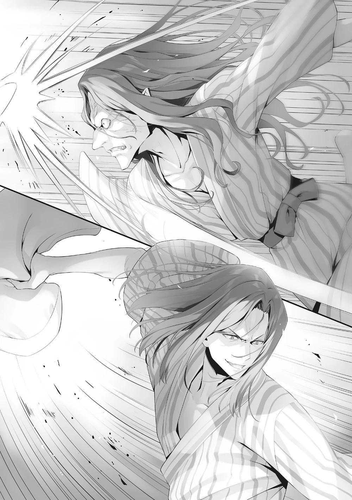
No necesitaba explicarlo, pero una almohada no es una herramienta para ser lanzada. No había forma de que las almohadas no acumularan daños, ya que no las estaban lanzando a la ligera, sino que continuaban atrapando y lanzando una serie de rígidas bolas rápidas sin restringir su potencia.
―Ahora que lo pienso, ¿de quién es esa almohada?
Ante el comentario de Watanabe, comprobamos de repente los futones del suelo.
De los cuatro futones, faltaba la almohada del del extremo que me dio Watanabe.
―¿Esa es... la mía?
Lo que debería haber estado en mi futón no estaba allí. Ahora mismo, parecía como si Kitou la estuviera agarrando entre sus manos e infundiéndole más poder oscuro que nunca. Podía sentir los gritos de la almohada.
―Voy a tener pesadillas si duermo sobre esa almohada.
No, para empezar, no había garantía de que la almohada mantuviera su forma, lo cual era aterrador. Ganara quien ganara, espero que mi almohada vuelva de una pieza.
―¡¡¡Hnnnnn!!!
La almohada se llenó de una densa intención asesina sin precedentes. Tal vez porque los gruesos dedos de Kitou se habían clavado en ella con tanta fuerza, estalló en el momento en que abandonó su mano. La tela se rasgó, y las pajas de trigo sarraceno de su interior se esparcieron por toda la habitación.
El sonido de las pajas de trigo volando por el aire hizo que todo el mundo se callara. La almohada que debía sostener mi cabeza había tenido un final miserable.
La almohada... Deseé fervientemente que estuviera a salvo, pero no volvió intacta...
Me gustaría expresar mis condolencias a las víctimas que fueron esparcidas tan cruelmente en el campo de batalla.
―No puedo evitar pensar que los chicos son realmente sólo niños, ¿no?
Los dos chicos, sin que pareciera importarles, tomaron una nueva almohada que tenían a mano, ante lo cual Nishino alzó la voz.
―No tenemos tiempo para esto. Estamos ocupados, ¿no podemos discutirlo más tarde? Es molesto.
Ryuuen ignoró la advertencia y estaba a punto de continuar, pero Kitou se mostró diferente. Se sentó en silencio y decidió detenerse. Sus acalorados pensamientos se enfriaron y percibió la frustración en su entorno.
―¿Eso significa que perdiste, Kitou?
―No voy a continuar si molesto a los demás.
Se retrajo tan rápido, que era difícil de imaginar por la atmósfera que irradiaba habitualmente. Bueno, si este iba a ser el resultado, ojalá desde el principio no lo hubiera hecho.
Al menos el sacrificio de la almohada, sus pajas esparcidas a sangre fría, podría haberse evitado.
―Bueno, por ahora, terminemos de limpiar y luego podemos empezar a hablar.
Con la ayuda de todos los chicos, excepto Ryuuen, y todas las chicas, conseguimos recoger los restos de la almohada sin gastar mucho tiempo.
Tendremos que conseguir una nueva almohada de los posaderos más tarde.
Tendré que decidir si digo la verdad o no. Recogí las pajitas de trigo esparcidas y las coloqué en una bolsa de plástico transparente que había en la basura, y empecé a hablar del tema original.
―Somos libres de ir a cualquier parte siempre que volvamos al ryokan a las 19:00, la hora límite para la cena, ¿verdad?
Primero, como algo natural, Kushida empezó a hablar por el grupo.
―Sí. Así que realmente es como un día libre.
Amikura se unió inmediatamente a la conversación.
―Supongo que podríamos tomar un tren o un autobús y salir hasta cierto punto, pero ¿qué deberíamos hacer...? Nishino-san, ¿tienes alguna idea de adónde quieres ir?
―Estoy pensando en esquiar. Sólo he estado practicando y todavía no he hecho suficiente esquí de verdad, y está la estación en la esquina de la montaña.
―Estoy de acuerdo con Nishino.
Acabamos de aprender a esquiar, y sería una pena dejar que se acabara después de solo medio día o así.
Kitou levantó la mano en silencio en señal de aprobación.
―Hay bastante gente que quiere esquiar. ¿Qué hay de Watanabe-kun y Yamamura-san?
―Yo tampoco tengo ninguna objeción. Estaremos en la ciudad el tercer día, también, así que ¿no está bien?
―Me parece bien cualquier cosa.
Yamamura, que aún no sabía esquiar, no parecía tener ninguna aversión en particular. ¿Intentaba adaptarse a su entorno o simplemente quería ser mejor esquiadora?
Sus emociones no parecían sugerirlo.
―¿Y tú, Mako-chan?
―Ummm. No soy tan buena esquiando, así que no me atrevería a decir que soy feliz, pero si todos los demás esquían, está bien. Somos un grupo.
Con eso, mostró su total disposición a ceder.
Kushida no ofreció su propia opinión, sino que miró a Ryuuen, que estaba sentado en el sofá individual.
―¿Y tú, Ryuuen-kun?
―Como quieran.
No tenía ningún argumento en particular y simplemente renunció a su derecho a hablar.
El grupo se sintió aliviado de que Ryuuen, la persona más problemática del grupo, tomara esa decisión. Era más acertado pensar que Ryuuen también tenía intención de disfrutar esquiando en lugar de no estar interesado en ir a ninguna parte.
DÍA 2 DEL VIAJE ESCOLAR
Era la mañana del segundo día de nuestro viaje escolar. Después de desayunar y vestirnos, estuvimos descansando en nuestra habitación hasta que salió el autobús hacia la estación de esquí.
Watanabe y yo encendimos la televisión. En la pantalla, la gente leía un resumen de las noticias de la mañana y hacía comentarios casuales.
Tras un rato así, el ambiente cambió cuando el programa pasó a un especial, sobre gatitos. Ryuuen, que estaba en la misma sala, ya había ocupado su lugar en el sofá de una plaza, y Kitou hojeaba un montón de revistas que el ryokan ponía a su disposición gratuitamente. Todas parecían tener la moda en común.
―Es tan inquietante ver que solo está leyendo un libro y parece tan amenazador... Es como si estuviera leyendo un manual de asesinato.
Watanabe susurró esto en mi oído. Pensó que nadie lo oiría, pero los ojos afilados de Kitou miraron fijamente a Watanabe. Tal vez intimidado por esto, desvió la mirada mientras se escondía en mi sombra.
―Definitivamente es un tipo que da miedo, ¿verdad? ¿Verdad?
Me sacudió por los hombros, pero, a ser posible, yo quería concentrarme en el especial sobre gatos de la tele.
―Oye, Kitou. Te indigestaste un poco con la pelea de almohadas de ayer,
¿no? Tengamos otra partida hoy.
Como para traer una tormenta a esta apacible mañana, Ryuuen le hizo una propuesta a Kitou. No hace falta decir que no fue una propuesta bien recibida por Watanabe y por mí.
―Tonto. ¿Deseas avergonzarte a ti mismo? Si quieres arrepentirte, no te detendré.
―Bueno, entonces, déjame sugerirte algo.
―¿Qué clase de juego quieres?
―El esquí que vamos a hacer suena bien, ¿no?
Parecía que quería una simple competición para ver quién terminaba primero.
Aunque Kitou no fuera un principiante, ayer al menos dejó claro que las habilidades de Ryuuen eran superiores.
No había necesidad de que Kitou se molestara para seguirle el juego a la estrategia de Ryuuen de tratar de arrastrarlo a su propio cuadrilátero. Sin embargo, Kitou cerró firmemente la revista con la misma energía.
―¿Crees que puedes ganar con esquís? Voy a aplastar tu confianza.
Aceptó el desafío y se negó a dar muestras de retroceder.
―No voy a dejarte ganar.
―Um chicos... ¿podemos no convertirlo en una competición?
La voz de Watanabe era tan baja que un niño podría haber dicho: "¡Las hormigas hablan!".
Mientras cuchicheábamos entre nosotros, los dos bandos se iban calentando.
Entonces Kitou se levantó, enroscó en su mano una revista prestada, se acercó a Ryuuen y le clavó la punta de la revista como si fuera la punta de una espada.
―Si pierdes, te quedarás callado como un gato durante este viaje.
Exigió, tal vez sin saberlo inspirado por el especial de televisión sobre gatos.
―¿Oh? Ya soy más maduro que tú, si me preguntas.
Con un chasquido, apartó la punta de la revista con el brazo.
Me gustaría ver este reportaje sobre gatos en paz. Les pedí que mantuvieran las distancias y evitaran forcejear.
―Tienes agallas, Ayanokouji, aunque la peor parte te la lleves tú.
No lo creo. No voy a dejar que se aprovechen de mí.
―De todos modos, ahora que las cosas se calmaron, voy a continuar...
Ésas eran mis intenciones, pero antes de darme cuenta, el gato había desaparecido de la pantalla del televisor. No me dio mucho tiempo a verlo, ya que terminó en pocos minutos.
―Siento ver eso, Ayanokouji. Te gustan los gatos, ¿verdad?
―No, la verdad es que no.
―¿No te gustó la función?
―Sólo quería verlo por alguna razón, pero no tengo ningún apego especial a los gatos como animal.
Me habría sentido igual si hubiera sido un reportaje sobre perros o hipopótamos.
El programa fue un alegre tema de conversación durante un rato, pero entonces se presentaron noticias de última hora.
Las noticias mostraban que, tras un largo periodo de recuperación, el ex Secretario General Naona Ee acababa de fallecer en un hospital de Tokio.
Desde la Oficina del Primer Ministro, el Primer Ministro Kijima Onikijima tenía algo que decir...
Con numerosos destellos, un hombre de expresión severa comenzó a hablar.
―'Que el hombre esté contigo, y el caballo contigo'. Estas palabras me las dijo el Dr. Naoe poco después de conocerlo.
Justo cuando el Primer Ministro empezó a hablar del fallecido, la pantalla se oscureció. Era el momento de subir al autobús.
Kitou, sosteniendo el control remoto con el dedo índice en el botón de encendido, gritó.
―Venga, vamos, Ayanokouji.
Voy a disfrutar esquiando, pero me preocupa un poco la competencia entre ellos dos.
PARTE 1
Salimos, pero nos esperaba un pequeño problema. Nos enteramos de que el autobús estaba atrapado en un embotellamiento y se retrasaría unos 10 minutos.
Había muchos estudiantes esperando el autobús, y cuando me di la vuelta, la entrada estaba a rebosar de gente.
―Hace frío, pero supongo que no tenemos más remedio que esperar fuera.
Watanabe exhaló un suspiro blanco y miró sombríamente al cielo. Era una pena que saliéramos un poco antes que los demás estudiantes, pero no se podía evitar. Aunque volviéramos a nuestras habitaciones, no podríamos relajarnos más de cinco minutos. Nosotros, el sexto grupo, esperamos al abrigo del tejado a que llegara el autobús.
―Oye, oye, ya que es una ocasión especial, ¿por qué no hacemos todos un muñeco de nieve?
sugirió Amikura al grupo, quizá para aprovechar la espera.
―Eso suena divertido. ¿Por qué no hacemos uno con Nishino-san y Yamamura-san?
―...Bueno, está bien.
Era de esperar que Nishino se negara a este tipo de cosas, pero sorprendentemente, cedió fácilmente.
―¿Y Yamamura-san?
―No, no me interesa.
Ella se negó, como era de esperar, aunque con cierta modestia.
Las chicas se apartaron y empezaron a recoger la nieve caída.
Al parecer, su intención no era hacer un muñeco de nieve pequeño, sino uno razonablemente grande.
―Oye, Ryuuen-kun, ¿por qué no vienes aquí y haces un muñeco de nieve con nosotras? Creo que será divertido.
Sabiendo que nunca aceptaría su sugerencia, Kushida apeló ostensiblemente a su buen corazón e invitó a Ryuuen a unirse a ellos. Los estudiantes a su alrededor también observaban el desarrollo con preocupación, tal vez porque no podían imaginar a Ryuuen construyendo un muñeco de nieve con entusiasmo.
Este comentario era en definitiva una venganza por lo de ayer.
Si él hacía algún comentario descuidado, ella estaba decidida a aprovecharse de la situación.
―Pensé que algunos controles y equilibrios la harían más tranquila, pero supongo que la malinterpreté.
Ryuuen murmuró para sí mismo.
Era cierto que Kushida, antes de que su identidad fuera conocida por sus compañeros, podría haber tolerado la situación.
Puede que sintiera una extraña sensación de sospecha, pero no había forma de que pudiera resolver el misterio. No puedo transmitir información que el resto de las clases desconozcan, como lo ocurrido durante el Examen Especial Votación Unánime.
No hace falta decir que no había forma de que Ryuuen aceptara la oferta de Kushida. No reaccionó a la invitación y giró la cabeza.
Por otro lado, había quien seguía contemplando en silencio el muñeco de nieve mientras se construía.
Era Yamamura, que se había ido distanciando poco a poco sin que nos diéramos cuenta.
―Hah...
Mientras observaba el muñeco de nieve que estaba haciendo Kushida, exhaló fríamente entre sus manos.
―¡Hah!
Kushida y los demás que construían el muñeco de nieve naturalmente llevaban guantes calientes.
Mirando a su alrededor, ninguno de los estudiantes que estaban fuera, excepto Yamamura, tenía las manos desnudas.
Era natural. Con este clima tan frío, no irían con las manos desnudas durante un largo periodo de tiempo a menos que tuvieran una razón especial para hacerlo.
Recuerdo que Yamamura se puso guantes antes de la clase de esquí de ayer.
Aunque pudiera alquilar guantes de esquí, ¿por qué no se los iba a llevar de camino a la estación?
Si los olvidó, pudo volver a por ellos, así que quizá había una razón para su ausencia.
Parecía aturdida y miraba fijamente hacia fuera, exhalando repetidamente.
Sentía curiosidad por el pueblo de montaña, pero cada vez empezaban a salir más estudiantes mientras esperábamos el autobús.
―Está nevando por todas partes, ¿verdad?
La dueña de esa voz familiar era Sakayanagi Arisu, miembro del cuarto grupo.
Ella debería estar con Hondou y Onodera de la clase de Horikita. Mientras recordaba esto, los estudiantes seguían apareciendo, la nieve continuaba sorprendiéndolos. Como Sakayanagi no sabía esquiar, seguro que iba a hacer turismo.
No nos relacionamos especialmente con los miembros del cuarto grupo, y todos los del grupo de Sakayanagi parecían estar juntos.
Pronto llegó el autobús que se dirigía al centro de la ciudad, antes que los demás que se dirigían a la estación de esquí.
El profesor que iba al frente dio la orden de subir, y los alumnos comenzaron a hacerlo uno a uno.
Sakayanagi caminaba con su bastón por la desconocida carretera cubierta de nieve.
Mientras observaba, me preguntaba si estaría en peligro.
Tal vez mi predicción se cumplió porque Sakayanagi resbaló y cayó sobre sus nalgas.
Afortunadamente, no sintió dolor, ya que la nieve pareció amortiguar el impacto.
―¿Estás bien...?
Tokito, un estudiante de la clase C asignado al mismo grupo 4, que caminaba ligeramente detrás de mí, se acercó corriendo hacia ella.
Pareció dudar un momento, pero luego me tendió la mano.
―Gracias, Tokito-kun.
Ella agarró la mano que le tendían mientras le daba las gracias un poco tímidamente.
Sería fácil levantar a la fuerza a la pequeña Sakayanagi, pero Tokitō lo hizo con cuidado y despacio.
A pesar de su rostro severo, era sorprendentemente sensible y considerado en su ayuda.
―No te fuerces. Tienes mal la pierna...
―Lo siento. Afortunadamente la nieve estaba blanda y no me dolió.
―¿Entonces no hay problema...?
Sakayanagi solía emplear una estrategia implacable como líder de la clase, pero los miembros del grupo de las otras clases debían de tener una impresión muy distinta.
Agarrando su bastón, Sakayanagi se levantó y le dio las gracias una vez más.
―Gracias por tu ayuda.
―Nada, es... Es..., quiero decir, me alegro de que no haya sido para tanto.
Avergonzado, desvió la mirada, incapaz de mirar directamente a Sakayanagi.
―Pensé que Tokito-kun era una persona mucho más aterradora.
―¿Eh? ¿Yo? ...No, no lo sé.
Sakayanagi se detuvo a hablar. Fue un intercambio que parecía mostrar el cambio en su relación.
―Porque normalmente pareces caminar con una mirada aterradora pegada en tu cara cuando nos cruzamos en el pasillo.
―Oye, ¿de qué me conoces?
Ante esta pregunta, Sakayanagi respondió sin pausa y con una sonrisa en la cara.
―Porque ambos somos estudiantes de segundo año. Conozco muy bien a Tokito-kun.
Si fueran un chico y una chica normales en una preparatoria común y corriente, esta sería una escena que seguramente causaría malentendidos. Sin embargo, tras esa sonrisa, siempre cabía la posibilidad de que el ingenio y los trucos de Sakayanagi estuvieran en juego.
En algunos casos, incluso caerse podría haber formado parte del cálculo.
Sakayanagi y Tokito caminaron codo con codo hasta la puerta del autobús, donde dejó que Sakayanagi subiera primero. La única otra persona que podría estar interesada en esta conversación era Ryuuen, que los miraba con gran curiosidad. Existiera o no una razón subyacente detrás de esto, estaba claro que aquellos que normalmente no tenían contacto entre sí estaban comenzando gradualmente a acortar la distancia entre ellos.
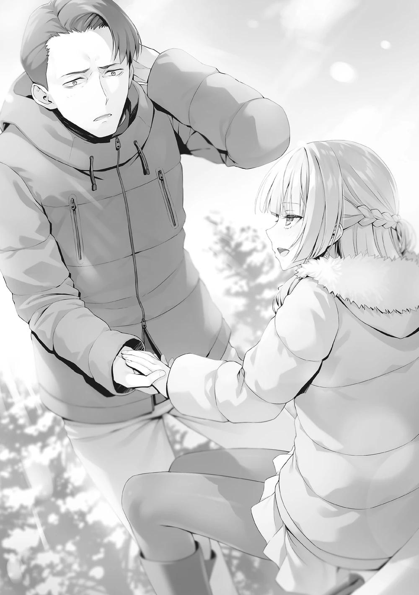
Los autobuses que llegaban con retraso hacia la estación de esquí también llegaron, sustituyendo a los autobuses hacia el centro de la ciudad.
PARTE 2
Tras bajar del autobús de la estación de esquí, los ocho decidimos pasear por la zona en lugar de entrar inmediatamente en la estación.
Esto no estaba planeado; fue idea de Amikura, que desde el autobús se fijó en varias tiendas de recuerdos de la zona.
Un desvío de 20 o 30 minutos no supondría una gran diferencia.
―Ummm... hace frío en Hokkaido esta mañana, ¿verdad? Hacía más calor en el autobús, así que noto mucho más la diferencia de temperatura.
Diciendo esto, Kushida se frotó los guantes, con el cuerpo temblando.
―Sí, este clima es sorprendente a finales de noviembre. Es raro que haya nieve en el suelo.
―Si vas a mirar por ahí, hazlo. Pero seguro que la mayoría todavía no están abiertos.
Ryuuen llamó al grupo que estaba quieto.
Todavía eran poco más de las 9:15.
La estación de esquí abre a las 9:30, así que la mayoría de las tiendas de la zona seguían cerradas.
Al parecer, Ryuuen tenía la intención de limitarse a disfrutar del esquí durante todo el día, por lo que quería dirigirse allí y esperar.
Entre las pocas tiendas que ya estaban abiertas, había una de ropa inusual, y por alguna razón, Kitou entró y comenzó a mirarla. Había ropa muy elegante e inusual en exhibición. ¿Encontró algo que le gustara?
Tal como pensaba, se cambió la ropa que llevaba y empezó a rebuscar en otro conjunto de ropa.
―Por cierto, los pies de Kitou son muy grandes. Parecen la huella de un muñeco de nieve, viejo.
Watanabe miró las huellas de nieve que conducían a la tienda de ropa y las comparó con las suyas, impresionado.
Kitou era ciertamente alto, pero aún sin tener eso en cuenta, seguro que sus pies eran bastante grandes.
―Vamos todos a curiosear por más tiendas.
Amikura, la que propuso la idea, llamó a todos y empezó a alejarse, como si el tiempo apremiara.
Kushida aceptó de inmediato la invitación de Amikura, pero Yamamura se negó, con la intención de quedarse atrás.
Watanabe y Nishino también decidieron caminar por su cuenta.
―¿Yamamura-san? ¿No vas?
―...Ah, me quedaré... Por favor, no se preocupen por mí.
Sólo Ryuuen, Yamamura y yo permanecimos en este lugar.
Realmente quería curiosear con Amikura y los demás, pero como no me invitaron a ir con ellos, perdí esa oportunidad.
¿Qué hago ahora? Podría echar un vistazo yo solo, como Watanabe y los demás...
Ya que Yamamura declinó la invitación, debe estar planeando quedarse aquí y esperar a que todos regresen.
Si me fuera, la estaría dejando sola con Ryuuen. Habría estado bien si los dos estuvieran en buenos términos, pero nunca habían interactuado antes.
No había perspectivas de que se llevaran bien; sería una pésima idea dejarlos solos.
Por lo tanto, a menos que Yamamura o Ryuuen comenzaran a actuar solos, era necesario quedarse allí hasta entonces, a pesar de ser frustrante.
―....
Yamamura se estremeció mientras observaba a Amikura y a los demás, cuyas espaldas se hacían cada vez más pequeñas.
La causa de sus escalofríos era evidentemente su falta de guantes, que normalmente mantenía ocultos en su abrigo. Era cierto que vino aquí sin guantes. Entonces, ¿debería prestarle los míos?
Pero si ella se negaba, podría hacer las cosas un poco incómodas.
El sexto grupo, incluyendo a Kitou y los demás, ya se había marchado, dejándonos sólo a nosotros tres en una situación tranquila.
Yamamura parecía estar conteniendo su temblor tanto como podía, pero igualmente no podía ocultarlo.
―Eh, Yamamura, dame la mano.
―¡¿Qué...?!
Mientras seguía preguntándome si debía llamarla o no, Ryuuen le dio instrucciones a Yamamura en tono áspero, quien estaba allí de pie con la mano en el bolsillo interior de su abrigo.
Al parecer, Ryuuen también se percató de los escalofríos de Yamamura y de lo poco normal que resultaba que sus manos permanecieran dentro del abrigo.
Pensó que sus manos frías saldrían, pero Yamamura desvió la mirada y...
―No quiero.
Dijo que no con firmeza, aunque en voz baja.
―¿Ah, sí?
―No quiero sacarlas. Hace demasiado frío.
Sin mencionar si llevaba guantes o no, expuso su razón. Podía sentir el frío viento de Hokkaido incluso a través de mis guantes. Sin duda, era más cálido tener las manos dentro del abrigo si no tenías guantes.
Pensé que la conversación terminaría aquí, pero Ryuuen pisó el camino cubierto de nieve e invadió el espacio personal de Yamamura.
Luego le agarró el brazo derecho y se lo sacó a la fuerza del bolsillo.
―Ah──
Tras confirmar directamente que no llevaba guantes, Ryuuen le soltó el brazo y Yamamura se apresuró a esconder las manos dentro de su abrigo.
―Vaya, debe de hacer frío. ¿Dónde están tus guantes?
Ryuuen demostró enérgicamente que llevaba las manos desnudas, pero Yamamura no contestó.
Le dio la espalda como pidiendo que la dejaran en paz.
―Para empezar, seguro que ni siquiera se te da bien esquiar, ¿pero encima no te pones guantes?
El punto de Ryuuen era válido. Como principiante, Yamamura ni siquiera era medianamente decente esquiando todavía.
Si sus manos estaban tan frías que eran inútiles, ella no haría ningún progreso.
Al contrario, sólo aumentaría el riesgo de caerse.
―Si te metes en muchos problemas y causas una conmoción, mi tiempo para esquiar será cancelado. ¿Puedes asumir la responsabilidad?
El énfasis en su propio tiempo de esquiar sonaba a una mezcla de egoísmo y torpe amabilidad, típica de Ryuuen.
―No, eso es...
Yamamura parecía incapaz de replicar a una cuestión que no fuera meramente de sentimientos.
―Entonces. ¿Dónde están tus guantes?
―Los olvidé...
―Ja, supongo que hay tontos así.
No mucha gente olvidaría sus guantes en este clima frío.
Riéndose por la nariz, Ryuuen miró sus propios guantes.
No creía que fuera a prestarlos por el bien de Yamamura──.
―Oi, Ayanokouji, préstale tus guantes.
―...¿Los míos?
Ni siquiera mostraba amabilidad y sin embargo me imponía exigencias.
―Yo también soy un novato en el esquí, ¿sabes?
―No tendrás ningún problema si te haces daño, ¿verdad?
No estoy muy seguro de haber entendido la lógica que había detrás, pero...
Por desgracia, no había ninguna tienda abierta por aquí que vendiera guantes.
Supongo que tendré que prestarlos pensando en el viaje. Puede que haya guantes especiales en la estación de esquí, pero incluso 10 o 15 minutos de calor marcarían la diferencia.
―No, no pasa nada. Estoy bien.
Yamamura dijo eso y exhaló mientras se alejaba.
―No deberías hacer eso. El frío causa vasoconstricción. Tu cuerpo tiembla porque tus músculos intentan elevar tu temperatura corporal. Podría ser peligroso empezar a esquiar en esas condiciones. ¿No es extremadamente frustrante que Ryuuen tenga razón?
―Eso es...
Le empujé con media fuerza los guantes que me quité a Yamamura.
―Pero... ¿Ayanokouji-kun?
―Estoy bien, no te preocupes.
No tengo una tolerancia especial al frío, pero como dijo Ryuuen, si intento soportarlo, no será un problema.
―Lo siento...
Aunque lo temía, Yamamura se puso el gran par de guantes con las manos temblando ligeramente.
Luego volvió a meter las manos en su abrigo.
Seguirán frías por un tiempo, pero después de unos minutos, mejorará.
―Tendrás que comprarte otro par de guantes de tu talla más adelante.
―Sí, tienes razón. Um, cuando lleguemos a la estación de esquí, por favor, déjame reembolsarte los guantes.
―¿Reembolsar?
―Me sentiría mal devolviéndotelos... después de haberlos usado. Están sucios.
―No están sucios. No, aunque te caigas y las manches, en realidad no me importa, mientras me los devuelvas como están, está bien.
―No me refiero a eso. Los ensuciaré al ponérmelos...
¿Es esta la forma de pensar de un germofóbico? No, pero Yamamura se puso los guantes sin resistencia, aunque con reservas. Es una forma de pensar que no acabo de entender.
―Aún así me gustaría reembolsarte.
En cuanto al reembolso de los guantes, no creo que eligiera descaradamente los más baratos y los devolviera.
La estaría obligando a hacer un gasto caro por una acción que no requería reembolso.
―Es sólo gastar algunos puntos privados extra. No tienes que preocuparte por eso.
―Es raro, ¿verdad?
Sigo diciendo algo como si no lo entendiera.
¿Por qué los usaría Yamamura y por qué la haría sentir incómoda?
Incluso si no hubiera sido Yamamura, yo me habría sentido igual.
―No pasa nada. Sería peor que te compensaran por preocuparte demasiado por ello.
Utilicé una afirmación un poco más fuerte para hacerle saber que estaba confuso.
―Entonces, al menos permíteme que te lo agradezca de otra manera.
No creía que un agradecimiento fuera necesario, pero quizá Yamamura se sentiría mejor si hacía algo.
Si es tan insistente, debería proporcionarle una forma de estar satisfecha.
―Entonces, ¿puedo hacerte una pregunta en lugar de un agradecimiento?
―...¿Sí?
―¿Hubo alguna razón por la que no tuvieras tus guantes desde que esperamos el autobús por la mañana?
―Me olvidé, eso es todo.
Sabía que no los había dejado sin querer.
―Tuviste tiempo de sobra para volver y cogerlos. ¿O estás diciendo que no tenías frío?
Pregunté, insistiendo más en lo que me había estado molestando.
―...Ese tipo de cosas, porque no era el estado de ánimo adecuado...
―¿Estado de ánimo?
―El tipo de estado de ánimo que es difícil de pasar, más o menos.
Es cierto que el vestíbulo estaba abarrotado de estudiantes, pero no estoy seguro de que fuera el ambiente lo que hacía difícil volver.
No, eso es sólo lo que yo siento, pero Yamamura podría no haber sentido necesariamente lo mismo. Aunque el intercambio sólo duró unos minutos, pude entender un poco más a la estudiante Yamamura.
Y eso podía ser intrigante.
―¿Con quién sueles salir, Yamamura?
¿Qué tipo de amigos hacen este tipo de estudiantes? ¿Son los mismos chicos tranquilos, o están en un círculo de chicos populares como Kushida que dan la bienvenida a todo el mundo? ¿O es una chica que se deja arrastrar?
Yamamura, sin embargo, no respondió inmediatamente a estas preguntas. Su expresión no mostró ningún cambio significativo, pero parecía ligeramente incómoda mientras entrecerraba los ojos y se daba la vuelta.
―Nadie en realidad. Suelo pasar la mayor parte del tiempo sola.
―¿Sola? No creo que la clase A deje sola a una persona.
―Tengo una presencia tan débil que... probablemente ni te darías cuenta de que estoy sola. Es algo cotidiano, así que no me preocupa especialmente.
Efectivamente le faltaba presencia.
Yo mismo sería clasificado como alguien similar.
Sin embargo, en el caso de Yamamura y yo, era muy probable que nuestras personalidades fueran completamente diferentes.
Si Yamamura tenía frío, era imposible que Amikura lo ignorara si se daba cuenta.
Hasta Kushida, que siempre se preocupaba por las reacciones de los demás, parece haberse insensibilizado ante la débil presencia de Yamamura.
Bueno, si Yamamura fuera realmente casi invisible, como una sombra, no creo que nadie le hubiera prestado atención cuando volviera por sus guantes.
La delgadez de una sombra. Si la analizamos objetivamente, podemos captar hasta cierto punto su verdadera naturaleza.
―¿Te gustas a ti misma, Yamamura?
―No me gusto para nada. Es imposible.
Yamamura respondió con sinceridad, quizá por obligación por haberle prestado los guantes.
Lo que quería ocultar era a sí misma, y ése era uno de los primeros factores que la dejaban en la sombra.
Si no querías revelarte, si no querías atraer a los demás, inevitablemente actuarías de forma discreta.
Hasta en una discusión, se ocultaba detrás de alguien y trataba de evitar que la reconocieran.
Era similar a llevar ropa negra en mitad de la noche.
Además, como no se mueven innecesariamente, rara vez se les nota cuando están a la vista.
Es como si tuvieran menos presencia de la que deberían.
Además, por lo que he visto, Yamamura parece desconfiar más de la gente que otras personas.
En otras palabras, teme a los demás y evita imponerse en la medida de lo posible.
La combinación de estos factores dio como resultado el nacimiento de Yamamura, una estudiante sombría e irreconocible. El problema es que, aunque se conociera la causa, no había una solución inmediata.
Yo, que no solía relacionarme con Yamamura, sólo conseguiría que desconfiara más de mí. Sería más fácil llegar a ella si hubiera alguien lo suficientemente cercano en quien ella pudiera confiar.
Finalmente, nuestra conversación terminó aquí y nos quedamos en silencio.
Unos 10 minutos después, justo antes de que se abrieran las puertas, todos regresaron.
―Entonces, ¿cómo debemos dividirnos? No tenemos que esquiar todos juntos, ¿verdad?
Aunque era obligatorio actuar como un grupo, eso no significaba que tuviéramos que coincidir en todos los detalles. Había una mezcla de esquiadores principiantes y avanzados, y sería difícil o quizá hasta molesto si todos tuviéramos que encajar bien con unos o con otros.
La clave es el equilibrio. Si las personas de tu alrededor lo juzgaban razonable o no cuando lo vieran.
La división del equipo tendría que considerarse empezando por el menos capacitado técnicamente de los ocho.
―Yamamura y yo estamos confirmados para el curso de principiantes. No me importa que esquiemos los dos juntos.
Había una pista apta para principiantes en la parte inferior de la zona de esquí, así que era seguro que ambos esquiarían allí. Yamamura aceptó rápidamente la oferta de Watanabe.
―Creo que sería mejor que alguien que sepa esquiar siguiera a Yamamura-san y a los demás. Si quieren, yo puedo...
―Oh, está bien, Kushida-san. Lo haré en la zona de principiantes.
―¿Qué? ¿Está bien?
―No te preocupes, puedes seguir esquiando. Aunque sepas esquiar, el curso avanzado da un poco de miedo.
Amikura se ofreció a seguir a Yamamura y a los demás, aunque ella estaba en el nivel en el que podía esquiar normalmente.
―Yo tampoco estoy seguro del curso avanzado... así que haré ese.
Respondió Nishino y se lo dijo a los demás al mismo tiempo, como si ella también hubiera planeado hacerlo desde el principio.
Inesperadamente, acordamos dividirnos en grupos de cuatro personas cada uno y esquiar diferentes cursos.
―Si quieren esquiar en los cursos intermedios o superiores, avísenme cuando quieran.
Por si Nishino y Amikura no estaban dispuestas a aguantarlo, Kushida añadió:
―Estaré allí para apoyarlos.
―Bueno, la comida es a mediodía. Reunámonos todos en el restaurante.
Cuando el grupo empezó a avanzar hacia la entrada de la estación de esquí, un sonido desconocido, el golpeteo de los cascos de un caballo, empezó a llenar el aire.
Koenji resultó ser el jinete.
Los alumnos de las otras clases estaban realmente asombrados, e incluso el mismísimo diablo parecía un poco desconcertado.
Era una reacción comprensible para los estudiantes que no conocían a Koenji desde hacía mucho tiempo.
―¡Señor, ────! ¡Usted no está en el curso...!
Inmediatamente después, vimos a lo lejos a varios miembros del personal aterrorizados, gritando mientras lo perseguían.
―¿Qué fue eso...?
―Es increíble, ¿verdad...?
Atónita, Nishino miró fijamente a Koenji, y su figura pareció encogerse.
―¿Qué es esto? Nunca había visto algo así, pero no me sorprende.
Kushida dijo esto para que sólo yo pudiera oírlo.
―Como compañeros de clase, estamos acostumbrados a ver el comportamiento extravagante de Koenji...
Extrañamente, sentí que no era sorprendente que algo como lo que acababa de pasar sucediera con Koenji.
Familiaridad, por decirlo sin rodeos.
PARTE 3
Nos separamos para cambiarnos de ropa, nos preparamos y nos reunimos en el punto de encuentro.
Nos trasladamos a la parte delantera del ascensor en una cabina conmigo, Ryuuen, Kitou y Kushida.
Decidimos subir al ascensor de dos personas en la combinación de Ryuuen y yo, y Kushida y Kitou.
Decidimos que esta combinación sería la menos propensa a causar problemas.
Para estar seguros, dejamos que Kushida y Kitou fueran primero y pusimos entre nosotros dos pares antes de subir al ascensor.
Haciendo esto, también pretendíamos evitar un enfrentamiento en el ascensor.
―¿No pueden llevarse Kitou y tú un poco mejor?
―Eso es imposible. Aunque si Kitou insiste en ello, eso es otra historia.
Con la mirada fija en las montañas nevadas, Ryuuen contestó como si fuera a vomitar.
―Así que estás diciendo que no hay mucha esperanza. Si es así, que así sea, pero es una rara oportunidad. Kitou parece haberse ganado cierta confianza de Sakayanagi. Creí que podrías estar pensando en usar esto como una oportunidad para meterlo en tu bolsillo. En algunos casos, podrías convertirlo en un aliado.
Ryuuen, sentado a mi lado, pensaba que este viaje escolar era principalmente para recabar información, y no se equivocaba. De hecho, era probable que Sakayanagi pensara algo parecido.
―La apariencia de Kitou no es completamente humana, pero parece estar lleno de lealtad. Además, Sakayanagi naturalmente desconfió de mí cuando formó un grupo conmigo. Una mala negociación sería contraproducente.
―Eres bastante pragmático, ¿verdad?
Hasta ahora, había tenido poca interacción con Kitou, y todavía no sabía nada de él en detalle.
Sin embargo, por su actitud podíamos percibir fuertemente que le desagradaba profundamente Ryuuen y que estaba tratando de proteger a la Clase A junto con Sakayanagi. No había escuchado de ningún comportamiento problemático del propio Kitou. Si por descuido negociaba llevarlo a su bando, sería como pedir información a mansalva.
―Además, el único miembro que necesitábamos de la clase A era Katsuragi. Kitou y Hashimoto son lo suficientemente aptos como meros compinches, pero no tanto como para ser nuestros peones. No vale la pena arriesgarse.
Esa parecía ser la razón por la que trataban a Kitou y Hashimoto con continua hostilidad en lugar de hacerlo amistosamente.
Aunque reconoció a Kitou y a los demás, de lejos se ve que le dio un reconocimiento especial a Katsuragi.
El ascensor llegó y nos bajamos en el curso avanzado.
Kitou, que esperaba delante de nosotros, llamó a Ryuuen al punto de partida con una mirada.
Dijo que no perdería el tiempo y se metió de lleno en la carrera cuesta abajo.
―Eh, da la señal.
Ryuuen instruyó a Kushida y le ordenó que contara para la salida.
―Los dos, tengan cuidado.
Kushida levantó la mano y comenzó la cuenta atrás para la salida. Estaban a pocos metros de distancia y preparados para empezar a esquiar. ¿Quién sería el ganador?
―¡Arranca!
En el momento en que Kushida bajó la mano, ambos se pusieron en marcha casi al mismo tiempo.
―Vamos tras ellos, ¿de acuerdo?
―Oh, ¿estás segura? No estoy seguro de poder seguir tu ritmo....
―Bueno, entonces, puedes alcanzarnos poco a poco.
Después de unos segundos, Kushida y yo comenzamos a deslizarnos por la pendiente.
Ryuuen y Kitou batallaban de un lado a otro, dejándose llevar por la corriente.
Esquiaban por la pendiente a gran velocidad, arqueándose maravillosamente a derecha e izquierda.
Mi técnica, que ayer todavía estaba incompleta, empezó a mejorar con su ejemplo.
Un curso más largo y avanzado me permitiría aprender más a fondo y a conciencia.
Aparte de eso, la batalla entre Ryuuen y Kitou estaba casi igualada.
Pensaba que uno de ellos se adelantaría antes que el otro, pero la cosa estaba más o menos igualada. Por lo que pude ver, no había mucha diferencia en la técnica, y eran igual de competitivos. Incluso después de la mitad del recorrido, todavía no se veía una ventaja decisiva. Los dos esquiadores seguían enzarzados, y justo cuando la carrera llegaba a su fin, la distancia horizontal que habían mantenido entre ellos empezó a reducirse. Se produjo una situación peligrosa.
Los dos esquiadores corrían ahora el riesgo de chocar por culpa del solapamiento en la posición del recorrido.
No se trataba de una mera coincidencia.
Debería considerarse una advertencia, como si estuvieran sugiriendo que seguiría siendo una victoria incluso si abordas a tu oponente y lo haces caer.
Copié los movimientos de ambos y aceleré, absorbiendo casi todas sus técnicas.
―¡Muere, Kitou!
―¡Piérdete, Ryuuen!
Percibí el sonido retardado de esas voces y, justo antes de que estuvieran a punto de chocar, me introduje con fuerza en el pequeño hueco que había entre ambos.
La intrusión de un tercero hizo que los dos se desbandaran a izquierda y derecha presas del pánico.
Ambos me fulminaron con la mirada, pero conseguí obligarlos a mantener las distancias.
Tras esquiar por el recorrido avanzado de una tirada, Ryuuen y los demás se detuvieron ligeramente delante de mí.
Ryuuen y Kitou se dieron la vuelta de inmediato y se acercaron caminando.
―¿Por qué nos interrumpiste?
Los dos hombres estaban a punto de sujetarme con tono enfadado.
―Porque pensé que era peligroso ―dije―. Se pasaron de entusiastas e intentaron ganar en algo que no era esquiar.
―Un combate es un combate en cualquier modalidad. Ryuuen lo sabía.
―No importa si el oponente lo entiende o no, eso no es una competición de esquí.
Tras una ronda de quejas, Kitou fulminó a Ryuuen con la mirada y luego se fue esquiando.
Creyó que el ambiente se había disipado, que ya competirían más tarde.
En ese momento, Kushida también bajó por la pista y llegó a nuestro lugar.
―¡Los tres son demasiado rápidos, o mejor dicho, Ayanokouji-kun era bastante anormal...!
Ryuuen también se acercó con cara de disgusto mientras pisaba la nieve.
―¿De verdad eres un principiante? ¿Mentiste?
―¿Mentir? No, ayer fue mi primera vez esquiando.
Ryuuen no lo creyó, escupió y se dirigió solo al ascensor.
Supongo que eso es un alivio por ahora. Tal vez.
―No me extraña que esté tan enfadado, es decir, estabas esquiando espectacularmente. Era como el héroe de un cómic que lo hace todo a la perfección con su talento, aunque no se esfuerce. Como dijo Ryuuen, ¿de verdad fue sólo tu segunda vez?
Odio decirlo, pero no soy ese tipo de héroe de cómic.
A lo largo de los años que viví, mi cuerpo y mi alma acumularon innumerables experiencias.
Aunque el esquí en sí era nuevo para mí, los deportes en general estaban básicamente conectados por líneas anchas y poco profundas.
Yo sólo intentaba conectarlos con la información verbal y visual que recibía.
―¿No me crees?
―No, sí te creo. Pero quizá no te hubiera creído si no hubiera visto tus habilidades al enfrentarte a Amasawa-san.
En aquel momento, le mostré a Kushida una pelea entre estudiantes de la Habitación Blanca, aunque sólo fuera un momento.
¿Esa duda y escepticismo de entonces añadieron credibilidad a mi mejora en el esquí?
―Eso es genial.
Me elogiaron una vez más, pero no me atrevía a aceptar el elogio.
―No, no lo es.
―Otra vez esto.
No se podía evitar que sólo lo vieran como una muestra de modestia.
Pero de hecho, la forma de esquiar de Ryuuen y Kitou era la de expertos, verdaderos modelos a seguir.
Puede que no hayan acumulado tanta experiencia como yo.
En ese sentido, tienen mucho más sentido común que yo.
―Vayamos también a un ascensor. Ahora que se acabaron los problemas, podemos disfrutar esquiando.
―Sí, claro. Aunque puede ser difícil para los que no saben esquiar.
Eso es cierto para la diversión en general.
Estaría bien que la gente pudiera disfrutar esquiando aunque se le diera fatal, pero no es el caso.
Tanto si se trata de videojuegos como de deportes, los que no son buenos en ellos no suelen disfrutarlos.
PARTE 4
A mediodía, todos los del sexto grupo nos reunimos en un restaurante anexo a la estación de esquí. Estaba acondicionado como un patio de comidas, así que cada uno pedimos lo que quisimos y volvimos a nuestros asientos.
Me entregaron un timbre con el número "32" y me dijeron que fuera por la comida que pedí en cuanto sonara.
―¿Cómo les fue con Watanabe-kun y los demás? ¿Pudieron mejorar su esquí?
Kushida, que hasta ahora estaba en el curso avanzado, preguntó por los resultados de los cuatro que fueron al curso para principiantes.
―Aprendí a esquiar bastante bien. Aunque todavía no soy tan buena como Amikura y Nishino.
Watanabe se mostró humilde, pero también reveló un poco de confianza en su crecimiento.
Por otro lado, Yamamura, cuyo nombre no se mencionó, tenía una expresión más sombría y no estaba muy animada.
―Yamamura está... Bueno, aún no está lista.
Informaron de que no había señales de mejora.
El aire de no llamar a la persona en cuestión también era muy fuerte, así que decidí callarme.
Entonces sonó el timbre y fui a buscar la comida.
Llevé la sopa caliente de curry a la mesa en una bandeja.
Luego, cuando los ocho estuvimos presentes, comenzamos nuestro almuerzo.
Ryuuen, que para comer algo ligero había elegido una hamburguesa, fue el primero en terminar de comer y empujó el papel del envoltorio y la bandeja hacia Watanabe. Watanabe sonrió con amargura y apiló la bandeja vacía sobre la suya.
―Dame tu tiempo, Ayanokouji.
―Eh... todavía estoy comiendo, ¿no?
Quedaba aproximadamente un tercio de la sopa de curry. Esperar demasiado arruinaría la sopa caliente.
―Continúa.
Watanabe me despidió en silencio, compadeciéndose de mí. Ryuuen no me miraba.
―Voy a tomar un descanso.
―Sí, esperaré mientras los demás comen.
Dejé que Kushida se hiciera cargo de la situación y caminé con Ryuuen por el patio de comidas.
Finalmente me detuve al final del patio y saqué mi celular.
Lo desbloqueé con la punta de los dedos y me quedé un rato mirando la pantalla.
―Lo sabía. Efectivamente, esa persona, Sakayanagi, está utilizando a sus secuaces para recabar información.
Por lo visto estaba confirmando el informe de sus compañeros de clase.
―Supongo que a ti también te pasa lo mismo.
No lo estaba preguntando directamente, pero suponía que Ryuuen les había dado las mismas instrucciones.
―Bueno. Este viaje escolar no es para cultivar la amistad. Para aplastar a tus enemigos, es importante primero arrancarles los miembros. Sakayanagi sabe eso muy bien.
Ni Sakayanagi ni Ryuuen podían luchar una batalla de clase como individuos.
Era importante ganar la competencia de clase como grupo.
Aunque era necesario mejorar las habilidades de sus compañeros, también era importante reducir la fuerza de sus oponentes.
Sakayanagi tenía las piernas especialmente mal, y su rango de movimiento solía ser muy limitado.
Esto lo compensaban Kamuro y Hashimoto.
Si se descubría una debilidad suya que los hiciera sucumbir ante Ryuuen, Sakayanagi perdería una valiosa extremidad. Su capacidad para reunir información se vería mermada de golpe.
―Déjame preguntarte por qué te tomaste la molestia de llamarme aquí. No es para informar sobre la batalla de reconocimiento, ¿verdad?
―Voy a instruir al resto de mi clase para que comience a prepararse para una guerra total contra Sakayanagi. Tanto si la tarea para el examen de fin de curso es un examen escrito como si no, la aplastaré por todos los medios.
―Escuché algo parecido en el autobús. Dijiste que la batalla ya ha comenzado.
―Sí. Pero antes de que hagamos cualquier movimiento, hay algo que necesito recordarte.
Mientras Ryuuen decía esto, mi celular vibró una vez.
Le dije que esperara un momento y revisé la pantalla para ver un breve mensaje de Kushida.
[Yamamura-san va en camino hacia ti].
Me preguntaba si le preocupaba que me hubiera convocado Ryuuen y se había desplazado para ver cómo estaba.
Con toda probabilidad, Yamamura se movía bajo las instrucciones de Sakayanagi.
La posibilidad de que Yamamura estuviera espiando cerca había surgido, pero no se lo dije a Ryuuen.
Esta era también una escena de la batalla entre Sakayanagi y Ryuuen. Mi ayuda fue en detrimento de Sakayanagi.
Por otro lado, Ryuuen también parecía haber recibido un mensaje de alguien más y estaba mirando la pantalla de nuevo.
Sin cambiar su expresión, Ryuuen se guardó el celular en el bolsillo y comenzó a hablar.
―Espero que recuerdes lo que dije hace un año sobre mi plan de 800
millones de puntos.
―Sigo pensando que no es factible.
―Estoy seguro de que no. También estoy seguro de que el resto de la clase reaccionará igual cuando lo descubran después de esto.
―¿Se los vas a decir?
La única persona de la clase de Ryuuen que conocía la estrategia para acumular 800 millones de puntos debía ser Ibuki. Incluso Ibuki debió enterarse por accidente y no conocía los detalles.
―Es un plan jodidamente caro. No es una cantidad de dinero que pueda permitirme si procedo en secreto. Me queda poco más de un año, y es demasiado tarde para mover el asunto.
Sin duda, la cooperación de sus compañeros era esencial si quería aumentar las posibilidades de éxito de su estrategia.
Al igual que Ichinose fue reuniendo poco a poco los puntos privados de todos por confianza, Ryuuen también necesitaba trabajar con sus compañeros de clase para alcanzar la cantidad objetivo.
―¿Lo que quieres confirmar es si estoy dispuesto a cooperar con el plan de los 800 millones de puntos?
―He sido muy cordial con tu clase hasta este punto, ¿sabes? También impulsé nuestro enfoque para los exámenes de fin de curso en la dirección de Sakayanagi. Estoy seguro de que no tienes quejas.
Estoy seguro de que desde aquella época del año pasado, cuando él y yo lo discutimos, la clase de Horikita había podido moverse con tanta libertad que se olvidaron parcialmente de la presencia de Ryuuen. Si Ryuuen hubiera seguido tan beligerante como el primer año, las cosas no habrían ido tan bien.
―Se ve que también te va muy bien con Kushida. Me entusiasmó la idea de que fueras a expulsarla de la escuela.
―Lo siento. A veces tenemos que cambiar nuestra política.
Ryuuen se rio y dio varias palmadas, como si le gustaran mis palabras o tuviera algún problema con ellas.
―Si quisiera, no habría ningún problema en aplastar a Kushida. Tú lo sabes, ¿verdad?
Ryuuen era uno de los pocos estudiantes fuera de la clase que conocía la verdadera naturaleza de Kushida.
Podría haberlo expuesto en cualquier momento, pero no lo hizo, lo que sería el resultado mismo de lo que acababa de insinuar.
―¿Así que quieres que cumpla mi promesa? Eso es muy contundente por tu parte, hasta incluyendo una amenaza.
―No me importa si es contundente o no. ¿Lo vas a hacer o no?
En ese momento, era una promesa verbal, pero Ryuuen había dicho que no cedería si la violaba.
―Antes de responder, déjame preguntarte lo siguiente: aunque fueras capaz de derrotar a Sakayanagi, ¿qué harás después de eso?
―Después de derrotar a la clase A al final del año escolar, será una batalla uno contra uno entre mi clase y la tuya, eso es un hecho. En mi mente, todo es parte de la historia hasta que te derrotemos.
Así que eso es lo que estaba pensando. Aunque no lo dudo, considerando lo que he visto hasta ahora.
―Eso es demasiado conveniente. En ese momento, te bajaste del escenario una vez. Y se suponía que sólo te encargarías de hacer llegar la noticia a Kaneda y a Hiyori. Pero ahora has vuelto a escena. Si quieres cumplir tu promesa, tiene sentido que te retires. Si nosotros estamos en la clase A y tú en la B, ¿no es inevitable que renuncien a la victoria?
Sólo entonces podemos preparar el terreno para la charla de cooperación de 800 millones de puntos.
―¿No te gusta?
―Por supuesto que no. Si Horikita y tú, junto con las dos clases, se enfrentan de verdad, y ustedes ganan y ascienden a la clase A, nuestro bando será el único que habrá hecho el ridículo. ¿O vas a prometer que ascenderás a los alumnos de la clase de Horikita a la Clase A si el plan de los 800 millones tiene éxito?
La sonrisa se desvaneció del rostro de Ryuuen, y dirigió hacia mí sus afilados ojos de soslayo.
―Esa es una proposición imposible. Los puntos privados extra son nuestros, por supuesto. Es dinero que seguirá después de que nos graduemos, y no vamos a usarlo para salvar a estudiantes ajenos a nosotros.
―Si pierden, los rescataremos, y si ganan, ¿nos abandonarán? Es una propuesta que no tenemos que seguir pensando. No podemos colaborar con el plan de acumular 800 millones de puntos. Sin embargo, eres libre de atacar a cualquier clase a partir de ahora, y no tenemos derecho a detenerte.
―Supongo que no eres tan ingenuo después de todo, Ayanokouji.
Esto no se trataba sólo de mí.
Yo no soy el único que tiene un problema con esto. Así que ahí lo dejamos en ese momento.
Se echó atrás más fácilmente de lo que yo esperaba. Sabía que iba a ser rechazado.
―Aunque las negociaciones se rompan, ¿todavía piensas ahorrar 800
millones de puntos?
―No voy a cambiar mi estrategia ahora. Mi objetivo principal es ahorrar los 800 millones. Después de eso, voy a vencer a Sakayanagi, y luego a ti. Si no gasto nada de dinero y llego a la Clase A, me graduaré con mucho dinero.
¿Verdad?
El plan, que había sido un sueño, fue reemplazado por otro ideal.
Pero de aquí en adelante, Ryuuen afirmó audazmente que ahorraría 800
millones.
―Hasta este punto, hemos gastado dinero en sacar a Katsuragi y usar a los mocosos de primer año, pero ahora es el momento de recuperarlo. Voy a cambiar a un minucioso sistema privado de puntos.
Cuanto más ansioso estaba por recolectar puntos privados, mayor era el riesgo que corría.
Los pensamientos y la actitud de Ryuuen aquí proyectan una extraña sombra sobre mi pensamiento.
―Te ves como si te preguntaras por qué te presioné para que cumplieras tu promesa sin hacer concesiones.
―Eso es cierto. No veo el propósito de esta conversación.
―Es muy sencillo. No puedo destruirte si sigo medio unido a ti. Pero si lo terminas así, es diferente. Podemos ir mano a mano.
En otras palabras, eligió su obsesión con un vigor renovado por encima de un conflicto de intereses.
En el autobús dijo algo parecido, pero volvió a declarar la guerra.
Aun así, no me convenció del todo. Detrás de esta conversación se ocultaba un motivo.
No encontraría una respuesta si la buscaba aquí.
―Está bien mirar hacia adelante, pero deberías pensar en la revancha sólo después de vencer a Sakayanagi.
―Ja. Sé que es inteligente. Pero eso es todo.
Mostró absoluta confianza en la batalla durante el examen de fin de año.
Ryuuen fue derrotado y luego resucitado.
Admito que su talento superó mis expectativas.
También es cierto que su historia de éxito va por buen camino.
Sin embargo...
A fin de cuentas, si será capaz o no de superar los obstáculos del camino es otra cuestión. Me pregunto si su inexactitud a la hora de reconocer los obstáculos acabará resonando en el campo de batalla.
Por supuesto, las señales e indicaciones volverán a cambiar dependiendo también de cómo perciba Sakayanagi a Ryuuen.
―Regresa primero, Ayanokouji.
Diciendo esto, Ryuuen caminó hacia el baño.
Hiyori, que nos había estado observando desde un asiento algo distante, se fijó en nosotros y nos saludó con la mano.
Al parecer, el grupo de Hiyori también vino a esquiar.
Levanté ligeramente la mano en respuesta y volví a la mesa del grupo.
Yamamura ya había regresado y utilizaba en silencio su celular con aire indiferente.
―¿Dónde está Ryuuen?
―Va a pasar por el baño y luego volverá.
―...¿Estás bien? ¿Te golpearon o algo?
Watanabe parecía preocupado y revisó cada parte de mi cuerpo.
―No te preocupes. Sólo estábamos charlando un poco.
―Eso espero...
Yamamura, que había estado comiendo despacio, terminó su comida y llevó su bandeja al oeste para acompañar a Nishino.
―Yo... voy a dejar mi bandeja.
Como los dos pidieron en el mismo restaurante, volvían juntos.
―Ayanokouji, si tienes alguna debilidad, no dudes en decírmelo.
murmuró Kitou con una mirada profunda, como si pensara que Watanabe había estado preguntando con demasiada insistencia.
Me habría gustado que dijera esas palabras antes de ser convocado.
Cuando Ryuuen regresó poco después, Kitou apartó su mirada de mí.
―¿Huiste de mí y pasaste a asustar a gente de otras clases?
―¿Oh? Kuku, no te preocupes, Kitou. Voy a ocuparme de ti y del resto de la Clase A. Voy a enseñarte que Sakayanagi es solo un peldaño para mí.
―No puedes vencer a la Clase A.
―Nunca se sabe.
Él redujo el margen, o debería decir Ryuuen actuó para que pareciera así.
Él puede estar diciendo que puede ganar, pero no hay ninguna prueba real que lo apoye.
Por supuesto, puede tener información que yo desconozca, pero en una simple comparación de habilidades, Sakayanagi estaba por encima del resto.
―No esperes al examen de fin de año, siempre puedes intentar tenderme una trampa.
―Oye, oye, no tienes autoridad para hacer eso, Kitou. Tú, cuyo único mérito es tu papel de perro leal, eres el que se mete en problemas cuando haces comentarios descuidados, ¿verdad?
Kitou, tras haber sido llamado perro, puso su gran palma sobre la mesa y se levantó.
―Naturalmente, yo solo me basto para derrotarte.
―¿Oh? Entonces, ¿es esto 'la tercera es la vencida'?
La pelea de almohadas se detuvo por una almohada rota. La pelea de esquíes no se resolvió por mi intervención.
―Seamos amigos, ustedes dos. Ya corre el rumor de que nuestro grupo es bastante peligroso.
Algunos de los clientes de alrededor empezaban a mirar con asombro el enfrentamiento entre Ryuuen y Kitou.
Era cuestión de tiempo que los profesores se enteraran si seguían siendo demasiado extravagantes.
―Por cierto, ¿no llegan tarde Nishino-san y los demás?
―Podría decirse que sí.
No deberían haber tardado más de un minuto en llevarse las bandejas, pero no había señales de ellos.
Al notar que Nishino y Yamamura no habían regresado, Kushida fue a buscarlas.
―Oh, ahí están. Pero creo que están enredadas con unos chicos que no conozco.
En el abarrotado patio de comidas, Kushida señaló en dirección a Nishino y Yamamura, que estaban rodeadas por cinco estudiantes varones. Ambas tenían una expresión sombría.
―Eh, eh, eh, eh. Vamos a ayudarles.
―Es mejor no moverse en gran número. Si los atrapan, tendrán problemas.
Acababa de dar ese consejo, pero ya había gente abandonando sus asientos.
Los dos tipos que no escucharon mi consejo se dirigieron hacia Nishino y los demás sin comunicarse.
―Kushida y los demás, esperen aquí.
Les indiqué a Kushida, Amikura y Watanabe que no se movieran.
Mientras alcanzaba a Ryuuen y Kitou, que se dirigían hacia la escena con pasos pesados, una conversación llegó a mis oídos.
―¿Me golpeaste en el hombro y no te disculpaste? Mi ropa está manchada de caldo de ramen.
Al parecer, no fue Nishino quien empezó el problema, sino Yamamura, que chocó con el hombre.
―¿No es culpa tuya por no darte cuenta de que Yamamura-san pasaba por aquí?
Los chicos rieron burlonamente y se tocaron los hombros.
―No, no, no pude verte porque parecías un fantasma femenino de por aquí. ¿Ves?
―...Lo siento mucho.
Yamamura se disculpó en voz baja. Quizás ya se había disculpado más de una o dos veces.
Pero los chicos siguieron actuando como si no la hubieran oído.
―Estamos aquí en un viaje escolar desde Gifu, vamos a divertirnos. Las dejaré libre de eso.
El hombre agarró por la fuerza el brazo de Nishino, que se quedó de pie.
―¿Eh? No me interesa. ¿Quién quiere jugar con ustedes?
La palma de la mano de Nishino rozó ligeramente la mejilla del chico mientras tiraba a la fuerza del brazo para zafarse de su agarre.
―Ya lo sé.
Los chicos, que habían estado sonriendo de forma vulgar en todo momento, cambiaron inmediatamente de expresión.
Uno de los cinco chicos salió volando por los aires.
―¿Qué demonios estás haciendo?
―Esa es mi frase. ¿Qué quieres con mi amiga?
Fue Ryuuen quien asestó una potente patada en la nuca del chico.
Inmediatamente después agarró al otro chico por el pecho y lo levantó.
―¡No chilles como un pajarito fisgón delante de una mujer!
―¡Te voy a matar, tú...!
―Adelante, inténtalo. Dejaré que me pegues una vez si quieres. Quieres un recuerdo del viaje escolar, ¿no?
Levantó el dedo índice como si le estuviera ofreciendo su mejilla izquierda.
―¡Oh, entonces gracias por sentirte libre de dejarme pegarte una vez!
Hizo lo que le decían y balanceó con fuerza el brazo.
―Ah, eso es...
―No creas que realmente voy a dejar que me pegues. Esta vez ni siquiera puedes recibir un consejo así.
Viendo los inútiles movimientos de su oponente, Ryuuen agarró los dos hombros del chico y le propinó un potente rodillazo en el estómago. El estudiante de la otra escuela rodó agonizante.
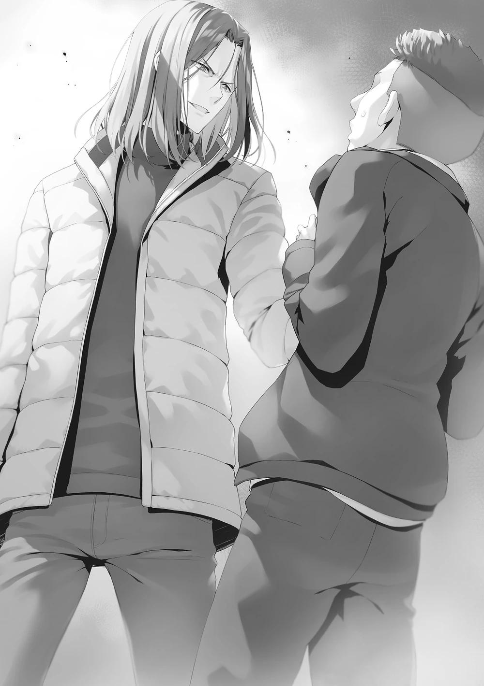
―Hasta un aburrido viaje escolar puede tener un acontecimiento ligeramente interesante, ¿no?
Ryuuen comenzó a encontrar diversión en la situación que estaba destinada a producirse.
El primer evento en su vida de preparatoria que lo puso en contacto con otra escuela resultó ser un asunto perturbadoramente violento.
Uno de los chicos lo golpeó con los puños izquierdo y derecho, cerrados con todas sus fuerzas.
No había pretensión de pelea uno contra uno, y el otro bando parecía empeñado en ganar por número.
Entonces apareció Kitou, deslizándose hacia ellos.
Los otros chicos se sobresaltaron al ver su rostro y su aspecto intimidatorio, que claramente no era el de un estudiante de preparatoria.
―Parece que está intentando... Luchar de nuestro lado.
Nishino agarró a Yamamura por los hombros para protegerla mientras se acercaba a mí y murmuraba.
―Yamamura es compañera de clase de Kitou. Es natural que él no se retirará si la encuentra en un aprieto.
Afortunadamente, parecieron entender que seguir peleándose en el patio de comidas no era una buena idea, y Ryuuen y los demás caminaron con cautela hacia la puerta de salida.
―¿No debería alguien llamar a un adulto?
―No puedo detenerlos ahora que están así. Prefiero que eviten el ojo público y se peleen.
Vi que los oponentes nos superaban en número, pero ninguno de ellos parecía acostumbrado a trabajar en equipo.
Si Ryuuen y Kitou formaban equipo para luchar, no les llevaría mucho tiempo.
Unos 10 minutos después, Ryuuen y los demás regresaron. Volvieron con la gente a la que golpearon.
Los hicieron arrodillarse frente a Yamamura y Nishino y suplicar perdón.
Daba la impresión de que les habían sacado la rebeldía a golpes y les habían destrozado el espíritu...
Esto sería un problema si alguien lo viera, pero quizá era necesario por el bien de Yamamura y Nishino.
Los hicieron jurar que no volverían a mostrarse delante de las chicas, y luego fueron liberados.
―Nunca hay un momento de aburrimiento, ¿eh? ―susurró Kushida y yo sólo pude asentir.
PARTE 5
Después de esquiar todo lo que pudimos, volvimos al ryokan antes de las 19:00
horas.
Todavía no habíamos esquiado lo suficiente, pero fue mejor así, ya que no queríamos dejar nada atrás.
Se acercaba el final del segundo día, y la noche se acercaba cada vez más.
Durante la cena, Sudou me invitó a unirme a él en el gran baño público, donde me lavé el cuerpo antes de relajarme en las aguas termales.
―¡Ka! ¡Funciona!
Estoy seguro de que Sudou, que suda a diario durante los entrenamientos de baloncesto, lo encontraría excepcionalmente eficaz.
Recogió repetidamente el agua caliente con ambas manos y se lavó la cara, al parecer disipando su agotamiento.
―Hola.
Después de sumergirme aturdido en la bañera durante un rato, Hashimoto, un alumno de clase A, se acercó a mí.
Levanté ligeramente la mano en respuesta, y Sudo levantó la suya al unísono.
―Bueno... hoy estoy muy cansado.
La clase era una forma estupenda de conocernos y aprender más unos de otros.
―¿Pasó algo?
―No pasó nada, sólo he estado preocupado por un niño problemático en mi grupo.
Interiormente, el grupo de Hashimoto le había estado molestando desde el principio.
―Bueno, está Koenji.
―Correcto. Se supone que en las actividades libres hay que trabajar todos juntos, ¿no? Normalmente, si estás cuerdo, deberías discutirlo, pero todos vamos de la mano a donde ese tipo quiera ir.
Era obvio que Koenji no era de los que obedecen con madurez, y eso no cambia ni siquiera en un ambiente de grupo que incluye a todas las clases.
―Hoy parece que estuviste en el rancho que ofrece paseos a caballo.
¿Era algo que Koenji quería hacer?
―¿Por qué preguntas eso? ¿No es de extrañar si viste el revuelo que causó?
Hashimoto, con la cabeza entre las manos, sumergió la mitad inferior de su rostro en la bañera.
―Yo sólo lo vi pasar a caballo, pero ¿volvió bien Koenji después de aquello?
Hashimoto permaneció sumergido unos diez segundos, pero luego se encogió de hombros y salió a la superficie.
―Al cabo de una hora más o menos. No teníamos capacidad mental para seguir montando a caballo, así que nos limitamos a esperar a que pasara.
A continuación, prosiguió contándonos cómo le había ido el día libre.
Sudou murmuró sus condolencias y juntó las manos.
―Pensábamos almorzar en un famoso restaurante de la televisión antes del mediodía, pero ese tal Koenji dijo que se iba a esquiar. Sin dudarlo ni un momento, se fue directamente a la estación de esquí él solo. Yo estaba tan agotado que no tuve tiempo de divertirme. Ese fue el final de nuestro segundo día.
Si lo hubieran ignorado y hubieran ido al famoso restaurante, habrían violado las directrices del grupo.
Qué historia más lamentable.
―Me preguntaba si ustedes, sus compañeros de clase, tienen alguna sugerencia sobre cómo tratar con él.
El viaje escolar acababa de pasar el ecuador y sólo quedaban dos días.
Al menos para el cuarto día, en el que volvía a haber tiempo libre, el grupo quería seguir la opción que decidieran.
―Está fuera de control. Supongo que no se puede hacer nada.
Sudou dijo lo que pensaba.
Sonaba frío, pero lo conocía lo suficiente como para saber que todos ya se habían dado por vencidos con él.
―¿Y tú, Ayanokouji?
―No es realista tratar de convencer a Koenji. Honestamente no creo que haya nada que puedas hacer al respecto.
―...Es una realidad despiadada.
―Pero hay una forma de hacerlo si llega el caso.
―¿Cuál es? Déjame oírlo.
Hashimoto, que quería saber cómo desescalar la situación por pequeña que fuera la posibilidad, se la jugó.
Sólo había un movimiento que garantizaría la libertad de movimientos siempre que las desventajas fueran aceptables.
Cuando terminé de explicarle el método, Hashimoto asintió con la cabeza.
―Bueno, eso es todo lo que queda, ¿no?
―Creo que deberían discutir qué hacer como grupo.
―Lo haré, y lo consideraremos seriamente.
Hashimoto desapareció de nuevo en la bañera mientras pensaba en ello.
PARTE 6
Después de pasar una hora en la bañera grande y ponernos las yukatas, tanto Sudou como yo tomamos una botella de agua mineral gratuita de la vitrina refrigerada del vestuario y nos la echamos a la garganta con las manos en las caderas. El agua fresca empapó nuestros cuerpos ardientes.
―Estoy... preparado para esto, Ayanokouji.
―Supongo que esto significa que es hora de irnos.
Su cara estaba ligeramente roja, quizás porque aún estaba un poco sonrojado por el largo baño. O tal vez era porque estaba nervioso por lo que estaba por venir. Llegó el momento de decirle a Horikita cómo se siente. Sudou engulló el agua medio llena de un trago.
―¡Uf! ¡Vamos!
Dio una palmada simultánea en ambas mejillas para animarse, como si estuviera a punto de entrar en un partido de baloncesto.
―¿Y? ¿Qué vas a hacer exactamente?
Eran poco más de las 9:30 p.m. La mayoría de los estudiantes estaban en sus habitaciones, relajándose con sus amigos. Dudo que alguien estuviera durmiendo ya. No me los imagino divirtiéndose o haciendo ruido todos juntos, pero no me sorprendería que Horikita los estuviera observando con una mirada cálida.
―De todas formas, sí... Intentaré llamarla al celular.
Agarrando su teléfono, atravesó la cálida habitación y salió del baño de hombres... e inmediatamente se puso a llamar.
―...Oh, hola, soy yo. ¿Dónde estás?
Preguntó apresuradamente, mientras ella contestaba al teléfono sin perder tiempo.
―¿En el vestíbulo? Bien, espera allí un momento. Enseguida voy.
Sudou colgó y me miró mientras se alejaba, respirando agitadamente.
―Hay un pequeño rincón en el vestíbulo del ryokan que vende recuerdos,
¿verdad? Me enteré de que está allí.
―No te confieses enseguida, ¿quieres? Es fácil que te vean en el vestíbulo. Horikita también tendrá problemas.
―Lo sé, lo sé.
Una confesión es un gran acontecimiento que requiere consideración no sólo del que se confiesa, sino también del receptor.
―¿Pero dónde debo confesarme...?
―Si es en el pasillo que da al patio trasero, no pasará nadie a esta hora,
¿no?
Había una pequeña terraza de madera con una bonita vista si subías las escaleras que llevaban del patio trasero a la parte alta.
Sin embargo, después de las nueve de la noche no se podía salir a ese patio trasero, así que no debería haber nadie.
―Como era de esperar de ti, Ayanokouji, es bueno tenerte como amigo.
Dijo con un pulgar hacia arriba y una sonrisa. Aunque era una sonrisa rígida y nerviosa.
Cuando un inquieto Sudou llegó al vestíbulo a paso ligero, Horikita dejó de examinar recuerdos, esperando cerca. Yo, en cambio, mantuve las distancias y me situé en un punto ciego.
En el vestíbulo había un empleado y varios estudiantes mirando recuerdos o sentados en sillas charlando, lo que me permitió darme cuenta una vez más de que aquel no era el lugar adecuado para una confesión.
De algún modo, mientras gesticulaba con las manos, Sudou fue capaz de llamar a Horikita hacia el pasillo que conducía al patio trasero, y los dos empezaron a caminar en esa dirección lado a lado.
Si ese es el caso, quizá debería dejar de seguirlos en este momento, pero también sería molesto que Sudou me reprendiera. Los seguí para observar su heroica figura mientras trataba de minimizar el sonido de mis pasos.
Poco después, tal y como esperaba, las señales de gente desaparecieron, y me detuve en mitad de un pasillo vacío.
―¿Qué ocurre?
Horikita se dio la vuelta y preguntó. Tenía el pelo brillante, tanto que incluso en la penumbra pude ver que también se había bañado poco antes.
―Estoy bien.
Sudou, cuyo porte imponente era su principal argumento para venderse, quizá se sentía demasiado nervioso delante del miembro del sexo opuesto que le gustaba, algo que dejaba claro su voz grave.
Por la noche, el ryokan era un lugar tranquilo, con música de fondo tenue y charlas tranquilas, por lo que debían evitarse los ruidos fuertes e inesperados, incluso en una zona poco popular. Siendo así, su voz era adecuada.
―Yo... Este...
Horikita ladeó la cabeza con curiosidad ante el tartamudeo de Sudou.
Los dos no estaban particularmente irritados o apresurados en este momento.
Esto podría haber sido otra indicación de la confianza que Horikita y Sudou habían construido.
Cuando se conocieron, Horikita lo habría apresurado para que expusiera sus asuntos, sin hacer preguntas.
En ese momento, mi celular comenzó a vibrar.
Aunque lo tenía en modo silencioso, existía la posibilidad de que me oyeran en un ambiente tan tranquilo.
Por lo tanto, apagué inmediatamente el celular sin revisar la pantalla.
Por lo visto, ella no se había dado cuenta de mi presencia. Eso es un alivio por ahora.
―Oye, Suzune. ¿Estoy... cambiando?
Pensé que iba a hacer su confesión, pero Sudou preguntó algo más, como si estuviera exprimiendo la pregunta de sí mismo.
―Me preguntaba... Cuánta diferencia hay entre el yo de ahora y el de cuando te conocí.
―¿Todavía te preocupa lo que la gente piense de ti?
―Sí, eso también.
Era un tema que mantendría a los dos ocupados mientras Sudou se armaba de valor para confesarse.
Al mismo tiempo, el propio Sudou seguía siendo consciente de ello.
―Así es. Objetivamente hablando, tú has cambiado más que nadie. No para peor, sino para mejor. Llevo mucho tiempo permaneciendo a tu lado, y te lo puedo asegurar.
Esos eran los verdaderos sentimientos de Horikita.
No, sería una opinión con la que muchos otros estudiantes estarían de acuerdo también, no sólo Horikita.
―Ah, ya veo.
―Pero no te vuelvas orgulloso. Al principio empezaste, si puedo decirlo sin reservas, en un estado más negativo que los que te rodean. No pienses que sólo porque hayas acumulado cosas positivas desde entonces, eso te convierte fácilmente en una persona con más logros que los demás.
El gran resurgimiento de la engañosa impresión negativa inicial fue muy valorado por los demás.
Sin embargo, como dijo Horikita, los aspectos negativos acumulados no habían desaparecido.
―Sí, es cierto. No, creo firmemente que es cierto.
Sudou asintió con la cabeza, deprimido por las duras palabras, pero aceptándolas con decisión.
―Eso no está bien. Yo también he sido un tonto.
Los retrasos y las ausencias, la calificación más baja en el examen escrito, el lenguaje abusivo y la violencia inmediata.
No importaba cuántas veces mirase atrás, el pasado nunca cambiaría, y se avergonzaba del camino que había tomado.
―Parece que tienes un corazón firme y humilde.
Asintió, y entonces Horikita entornó gentilmente los ojos y le sonrió.
Probablemente él no se daba cuenta, pero Horikita había cambiado mucho.
La magnitud de ese cambio probablemente no era muy diferente a la de Sudou.
―Ya no haces daño innecesariamente ni molestas a los demás. Está bien.
Aparentemente, Horikita interpretó esto como Sudou pidiéndole consejo debido a estar inseguro sobre su crecimiento y pasado propios. Esto debe haber sido transmitido a Sudou, quien sacudió la cabeza apresuradamente.
―No, no, no, Suzune.
―¿No?
―Yo... yo...
Tal vez recordando lo que me declaró, Sudou extendió rápidamente la mano derecha.
Pero las palabras no siguieron a las acciones, solo la mano extendida y estirada permaneció frente a ella.
―¿Qué? ¿Qué es esto?
Horikita estaba a punto de preguntar sobre el significado de su mano derecha ya que ella no entendía.
―¡Te amo! Por favor, ¡sal conmigo!
Consiguió liberarse de la vergüenza de intentar contenerse y dijo las palabras con claridad.
Su voz fue fuerte, pero... ignoraría eso por ahora.
Si alguien estuviera al alcance para oírlo, podría detectarlo y evitarlo.
―¿E-eh...?
Horikita, que no esperaba una confesión, se quedó helada como si estuviera conmocionada.
―¡Si sales conmigo, quiero que a cambio tomes mi mano derecha!
― Oye... ¿Esto es en serio...?
Horikita estaba a punto de replicar, pero se retractó rápidamente.
Debe ser algún tipo de broma, ¿verdad? Ya que ella podía decir que la pasión, el entusiasmo y los pensamientos de Sudou eran tan genuinos, entendió que sería de mala educación decir algo así.
Horikita miró fijamente su mano derecha y cerró los labios.
Pensé que respondería inmediatamente, pero Horikita permaneció en silencio, mirando fijamente su mano derecha.
Cuanto más se prolongaba el silencio, mayor debía de ser el ritmo cardíaco de Sudou.
Seguramente fue una espera dolorosa, nada cómoda.
Sin embargo, Horikita debió darse tiempo para considerarlo.
No se puede hacer una confesión considerando sólo los sentimientos de una de las partes.
La mente de Horikita debió de tomar una decisión, ya que empezó a hablar despacio, como si eligiera sus palabras.
―Ni una sola vez he pensado que sería yo quien recibiera una confesión de alguien.
¿Cómo responderá Horikita a los apasionados sentimientos de Sudou?
¿Lo aceptará o lo rechazará?
¿O dejará el asunto en suspenso?
A medida que el silencio se prolongaba, el brazo derecho de Sudou parecía comenzar a temblar gradualmente.
No se debía al entumecimiento de su brazo, sino al nerviosismo y al miedo.
Era un sentimiento de frustración por no recibir respuesta, preguntándose si sería aceptado o no.
Aún creyendo que la mano que le tendía sería agarrada, Sudou continuó inclinando la cabeza.
―Sudou-kun. Gracias por que te guste alguien como yo.
Expresó su gratitud.
Sin embargo, Horikita no hizo ningún movimiento para tomar su mano derecha.
―Pero lo siento. Soy... incapaz de responder a tus sentimientos.
Esa fue la conclusión a la que llegó Horikita después de considerarlo.
―Sí, bueno, si tú... Al menos puedes decirme... ¿Por qué?
Incapaz de levantar la mirada, Sudou dijo eso con su mano derecha poniéndose rígida.
―La razón... supongo. No es que esté descontenta contigo...
Empezó a hablar, pero luego se detuvo.
―Voy a ser honesta, nunca he estado enamorada de otra persona antes.
Ahora mismo no tengo esos sentimientos, y no tengo ni idea de cómo es. Pensé que si salía con Sudo-kun, que me dijo que le gustaba, podría haber una posibilidad de que me enamorara de ti con el tiempo. Pero... decidí que no quiero ese tipo de incentivo. Quizá estoy esperando el momento en que me enamore de forma natural de alguien.
Como para confirmar sus sentimientos, Horikita se lo dijo a Sudou.
Por eso se negó.
El deseo de seguir esperando a su primer amor.
Sin duda es un sentimiento oculto que ella nunca dejaría escuchar a un extraño sin ninguna relación.
―Bueno, gracias por... por decírmelo.
Tal vez porque se lo dijeron tan resueltamente, Sudou no intentó replicar.
―Tu valentía y tus sentimientos... capté el mensaje muy claramente.
Horikita dijo esto, y cuando estaba a punto de bajar su ahora sin vida mano derecha, ella se apresuró a agarrarla.
―Ciertamente recibí tus sentimientos. Gracias porque te guste.
La temblorosa mano derecha de Sudou lo decía todo.
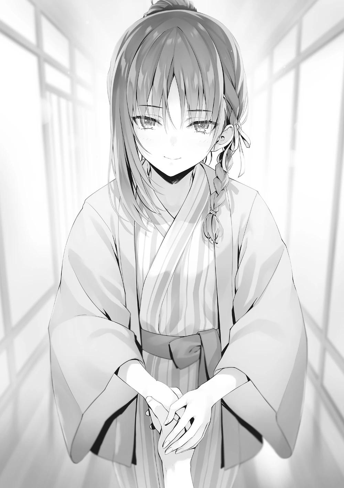
Decidí que era hora de dar media vuelta y volver a la tienda de recuerdos a esperar su regreso.
PARTE 7
En la sección de souvenirs, que aún no había cerrado, se exponían varios recuerdos de Hokkaido.
―A propósito de eso, Nanase dijo algo sobre patatas fritas recubiertas de chocolate.
Intenté averiguar qué eran exactamente, pero no pude encontrar ninguna, ya que el ryokan no las tenía.
Parece que tendré que buscarlas mientras visito los lugares designados para mañana o durante mi tiempo libre del último día del viaje.
Miraré en el celular a ver si hay alguna tienda que los tenga.
―Oops...
Encendí mi celular y lo revisé, e inmediatamente vi una gran cantidad de mensajes y registros de llamadas entrantes.
Por supuesto, eran de Kei.
[¿Dónde estás?]
[No te he visto ni ayer ni hoy.]
[¿Estás ocupado?]
[Te extraño.]
[¡Te extraño tanto!]
Abrí la aplicación y leí todos los mensajes que me enviaban cada pocos segundos.
Inmediatamente después, sonó el teléfono.
[¡Touwa!]
Sonó como el gruñido de un gato, que era una descripción acertada.
[¿Estás enfadado conmigo?]
―No, no estoy enfadado.
Ya veo, parecía que estaba muy, muy enfadada conmigo.
[¿Por qué no me prestas al menos un poco de atención?]
―Lo siento. Estamos en un viaje escolar, pero tengo muchas cosas que hacer.
[¡No sé si eso es algo bueno!]
―Ya confirmé con Kushida que estás haciendo un buen trabajo consiguiendo información sobre el undécimo grupo, así que me sentí aliviado.
[¿Hmmm? ¡¿Parece que te estás divirtiendo mucho con ella?! ¡Eres tan grosero!
¡Infiel!]
―Estamos en el mismo grupo. Además, ya sabes qué clase de persona es.
[No importa. ¡Y tiene las tetas grandes! No soy una... ¡Ah mou!]
―Bien, bien. Voy a hacer algo de tiempo ahora, así que quedemos en algún sitio.
[¿En serio? ¡Entonces vamos a divertirnos!]
Al estar muy hambrienta de atención, pronto volvió a sonar alegre.
―No creo que debamos hacer eso. Tengo a Ryuuen en mi habitación.
[Oh... ya veo.]
―¿Dónde estás ahora?
[Estoy en mi cuarto, pero creo que las tres chicas todavía están en el baño.
Estuve con ellas hace un rato, pero volví antes para llamarte].
Kei estaba muy acomplejada por las cicatrices de su cuerpo, pero parecía que lo había superado por completo.
―Voy a buscar la llave de mi habitación, así que vuelvo a ésta inmediatamente. Te llamaré después, así que espérame.
[¡Sí!]
Esperé menos de cinco minutos a Sudou en el rincón de los recuerdos. Cuando no hubo señales de su regreso, me entró curiosidad y decidí comprobar el pasillo que conduce al patio trasero.
Encontré a Sudou de pie solo en la misma posición que cuando confesó sus sentimientos.
Como no pude ver a Horikita, ella ya debía haberse ido.
―¿Sudou?
Como Kei también me estaba esperando, me sentí mal pero me acerqué a él desde ahí y lo llamé.
―¡Oh, mierda!
Era posible que tuviera cara de irritado a juzgar por su voz, pero...
―¡Sabía que no podía hacerlo...!
La cara de Sudou, cuando se dio la vuelta, tenía una expresión de frustración, pero también parecía radiante.
―No, lo siento. Estaba aturdido porque no podía olvidar la sensación de la mano de Suzune.
―Así que eso es lo que querías decir.
―¿Lo viste? Fue una derrota desastrosa.
―Bueno, si es así, deberías estar orgulloso de ti mismo.
Me mostraron una confesión asombrosa, hecha de una manera muy masculina, a todo pulmón.
―Aunque rechazara mi confesión, no iba a rendirme. Hasta pensé en mostrar una versión mejor de mí mismo el año que viene y volver a confesarme.
Pero eso no sirve de nada. Me di cuenta de que, como mínimo, no puedo llegar a ella.
Sudou parecía intuir algo que yo, que observaba desde la distancia, no podía.
―No es cuestión de rendirse o no rendirse. Todavía me gusta, pero siento que es como una flor que anhelo y que no puedo alcanzar.
Parecía no poder atar cabos, pero se rio un poco al decir eso.
―¿Qué vas a hacer con Onodera?
―¿Cómo voy a saberlo? No le habrás preguntado lo que piensa realmente,
¿verdad?
―Sí, lo hice.
―Bueno, lo que tenga que ser, será. Onodera es una buena chica, y compartimos los mismos intereses. No estoy lleno de rencor con respecto a Suzune, y siento que puedo pasar un buen rato con ella.
Que se convirtiera en amor o no era secundario, supongo.
―Ya te digo; voy a estudiar mucho en el futuro. Hasta ahora ha sido por otra persona, pero a partir de hoy voy a darlo todo por mí mismo. Mi objetivo inmediato es llegar al nivel de Hirata.
―De nuevo, ese es un objetivo bastante grande.
Si conseguía superar ese muro, por fin se enfrentaría a los mejores del curso, Horikita y Keisei.
Parece que fue capaz de centrarse en metas mayores en lugar de seguir desanimándose por el rechazo.
PARTE 8
Volví a la habitación de invitados a paso ligero y me encontré a Horikita fuera.
―¿Qué haces?
―Te estaba esperando.
―¿A mí?
Tenía un mal presentimiento, así que intenté fingir confusión, pero la expresión de Horikita era dura.
―Tú también eres malo, Ayanokouji-kun. Lo viste, ¿verdad?
―¿De qué estás hablando?
―Estabas antes en la sección de souvenirs, ¿verdad? Normalmente, pensaría que fue sólo una coincidencia que alguien estuviera cerca, pero en tu caso, traté de no pensarlo como tal.
Qué forma de pensar tan antinatural. Sin embargo, era cierto. Si alguna vez tomo medidas similares contra Horikita en el futuro, tendré que asegurarme de que no pueda encontrarme.
―Estás pensando en intentar evitar que te vean la próxima vez, ¿verdad?
―...Bien hecho.
Le aplaudí sinceramente y la elogié por su astuta lectura.
―Eso es lo que Sudou me pidió que hiciera. Me pidió que lo vigilara mientras se confesaba.
―Aunque así fuera, ¿no te parece una falta de consideración hacia la mujer -hacia mí-?
―No lo creo.
―No estás siendo justo, Sudou-kun. Tengo que restarte puntos por pedirle que observe.
Me quedé atónito, pero ella no parecía tan enfadada.
―¿Entonces? ¿Viniste hasta aquí para quejarte conmigo, un mero espectador?
―Sí.
De nuevo, lo dijo claramente y sin reservas.
―Sólo estoy bromeando un poco. La verdad es que necesito hablar contigo. Pero parece que necesitas entrar en la habitación.
―No es así, pero... Si no te importa, ¿podemos hacerlo mañana?
―¿Por qué?
―Estoy recibiendo mucha presión de otra persona. Está molesta porque no la he atendido en los últimos dos días.
―Ya veo, así que es Karuizawa-san, ¿verdad?
De todas formas ella iba a averiguarlo.
―Mañana por la noche entonces. Te perdonaré si prometes escucharme a esa hora.
―De acuerdo, lo prometo.
Respondí, ya que no había otra opción en este momento.
Dejé la llave a Kitou, que estaba en la habitación, y me dirigí al encuentro de Kei.
Aunque ya éramos reconocidos por muchos como pareja oficial, no podíamos ir a todas partes como Ike y Shinohara.
Decidimos reunirnos en una zona que albergaba varios baños privados.
Me regañó severamente nada más encontrarnos, pero la abracé poco después y conseguí que volviera a estar de buen humor. Luego pasamos juntos un rato de relajación.
DÍA 3 DEL VIAJE ESCOLAR
El autobús salió del ryokan a las 9 de la mañana y llegó a nuestro destino menos de 50 minutos después.
El autobús se detuvo cerca de la estación de Sapporo, el lugar donde empezaríamos el día. Allí se encontraba la Torre del Reloj de Sapporo, y había muchos puntos de interés para los turistas. Como de costumbre, nos dividieron en grupos, pero hubo una diferencia respecto a los días anteriores.
La escuela nos hizo una pequeña prueba. Dentro de un límite de tiempo (hasta las 17:00), el grupo debía visitar un total de seis puntos de una lista predeterminada de 15 destinos, sin importar la combinación. El grupo debía tomarse una foto conmemorativa al llegar al lugar designado para ello. Este proceso debía repetirse. Los grupos que dividieran premeditadamente a sus miembros para acumular puntos o los grupos con alumnos que actuaran de forma egoísta y no solidaria no podrían completar el recorrido.
La única condición para la descalificación era que un grupo visitara menos de seis puntos dentro del plazo establecido. En ese caso, se privaría a los alumnos de actividades libres el cuarto día de la excursión, y se celebraría una sesión de estudio en el ryokan hasta las 16:00 horas.
A cada punto se le asignó una puntuación, y el grupo que acumulara un total de 20 puntos o más en los seis lugares sería recompensado con 30.000 puntos privados. Sin embargo, se permitía al grupo decidir si optaba o no a la recompensa, ya que la puntuación no afectará a la descalificación.
Además, si la foto no era lo bastante clara para identificar a la persona, no sería válida. Otra cosa era si los alumnos aspiraban o no a una recompensa, pero si querían disfrutar al máximo del tiempo libre de mañana, debían esforzarse y trabajar en equipo para visitar las designaciones.
No había restricciones en cuanto al número de veces que los alumnos podían utilizar el transporte público, pero los viajes en taxi estaban prohibidos. También se exigía a los estudiantes que llevaran un registro de cómo visitaban los lugares.
Estoy seguro de que muchos de ellos estarían más contentos si dispusieran de tiempo libre para hacer lo que quisieran en este tercer día, pero no creo que sea mala idea recorrer Hokkaido en las condiciones que nos dio la escuela.
Si los alumnos sólo dispusieran de tiempo libre para hacer lo que quieran, el viaje escolar acabaría con un número limitado de lugares de interés y esquí.
Tengo muchas ganas de recorrer Hokkaido.
Cuando bajamos del autobús, nos entregaron un folleto. Era el folleto de la escuela, y contenía algunos de los lugares que debíamos visitar.
Los lugares que valían 1 punto eran la Torre del Reloj de Sapporo, la Torre de TV de Sapporo y el Museo de Arte Moderno de Hokkaido. El Parque de la Isla Nakanaka y el Santuario de Hokkaido valían 2. El Zoológico Enmaruyama de Sapporo, el Museo de Hokkaido y el Mercado Central Mayorista de Sapporo valían 3 puntos. El Parque Moerenuma y el Parque Shiroi Koibito recibieron 4
puntos. La Montaña Moerenuma Iwaizan obtuvo 5 puntos. El Acuario Sunpiaza obtuvo 6 puntos. Sadajiyouzanzankei Onsen (manantial termal) obtuvo 7 puntos.
Y el Lago Utonai, también conocido como Shikotsukotsu-ko, obtuvo 8 puntos.
Nótese que no terminaba al llegar al lugar.
En el caso del zoológico de Sapporo Maruyama, hay que entrar en él y tomarse una foto con un oso polar o en el pabellón de los osos polares del fondo para completar el recorrido por el lugar.
―No me sorprende. Es muy típico de esta escuela hacer esto... ―Kushida se bajó del autobús y dijo esto a nadie en particular.
―¿Qué quieres decir?
―Oye, lo siento, no me había fijado en ti para nada.
No sé cómo es posible, ya que yo estaba aquí, pero ella no me miraba mientras hablaba. Giró la cabeza y sonrió.
―Duele saber que si no lo hago bien, perderé un día entero en sesiones de estudio. Me pregunto si la razón por la que ayer nos dejaron un día entero de tiempo libre sin restricciones tendrá algo que ver con este recorrido.
―Puede ser.
Ahora la cuestión es qué elección haremos nosotros, el sexto grupo. El recorrido se nos explicó antes del viaje, pero nos acababan de decir en el autobús que sería como un examen con tiempo libre en juego, y que se nos recompensaría con puntos privados. En otras palabras, la política del grupo no estaba fijada en ese momento. Era inevitable que hubiera casos en los que los grupos que se desplazaran para obtener la recompensa de puntos privados no pudieran cumplir el límite de tiempo, y éste era un riesgo que había que correr.
Algunos grupos se quedaron donde estaban y discutieron el asunto, pero la mayoría empezó a caminar en la misma dirección.
―Después de todo, se ve que muchos de los grupos se dirigen a la Torre del Reloj de Sapporo, que está muy cerca.
Una de las estrategias era ir hacia el lago Utonai, de alta puntuación, pero era arriesgado.
―Sería más eficaz discutirlo mientras caminamos.
En cuanto a la ruta principal, como dijo Kushida, el primer camino seguro sería ir desde la estación de Sapporo hasta la torre del reloj, tomar fotos en el lugar designado, y luego bajar por el parque de la calle Oodori hasta la torre de TV.
Así se ahorraba tiempo y dinero, y se podían visitar dos lugares. Sin embargo, en ese momento, no estaba seguro de que fuera ideal para el proceso de aspirar a más de 20 puntos.
Más tarde, los ocho miembros de nuestro sexto grupo también terminaron de desembarcar.
―Acabo de hacer una búsqueda rápida en la aplicación de mapas, y al parecer, aunque pudiéramos usar un taxi, tardaríamos varias horas en visitar los seis puntos de mayor puntuación.
Aunque utilizáramos todo el transporte público, sería imposible visitar todos los puntos de alto valor en el tiempo disponible.
―¿Alguien de los presentes sabe algo de Hokkaido?
preguntó Watanabe a los miembros del sexto grupo, pero no hubo una buena respuesta.
Yo, al igual que los demás estudiantes, no sabía cómo viajar por Hokkaido ni los medios más eficientes para desplazarse, así que no podía deducir adónde era eficiente ir sin investigar un poco.
―Hmm. Aunque intentara dar una ruta en una aplicación de mapas, ni siquiera sabría dónde están las cosas, así que el orden resultaría un caos
―Amikura comenzó a teclear destinos al azar mientras se peleaba con la aplicación de mapas.
Como los puntos estaban dispersos al este, oeste, norte y sur de la estación, debería empezar por averiguar su ubicación. No había ninguna garantía de que los puntos fueran accesibles en transporte público, y no había ninguna garantía de que la escuela no hubiera incluido un lugar desagradable y difícil en el folleto.
―Aunque consigamos puntos privados, siguen siendo sólo 30.000. Ya que vamos a recorrer la zona, ¿por qué no nos olvidamos de la recompensa y nos limitamos a divertirnos? ―La sugerencia de Watanabe era una de las mejores opciones.
Si sólo fuéramos a visitar lugares para ganar 20 puntos a tiempo, nuestra diversión se reduciría a la mitad. No habría tiempo para relajarse y disfrutar del paisaje local.
―Así que estoy pensando que no tenemos que excedernos.
―Personalmente, creo que preferiría no ir a donde tenemos que ir.
Preferiría ir al zoológico o algo así.
Los alumnos que normalmente permanecían dentro de la escuela no tenían la oportunidad de ir al zoológico o al acuario. Es natural que piensen que no deben desaprovechar la oportunidad.
―Preguntemos a todos adónde quieren ir y primero recopilemos ideas.
Amikura propuso que empezáramos preguntando por lugares a los que ir, ignorando las puntuaciones. Seis de nosotros, incluido yo, acordamos fácilmente renunciar a la puntuación y recorrer sin prisas un número mínimo de lugares. Sin embargo, esto era algo que debía ser discutido y decidido por todo el grupo.
Quedaba la opinión de Kitou y Ryuuen, que hasta el momento no habían estado ni de acuerdo ni en desacuerdo.
―¿Qué opinas, Kitou?
preguntó Watanabe a Kitou, que había permanecido en silencio hasta ese momento.
―No tengo nada que objetar.
Watanabe y los demás se sintieron aliviados cuando recibieron una respuesta favorable a su pregunta.
Ahora eran siete los que estaban de acuerdo. El último, Ryuuen, no respondió.
―Eh, bueno...
Watanabe dudó en preguntar, así que decidí preguntar y confirmar la respuesta.
―Todos estamos de acuerdo. ¿Podemos tomar su silencio como aceptación?
Pero Ryuuen declaró que acumularía 800 millones de puntos. La respuesta era obvia.
―Voy a hacer puntos.
Una respuesta simple, en otras palabras, una dirección en desacuerdo con los siete de nosotros. Por supuesto, correspondía a cada uno decidir lo que pensaba de este recorrido por puntos.
Estoy seguro de que algunos grupos darán prioridad al recorrido en aras de los puntos privados. Sin embargo, cuando las opiniones divergen de esta manera,
es inevitable que se produzcan más discusiones. Watanabe se asustó todavía más, así que decidí seguir escuchándolo.
―Vamos a preguntarle por qué, ¿de acuerdo?
―Por supuesto, es una cuestión de puntos privados. No creo que sean sólo 30.000.
Los puntos que recibe cada clase serían 60.000 para los dos juntos. Es sólo una pizca en la proporción de 800 millones, pero también es un paso firme hacia adelante.
―No hay razón para no recibir el dinero que está cayendo delante de ti.
Hay que callarse y seguir.
Aunque existía el riesgo de quedarse sin tiempo o de no sumar suficientes puntos debido a una mala organización, básicamente no había desventajas en este recorrido. Si sigues las directrices y completas los objetivos, la escuela te dará puntos privados. En otras palabras, sólo hay ventajas. Es cierto que no aprovechar lo que se puede es una pérdida. Por supuesto, no había forma de que Kitou guardara silencio sobre su actitud agresiva que ignoraba la voluntad de los otros siete estudiantes.
―¿Quieres que todos te obedezcamos para tu satisfacción?
―Por supuesto. ¿Hay algo malo en ello?
―Eso es un flagrante desprecio a la democracia. En este caso, creo que la cuestión debería decidirse por mayoría.
―No me hagas reír. ¿Desde cuándo este grupo es una democracia?
―Para empezar, no entiendo tu obsesión con los centavos. Me pareces estúpido.
―¿Entonces en qué te convierte eso?
Ya no contaba cuántas veces habían discutido. Nadie fue capaz de interrumpir el enfrentamiento entre Ryuuen y Kitou.
―Creo que rechazaste el acuerdo del grupo y hablaste solo para agitar las cosas.
―En realidad, puede que tengas razón. Es divertido verte enojado.
Si dejaba que los dos siguieran hablando, pronto iríamos en una dirección peligrosa.
―También necesitas algunos puntos privados para usar las instalaciones públicas. Si descontamos eso, no llegaremos a los 30.000 puntos privados por persona, así que incluso así...
No sabía la cantidad exacta en este momento, pero algún gasto sería necesario.
―Aun así. Aunque la recompensa baje a casi 20.000, no voy a renunciar a ella.
Me di cuenta de que éramos el único grupo que quedaba alrededor del autobús.
―Estamos perdiendo un tiempo valioso mientras hacemos esto. Tú lo sabes, ¿verdad, Kitou?
Intentaba hacerlo ceder. Tal era la fuerte presión de Ryuuen. Por supuesto, no había forma de que Kitou se quedara callado con ese comentario, que sólo parecía echar más leña al fuego.
―Me niego. Si insistes en conseguir puntos privados e ignorar las opiniones de los demás, no te ayudaré a visitar este lugar. En otras palabras, no sólo no conseguirás tus puntos privados, sino que te verás privado de tu tiempo libre mañana.
Al parecer, Kitou estaba decidido a resistirse por completo y declaró que no aceptaría los deseos de Ryuuen. Así que protestó enérgicamente una vez más.
―Kukuku, tú eres el que estará en minoría, Kitou. De todos modos, no tendrán más remedio que seguirme después de un tiempo.
¿Vamos a empezar un concurso de paciencia a partir de ahora que no nos hará ningún bien? La mejor manera de mover a Ryuuen, que no iba a ceder, era
orientar a Kitou en el sentido de reunir puntos privados. 30.000 no era un mal negocio para los seis, y no era completamente desventajoso.
Además, si mañana les garantizaban tiempo libre, podrían compensar las visitas turísticas que no pudieron hacer hoy.
Si las seis personas, excluyendo a Kitou, se inclinaban por Ryuuen, esa sería la opinión mayoritaria.
―Aunque todos nos veamos obligados a seguirte, yo no te seguiré.
Si eso sucede, convertiría a Kitou en el villano con 7 a 1.
―Si vas a destruir al grupo tú solo, ¿quizás valga la pena renunciar al dinero?
―Eso espero.
Kitou no mostró ninguna señal de acobardarse, como si estuviera acostumbrado a ser el villano.
―¡Oh, cálmate, Kitou!
Watanabe, que se había mostrado tímido hasta ese momento, no tuvo más remedio que intervenir.
―Entonces vas a tener que convencer a Ryuuen, ¿no?
―Eh... ―Watanabe se preguntó qué hacer.
―Sí, así es. Oye, Nishino, como compañero de clase, haz entrar en razón a Ryuuen, ¿quieres?
―Es fácil hacerlo pasar un mal rato, pero no hay forma de que cambie de opinión. No haré nada innecesario.
Supongo que Nishino, que lo conocía desde hacía mucho tiempo, ya podía predecir el resultado.
Estaba de humor para ceder desde el principio, diciendo que no había nada que pudiera hacer ahora que había llegado a esto.
―Oye, ¿podemos hablar? ¿Qué crees que deberíamos hacer con esta situación? ―Kushida tiró de mi brazo y, tras alejarse un poco, me hizo una pregunta.
―Pensé que sería más seguro seguir a Ryuuen-kun, pero Kitou-kun también acabó así. Eso sí, Ryuuen-kun no se moverá si me voy con Kitou-kun.
Son gente realmente egoísta.
Ambos fueron insultados, como si sus aspectos negativos estuvieran a la vista.
―No es como si no hubiera una solución.
―¿Ah, sí?
―Es que preferiría no recomendarla si pudiera.
―¿Puedes decírmelo en pocas palabras?
―Lo que Ryuuen quiere son puntos privados, sin necesidad de hacer recorridos turísticos. En cambio, lo que queremos los siete es ir a donde nos apetezca y disfrutar de los lugares de interés". La opinión de Kitou también está de este lado.
―Sí. Están en desacuerdo entre ellos, ¿no?
―Entonces los siete deberíamos cortar por lo sano. Si nosotros, excluyendo a Kitou, juntamos 5,000 puntos privados por persona y los donamos a Ryuuen, no habrá quejas, ¿cierto?
―Oh, ya veo, esa es una forma de resolver este problema...
Pero Ryuuen podría no estar satisfecho con que sólo él recibiera 30.000 puntos privados. Continué hablando con Kushida sobre los riesgos. Cuando este grupo reciba su recompensa, cada clase recibirá 60,000 puntos privados. Eso significa que, como mínimo, cobraría 30.000 de Nishino, que también pertenecía a la misma clase. Aunque Nishino se negara, Ryuuen exigiría el dinero para llenarse los bolsillos.
En ese caso, los cinco tendríamos que pagar 60.000 puntos privados, o 12.000
puntos privados por persona. Habría cierta resistencia a pagar tanto por hacer turismo.
―No es barato... ¿Verdad?
Lo que se suponía que iba a ser un tour que sólo podía resultar en una ganancia en un principio resultaría ser una pérdida. Era cuestionable si seríamos capaces de disfrutar honestamente de las visitas turísticas después.
También sentaría un mal precedente que la mayoría del grupo cediera a la postura agresiva de la minoría.
―Y lo peor de todo, tenemos que considerar el riesgo de que nos pidan que les demos más.
―¿Eh? Ese tipo de estupideces... Esto es muy molesto.
―A eso me refiero.
―Entiendo lo que quieres decir, Ayanokouji-kun. Por eso no te lo recomiendo.
―Creo que es mejor llegar a una decisión sin nada por el estilo.
―No es fácil tener una discusión pacífica, o mejor dicho, es imposible.
Desde luego, difícilmente Ryuuen o Kitou cederían fácilmente, y era inevitable que fueran bloqueados.
―Así es. ¿Ya es básicamente un concurso de resistencia? Tendremos que esforzarnos mucho para conseguir más de 20 puntos, ¿verdad? Va a ser difícil si perdemos 30 minutos o una hora aquí.
Así que la estrategia era dejarlos agotar ese tiempo discutiendo. Pero esa opción también abarcaba una serie de problemas.
―Si Ryuuen decide que no tenemos tiempo suficiente, no hay garantía de que después disfrute maduramente visitando los lugares y haciendo turismo. Al final será un fracaso. Estoy bastante seguro de que mañana se acabará el tiempo libre.
―Oh, ya veo.
No había muchos pasos que pudiéramos dar aquí. No nos quedaba más remedio que arriesgarnos un poco e intentar encajarlo todo.
―Yo tampoco quiero desperdiciar este valioso día. Vamos a tener que soportar el dolor para poner las cosas en marcha.
―¿Qué vas a hacer al respecto?
Llegué a una conclusión, pero antes me di cuenta de algo importante. La proximidad entre Kushida y yo se mantuvo durante demasiado tiempo, aunque fuera para evitar que nos oyeran los que nos rodeaban. El hecho de que sólo Kushida y yo mantuviéramos una conversación privada se puso claramente de manifiesto.
―Estás saliendo con Karuizawa, ¿verdad?
dijo Watanabe fulminándome con la mirada. Amikura también me miró divertida mientras regresábamos.
―Era una reunión estratégica. ¿Verdad, Kushida?
―Por supuesto. Acabo de hablar con Ayanokouji-kun.
Diciendo eso, Kushida se apartó rápidamente de mí. Era un gesto sobreactuado, como si se alejara descaradamente de alguien que no le gustaba, y no fue muy agradable.
Pero pareció satisfacer a Watanabe y a los demás, así que supongo que fue la decisión correcta. Recuperé la compostura y me acerqué a Kitou, que seguía fulminando con la mirada a Ryuuen, y a éste, que miraba el celular sin inmutarse.
Luego les di la espalda y me enfrenté a los otros cinco.
―Tengo algo que quiero confirmar con todos ustedes de nuevo, a excepción de Ryuuen y Kitou. Quiero volver a contar las opiniones en este punto.
¿Damos prioridad a las visitas turísticas o a los puntos privados? Si alguien cambió de opinión sobre esto último, que levante la mano, por favor. No tienen que preocuparse por el estado de ánimo en este momento, sólo indiquen sus intenciones.
Watanabe y los demás miraron a su alrededor para ver qué hacían los demás, pero ninguno quiso levantar la mano. Por su comportamiento, me di cuenta de que ninguno estaba mintiendo.
En otras palabras, nadie estaba de acuerdo con la política de priorizar el turismo dirigido a obtener la puntuación requerida.
―¿Y qué? No voy a cambiar mi opinión digas lo que digas, Ayanokouji.
Sabía que le daba igual tener aliados que lo apoyaran.
―Lo siento, pero necesito hablar con ustedes cinco ahora mismo.
Rápidamente desvié mi mirada de Ryuuen y me di la vuelta para seguir hablando con los otros cinco.
―Ya que estamos en esta situación, llegué a la conclusión de que los ocho nunca podremos unirnos, y que es una pérdida de tiempo hablar de ello.
―¿Entonces qué vas a hacer?
Nishino, como quien quiere hacer turismo, no intentó ocultar su descontento.
―No tiene por qué ser así. Las opiniones individuales deben respetarse en la medida de lo posible, pero como grupo solo rige una octava parte del derecho a decidir. La oposición de Kitou a Ryuuen es sólo una octava parte del total.
Aunque no cuenten con mi opinión, los cinco que estamos aquí tenemos cinco octavos del derecho a decidir, que es más de la mitad.
―Ya lo sé, pero por eso tenemos problemas, ¿no? Ya sea un octavo o cinco octavos, no podemos avanzar a menos que todos tomemos la misma decisión.
―Sí, es cierto. Sin embargo, es innegable que somos nosotros cinco los que tenemos derecho a decidir qué hacer con esta situación. Si no estás de acuerdo con los métodos e ideas de Ryuuen, no tienes por qué seguirlos. En otras palabras, podemos hacer que renuncie a la opción de conseguir puntos privados. Podemos abandonar la idea de visitar los sitios ahora, y cada uno de nosotros puede hacer su propia visita turística libre.
―¿Quieres decir que vamos a abandonar el tiempo libre de mañana?
―Exacto. Aunque sigamos el plan de Ryuuen, no hay garantía de que podamos ir a los lugares que el grupo quiere ir durante el tiempo libre de mañana. Si insistimos en no salir de la posada, en ese momento, a este grupo ni siquiera se le permitirá salir. Por otro lado, hoy nos prometieron libertad.
―Pero sólo hasta las 5 de la tarde, ¿verdad?
―Eso no es cierto. Las 5 de la tarde es para el grupo que va a recorrer los lugares y planificar su tiempo libre para mañana. Nosotros tenemos derecho a hacer lo que queramos hasta el toque de queda, que es cuando tenemos que volver a la posada. Y podemos hacer lo que queramos como individuos. Hasta podemos unirnos a un grupo en el que estén nuestros buenos amigos. La escuela no puede culparnos por eso.
Abandonar el cuarto día y convertir el tercero en un día de actividad completamente libre que nadie pueda restringir.
―Esta es la autoridad absoluta que solo nosotros cinco tenemos. No depende de Ryuuen o Kitou decidir qué hacer, así que quiero que todos consideren esta propuesta.
―Estoy de acuerdo ―Kushida miró a los demás a los ojos sin conversaciones innecesarias y se convenció de que sus opiniones estaban unidas como una sola.
―Ryuuen-kun, seguimos sin intentar ganar puntos privados. Queremos discutir todos juntos adónde queremos ir hoy y pasar un día divertido. Si no quieres ir con nosotros, tendremos que tomar caminos separados de aquí en adelante. Lo que pase después de eso es como Ayanokouji-kun dijo. Tal vez mañana nos llevemos todos bien y tengamos una sesión de estudio durante todo un día.
Nishino rió ante estas palabras, y Amikura, Watanabe y Yamamura asintieron con la cabeza, como si estuvieran listos para el día que se avecinaba.
En respuesta, los labios de Kitou se torcieron en las comisuras, pero sólo ligeramente.
―Es una buena propuesta. La aceptaré.
Kitou, que hasta ese momento se había opuesto a Ryuuen sólo por espíritu rebelde, ahora se puso del lado de nosotros cinco. Con todos habiendo llegado a una conclusión, la pelota pasaría efectivamente a Ryuuen por primera vez.
Él podría seguir la opinión de Kushida y renunciar a los puntos privados, o rebelarse e ignorar el plan. De cualquier manera, no conseguiría los puntos privados que quería. Por el contrario, mañana recibiría una sesión de estudio como premio adicional.
―Has ido demasiado lejos, Ayanokouji ―Expresó su descontento con palabras, pero no parecía estar realmente insatisfecho.
Para los que lo rodeaban, sin embargo, debía parecer que estaba aparentando.
―No vengo hasta un destino turístico para estudiar. Te escucharé.
Me pregunté hasta dónde llegaría la línea, pero Ryuuen se echó atrás. Si hubiera podido ganar puntos privados separando al grupo, lo habría hecho sin dudarlo. Sin embargo, resultó que no había ganancia, así que evitó problemas.
Después de eso, nosotros, el sexto grupo, seguimos las instrucciones de la escuela y fuimos de excursión, visitando los lugares del centro de la ciudad y el zoológico que queríamos visitar.
Como resultado, obtuvimos menos de 20 puntos, pero fue una experiencia significativa y satisfactoria.
PARTE 1
Era la hora de cenar del tercer día. Los dos días anteriores tuvimos menú japonés y cocina kaiseki. Sin embargo, desde esta noche hasta el desayuno de pasado mañana, cuando regresemos a la escuela, el ryokan ofrecerá un bufé libre. Era la primera vez en mi vida que comía todo lo que quisiera.
Al igual que ayer, no había ninguna actividad de grupo en la comida, y los estudiantes eran libres de comer en cualquier mesa disponible. Muchos
estudiantes ya estaban paseando con sus bandejas. Kei también estaba hoy con muchas chicas, y podía oírlas reír de vez en cuando aunque estuviera lejos.
Por fin tenía tiempo para comer a solas y sin interrupciones, observé a los alumnos a mi alrededor y aprendí el procedimiento.
Al parecer, el proceso consiste en agarrar una bandeja de una estantería, combinar libremente los platos en la bandeja según su finalidad y llevar los platos de uno en uno a lo largo de una ruta predeterminada. Primero se colocó una ensaladera con lechuga, tomates, cebollas, pepinillos y otras cosas por el estilo.
Por lo visto, se podía elegir entre cinco aderezos diferentes, así que elegí el de cebolla.
―Interesante.
A diferencia de una comida en la que te sirven algo predeterminado, tenías un fuerte sentido de la individualidad cuando hacías tus propias elecciones detalladas.
Me encontré gravitando hacia platos que enfatizaban el equilibrio nutricional. Por otra parte, los estudiantes en el restaurante eran muy variados: algunos tomaban platos que encajaban con los estudiantes con los que comían, y otros preparaban pequeñas cantidades de distintos tipos de comida a la vez.
Después, para los platos delicados, los alumnos empezaron a reunirse en fila detrás de mí, uno tras otro. Pensé que sólo habría unos pocos estudiantes, ya que era un poco pronto para cenar, pero fue todo lo contrario.
Daba la impresión de que había más estudiantes esperando a que abriera el restaurante. Aunque la comida era principalmente japonesa, también había filetes, shumai, sopa de maíz y otros platos.
―Hola, Ayanokouji. ¿Tienes pensado comer solo?
Mientras trataba de encontrar un asiento después de llenar mi bandeja, se me acercó un Ishizaki con las manos vacías.
―Ese es el plan.
―Pues ven a comer conmigo. Yo también se lo pedí antes a Nishino, porque estaba sola. Y tú debes sentirte solitario comiendo solo, ¿verdad?
―Bueno... supongo.
Ya que no había ninguna razón en particular para negarme, en este caso era mejor aceptar la buena voluntad de Ishizaki.
Seguí a Ishizaki mientras me llevaba a mi asiento, Nishino levantó ligeramente la mano en señal de saludo. Albert también estaba allí, y supuse que nuestras miradas se cruzaron a través de sus gafas de sol. Coloqué mi bandeja junto a otra en la que había una gran cantidad de comida, que supuse que pertenecía a Ishizaki.
―Bueno, todavía tengo que traer algo más de comida. Adelante, come primero.
Tenía las manos vacías cuando me llamó, quizá porque quería más comida.
Ishizaki canturreó mientras volvía al bufé.
―Escuché que también te invitó el entrometido de Ishizaki.
―Quise rechazarlo, pero insistió.
―Es el tipo de hombre que no puede dejar en paz a sus amigos, ¿verdad?
―No lo sé. Ha cambiado mucho desde que empezó la escuela.
Era cierto que estos días emitía un aura mucho más brillante, un cambio definitivo con respecto a cuando entré por primera vez en la escuela. Sin embargo, para ser honesto, como teníamos muy poco contacto, no tenía una impresión duradera de él.
―Al principio, parecía no gustarle Ryuuen, y era un poco rebelde.
Él no lo entendía entonces porque era reprimido, pero quizás éste era el Ishizaki original. Aquel cuya impresión permanecía algo igual podría ser Albert, que comía en silencio. Utilizaba con destreza los palillos con sus grandes manos.
―¡Eh! ¡Traje un montón de cangrejo! Me voy a dar un atracón de cangrejo.
Ishizaki volvió y puso en la bandeja una fuente con un gran montón de cangrejos.
Las patas de cangrejo cayeron de la bandeja al colocarla sobre la mesa.
―Eso es muchísima comida.
―Si hay algo que conozco de Hokkaido son los cangrejos. Iba detrás de todos ellos, así que me apresuré a conseguirlos.
―Qué vulgar eres.
De hecho, entre el colorido menú, muchos estudiantes se reunieron alrededor de los cangrejos. Yo no quería ser parte de la multitud, así que me di por vencido en la primera ronda.
―¿Qué es vulgar? ¡Esto es un Vikingo! ¡Pueden llevarse todo lo que quieran! ―dijo Ishizaki, argumentando que nos lo perderíamos si no tomábamos ninguno.
―En primer lugar, ese 'vikingo' es de lo más vulgar que hay, así que ¿por qué no dejas de decirlo?
―¿Qué? ¿Qué otra cosa se puede llamar a un buffet?
―Buffet... Quizá podrías llamarlo... ¿Un buffet?
―¿Buffet? No, eso es patético, ¿no?
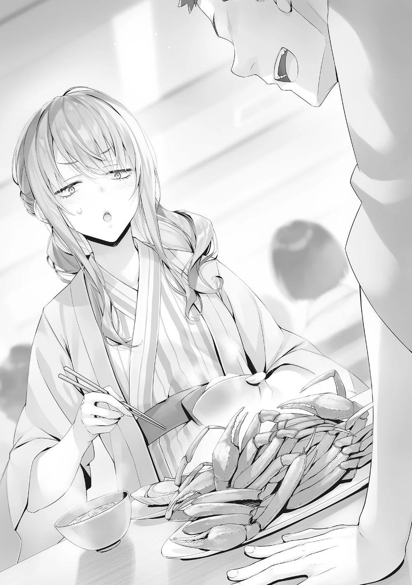
Nishino parecía especialmente preocupada por el plato lleno de cangrejos.
―Los detalles no importan. Estaba deseando que llegara el buffet.
―¿Por qué no tienes en cuenta a los demás estudiantes? El cangrejo es uno de los platos estrella.
―¿Qué? Si haces eso, otros lo tomarán. Además, es todo lo que puedas comer, así que estoy seguro de que tienen suficiente.
Bueno, era un punto justo.
Ishizaki se dio la vuelta y señaló hacia donde el cocinero se afanaba en rellenar los cangrejos hervidos. Lo peor de todo es que si él podía comérselo todo, ella no tenía derecho a impedírselo.
―Agh, da igual.
Nishino apartó la mirada de Ishizaki y tomó de su cuenco de arroz al vapor y se lo llevó a la boca con una cuchara.
Albert, que estaba comiendo tranquilamente a su lado, comió una variedad de alimentos. Había berenjenas remojadas, espinacas con pasta de sésamo, sashimi variado, sopa de miso y arroz. Se mirara por donde se mirara, todo era comida japonesa.
―Así que te gusta la comida japonesa.
Albert alineó cuidadosamente sus palillos, los dejó en la mesa y, en silencio, hizo un gesto con el pulgar hacia arriba. Luego volvió rápidamente a su comida.
Comió con mucho cuidado, más que Ishizaki, que comía a grandes bocados.
―Ah, claro, Ayanokouji, ¿no estás en el mismo grupo que Ryuuen-san?
―Sí. No estoy haciendo nada especial. Gracias al buen apoyo de los otros miembros del grupo, estamos razonablemente bien organizados.
―Suenas como si no supieras nada del alboroto en la estación de esquí.
Como una de las partes implicadas, recordó Nishino con cara de hartazgo.
―Oí que te metiste en un lío con unos chicos de otra escuela. Maldita sea,
¡ojalá hubiera estado allí!.
―Si hubieras estado allí, habría sido todavía peor. No sé por qué los hombres se pelean tan rápido.
Dicho esto, Nishino también tenía un aspecto bastante heroico.
Contestó sin miedo interponiéndose entre Yamamura y los chicos, como si fuera un escudo para ella.
―Tú también eres una mujer con temperamento apasionado, ¿verdad?
―Ishizaki se rio mientras masticaba un cangrejo.
―Qué molesto eres. No dejes que vuelen los restos de comida. Son tan sucios.
―No estarás molestando a Ryuuen-san, ¿verdad?
―Puedes ser tan paranoico como quieras, pero ¿por qué debería obedecerlo yo también?
Ella e Ishizaki parecían llevarse bien a pesar de su tono pendenciero. Era una compañera que sabía lo que hacía. También era bondadosa, teniendo en cuenta que mostraba cierta preocupación por Yamamura.
―Siempre me he preguntado, ¿no le tiene miedo Nishino a Ryuuen-san?
―Bueno, cuando está serio, sí parece amenazador. El idiota de mi hermano también era un delincuente, así que tal vez haya creado una tolerancia.
¿Así que ella tenía un tipo similar de persona en su familia? Eso explicaría por qué fue tan contundente en sus réplicas durante la pelea.
―Es tan obvio que si no lo haces bien mientras eres estudiante, lo vas a pasar mal. Mi hermano era un estúpido que se dedicaba a coquetear, abandonó la preparatoria, no pudo encontrar un buen trabajo y la pasó bastante mal
―Siguió suspirando pesadamente, como si no quisiera que se lo recordaran.
―¿Qué fue de él?
―Una constructora local lo contrató, y está trabajando duro todos los días en su obra. Aunque le pagan poco.
Debido a que fue testigo de una realidad similar de forma cercana y personal, sólo podía suspirar cuando pensaba en el futuro de Ryuuen e Ishizaki.
Lo pasarían mal más adelante por hacer lo que les daba la gana ahora. El sentido común se aplicaba independientemente de si alguien era un delincuente o no. Excepto en las industrias del entretenimiento y la creación, donde el talento es importante, y en la industria del deporte, donde la habilidad física es vital, definitivamente es mejor tener una buena formación académica.
Cuanto más te esfuerces en los estudios, más probabilidades tendrás de partir de una posición más favorable más adelante.
―Eres muy inteligente para alguien con ese aspecto.
―No necesito parecerlo. Además, sólo parezco inteligente desde tu punto de vista.
―¡Ja, ja! Probablemente tengas razón.
Desde el punto de vista de Ishizaki, casi todos los estudiantes son estudiantes de honor.
Cuando salí del local después de terminar mi comida, me fijé en Katsuragi.
Estaba comiendo solo en una mesa de la esquina, llevándose la comida a la boca en silencio. Sentí curiosidad por su situación, así que lo observé durante un rato, lo que me llevó a ver una escena extraña.
Oda, un alumno de la clase de Ryuuen, vio a Katsuragi y estaba a punto de ir a hablar con él, cuando Matoba y Baba, alumnos de la clase A, intervinieron para detenerlo. Después de que hablaran con él, Oda se dirigió a otro estudiante sin dejar de prestar atención a Katsuragi. Era como si trataran de impedir que Oda se pusiera en contacto con Katsuragi. No ocurrió sólo una vez, sino dos o tres.
Matoba era miembro del segundo grupo, el mismo que Katsuragi. No sería sorprendente que estuviera sentado a la mesa con Katsuragi, pero hacía
exactamente lo contrario. Por lo visto, algunos de los alumnos de clase A hacen cosas bastante insidiosas.
Podría haberlo dejado estar, pero decidí intentar contactar con Katsuragi.
Matoba, al sentir que me acercaba, se acercó rápidamente a mí.
―Estoy en medio de una pequeña actividad de grupo con Katsuragi.
¿Puedes dejarlo en paz?
Ya veo. Si les decía a los demás que era problema del segundo grupo, hasta los compañeros de Katsuragi tendrían que echarse atrás.
Probablemente por eso Oda comprendió inmediatamente y se marchó.
¿Era éste el consenso de la Clase A, o se trataba sólo del comportamiento egoísta de Matoba? Y detrás de escena, ¿había intenciones de derrotar a la clase de Ryuuen? De cualquier manera, para un tercero, este comportamiento sólo podía ser visto como intimidación insidiosa.
Un nuevo visitante apareció frente a Matoba, mientras me daba una advertencia.
Matoba giró su cuerpo para detenerlo de la misma manera, pero rápidamente desechó esa idea.
―¡Oh! ―Tragó saliva y se dio la vuelta, como si nunca hubiera interferido.
―Eh, Katsuragi. Estás comiendo con una cara muy lamentable, ¿verdad?
No era de extrañar que Matoba no pudiera hablarle. El visitante era Ryuuen.
Chasqueó un poco la lengua ante la inesperada aparición del líder de la Clase C
e inmediatamente salió corriendo.
Sin siquiera dedicarle una mirada a Matoba, él tomó asiento frente a Katsuragi.
―Estoy comiendo. ¿Qué quieres?
―Quería ver más de cerca tu miserable cara.
―No lo entiendo.
―'No lo entiendo'. Eso es lo que significa traicionar a tu clase. Es demasiado tarde para arrepentirse ahora, Katsuragi.
―No me arrepiento de nada. Estoy listo para morir con la clase actual.
Tal vez ocultaba sus verdaderos pensamientos, pero pude darme cuenta de que era firmemente consciente de su condición de miembro de la clase Ryuuen, aunque sus palabras fueran un poco distantes.
―Ya veo.
Ryuuen sacó una silla con un ruido sordo y se sentó frente a mí, deslizándome un vaso vacío.
―Tráeme un poco de agua, Ayanokouji.
―¿Yo?
―No me tienes que temer lo más mínimo cuando trato contigo en público.
Es mucho más fácil.
―Sé que has sido dominante con la gente desde que empezamos el grupo... Pero nunca has sido así conmigo.
―No te preocupes por eso, empezaré ahora.
No estoy seguro de cuánto podría averiguar sobre su situación.
Yo también tengo sed, así que es conveniente.
También vislumbré la preocupación de Ryuuen por Katsuragi, que estaba comiendo solo.
Así que por ahora, me conformaré con eso.
PARTE 2
Ryuuen, Katsuragi y yo salíamos del comedor. Vi a Kushida sentada tranquilamente en una silla esperando cerca de la entrada.
Kushida se levantó en cuanto nos vio a los tres y se acercó a nosotros sin dudarlo.
―Ryuuen-kun, ¿puedo hablar contigo?
Al parecer, había estado esperando aquí a que Ryuuen saliera. Era difícil de creer que las chicas se fueran después de terminar su comida antes que Kushida, que normalmente se habría ido con sus amigas.
Seguro que tenía algo de lo que quería hablar con Ryuuen y se estaba preparando para ello. Katsuragi, tal vez leyendo el ambiente, regresó rápidamente a su habitación solo.
―¿Eh? ¿Qué quieres?
―Es... Aquí, me gustaría ir a otro sitio, ¿te parece bien?
Kushida estaba en su modo público habitual debido al escenario, pero su comportamiento era un poco extraño.
―Lo siento, pero no eres de mi agrado.
―Jaja, no me refería a eso. Quiero decir que no te preocupes. No quiero que mueras, todavía.
Kushida, mientras era cautelosa con su entorno, dirigió su intención asesina hacia Ryuuen.
―Bueno, está bien, al menos te escucharé. Será mejor que me deshaga del buscapleitos, ¿no?
El buscapleitos era, por supuesto, yo. Los dos caminaron juntos hacia una zona desierta.
Si los dejaba solos, las cosas iban a empeorar.
Decidí seguirlos, asegurándome de que no se percataran de mi presencia. Sin embargo, presté mucha atención. Era la decisión correcta ser cauteloso, a juzgar por la apariencia de Ryuuen a lo largo del camino, mostrando señales de estar preocupado por lo que había detrás de él.
―¿Entonces? ¿De qué quieres hablar después de haberte tomado la molestia de quedarte a solas conmigo?
―Es sobre mi relación con Ryuuen-kun. Hasta cuando trabajábamos juntos, a veces decías cosas innecesarias. Por favor, ¿puedes dejar de hacer ese tipo de cosas?
Por lo que pude ver, Ryuuen amenazó, en dos ocasiones, con encender una mecha debajo de Kushida. No era de extrañar que ella no se lo tomara a bien.
―¿Qué quieres conmigo?
―¿Qué es lo que quiero? De momento no tengo planes de hacer nada contigo.
―¿Quieres decir que vas a hacer algo conmigo algún día?
Por el sonido de su voz, Kushida no parecía totalmente serena.
―Vendiste tu alma al diablo porque querías expulsar a Suzune, ¿verdad?
Por supuesto, eso conlleva riesgos. Ahora no puedes fingir que el pasado no ocurrió, ¿verdad?
―Sí, tienes razón. Creo que es verdad.
―Estoy seguro de que a la antigua tú no se le habría ocurrido llamarme aquí aunque yo te hubiera provocado, ¿verdad?
Ryuuen sintió que algo andaba mal. Él era probablemente ajeno a lo que pasó durante el Examen Especial Votación Unánime, pero debe haber sentido algo con su aguda percepción.
―¿Por casualidad, apareció alguien que conoce tu verdadera naturaleza?
―Puedes especular todo lo que quieras, pero te equivocas.
―Kukuku. En cualquier caso, eres una de las claves de la estrategia de mi clase. Siempre que tenga que enfrentarme a la clase de Suzune, usaré esta arma sin piedad.
Evitó a propósito mencionar a Kushida hasta el momento. Tenía la intención de dejarlo como una de las medidas para infligir daño eficazmente durante situaciones más importantes en el futuro. Esto era un obstáculo para Kushida, que decidió recuperarse y ayudar a la clase por su propio bien.
La conexión no podía eliminarse fácilmente y seguiría atormentándola.
―¿Qué vas a hacer? ¿Piensas arrodillarte y pedirme que mantenga la boca cerrada? ¿O vas a intentar expulsarme? Ambas cosas van a ser difíciles.
―Yo...
Ninguna de esas opciones eran cosas que iba a dejar elegir a Kushida.
Incluso si apareciera una tercera opción, resultaría en lo mismo.
―Lo siento, Ryuuen, pero voy a tener que pedirte que retrocedas en esto.
Decidí dejar de esconderme y exponerme.
―Maldición. Sabía que me estabas siguiendo.
―¿Ayanokouji-kun?
―Ya sabía que desconfiarías de mí.
―Bueno, está bien. ¿Entonces? ¿Qué quisiste decir cuando me pediste que me alejara de Kushida?
―Quise decir exactamente lo que dije. Sé que vas a contarle a todo el mundo lo de Kushida, pero te agradecería que no lo hicieras.
Ryuuen se rio y aplaudió divertido ante la advertencia.
―¡Kukuku! Qué, Ayanokouji, tú también estás en esto, ¿no? Y si tú lo dices, eso significa que ya no es cancerígena para tu clase como antes.
Ryuuen sonrió agradablemente, habiendo obtenido respuesta a su pregunta planteada hasta ese momento.
―Así es. Kushida está dando ahora un nuevo paso adelante como compañera de clase de Horikita. No voy a dejar que la destruyas con tus provocaciones.
―Lo siento, pero esto se está poniendo todavía más interesante. No voy a dejar que lo arruines con tus interferencias.
―Nadie creerá una palabra de lo que digas, Ryuuen-kun.
Kushida se enfrentó con él de forma inevitable, pero Ryuuen no se echó atrás.
―Eso no es verdad. No lo sabrás hasta que lo intentes.
Lo que se necesitaba ahora no era una disuasión verbal a medias, sino una completa restricción de movimientos.
―Si decido exponerte, nadie podrá hacer nada para detenerme.
Le dio un golpecito en el hombro a Kushida. Ella no pudo ocultar su ansiedad y humillación.
―Pero si lo haces, no podrás lograr tu objetivo de luchar contra Sakayanagi en los exámenes finales.
―¿Oh? No veo por qué ese sería el caso.
―Tendré que afrontarlo de una forma que tú no quieres ―dije.
Como en respuesta a mis palabras, la sonrisa de Ryuuen se desvaneció al instante.
Igual que cuando una vez secuestró intrépidamente a Kei, o incluso más.
―Ja. Qué demonios, hacía mucho tiempo que no me mostrabas esa cara.
Intervine entre Ryuuen y Kushida y empujé a Ryuuen todavía más.
―Aunque decidas guardar silencio aquí y ahora, no hay garantía de que no me desenmascares más tarde, ¿sabes?
Kushida se mostró fuerte, pero luego levantó ligeramente las manos.
―No hablemos de esto. No voy a usar la historia de Kikyo para atacar a tu clase. Si Ayanokouji no estuviera involucrado, podría haber sido un arma.
―¿Qué quieres decir...?
―No lo sabes, pero ayer me dijo que ya no iba a expulsarte. Por eso no podré atacarte usando eso.
―Es cierto, ya pensé en una contramedida para esa situación.
―No tiene sentido si te ataco con una estrategia que no funciona y salgo perdiendo por ello, ¿verdad? Según mi experiencia, un enfoque incompleto no funcionará si quiero derrotarte.
Estoy seguro de que desafiará a la clase de Horikita a un combate con una estrategia que ni siquiera se me ocurre.
―Ahora vuelvo a mi habitación. Adiós Kushida, disfruta el resto de tu vida escolar tanto como puedas.
La forma en que la llamó cambió de Kikyo a Kushida. Me interesaba ver lo que haría en el futuro.
Kushida y yo éramos los únicos que quedábamos en la zona, y reinaba el silencio.
―¿Por qué viniste a ayudarme? No hay ningún beneficio para ti, ¿verdad?
―Hay ventajas. Eres una persona indispensable para la clase. No creo que Ryuuen hubiera tenido intención de delatarte aunque yo no hubiera venido, pero no sabía cómo reaccionarías. Seguro que te preguntabas si había alguna forma de evitar que hablara.
―Eso es... Bueno...
―Ryuuen no es tu rival. Te vas a meter en un lío si te enfrentas a una pelea para la que no estás preparada y sales completamente derrotada. Es por eso que decidí aparecer.
―¿Quieres decir que podrías con ese tipo?
―Al menos en esta etapa, no considero a Ryuuen como un oponente fuerte.
―¿Cómo...?
―De todos modos, no tienes que cruzar más puentes peligrosos. Deberías cuidarte mejor ahora.
―Eso es difícil de creer. ¿De verdad me necesitas tanto en tu clase?
―Eso también.
―¿Eso también?
―Siento que puedo ser más cercano a Kushida, quien ahora puede hablar con más libertad.
Conocer los dos lados de la personalidad de Kushida también hacía más fácil adivinar lo que pensaba.
―Basta ya. ¿Cómo puede pensar así alguien que conoce mi verdadera naturaleza?
Seguro que es muy consciente de que tiene una personalidad que a la gente no le gustaría.
―La verdad no es así. Sinceramente, eres simpática.
―No sé hasta qué punto lo dices en serio. No se puede confiar en ti.
Normalmente Kushida se habría reído y contestado, pero su expresión era firme.
―Es cierto. Hay gente en este mundo que se siente más cómoda con tu verdadera naturaleza.
―No hay...
Kushida me miró, abrió mucho la boca y dejó de moverse.
Luego, de repente, empezó a caminar hacia la pared.
―¿Qué haces?
Inmediatamente después, extendió los brazos, con las palmas abiertas, y luego golpeó la pared con las manos tan fuerte como pudo.
―Está bien, está bien...
Murmuró algo y dejó de moverse. Mientras la observaba, Kushida se volteó hacia mí, habiendo recuperado la compostura.
―¡Me mareé un poco, pero estoy bien! Estoy bien.
Kushida alzó la voz de forma extraña. Yo estaba ligeramente perturbado por lo que acababa de ver.
―¿Segura que estás bien?
Aunque no parecía estar en un estado normal, Kushida mostró su típica apariencia.
―Sí. ¡Estoy bien!
―Oh, ya veo.
Leer las emociones de Kushida era realmente difícil.
―En cierto modo fui salvada por Ayanokouji-kun, ¿verdad? Gracias por...
―Siento que últimamente recibo más y más agradecimientos de tu parte.
―Tal vez sea así. Trataré de no involucrarme con Ryuuen-kun de ahora en adelante.
―Eso es bueno.
―Bueno, voy a volver a mi habitación. Te veré mañana.
―Nos vemos entonces.
Kushida caminó por el pasillo con una expresión que parecía haber vuelto completamente a la normalidad.
Por el camino, sin embargo, tropezó y volvió a caerse, y una de sus zapatillas salió volando.
―¿Estás bien?
―¡Estoy bien! Estoy bien. No te preocupes.
Me rechazó con la mano, diciéndome que no me acercara a ella. Luego se puso en pie y se calzó las zapatillas.
PARTE 3
Estaba esperando con la espalda contra la pared en el pasillo fuera de la habitación de invitados, listo para mi reunión con Horikita.
―Lo siento, llego un poco tarde.
Horikita apareció mientras expresaba una disculpa, pero no era un problema ya que no llegaba demasiado tarde.
―Ahora mismo voy...
―¿Vamos a tener una larga charla aquí?
Los estudiantes entraban y salían constantemente de varias salas cercanas.
Era uno de los lugares menos adecuados para hablar de cosas que no quieres que escuchen.
―Sin duda no es un buen lugar para hablar. Supongo que no se puede evitar. Vamos a la máquina expendedora a tomar algo. Estaría bien hablar mientras paseamos, ¿no?
Probablemente era lo más seguro. Acepté, ya que no tenía nada que objetar.
Estar de pie hablando llamaba mucho la atención, pero no tenía que preocuparme por eso si charlábamos mientras caminábamos.
―Enfrente de los baños hay una máquina expendedora que vende leche de frutas. Está deliciosa.
Era algo para beber después de bañarse, y me pareció que sabía muy bien.
―Gracias por el comentario infantil. Pero no creo que sea algo para beber en mitad de la noche.
¿Acaso se trata de algo específico de un momento del día? Tal vez fuera sólo el caso desde el punto de vista de una chica.
―Pero está más lejos de las máquinas expendedoras del baño grande, así que vayamos por ahí.
Los pasos de Horikita eran lentos, pero de todos modos quería dar prioridad a la conversación.
―Sobre el festival cultural del otro día. Seguro que no tuve ocasión de hablarte de ello. Me ha estado molestando durante mucho tiempo, pero no pude encontrar un buen momento hasta hoy.
―Supongo que estaba demasiado cansado en ese momento, y estabas exponiendo tu indefensa cara dormida al mundo.
―¿Quieres que te patee?
Su enérgica postura con la parte superior del cuerpo me empujó inmediatamente a izar la bandera blanca.
―Dame un respiro.
―No puedo creer que un chico me viera durmiendo. Acaba de manchar mi reputación.
―Por qué te importa tanto?
―Es para preocuparse... Pero eso no es importante ahora. Lo que quiero oír es respecto a ese día.
Encogiéndose de hombros ante su propia vergüenza con un gesto de la mano, Horikita adoptó una expresión severa.
―Los sucesos que ocurrieron aquel día en la sala del consejo estudiantil:
¿no estuviste involucrado en esa serie de acontecimientos?
El festival', 'ese día', 'la sala del consejo estudiantil', sólo había un acontecimiento al que podía estar refiriéndose.
―¿Lo arreglaste para que Yagami-kun fuera expulsado?
―¿Por qué piensas eso?
Me interesaba saber por qué llegó a esa conclusión.
―No sé si lo sabías, pero existía la posibilidad de que Yagami-kun estuviera intentando que te expulsaran. De hecho, sus palabras y acciones en la sala del consejo estudiantil fueron suficientes para corroborarlo.
Horikita, a su manera, tenía algunas piezas que yo desconocía. No me sorprendería que hubiera descubierto algunas cosas al juntarlas.
―No sabía lo de Yagami, pero supongo que no debería sorprenderme.
Sabías de primera mano que Housen estaba intentando que me expulsaran, ¿no?
―Veinte millones de puntos privados, ese era el premio.
―¿Y Yagami estaba en ello, y vigilaba y esperaba una oportunidad para ganarlos?
―Yo también pensé en eso. Pero había demasiados puntos peculiares.
Sobre todo, no se acercó a ti por una recompensa.
Horikita, que estaba presente en la escena, sabía más sobre esto.
―Siento curiosidad por las respuestas a cada una de mis preguntas. Pero eso no es lo que más quiero saber.
―¿Entonces qué quieres saber?
―Quién eres. No puedo pensar que seas un estudiante normal como los demás.
―Es una pregunta muy inquietante. ¿Qué clase de estudiante soy si no soy normal?
―No lo entiendo. No estoy hablando de si eres brillante o no. Es que no me imagino qué clase de persona eres en lo más mínimo. Simplemente no lo entiendo.
¿Qué clase de persona es Ayanokouji Kiyotaka? ¿Es eso lo que quieres saber?
―No hay nada especial de lo que hablar. No tengo nada que merezca la pena mencionar.
―Bueno, si te lo pregunto, ¿responderás a mis preguntas, de una en una?
¿De dónde eres? ¿En qué escuelas primaria y secundaria te graduaste?
¿Alguna vez participaste en concursos u otros eventos? ¿Has estudiado tú solo o has recibido clases particulares o privadas?
Seguro que la gente no preguntaría tantos detalles ni en una cita a ciegas.
―Entiendo lo que quieres decir, pero no creo que esté preparado para abordar tantas preguntas molestas.
Horikita apartó la mirada, con los labios fruncidos mostrando descaradamente su frustración.
―Revelaré cierta información.
―¿Qué tipo de información?
―Por ejemplo, que estuve implicado en el caso Yagami que tanto te interesa.
―No estás bromeando, ¿verdad? ¿Porque Yagami-kun estaba intentando que te expulsaran de la escuela?
―No sabía que era Yagami, para ser precisos. Sería más correcto decir que tendí una trampa a un alumno que planeaba expulsarme, y Yagami cayó en ella. Fui yo quien lo preparó todo. Lo tenía todo preparado para que no pudieran poner excusas superficiales.
Hasta ahora, no habría encontrado ningún sentido en decirle esto a Horikita.
Pero mostrándole indirectamente qué clase de persona soy, podría darle información.
Cuando nos volvamos a ver, tendré la oportunidad de hacer uso de esto.
―Por cierto, no hay conexión entre el presidente del consejo estudiantil y Ryuuen. Me acerqué a ellos por separado.
―Creo que sé lo que es... Eso me hizo sentir muy incómoda en su momento.
Subimos las escaleras hasta el segundo piso, donde se encontraban los grandes baños, llegando después a un área de descanso con máquinas expendedoras.
Había dos profesoras monopolizando los dos sillones de masaje.
Se entregaron al masaje con expresiones relajadas y no repararon en nosotros.
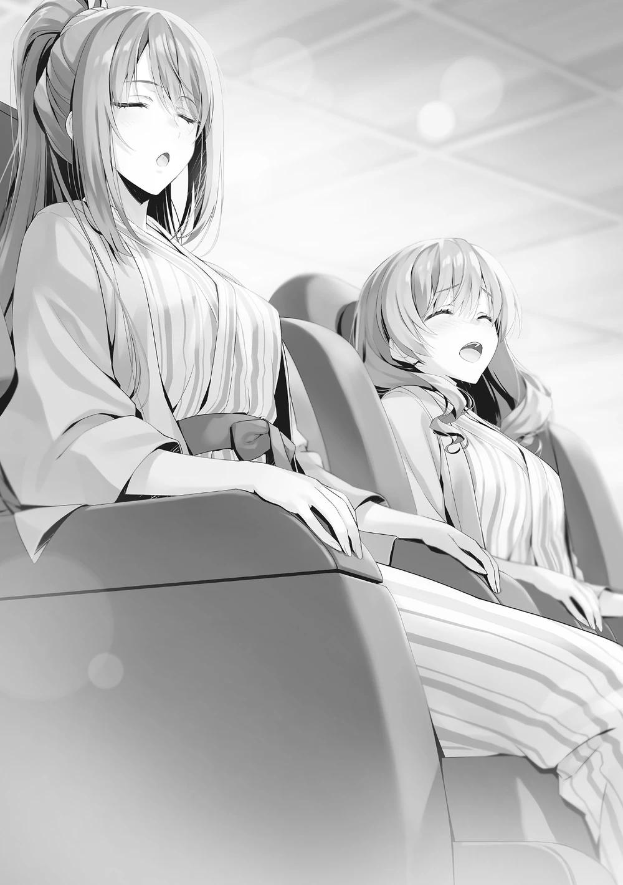
Nos miraron a los ojos. Podría haberlas ignorado, pero Horikita prefirió llamarlas.
―Se ven como en casa.
―¿Eh? Ah, es Horikita-san, ¿no es así~?
Hoshinomiya-sensei respondió, levantando sólo su muñeca en un movimiento.
―¿No es todavía antes de la hora de acostarse de los estudiantes? ¿No están las profesoras de guardia?
―Lástima~ Esta noche tenemos como medio día libre~ ¿Verdad, Sae-chan?
―Es como ella dice.
Chabashira-sensei se entregó al traqueteo del sillón de masajes y cerró los ojos, reconfortada.
―¿Tan bien se siente?
Siempre me había interesado utilizarlo, pero como estaba junto al baño principal, no podía debido a las miradas de los alumnos que entraban y salían con frecuencia.
―A medida que te haces mayor y maduras, los masajes se vuelven indispensables. Hay muchas penurias que los jóvenes no entenderían.
Se dice que junto con el declive físico viene la necesidad de equipos para compensarlo.
―Especialmente en el caso de Sae-chan, sus hombros están muy rígidos.
―No hace falta que digas algo innecesario como eso.
Por un momento, las profesoras intercambiaron miradas agudas.
―Por cierto, Horikita-san, te has convertido completamente en toda una líder. ¿Todavía estás a gusto en la clase B? Ah, ¿cómo puede un antiguo profesor de la clase B hacerte semejante pregunta?
―No está bien. A lo que aspiro es a la Clase A. Esto es meramente un punto de control.
―Ya veo.
Dejé la conversación a un lado y agarré el control remoto conectado a la máquina de masajes de Chabashira-sensei.
Aparentemente, había cinco niveles de intensidad. Naturalmente, cuanto más fuerte era la intensidad, mejor era el efecto. De algún modo, tenía curiosidad por saber cómo se sentiría el quinto nivel de intensidad, así que probé a ajustarlo.
―¡Nn, hya, nn, nn!
La máquina empezó a emitir un fuerte sonido.
Pensé que en realidad se trataba de un aumento del 40% en la funcionalidad, pero podría ser más que eso.
―¡Ah, Ayanokouji, qué estás haciendo, nnnn! No... ¡vuelve a bajarlo!
―Ella alcanzó el control remoto, visiblemente presa del pánico.
El control remoto cayó de mi mano cuando ella tiró a la fuerza del cable.
―¡Ugh! Hya, ha... ¡Haz que pare, rápido!
Levanté el control remoto y bajé la intensidad del nivel 5 al nivel 3.
―Ja, ja... Ja, ja... ¡¿Qué demonios estabas haciendo?!
―Tenía un poco de curiosidad. Pensé que cuanto más fuerte, mejor sería.
―¡Claro que no! ¡Hay una fuerza que conviene a cada persona!
Me regañó enfadada, con la cara roja y una expresión diabólica que nunca le había visto. Al parecer, la estimulación era mucho mayor de lo que ella esperaba.
―¿A qué estás jugando?
Horikita también me amonestó por el ruidoso incidente.
―Siento interrumpirlas durante su descanso. Vamos, Ayanokouji-kun.
―¿Van a bañarse ahora? No pueden entrar juntos.
Horikita intentó darse la vuelta, ignorando el comentario de Hoshinomiya-sensei sobre algo estúpido.
―Espera, Horikita-san.
Hoshinomiya-sensei, que había estado bromeando hasta ahora, cambió a una expresión seria.
―De hecho, creo que la clase de Horikita-san está haciendo progresos notables; la clase B es sólo un punto de parada, y hay que aspirar a la clase A.
Es obvio, pero creo que eso es maravilloso y muy admirable también.
Sus palabras sonaban a elogio, pero tenían otras implicaciones.
―Chie, no digas nada innecesario.
―No importa. Sólo intento decir lo que pienso.
―No sé lo que quiere decir, pero no es libre de decir lo que piensa.
―Por favor, dígalo.
Instó Horikita, como si sintiera curiosidad por las palabras anteriores de Hoshinomiya-sensei.
―Entonces hablaré libremente. Como profesora titular de una clase, siempre he pensado que los profesores de la clase A a la clase D también compiten entre sí. Si tuviera que usar una analogía, se podría pensar como si los profesores estuvieran jugando Daifugō entre ellos.
―¿Daifugō...?
―Conoces las reglas, ¿verdad?
―Sí, bueno...
―Juegas con una mano de cartas que te han repartido, y luchas durante tres años para determinar quién queda del primero al cuarto. Las cartas están numeradas del 1 al 13, y los jugadores se enfrentan entre ellos. Dejando a un lado las reglas locales y las reglas especiales, básicamente, las cartas con
números más grandes son más fuertes y las cartas con números más pequeños son más débiles, ¿verdad? Si un estudiante con sólo 3s choca con un estudiante con 6s, por supuesto que gana el estudiante con 6s. En la clase A de Mashima, las cartas de su mano están todas en orden, y se le reparten más 10s y 11s. Por otro lado, cuanto más baja a la Clase D, más 3s y 4s hay. Es como la tradición escolar habitual.
Diciendo esto, Hoshinomiya-sensei agarró el control remoto de la máquina de mensajes y aumentó la fuerza de la vibración en un nivel.
Sólo estaba en el nivel tres.
―Por supuesto, los estudiantes cambian de un día para otro; estoy segura de que algunos que valían 3 o 4 crecerán y se convertirán en 12 o 13, o en casos raros, en el número más fuerte, el 2. Así que las fluctuaciones en las clases ocurren, y a veces la clase D puede ascender a la clase B. Aunque es extremadamente raro. Pero lo importante es luchar en igualdad. Cada clase siempre lucha dentro de los números del 1 al 13. No querrás que haya injusticias o trampas en ninguna clase en particular, ¿verdad?
―Sí.
―¿Pero sabes qué? ¿No crees que hay una carta en tu clase que no debería mezclarse?
―¿La carta que no debería mezclarse...?
Hoshinomiya-sensei se rio y dirigió su mirada hacia mí.
―Sí, es trampa. La clase de Sae-chan es la única que tiene un comodín.
[TL Nota: El comodín es la carta más fuerte si se incluye, de lo contrario, el 2 es la carta más fuerte]
Horikita también notó su mirada aguda.
―Chie. Para ya.
―Debes tener la tentación de discutir. Aunque me esfuerce por usar la cabeza y luchar, un solo comodín dará la vuelta a la situación. No, es mucho
peor que jugar al Daifugō. Porque puedes jugar el comodín una y otra y otra vez, a diferencia de los otros juegos en los que lo usas una vez y desaparece de tu mano. No hay forma de ganar.
Como profesora titular, esto podría verse como una declaración de derrota de su clase.
―Independientemente de si su declaración es correcta o incorrecta, ¿qué va a hacer si los alumnos de la clase D la oyen?
Esto fue una admisión de derrota. Si los estudiantes de la clase de Ichinose oyeran esto, se escandalizarían.
―Ya veo. Perdón, perdón. Tal vez me emborraché un poco con el masaje.
Con eso, ella lo apagó.
―Te tocó el comodín porque Sae y tú tuvieron suerte. No es trampa si lo usas para llegar a Clase A, ¿verdad?
Era obvio para todos los presentes que estaba amargada.
―Mhhh~.
Era una voz como ninguna otra que hubiera oído antes, casi parecía asustada.
Tal vez su borrachera se enfrió por un momento después de eso, ya que se levantó de un salto a toda prisa.
―¡Vuelvo a mi habitación! ¡Sayonara!
Ligeramente enfadada, Hoshinomiya-sensei agitó la mano y caminó por el pasillo con largas zancadas.
―Lo siento por todo. Como ella misma dijo, debe haber tenido un poco de alcohol en su sistema.
Dijo Chabashira-sensei mientras se levantaba del masajeador, como si defendiera a Hoshinomiya-sensei.
―Está bien. Lo consideraré como las divagaciones de una borracha.
Horikita replicó en un tono despreocupado y duro, y Chabashira-sensei tosió, un poco nerviosa.
―Eso es bastante duro.
―Sensei, parece que le preocupa un poco lo que ella dijo antes.
―No es que no piense en ello, la verdad. La situación es demasiado diferente a la de la clase que enseñé hace tres años.
Es cierto que la clase de Horikita tenía mano fuerte.
―No sé si Ayanokouji-kun es un comodín o no, pero no se puede negar que es un compañero de clase poderoso. Sin embargo, no voy a guardarme nada al respecto.
Sin siquiera mirarnos, Horikita transmitió sus pensamientos a Chabashira-sensei.
―Mientras sea una carta repartida a la clase, la usaré para luchar con todas mis fuerzas. El lugar al que aspiramos es la clase A.
―Así es. No esperaría menos...
Sin embargo, estoy seguro de que la propia Chabashira-sensei estaba pensando que aún no tenía ventaja.
La clase A, liderada por Sakayanagi, también tiene una abundancia de cartas sólidas disponibles. Aunque pudiéramos ganar un solo combate, no se sabe qué pasará si jugamos 10 o 20 rondas.
―Bueno, voy tras Chie. Si la dejo ir así, quizá beba mucho hasta que salga el sol.
Como no podía darse por vencida con su antigua compañera de clase, la siguió.
―Eso es todo por hoy, Horikita.
―Aunque todavía tengo mucho más que preguntarte, ¿no? Sr. Comodín.
―He llegado hasta aquí y quiero darme otro baño. Además, viene más gente.
Unos cuantos estudiantes empezaban a aparecer para disfrutar del jacuzzi antes de irse a la cama.
―Responderás a mis preguntas más tarde. ¿Estoy en lo cierto al suponerlo?
Asentí con la cabeza y atravesé las cortinas que conducían al baño de hombres.
PARTE 4
Eran casi las once de la noche, a punto de apagarse las luces.
Kitou se levantó en silencio y se dirigió al pasillo, agarrando varias revistas que le habían prestado.
―Ese tipo lee casi todo el tiempo que está en su habitación, ¿verdad?
Supongo que a un amante de los libros le gusta leer. A diferencia de Hiyori y de mí, él no parecía ser de los que leen libros de la biblioteca. Unos minutos después, Kitou regresó con una nueva revista en la mano. Me pregunté si sería para poder leerla enseguida al levantarse por la mañana. Las revistas que leía Kitou reflejaban con fuerza sus gustos personales, y la mayoría eran lo que uno llamaría revistas de moda.
―¿Puedo leer algunas de ellas también?
Pensé que me diría que la cogiera yo, pero Kitou puso en silencio la revista sobre la mesa. ¿Significaba esto que podía leer lo que quisiera?
Decidí leer la revista un rato, ya que me quedaban unos diez minutos antes de que se apagaran las luces.
En la revista aparecían cosas como ropa y accesorios de moda. Para ser sincero, las fotos y los artículos de la revista eran bastante interesantes, aunque realmente no entendía el significado que había detrás de ellos. Sin embargo, me di cuenta de que Kitou tenía un fuerte apego a la revista. Los atuendos de Kitou, que podían parecer excéntricos en cuanto a moda, estaban arreglados teniendo en cuenta su propio sentido del estilo y sus sentimientos.
Pronto llegó la hora de apagar las luces, por lo que se oscureció la habitación y nos fuimos a la cama.
Después de mirar tranquilamente al techo durante un rato, mi vista se fue acostumbrando poco a poco a la oscuridad.
Nadie estaba dormido todavía, y me pregunté qué estarían pensando.
―Dentro de medio año seremos estudiantes de último año de preparatoria, y aunque estamos compitiendo por la Clase A, todavía tenemos que pensar en el futuro, como ir a la universidad o conseguir un trabajo. Yo todavía no me imagino después de la preparatoria. No hay nada en particular que quiera hacer.
¿Y tú, Ayanokouji? ―preguntó Watanabe.
―Voy a cursar estudios superiores... Pero todavía no me decido por una universidad en concreto.
Hablé de una meta que sería más segura.
―¿Qué hay de ti, Kitou?
Supongo que no estaba seguro de obtener una respuesta, pero Watanabe preguntó sin dudar.
―Voy a convertirme en diseñador de moda.
―¡¿Qué?!
Watanabe estaba doblemente sorprendido, tanto por el hecho de recibir una respuesta como por el contenido de la misma.
―Sé que debes pensar que es sorprendente. No te lo puedes imaginar por mi aspecto.
―No, no, bueno, es difícil de decir...
Pero teniendo en cuenta el gusto de Kitou por la ropa personal y el contenido de las revistas que lee, es fácil darse cuenta.
―Kukuku, habría sido más fácil que Watanabe lo aceptara si le hubiera dicho que sería un asesino.
Me preocupaba que Kitou volviera a enfadarse por el latigazo lateral de Ryuuen, pero no oí ninguna respuesta.
―No te preocupes por eso, Kitou. Ryuuen siempre dice cosas duras.
Watanabe prosiguió, pero a Kitou no pareció importarle mucho.
―Estoy acostumbrado a ello. La mayoría de la gente se sorprende y no se convence cuando hablo de mis sueños. No espero que me acepten fácilmente si sigo ese camino con sinceridad.
Los prejuicios eran algo que no debería existir, pero sin duda lo hacían en este mundo. Para el Kitou de rostro fuerte y severo, aspirar a algunas profesiones podía ser un obstáculo natural a superar.
―Pero no importa si te gradúas con la clase A. Puedes saltar a ese mundo sin hacer preguntas. Una vez que saltas, todo lo que tienes que hacer es silenciar a los que te rodean con tus habilidades.
Para Kitou, traspasar la barrera inicial era lo que consideraba el obstáculo más difícil.
―Estás pensando seriamente en el futuro, ¿verdad? No, es genial, tienes un sueño en toda regla.
Watanabe se sorprendió, pero también sintió admiración y se sintió inspirado por Kitou, cuyos pensamientos eran más decididos que los suyos.
Los niños se hacen mayores y tienen que salir al mundo. Lo mismo le ocurría a Watanabe, que de momento no tenía metas, y a Ryuuen, que no hablaba.
―Es algo difícil de hacer cuando piensas en eso... ¿Sabes lo que quiero decir?
Watanabe murmuró hacia el techo con una voz que parecía una risa amarga.
―Todo el mundo aquí es de una clase diferente, ¿verdad? Eso significa que, normalmente, sólo uno de nosotros cuatro podrá graduarse en la clase A.
Supongo que tienes un sueño que quieres cumplir, pero, ya sabes, si yo ocupo ese asiento, otra persona no podrá cumplir ese sueño.
Los compañeros de clase pueden compartir un sueño con los demás. Pero no puedes compartir tus sueños con tus rivales. Así funciona esta escuela. Algunos ríen, otros lloran.
Me pregunto si este era el tipo de charla que se producía cuando estudiantes de la misma edad pasaban la noche juntos.
Fue una noche que me recordó al tiempo que pasé hablando con Keisei y mis amigos en el campamento del año pasado.
DÍA 4 DEL VIAJE ESCOLAR
La mañana del cuarto día del viaje escolar. Mañana volvemos a la escuela.
Como éste iba a ser nuestro segundo día completamente libre, queríamos asegurarnos de que fuera un día que aprovecháramos al máximo. Los resultados de la excursión de ayer fueron que 10 grupos, es decir, la mitad del total de 20 grupos, obtuvieron más de 20 puntos, y todos ellos ganaron 30.000
puntos privados.
Por otro lado, los miembros del grupo 15, al que pertenecían tanto Mii-chan como Miyamoto, fueron descalificados por no cumplir el límite de tiempo, así que tuvieron que asistir a una sesión de estudio en la posada. Me dieron un poco de pena, pero no se puede evitar. En cuanto termine la sesión de estudio, espero que tengan la oportunidad de remojarse en las aguas termales y disfrutar al máximo de su último día.
Era la hora de la limpieza en los baños principales, así que me cambié rápidamente de ropa. Pensé que vería la televisión como ayer, pero Kitou fue el primero en volver hoy, y se quedó mirando la pantalla como si la devorara. No conocía los detalles, pero parecía ser un reportaje sobre moda que le interesaba.
―Oye, Ayanokouji. Van a tener una pelea de bolas de nieve afuera.
―¿Pelea de bolas de nieve?
Watanabe, que también había terminado de vestirse, me enseñó su celular. Por lo visto, había mucha gente que quería tener una pelea de bolas de nieve sin limitaciones.
―Suena divertido, vamos a comprobarlo.
―¿Y Ryuuen y Kitou?
Kitou estaba demasiado absorto en la televisión como para contestar, y Ryuuen no dudó en dirigirse al asiento reservado de la sala para hacer explícita su negativa.
―Entonces vamos nosotros dos solos.
―De acuerdo.
Dejamos a Kitou y Ryuuen, que se mezclaban como el agua y el aceite, en la habitación, pero aquí confiaré en su madurez. Cuando salí del ryokan con Watanabe, ya se había reunido un nutrido grupo de estudiantes.
―Buenos días, Kiyotaka-kun, Watanabe-kun.
Yousuke, de pie cerca de la entrada y con el celular en la mano, nos llamó.
―Hay bastante gente aquí. ¿Tan interesados están todos en una pelea de bolas de nieve?
―No creo que sea simplemente eso. Es como una pelea de bolas de nieve por puntos privados. El único requisito para participar es pagar 1.000 puntos. El equipo ganador se lleva los puntos del equipo perdedor.
Ya veo. Así que si pierdes, sacrificas poco, y si ganas, consigues dinero para comprar un recuerdo extra o dos. No es de extrañar que fuera un evento muy casual pero razonablemente emocionante.
―¿Esto está bien? Aunque tenemos mucho espacio, está en la propiedad de la posada.
―Sí. Les pregunté al respecto y dijeron que está bien ya que es temprano en el día. Creo que el hecho de que sea un lugar privado en el que no se aloja nadie más que nosotros, los estudiantes de la escuela, también es un factor importante.
Las reglas siguen siendo las mismas, sencillas y claras: no atrapar, sólo esquivar. Los alumnos golpeados por una bola de nieve deben abandonar el campo. Sin embargo, la bola de nieve debe ser de cierto tamaño, y si, por ejemplo, está en forma de polvo y se lanza como una bala de escopeta, o si la bola se dispersa en el aire, no será válida aunque impacte. En cuanto a ser
golpeado por una bola de nieve, parece que se tendrán en cuenta tanto los informes propios como el juicio oficial del árbitro.
Bueno, no mucha gente hará trampas a propósito por unos pocos puntos privados.
―¿Cuántos planean competir?
―Alrededor de 30 personas hasta ahora. ¿Te unirás, Ayanokouji-kun?
―No, yo...
Estaba a punto de negarme, pero entonces pensé que si no participaba esta vez, quizá no volvería a tener otra oportunidad de tener una pelea de bolas de nieve en mi vida.
―Me gustaría intentarlo, pero no tengo equipo.
―No pasa nada. Asignaré gente a los equipos que no tengan suficientes personas.
Yousuke se encargaría de todos los detalles molestos, por lo que le estaba muy agradecido.
O quizá por eso se quedó cerca de la entrada. Resultaba muy problemático ocuparse de las cosas uno mismo, pero quizá Yōsuke se sentía más cómodo teniéndolo todo bajo control.
Mientras esperaba a que se cumpliera el plazo, para el que solo faltaban unos diez minutos, vi a Horikita, que debía de haberse enterado de la pelea de bolas de nieve en el ryokan.
―Me enteré, pero hay una gran reunión aquí.
―¿Tú también vas a unirte?
―Bueno, es una excursión escolar muy especial. Me gustaría unirme si hay espacio.
Al principio ella no tenía intención de hacerlo, pero cambió de opinión al ver que el evento tenía más éxito del que había imaginado.
―¡Entonces juguemos, Horikita!
Ibuki salió de entre la multitud y retó a Horikita a un juego, como si la hubiera estado esperando.
―Tú también estás aquí, Ibuki. Realmente sales de todas partes, ¿verdad?
Pero no pasa nada. Al fin y al cabo es sólo un juego, y puedo jugar contigo si quieres.
En cuanto contestó, Ibuki apretó los puños.
―Perder es perder, no importa si es sólo un juego o no. No vengas luego con excusas como una niña pequeña, ¿de acuerdo?
―Te voy a responder con esa frase.
Yousuke las observaba atentamente, y cuando miraron sus celulares, vieron que habían sido asignadas a equipos diferentes. No sería muy emocionante que estuvieran en el mismo equipo.
Mientras comprobaba los equipos, susurré al oído de Yōsuke y le pedí un pequeño favor.
―¡Buenos días a todos!
Kushida apareció con Yamamura, Nishino y Amikura.
―Eso es genial, Kushida. Invitaste a Yamamura y a las demás.
―¿Eh? Bueno, sí.
Pensé que me iba a dedicar su habitual sonrisa, pero desvió la mirada y me dio una respuesta confusa. Sin embargo, inmediatamente después sonrió.
―Dije que no saldría de mi habitación hasta que Nishino-san y Yamamura-san salieran, así que es una buena oportunidad.
―Esa es la respuesta correcta.
Habíamos pasado tiempo como grupo hasta ahora, y nuestra relación estaba mejorando, aunque gradualmente. Tanto si participabas como si mirabas, era más significativo pasar el tiempo juntos.
―¿Quieres unirte a nosotros?
Ibuki preguntó a Kushida.
―¿Hmm? ¿Una pelea de bolas de nieve?
―Sí. Se decidió que Horikita y yo lucharemos.
―Ya veo. Pero no creo que pueda. No quiero golpear a alguien con una bola de nieve. No puedo lanzar ese tipo de cosas porque sentiría pena por ellos.
―¿Eh?
Ibuki hizo un gesto de disgusto, como si se sintiera profundamente ofendida por la actitud de Kushida.
Al ver esto, Horikita golpeó inmediatamente el costado de Ibuki con un tajo.
―¡Qué demonios! ¿Qué estás haciendo?
―Soy tu oponente, ¿verdad? Si sigues pensando en algo innecesario, vas a perder fácilmente.
―Por supuesto que no voy a perder. ¡Seguro que te haré llorar!
Ya veo. Pensé que la distancia entre Horikita y Kushida había disminuido recientemente, pero parece que Ibuki también estaba involucrada. Las tres tienen una relación distorsionada, pero por extraño que parezca, puede que esté teniendo un buen efecto purificador en ellas.
El número de estudiantes participantes siguió aumentando lentamente hasta que finalmente hubo 42 estudiantes divididos en seis equipos. Cada equipo contaba con siete estudiantes, y cuatro equipos fueron creados por ellos mismos.
Dos equipos estaban formados por rezagados como yo. No jugamos en formato de torneo, sino que nos limitamos a jugar un partido cada uno. Puede que Yōsuke estuviera pensando en la emoción del evento, así que asignó a Ibuki y Horikita el tercer y último partido del día.
En primer lugar se enfrentaba un equipo masculino de siete miembros liderado por Ishizaki.
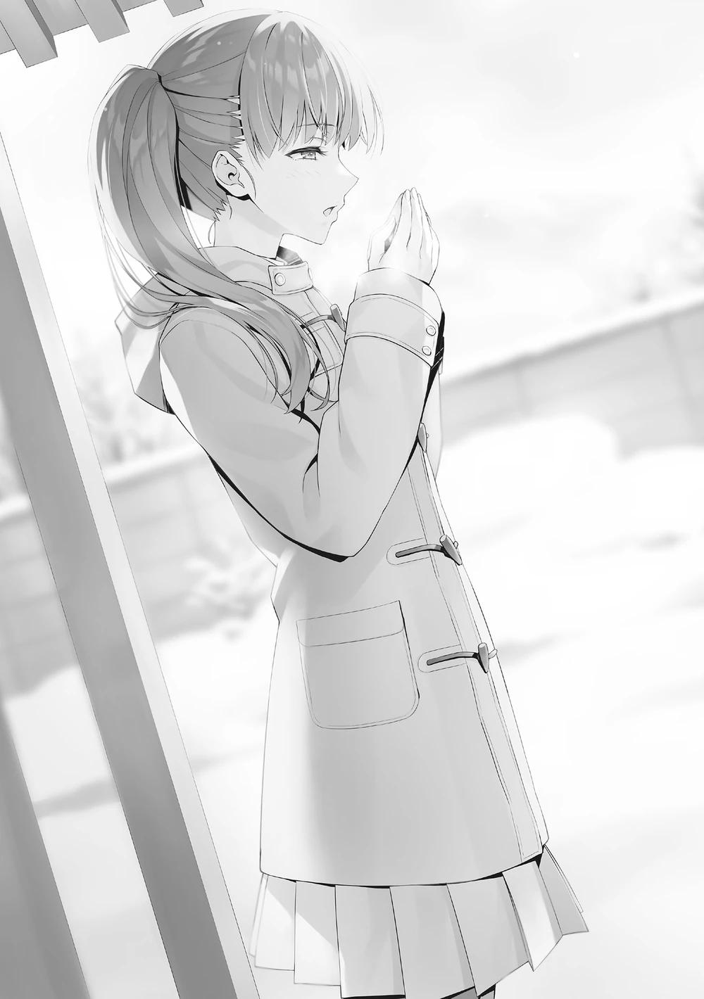
En el otro lado había un equipo de siete chicos liderado por Sudou. Fue verdaderamente un choque de hombres.
Tan pronto como empezaron, las bolas de nieve volaron poderosamente de un lado a otro. Con 14 bolas de nieve siendo lanzadas a la vez, era difícil para todos evitarlas. En unos 10 segundos, un total de seis chicos de ambos equipos fueron eliminados. Por cierto, Ishizaki, que había estado tan emocionado todo el tiempo, también fue golpeado en 10 segundos.
Por otro lado, Sudou parecía haber volcado su frustración por haber sido rechazado por Horikita en las bolas de nieve, lanzándolas una tras otra. Sin embargo, el equipo de Ishizaki tenía a Albert, que era lo suficientemente ágil como para evitar las bolas de nieve, y había estado trabajando duro para derrotar al otro equipo. Yamamura observaba en silencio la emocionante batalla, así que me acerqué un poco más.
―Se están emocionando, ¿verdad?
Su expresión era la misma de siempre, con muy pocos cambios, pero parecía estar disfrutando.
―Ah, eso parece ―Yamamura lo dijo mientras exhalaba en las palmas de las manos.
Sus manos no tenían puestos los guantes que supuestamente compró en la estación de esquí.
―¿Quizás olvidaste tus guantes otra vez?
―Sí, los olvidé.
Intenté quitarme los guantes, pero Yamamura me detuvo.
―Lo siento, sólo bromeaba. Traje mis guantes.
Y se sacó los guantes del bolsillo. Sonreía, pero sólo un poco.
―No sabía que fueras graciosa.
―Supongo que no encaja con nuestra relación, ¿verdad?
Al instante se le borró la sonrisa y concluyó que era un comentario innecesario.
―No, está bien. Siento que hemos formado un pequeño vínculo como grupo.
Era un cambio impensable, al menos a partir del primer día.
―Yo también lo siento así. Siempre he estado en la sombra, así que era menos probable que la gente prestara atención a cualquier cosa que hiciera...
Kushida-san, Nishino-san, Amikura-san. Todas se fijaron en mí y me incluyeron en su grupo. Les estoy muy agradecida.
Sin el viaje escolar, su impresión de Yamamura habría seguido siendo débil hasta que se graduara.
Fue un viaje escolar bueno y memorable, tanto para Yamamura como para las demás chicas. Debía de haber muchos estudiantes en otros grupos que acortaran distancias de forma similar.
Cuando Yamamura terminó de ponerse los guantes en ambas manos, se volteó y los extendió en mi dirección.
―No sólo las chicas, también los chicos. Es un poco diferente de la imagen que esperaba.
A diferencia del primer día que estuvimos en el grupo, el comportamiento de Yamamura era más amable. Por supuesto, este cambio era ligeramente menor que el de los otros estudiantes, pero era un cambio evidente.
―¿Así que el viaje escolar, que al principio me pareció largo, termina hoy?
―Sí.
Durante un viaje escolar pasado con gente que te cae mal, el tiempo definitivamente se habría sentido terriblemente largo y lento. Sin embargo, el mero hecho de reconocerlos como miembros con los que no resulta incómodo estar, te invade un cambio que hace difícil creer que el tiempo transcurría con normalidad.
―Seguro que no eres la única que ha cambiado. Kitou, Watanabe, Amikura y Nishino también deben haber cambiado en cierta medida después de esta experiencia.
El grupo tenía su cuota de problemas, pero en cierto modo eso había condimentado las cosas.
―Poco a poco, creo que las maldiciones de Kitou-kun hacia Ryuuen-kun están disminuyendo.
―Hmm.
―Desde que formamos el grupo, él ha estado diciendo cosas como 'Voy a matarte' y 'Voy a enviarte al infierno'.
Eran cosas muy perturbadoras. Bueno, no era tanto que los dos se hubieran hecho amigos, sino que se habían chocado tanto que sus sentidos se habían entumecido.
Sin embargo, la imagen que tenía de Kito cambió mucho. Al principio pensaba que no era de los que hablaban, pero cuando me acerqué a él, descubrí que hablaba mucho más de lo que esperaba.
Puede que hubiera muchos problemas con lo que decía, pero era comprensible por qué. Los alumnos de las clases de Sakayanagi y Ryuuen eran especialmente recelosos entre sí.
Casi no había oportunidades de ver al otro bajo una luz positiva.
―Kitou también es muy cercano a Sakayanagi.
―Hablando de eso, parecías hablar con él a menudo mientras estaban juntos en el grupo.
De repente, miré el perfil de Yamamura y vi que la mirada alegre que tenía antes se había desvanecido.
La palabra más precisa que podía usar para describir su expresión era
"desinteresada". O le tenía cariño a Kitou, o tenía algo en mente con respecto a Sakayanagi.
Cualquiera de las dos podía aplicarse a ella.
―¿Qué piensas de Sakayanagi?
Hice esta pregunta no porque quisiera indagar, sino porque sentía verdadera curiosidad por su relación.
―¿Eh?
Yamamura, cuya atención estaba en otra parte cuando pregunté, volvió a preguntar sorprendida.
―Me preguntaba qué se siente al ver a un líder competente de la Clase A desde la perspectiva de sus compañeros.
―Bueno, la verdad es que no lo sé. Para empezar, no soy amiga de nadie en particular y, además, apenas he hablado con Sakayanagi.
Se rio para sus adentros. Quería decir que no tenía amigos debido a su propia naturaleza sombría.
En otras palabras, ¿era simplemente un sentimiento causado por la admiración, como envidiar a Kitou, a quien Sakayanagi hablaba muy informalmente?
―Entonces, ¿por qué no aprovechas esta oportunidad para invitar a Kitou a salir? Puede que acepte tu oferta.
―Según lo esperado, no tengo tanto coraje.
―¿Y si él te lo pidiera?
―¿No es esta una conversación para chicos?
Pretendía ser una broma ligera, pero Yamamura se echó atrás más de lo que esperaba.
―Lo siento. Quizá me lo tomé demasiado a la ligera.
Aunque no pensaran nada el uno del otro, era natural ser sensible cuando se trataba de asuntos entre hombres y mujeres.
―No me importa. Lo dijiste por mi bien. Gracias.
Miré a Yamamura y luego alrededor a los estudiantes presentes.
Gente nueva, nuevos amigos. Verdades y mentiras, los que entendían y los que eran entendidos. Los estudiantes se estaban explorando las entrañas a través del intercambio de pesos y contrapesos.
¿Qué clase sería la ganadora en el futuro?
―Ahora mismo no puedo, pero... lo pensaré un rato.
Contestó Yamamura mientras añadía al final.
―Eso está bien.
En ese momento dejamos de intercambiar palabras y centramos nuestra atención en el partido. Albert estaba exhibiendo sus poderosos brazos, pero su precisión no era tan buena, por lo que el ganador se decidió en última instancia por la agilidad y los ataques precisos de Sudou.
Sudou era un atleta de primera clase por excelencia en cualquier situación.
Horikita también le dedicó un generoso aplauso. A lo lejos, Onodera también le animaba de forma inocente.
Siguió el segundo partido. El segundo encuentro fue una batalla de géneros mixtos, pero no había estudiantes con un atletismo sobresaliente como Sudou y Albert, por lo que el partido se pareció más a un juego amistoso que a una competición seria.
La ronda terminó con los dos bandos elogiándose mutuamente por un buen combate y diciendo que se lo habían pasado bien.
―Es el momento de que vayas, ¿no? Buena suerte.
Finalmente, el tercer combate. La batalla entre Ibuki, Horikita y yo comenzó.
―Hagámoslo lo mejor posible juntos, Yamamura.
―¿Qué?
Le grité, y ella me miró con una expresión vacía en su rostro.
―Le pedí a Yousuke que introdujera también tu nombre.
―¡Eh, eh! Vaya, no puedo hacer eso. No soy una ventaja, sólo soy un lastre.
―Si pierdes, recuperaré los puntos, así que no te preocupes.
―Ese no es el punto. No ganaremos.
―Eso no me preocupa; recuperaré los puntos si perdemos. Vamos.
―Oh, no...
Cuando empecé a alejarme, Yamamura me siguió, aunque mostró algunas dudas.
―Oh, realmente no sé cómo jugar...
―No te preocupes. Ya viste el juego antes; éste es sólo un juego sencillo.
―Pero... parece difícil.
―¡Voy a ganar!
Ibuki, rebosante de espíritu de combate, agarró una bola de nieve, la empuñó y comenzó la secuencia de acciones para lanzarla.
Di instrucciones a Yamamura para que retrocediera hasta la retaguardia. Los alumnos de delante nos apuntarían, así que los evitaríamos.
Quería que se centrara en disfrutar el mayor tiempo posible en lugar de intentar golpear a alguien con una bola de nieve y eliminarlo.
Cuando empezó el juego, al igual que en las dos rondas anteriores, muchas bolas de nieve se acumularon sobre los alumnos que luchaban en primera línea.
Por otro lado, las bolas de nieve que fallaban o apuntaban a la retaguardia también volaban, pero si tenías cuidado, no te golpeaban.
―¡Wah, wah!
Yamamura no tenía tiempo para recoger y lanzar bolas de nieve y las esquivaba desesperadamente. Sin embargo, una de las varias bolas de nieve voló en ángulo acercándose a la cadera izquierda de Yamamura.
―¡Es-Espera...!
Para salvar a Yamamura, tiré de su brazo derecho para evitar que fuese golpeada, aunque no tenía permiso para hacerlo.
―Lo siento, gracias por salvarme.
―El número de personas está disminuyendo y la batalla entre las líneas del frente se está intensificando. Hagamos bolas de nieve mientras podamos.
―Sí, sí, sí...
Las bolas de nieve que recogió apresuradamente resultaron ser más grandes de lo que esperaba.
No parecía que fueran a volar muy lejos, pero no dije nada porque pensé que sería interesante.
―Eeeeee...
Con un ruido que no sonaba nada animoso, una gran bola de nieve voló por el aire.
Luego aterrizó con un ruido sordo en nuestra zona aliada.
―Ah...
―No te preocupes. Esta vez deberías lanzar una más pequeña.
―Sí, de acuerdo.
Yamamura se apresuró a volver a recoger nieve. Mientras tanto, el juego seguía su curso, y los estudiantes iban siendo derribados y eliminados.
Ojalá pudiera dejarla vencer al menos a uno de ellos, pero... Cuando Yamamura completó su segunda bola de nieve, estaba tan concentrada en lanzarla que la lanzó casi directamente hacia abajo.
―¡Ah, ugh!
Tres de los jugadores de vanguardia de nuestro equipo murieron, y los rivales empezaron a centrarse en Yamamura. Me aparté de ella para atraer su atención y di un paso adelante.
Rápidamente recogí nieve y golpeé a Nakashini, de la clase D, que intentaba apuntarme con una bola de nieve. Pero el tiro le salió por la culata. Yamamura, que había olvidado cómo esquivar y miraba desesperada la nieve a sus pies, fue alcanzada en la cabeza por una bola de nieve lanzada por Yano, de la clase A.
―¡Oh...!
La bola de nieve que aferraba con tanta fuerza se le cayó de las manos, y Yamamura se apresuró a salir de la zona con las manos en alto. Estaba deprimida y frustrada, y se le notaba en la cara.
Me pregunto si pudo experimentar al menos un poco de la tensión y la diversión de la pelea de bolas de nieve.
Después de eso, al golpearnos repetidamente, fuimos eliminados uno tras otro, y la única que quedaba en el otro equipo era Horikita.
Por otro lado, quedaban dos de nuestro lado. La situación estaba naturalmente a nuestro favor.
Ibuki se colocó detrás de mí y se cruzó de brazos.
―Estás en mi camino.
―Lo sé.
Horikita disparó una bola de nieve, y yo la atrapé con la mano en lugar de esquivarla.
La atrapada, por supuesto, era ilegal.
―¿Qué intentas hacer?
―Ibuki quiere un uno contra uno. Nuestro líder dice que vamos a ganar, así que creo que deberíamos ir con ello.
Fue sólo por un rato, pero realmente disfruté de la pelea de bolas de nieve y no quería nada más.
Ayudarla a vencer a Horikita no sería divertido. Por otro lado, estaba realmente interesado en un enfrentamiento entre estas dos, que no eran muy diferentes en habilidad.
―Esto no me gusta nada, pero bueno. Puedo concentrarme sólo en Ibuki.
―Ya lo tienes, Ibuki. Eres responsable de conseguir el dinero para los recuerdos.
―Cállate y vete de aquí. No hay forma de que pierda contra Horikita.
Con mucha gente mirando, la batalla entre Horikita e Ibuki estaba a punto de comenzar. En esta batalla, no había ninguna regla para un empate. Si el árbitro decidía que las dos habían sido golpeadas al mismo tiempo, significaría la continuación de la lucha hasta la prórroga. Era sólo una pelea de bolas de nieve, pero para ambas partes, era una pelea que no podían perder.
―No hay nada como una pelea que sea claramente en blanco y negro.
Ibuki, que había estado usando guantes para la pelea de bolas de nieve, se los quitó y agarró la bola con su mano derecha.
Se trataba de una estrategia para abandonar la resistencia al frío y mejorar la precisión de sus lanzamientos.
Horikita prefirió luchar sin quitarse los guantes, por miedo a perder el control de los dedos debido al frío.
Para una batalla a corto plazo, Ibuki tenía la ventaja, y para una batalla a largo plazo, Horikita la tenía.
―Lo siento, no pude ayudarte en nada.
murmuró Yamamura, con los hombros todavía moviéndose arriba y abajo, quizá todavía un poco sin aliento.
―No pasa nada. ¿Lo disfrutaste, aunque sólo fuera un poco?
―Sí. Ojalá me hubiera esforzado más.
Al decir esto, la boca de Yamamura se torció en una sonrisa, aunque sólo ligeramente. Aunque fuera imposible tener una pelea de bolas de nieve con los mismos participantes, ya habrá ocasión de competir en algún tipo de competición en el futuro.
Espero que guarde sus remordimientos hasta entonces y se tome la revancha.
Volviendo a la tribuna, centramos nuestra atención en las dos chicas que se enfrentaban cara a cara.
―Esto es una competición seria, ¿verdad?
―Sí.
Ibuki quería resolver el combate rápidamente, pero Horikita se dio cuenta y dio prioridad a la evasión sobre el ataque.
―Te estás moviendo mucho!
La irritación de Ibuki y el frío que sentía en la punta de los dedos eran cada vez más insoportables. Empezó a mostrar síntomas de impaciencia. Como la batalla empezaba a alargarse, Ibuki apuntó su octava bola de nieve a Horikita, y le rozó la mejilla.
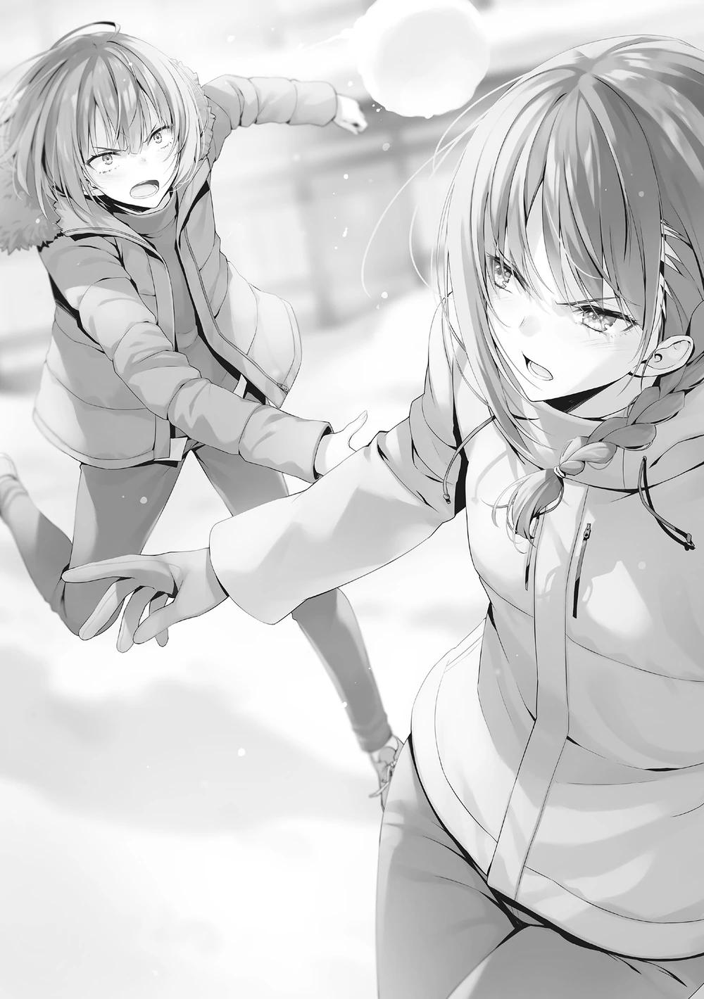
―¡Vas a tener que darme la victoria!
―Eso no va a suceder ―A pesar de mostrar fatiga, la bola rápida agarrada de Ibuki se dirigió de nuevo hacia Horikita.
Mientras la esquivaba simultáneamente, soltó una bola de nieve que había estado sosteniendo durante un rato, como si fuera un contraataque.
Pero como era de esperar de Ibuki, fue muy cuidadosa y no bajó la guardia a pesar de estar cansada. A pesar de su agotamiento, se mantuvo en guardia y esquivó la bola de nieve, a pesar de que la hizo perder su postura.
―Tu cansancio parece estar en su punto álgido, así que acabemos con esto aquí.
Horikita, por su parte, no mostraba ganas de seguir luchando, y cambió su enfoque hacia el ataque.
En otras palabras, ambos bandos estaban dispuestos a darlo todo. La batalla se alargó. La bola de nieve de Horikita, que se dirigía hacia Ibuki, se dispersó en el aire.
Tal vez porque su agarre no era lo suficientemente firme, perdió impulso. Como resultado, sólo los fragmentos fugaces de la bola de nieve golpearon a Ibuki.
Horikita, por su parte, trató de esquivar a duras penas la bola de nieve que salió volando de Ibuki, pero no pudo evitarla por completo y le alcanzó el brazo izquierdo, cubriéndole la ropa.
Fue un golpe sólido.
Una maniobra tan delicada. Sin embargo, Yōsuke, no queriendo prolongar más la situación, emitió su juicio.
―¡Horikita-san golpeada! Ibuki-san gana!
―¡Sí, demonios!
Ibuki hizo una fuerte pose de victoria y esbozó una gran sonrisa.
Horikita trató de actuar con calma, como si fuera simplemente una pelea de bolas de nieve, pero su frustración parecía rezumar.
―¡Mira, perdedora! Dame 1.000 puntos, ¡ahora!
Ibuki, sin preocuparse por sus manos, temblorosas por el frío, sacó su celular y se dirigió furiosamente hacia Horikita.
―Qué fastidio. No tienes que regodearte tanto; te los daré.
―¡Perdiste! ¡Perdiste, perdiste, perdiste! ¡Perdedora!
¿Eran buenas amigas o no? Durante un rato, Ibuki siguió retozando alrededor de Horikita.
PARTE 1
Ese día disfrutamos esquiando por última vez. Esta vez, los ocho esquiamos juntos el suave recorrido para principiantes, en lugar de hacerlo por separado.
Ryuuen se vio aburrido de principio a fin, pero fue una suerte que no actuara egoístamente él solo.
También compré recuerdos para los alumnos de primer año durante el tiempo libre que quedaba. Sólo restaba la tarde del cuarto día del viaje escolar.
Cuando terminé de bañarme en el baño público, recibí un mensaje de Sakayanagi. En respuesta a su petición de reunirnos, fui al vestíbulo designado.
Eran poco más de las ocho de la tarde, pero hoy había muy pocos estudiantes.
Era la última noche, y se hablaría mucho en la sala del buffet y en las habitaciones.
Quizá ya había previsto esa situación desde el principio, pero casi no había estudiantes en el vestíbulo. Con una situación favorable, Sakayanagi estaba sentada en una silla, esperando tranquilamente.
―¿Te hice esperar?
―No, en absoluto. Gracias por venir hasta aquí.
Aunque había poca gente alrededor, la combinación de Sakayanagi y yo llamaba un poco la atención.
En ese sentido, prefería acabar rápido con la reunión.
―Fue corto, pero ¿disfrutaste del viaje escolar?
―Sí, lo hice. Experimenté muchas cosas que nunca antes había hecho.
Sobre todo, poder relacionarme con alumnos de otras clases fue sinceramente una buena experiencia. Creo que aprendí un poco más sobre Yamamura y Kitou.
Mencioné ambos nombres aquí, pero Sakayanagi se veía igual que siempre.
―Ya veo. No me sorprende especialmente, ya que eres Ayanokouji-kun.
Tienes un apetito voraz por absorber conocimientos.
―¿Eres cercana a esos dos?
Pregunté un poco más en profundidad.
―No veo a ninguno de mis compañeros como especial. Los veo a todos como iguales. Si digo que nos llevamos bien, nos llevamos bien; si digo que no, no.
Tanto si mentía como si decía la verdad, Sakayanagi respondió vagamente.
Si señalara a alguien, sería fácil que ese alumno en particular sintiera celos u otros sentimientos.
Como líder, Sakayanagi quizás los vea realmente como iguales.
―Déjame preguntarte por qué me llamaste aquí.
―¿Terminaste con la charla trivial? ¿Por casualidad tienes prisa? Si Karuizawa-san te ve así, sospechará de nuestra relación.
Se rio como un diablillo.
―No me gustaría que me vieran reuniéndome cara a cara con la líder de la Clase A.
―Fufu, estoy bromeando. Entiendo.
Después de suprimir su boca divertida, Sakayanagi comenzó a hablar.
―Aprendí muchas cosas durante este viaje escolar. Antes de volver a la escuela, pensé en hablarte de la persona que contactó contigo en el festival deportivo.
Cuando Sakayanagi y yo nos perdimos el festival deportivo y estábamos hablando en mi habitación, un hombre contactó conmigo desde fuera de la puerta.
―Ya veo. Es una historia que me interesa.
―Bien. Parece que también te interesaba la identidad de esa voz.
―Tengo más que unas cuantas ideas.
Incluyendo lo que sentía de Nanase, seguía sin estar muy claro si el que llamaba era o no un enemigo.
―Ahora, por el contrario, déjame preguntarte, ¿qué clase de persona consideras que es, Ayanokouji-kun? ¿Es posible que él tenga los mismos orígenes que tú, como Amasawa-san o Yagami-kun?
―No, no lo creo. Si la otra persona sólo te reconociera a ti, esa idea no podría descartarse, pero él llamó a mi padre 'Ayanokouji-sensei'. Eso marca una gran diferencia.
―¿Qué quieres decir?
―Si te hubieras criado en la habitación blanca, no lo llamarías 'Ayanokouji-sensei'.
Esto era obvio entre aquellos que crecieron en la Habitación Blanca.
―¿Pero es eso realmente una garantía absoluta? Si él es de una generación diferente a Ayanokouji-kun, las reglas pueden ser un poco diferentes,
¿verdad?
―No puedo decir que esté 100% seguro. Es sólo mi impresión subjetiva.
Uno de los factores principales es que me llamó el año pasado cuando mi padre visitó esta escuela, así que puedo adivinar que es alguien que está a su lado. Y
el hecho de que tú misma dijeras que te sonaba podría significar que está estrechamente relacionado con la política y los negocios, ¿no?
También tendría sentido por qué se esforzó en llamarlo maestro.
Un poco sorprendida, pero aún así complacida, Sakayanagi cerró los ojos y asintió con la cabeza.
―Así es. Puede que no fuera necesario que te diera consejos. Ya tengo una idea de quién era la voz, pero todavía tengo que confirmarlo. Quería aclararlo aquí hoy. Por eso te llamé.
Miré el celular que Sakayanagi había colocado sobre su regazo.
―Pero antes de aclararlo todo, voy a llamar a alguien de aquí que quizá lo conozca. Creo que llegará en unos minutos.
―¿Quieres decir que hay algún alumno de segundo año que tiene relación con esa persona?
―No creo que haya ningún candidato en tu mente, ¿cierto?
Correcto. No tenía ni idea de a quién se refería. Por supuesto, el dueño de la voz estaba en su primer año de escuela, y no sería sorprendente que algunos de los estudiantes de segundo año llegaran a conocerlo, pero no creo que se refiriera a eso. Al menos alguien tendría que saber más de la situación que nosotros para que ella tuviera una razón para llamarlo a este lugar. ¿Había alguien, aparte de Sakayanagi, que supiera de la Habitación Blanca o de la identidad de mi padre, o de ambas cosas?
―Continuemos con nuestra plática trivial hasta que llegue.
―Me parece una buena idea.
Dejar pasar el tiempo en silencio no era una buena manera de pasar un viaje escolar.
―¿Qué te pareció esta agrupación?
―Estoy seguro de que la tabla que los estudiantes llenaron de forma individual sin duda tuvo un impacto importante. Por lo que puedo ver, parece que
se hicieron ajustes para incorporar no sólo a mi grupo, sino también a los estudiantes con evaluaciones extremas.
―Estoy de acuerdo. Los estudiantes con las evaluaciones más altas y los estudiantes con las evaluaciones más bajas. Y el grupo intermedio que no estaba en ninguno de esos grupos. Puede que no sea aplicable a todos los grupos, pero creo que el sesgo estaba claramente en juego. Creo que dispusieron una combinación que tendría un impacto en el futuro de este proyecto.
―En ese sentido, también me gustaría preguntarte algo.
―Me alegra oírlo. Si tienes alguna pregunta que quieras hacerme, adelante.
―¿Qué opinas de los exámenes finales?
La composición de cada grupo para este viaje escolar seguramente tendrá un impacto más adelante. Sakayanagi cerró los ojos feliz y asintió con la cabeza dos o tres veces, satisfecha.
―Me gusta mucho hablar contigo. Siempre albergamos los mismos pensamientos. Estoy segura de que los exámenes de fin de curso serán todavía más duros que el año pasado.
Uno o dos expulsados no serían sorprendentes. Así parecía anticiparlo Sakayanagi.
―Estarás a salvo con tu punto de protección, pero los puntos de clase perdidos por las batallas pueden ser grandes. ¿No te preocupa que tu anterior reinado en solitario se vea interrumpido?
―¿Crees que perdería en una confrontación directa con Ryuuen-kun? Es una conclusión inevitable que lo venceré.
Sakayanagi, al igual que Ryuuen, ni siquiera podía imaginarse perdiendo.
―Él ciertamente tiene algunas ideas interesantes. Hay un término llamado matagigantes, y él parece tener el poder de abatir grandes presas a veces. Sin
embargo, eso no ocurrirá en un enfrentamiento conmigo. Al menos, el año que viene, seré yo quien compita con tu clase.
Una confianza inquebrantable. En algunos casos, el resultado final es un empate, pero eso puede considerarse una excepción.
Era difícil creer que la escuela estableciera una norma que permitiera un empate fácil en el examen de fin de curso. Eso fue lo que entendimos de la batalla del año pasado contra la clase A.
―¿O crees que voy a perder?
―No lo sé.
Era difícil de decir en este momento cuando ni siquiera sabíamos el contenido del examen.
Pero si se lo decía, se resistiría aún más. No era más que una indicación de que Sakayanagi podría perder, dependiendo del contenido del examen especial.
No importa quién gane o pierda...
―Para ti, no importa cómo se desarrollen las cosas entre Ryuuen-kun y yo, no habrá ninguna obstrucción a tu plan ¿verdad?
Debido a que nuestros pensamientos eran concordantes, Sakayanagi también entendió bien mis pensamientos.
―Pero Ayanokouji-kun, el futuro no siempre resulta como uno quiere.
―¿Qué quieres decir?
Justo cuando le respondí, Sakayanagi se llevó el dedo índice a la boca.
Parecía que su esperado visitante había llegado.
―Gracias por esperar.
Me pregunté si no le habían avisado de mi presencia. Kanzaki estaba de pie a mi lado, su expresión transmitía que estaba ligeramente sorprendido.
Pero, ¿por qué Kanzaki? Nunca había tenido la impresión de que estuviera relacionado con mi pasado.
―Lo primero que hay que hacer es reunir a la gente que necesitamos para arrancar. Voy a empezar ahora mismo, así que ¿puedes venir por aquí, Kanzaki-kun?
―¿Qué demonios, Sakayanagi?
Sakayanagi, sonriendo y haciendo señas, hizo que Kanzaki, que no entendía, se pusiera a su lado.
Kanzaki, que tenía los brazos cruzados en señal de duda, seguía sin entender la situación.
Me preguntaba si tenía algún sentido este acuerdo.
―En primer lugar, Ayanokouji-kun. ¿Qué opinas de la combinación de Kanzaki-kun y yo?
―¿Qué me parece?
―Por favor, dime tu sincera impresión.
―No siento más que incomodidad. Nunca los había visto juntos a Kanzaki y a ti.
Cuando estaban alineados así, realmente se notaba.
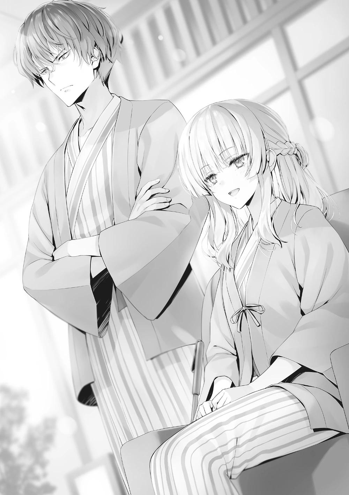
―Estoy segura de que tienes razón. Para los alumnos de esta escuela, no hay ningún contacto entre Kanzaki-kun y yo. No estamos en posición de ser compañeros líderes, y no creo que nadie haya visto nada que sugiera amistad entre nosotros. De hecho, apenas he hablado con Kanzaki-kun desde que entré en esta escuela.
En otras palabras, estaba intentando decir que había conversado con él hasta cierto punto antes de entrar en la escuela.
―¿Cuántos años han pasado desde que hablé contigo de esta manera?
―No lo sé. Si hablar a través de otra persona no cuenta, deben haber pasado al menos tres o cuatro años.
Ninguno de los dos podía recordar la fecha y la hora exactas.
―¿Puedo preguntar cómo se conocen?
―Es una conexión paterna, pero no hay conexión directa entre las familias Sakayanagi y Kanzaki. Cuando tienes padres que son conocidos por méritos propios, a menudo te invitan a fiestas y demás.
El padre de Sakayanagi es el presidente de esta escuela y es de una familia razonablemente bien establecida, dado su conocimiento de la Habitación Blanca.
―El padre de Kanzaki-kun es el jefe de una empresa llamada Ingenieros Kanzaki.
¿Significa esto que estos dos tienen lo mismo en común, la misma base de estar involucrados en negocios?
Si ese es el caso, tiene sentido que no tuviera ninguna sospecha sobre Kanzaki.
―¿De qué demonios estás hablando? ¿Qué sentido tiene que Ayanokouji escuche esto? No, antes de eso, escuchemos la razón por la que me llamaste aquí.
―Esta historia es exactamente relevante a la razón por la que te llamé.
―No entiendo lo que quieres decir.
―Esperaba que pudieras contarme algo más sobre Ishigami-kun, que está matriculado en nuestra escuela.
La expresión de Kanzaki se endureció todavía más en ese momento.
―Dijiste... ¿Sobre Ishigami?
¿Ishigami? No había ningún nombre que viniera a la mente entre los estudiantes de segundo año, y el único estudiante cuyo apellido correspondía era uno de primer año.
―Eso es lo que quieres decir. ¿Estás diciendo que también te interesa Ishigami?
―Puedes tomártelo así.
―¿Pero cuál es la razón de Ayanokouji? Él no tiene nada que ver con Ishigami. No creo que se involucre con otros años sin ninguna razón. Si lo hiciera, sólo sería en caso de problemas. Es difícil creer que hasta Ryuuen haría algo tan aleatorio, y mucho menos Ayanokouji.
Intentó explicar la situación a su manera.
―Es con respecto a un evento del pasado, no del presente.
―¿Qué...?
―¿Todavía no lo entiendes? Debes tener profundos sentimientos por el nombre Ayanokouji.
―¿Qué... No... No es posible...?
Como si se diera cuenta de algo, Kanzaki nos miró repetidamente a Sakayanagi y a mí.
―Has tardado mucho en darte cuenta. Por supuesto, es comprensible.
―Así que así son las cosas.
Kanzaki pareció llegar a un entendimiento con las palabras de Sakayanagi.
Luego, tras mirar al techo y levantar la cabeza, volvió a mirarme.
―¿Ayanokouji...? No puedo creer que seas su hijo.
Sólo había una cosa que se podía entender de esas palabras.
Kanzaki también debía conocer o haber conocido a alguien llamado Ayanokouji.
Y ya no era necesario adivinar que se trataba de mi padre.
Aquel hombre tenía fuertes vínculos con el mundo de los negocios. Era inevitable.
―¿Pudiste sacudirte la incomodidad de que compartiera mi asiento con Ayanokouji-kun?
―Ah. Pensé que simplemente estabas interesada en la habilidad de Ayanokouji, pero supongo que no. ¿Desde cuándo te diste cuenta de que era hijo de Ayanokouji-sensei?
―Por supuesto, desde el momento en que lo vi en esta escuela. Y a diferencia de ti, yo vi a Ayanokouji-kun cuando era pequeño. ¿Verdad?
Respondió, sin hablar de la Habitación Blanca, pero como si fingiera ser una figura familiar de la infancia.
―Así que no es un tipo cualquiera. Si es su hijo, es imposible que no sea...
Excelente.
Kanzaki me miró directamente a los ojos, como si hubiera llegado a un punto de comprensión.
―Mi padre adora a Ayanokouji-sensei, y lo he visto en persona varias veces en fiestas y cosas así. Sin embargo, solo hemos hablado con propiedad una vez.
Este era un buen ejemplo del tipo de casos que pueden darse incluso cuando el presidente Sakayanagi los relaciona indirectamente.
No obstante, daba la impresión de tenerle mucho respeto. Como no conocía en absoluto su vida privada, no podía imaginar qué tipo de comportamiento mostraba delante de Kanzaki, pero no podía negar la diferencia de percepción.
―Mi evaluación de ti ha cambiado dos o tres veces hasta este momento, pero finalmente se ha asentado. Si hay un hijo de Ayanokouji-sensei en la clase de Horikita, debe de ser una carta poderosa.
Parecía tener una buena opinión de mi padre a todos los efectos y estaba convencido por sí mismo.
―Bueno, ahora que corregimos la discrepancia en nuestras percepciones, sigamos adelante. No sabes nada de Ishigami-kun, ¿verdad, Ayanokouji-kun?
―No.
Por lo visto, el mismísimo estudiante Ishigami fue quien se acercó a nosotros.
―Es uno de los jóvenes que admiran a tu padre. Lo conoces bastante bien,
¿verdad, Kanzaki-kun?
―...Oh. Parece estar fascinado con Ayanokouji-sensei. No tuve el valor de ir a hablar con él, pero Ishigami es diferente. Desde entonces, fue realmente proactivo en hablar con él.
―La edad de Ishigami-kun es un año menor que la nuestra, y ahora es un estudiante de primer año.
Un estudiante que adora a ese hombre se matriculó en esta escuela, y de alguna manera, se puso en contacto conmigo varias veces, e incluso ayudó indirectamente con la expulsión de Yagami en el festival cultural.
La agenda de este hombre, Ishigami, sigue siendo desconocida para mí.
―Estoy seguro de que has tenido oportunidades de entrar en contacto con estudiantes de primer año, pero ¿desde cuándo conoces a Ishigami?
―Me fijé en él en cuanto vi la OAA. Pero como no es de los que se muestran abiertamente, nunca tuve la oportunidad de hablar con él; mis interacciones con la clase A de primer año fueron a través de Takahashi Osamu-kun, y parecía que evitaba intencionadamente el contacto conmigo.
Parece que la propia Sakayanagi no quería forzar el contacto con él.
―¿Es excelente?
―Creo que Kanzaki, que es cercano a él, sabe más que yo sobre ese aspecto.
Kanzaki fue el encargado de dar la explicación, pero no se veía nada contento.
Más bien parecía lo contrario.
―No es que esté muy unido a él. Sólo fui a la misma escuela intensiva que Ishigami. Pero si tuviera que responder sinceramente a tu pregunta, es innegable que es un genio. Se le han ocurrido varias ideas que a mí ni se me ocurren, y de lo único que estoy seguro es de que lo he visto de cerca.
No parecía gustarle Ishigami, pero respondió como si reconociera el hecho.
―Es el punto de vista de Kanzaki-kun, su opinión personal, pero pensé que sería una buena referencia.
―¿Pero y qué? Lo único que tienes que hacer es dejar en paz al Ishigami actual.
―¿No puedes al menos imaginártelo? Él respeta al padre de Ayanokouji-kun. Si es así, no sería de extrañar que se inscribiera en esta escuela para comprobar la habilidad de su hijo ―razonó Sakayanagi.
Mientras ocultaba información sobre la Habitación Blanca, Sakayanagi dirigió la conversación.
―¿Ishigami está probando la habilidad de Ayanokouji...? ¿No puedes negarlo?
Sus palabras tenían sentido para Kanzaki, correspondiendo a la imagen de Ishigami que él conocía.
―Estamos compitiendo entre nosotros en el segundo año. Kanzaki-kun, aunque tu clase esté un paso por detrás, todavía no está claro quién será el ganador. Bajo semejantes circunstancias, ¿no crees que es injusto que Ishigami-kun juegue trucos innecesarios en el futuro para averiguar la habilidad de Ayanokouji-kun?
―No entiendo lo que quieres decir. Pero, ¿por qué eres tan devota de Ayanokouji? No debería ser asunto tuyo lo que les pase a los alumnos de tu clase rival.
Si lo dejamos en paz, Ishigami saboteará automáticamente a un estudiante fuerte en una clase rival.
Era obvio para todos que esto era esencialmente un beneficio para Sakayanagi.
―Sólo quiero divertirme de verdad ―dijo.
―Es mi papel enterrar a la clase de Horikita, incluyendo a Ayanokouji. Es frustrante cuando alguien aparece de repente y te arrebata tu propósito, ¿verdad?
Tras un ataque de risa, Sakayanagi dio las gracias a Kanzaki.
―Muchas gracias, Kanzaki-kun. A partir de ahora, creo que Ayanokouji-kun y yo elaboraremos juntos un plan para enfrentarnos a Ishigami-kun.
Aunque era un agradecimiento... También implicaba fuertemente que cualquiera que se interpusiera debería irse.
―No tengo intención de involucrarme con Ishigami-kun, así que agradecería que todo se quedara así.
Kanzaki respondió sin vacilar y se marchó.
―Volveremos a hablar pronto, Ayanokouji. Me gustaría saber mucho de ese hombre, ¿sabes?
Estaba ansioso por hablar de mi padre, pero, por desgracia, yo no sabía nada de él.
―Bueno, Ayanokouji-kun. Veamos quién es realmente Ishigami-kun.
―¿Qué vas a hacer?
―Por supuesto, le preguntaré directamente. Esa será la forma más rápida,
¿verdad?
Sacando su celular, Sakayanagi marcó el número de 11 dígitos con suavidad.
Por lo visto, había hecho su tarea y ya había conseguido el número de teléfono de Ishigami.
Lo puso en el altavoz, Sakayanagi marcó el número y, a los pocos timbres, comenzó la llamada.
―Me imaginé que ya era hora de que llamaras, Sakayanagi.
El tono de voz de Ishigami daba a entender que lo había previsto nada más descolgar el teléfono. Esta voz era inconfundiblemente la que me llamó el año pasado y la que me visitó durante el festival deportivo.
―Eres muy perspicaz, ¿verdad?
―Le dije por adelantado que si alguien que no fuera un estudiante de primer año preguntaba por mi número, me lo comunicara.
―Digamos que es lo mejor que hay. He escuchado rumores sobre ti desde dentro y desde fuera.
Siempre tenía las antenas levantadas.
―Podrías haberte acercado a mí antes, ¿no?
―Esperaba evitar el contacto. Tú tampoco necesitas involucrarte conmigo,
¿verdad?
―No lo creo. Pensé que tenía que confirmar si te interpondrías o no en el camino de Ayanokouji-kun en el futuro.
―Si es así, ¿qué vas a hacer al respecto?
―No creo que Ayanokouji-kun sea derrotado por alguien que no sea yo, pero no me gusta la idea de que sea apartado por otra persona. Si vas a intervenir, puede que no tenga más remedio que detenerte.
―¿Vas a detenerme? Deberías ignorarme en lugar de hacer algo tan inútil.
Elegí esta escuela por recomendación de Ayanokouji-sensei para poder pasar mi tiempo como un estudiante normal.
Él entró a esta escuela con una idea similar, eso fue lo que dio a entender.
―Puedes asumir que no intentaré eliminar a Ayanokouji de esta escuela por ahora.
―Por ahora, ¿eh? Esa es una implicación preocupante, ¿no?
―En el improbable caso de que Ayanokouji-sensei me ordene eliminarlo, lo haré. Eso es todo.
Su tono era constantemente tranquilo, y no se veía como si estuviese mintiendo.
―Has aumentado mucho tu lealtad sin darte cuenta, ¿verdad?
―No vayas más lejos, Sakayanagi. Si deseas permanecer al lado de Ayanokouji, puedes hacerlo.
Seguro que me estaba advirtiendo enérgicamente de que no iba a ser un problema.
―No voy a decirte que evites ir contra mí. Tarde o temprano, Ayanokouji me descubrirá, así que le avisarás. ¿No es esa la mejor manera de proteger su vida escolar? No, si estás llamando, no hay necesidad de eso.
No podía estar seguro. Pero él estaba considerando la posibilidad de que estuviera escuchando a escondidas.
―Te avisaré si me apetece. Te saludaré en la escuela la próxima vez.
En ese momento, Sakayanagi decidió que ya era suficiente y terminó la llamada sin más.
―Era él, después de todo. No tenía mucha intención de ocultarlo.
―Eso parece. Si vino a esta escuela a disfrutar al máximo de la vida estudiantil, no tengo intención de involucrarme en el futuro.
Al menos en todas mis interacciones con Ishigami, nunca había percibido ningún peligro, y lo mismo ocurría con la llamada actual. No había necesidad de entrar en pánico ahora que había surgido la posibilidad de que desde el principio Ishigami no estuviera intentando expulsarme.
―Ya veo. Si tomas esa decisión, la respetaré ―Dijo Sakayanagi.
―Te lo agradezco. Gracias a ti, pude reconocer la existencia de Ishigami.
―Ahora que tenemos cierto sentido de la orientación, lamento hacer que tu estancia aquí sea tan larga. Sin embargo, ¿puedo continuar con lo que iba a decir al final?
―El futuro no siempre resulta como yo quiero, ¿verdad?
La forma en que Sakayanagi dijo eso era sin duda algo que había estado en mi mente.
―¡Ah, Ayanokouji-kun!
Pero alguien estaba en el lugar equivocado en el momento equivocado. Estaba a punto de indagar a qué se refería cuando alguien más me llamó.
―Um, ¿has visto a Honami?
Me llamó Amikura, que caminaba apresuradamente por el pasillo, con aspecto un poco nervioso.
―No, no la he visto. ¿Qué le pasa a Ichinose?
―Mira, el viaje escolar ya terminó, ¿no? Así que decidimos reunirnos todos los de la clase y charlar hasta que se apagaran las luces, pero no encontramos a Honami, así que estamos preocupados.
Un buen número de personas la estaban buscando, e incluso mientras hablábamos, las chicas de la clase D caminaban apresuradamente junto a Amikura.
―Por lo que parece, ya revisaron los baños y otras habitaciones.
―Oí que se veía angustiada por la noche... así que me quedé un poco preocupada.
A una preocupada Amikura se le acercó una chica de su misma clase.
―ako-chan. Acabo de hacer que lo revisen. Según parece, la yukata de Honami sigue aquí, y creo que salió.
―¿Qué, salió? Pero si son casi las nueve, ¿recuerdas? Y el grupo está en la posada, ¿verdad?
Salir no estaba permitido después de las nueve de la noche, y si salía sola, podría ser un problema.
―¡Revisaré la gran casa de baños una vez más!
No queriendo perder más tiempo hablando, Amikura se marchó.
Verdaderamente era un poco problemático que Ichinose estuviera ausente a estas horas de la noche.
―Continuemos nuestra conversación en otro momento. Por favor, adelante, busca a Ichinose-san. Seguramente su presencia sigue siendo indispensable para ti, por ahora.
―Lo siento.
Me despedí de Sakayanagi y salí del vestíbulo. Mientras no se le permitiera actuar sola fuera de un grupo, Ichinose no era una estudiante que rompiera las reglas designadas por la escuela sin ninguna razón.
Aunque tuviera algún problema, no cambiaría su principio básico.
Miré desde el pasillo del ryokan y vi que estaba nevando.
Si realmente estaba fuera del ryokan, sólo podía ir a un número limitado de sitios.
Tras volver a mi habitación y ponerme la ropa, salí por el patio trasero del ryokan.
Más adelante había una colina donde se podía ver el paisaje iluminado.
Este era exactamente el tipo de lugar que estaba restringido a las 9 de la noche, el toque de queda. El patio trasero, que estaba completamente dentro de los límites de la posada, no cumplía la norma para actividades en grupo.
Aunque la zona estaba iluminada con luces, seguía siendo peligrosa a causa de la nieve. Muchos estudiantes subieron a terrenos más altos en su primer o segundo día en la posada.
Por lo tanto, pocos alumnos volverían a visitarlo con el frío y la nieve que hacía.
Además, era el último día. Querrían pasar un tiempo de relajación en el ryokan.
LA LUZ AL FINAL DEL TÚNEL
Eran casi las nueve de la noche y en el exterior soplaba un viento gélido.
Las luces de cada extremo de la escalera iluminaban débilmente mi camino, pero, debido a la nieve, era difícil decir que estaba a salvo. Subí docenas de escalones, pisando la nieve para no caerme. Sin duda no había mucha gente que disfrutara viniendo aquí a estas horas del día.
En la oscuridad, llegué a una colina algo espaciosa donde la gente no podía ver su propio aliento.
En la cubierta de madera, encontré a alguien.
Tal vez estuviera contemplando el paisaje, pero la oscuridad le daba un aspecto bastante apesadumbrado. Naturalmente, no había más gente alrededor.
Me dijeron que estaba presente a la hora de comer. Empecé a preguntarme cuánto tiempo llevaba aquí. El sonido del viento era tan fuerte que no se dio cuenta de que me acercaba.
Pisé el suelo tan fuerte como pude para anunciar mi presencia y no asustarla.
Me preguntaba si el sonido había llegado a sus oídos. Cuando su cuerpo mostró una reacción, decidí llamarla.
―¿Puedo sentarme a tu lado?
―¡Oh! ¿Ayanokouji-kun?
―Qué coincidencia.
―S-sí, coincidencia.
Ichinose torpemente dejó que su mirada se perdiera en el paisaje nocturno.
―Lo siento, no es realmente una coincidencia. Amikura y los demás estaban haciendo un escándalo porque no podían encontrarte. Sólo quería llamarte para charlar hasta que se apagaran las luces.
―¿Ah, sí? ¿Qué pasa? ¿Estoy armando un escándalo?
―Un poco. Por ahora le enviaré un mensaje. Eso debería tranquilizar a Amikura.
―¿Has intercambiado información de contacto... con Mako-chan?
―Estamos en el mismo grupo para el viaje escolar. Necesitaba una forma de ponerme en contacto con ella.
Envié un mensaje diciendo que había encontrado a Ichinose y que volvería a las nueve de la noche, así que no tenían por qué preocuparse. En cuanto envié el mensaje, lo leyeron. Cuando Amikura supo que todo estaba bien, envió dos estampas de alivio.
―Recibió el mensaje. Al menos ahora debería acabarse el alboroto.
―Lo siento.
―No hay problema. Esto es propiedad de la posada y no estamos rompiendo el toque de queda. Mientras estés de vuelta a las nueve, es cosa tuya.
―Sí, gracias...
Supongo que era comprensible que no intentara volver a entrar sólo porque la gente estaba preocupada por ella. Los viajes escolares son divertidos, pero inevitablemente tienes que compartir mucho de tu tiempo con los estudiantes.
―Todo el mundo tiene momentos en los que quiere estar solo. En ese sentido, quizá me esté entrometiendo en tu intimidad.
Ante estas palabras, Ichinose guardó silencio.
Siguió contemplando el paisaje nocturno.
―Hace frío.
―...Sí. Hace frío.
A pesar de mis guantes, sentí un escalofrío penetrante cuando sopló el viento.
―¿Cuánto tiempo llevas aquí?
―No lo sé... Quizá cinco minutos.
Contestó, pero creyó que yo reconocería inmediatamente su mentira, así que se corrigió frustrada.
―Lo siento, puede que lleve aquí 30 o 40 minutos.
―Seguro que tienes razón. A primera vista, no hay huellas que encontrar.
No tenía ninguna prueba de que Ichinose estuviera aquí hasta que subí las escaleras. Si hubiera sido unos minutos antes, habría reconocido claramente las huellas, aún en la oscuridad.
El viento seguía siendo fuerte, aunque la nieve que había estado cayendo se estaba deteniendo lentamente.
―Lo que voy a decir es muy obvio, pero te vas a resfriar si te quedas mucho tiempo.
―Cierto...
Murmuró para sí misma en señal de aceptación, pero no hubo indicios de que fuera a seguir mi consejo.
Poco después, la nieve se detuvo. Pero esto sólo sería temporal. El pronóstico anunciaba una fuerte tormenta de nieve.
―Hablando de una búsqueda inútil, ¿en qué estás pensando mientras contemplas la vista nocturna tú sola?
Tenía una idea aproximada de lo que me esperaba, pero no lo sabría con certeza a menos que lo oyera de su propia boca.
Le pregunté, pero Ichinose no respondió de inmediato. Se limitó a admirar el paisaje sin mirar atrás.
―Creo que quiero estar... sola por ahora.
Un leve rechazo. Ella me instó a alejarme, diciendo que no quiere hablar con nadie.
O tal vez sólo estaba diciendo que no me quería cerca de ella.
―No creo que vaya a dejarte sola ahora. Es especialmente peligroso en la bajada.
―Gracias por tu preocupación, pero Karuizawa-san se enfadará si se entera de que tú y yo estamos solos en un lugar como éste. Definitivamente no quiero eso.
A primera vista, nadie iría tan lejos a menos que tuviera otra razón; supongo que era ese tipo de cuestión. En su naturaleza está cuidar de los demás, incluso en un momento como este.
―Desde luego, si Kei me ve, lo entenderá mal.
―Sí.
―¿Estás segura de que quieres que me vaya?
―Sí.
Ichinose contestó con la misma escueta respuesta, sin apartar aún la mirada de la apacible vista.
Me aparté rápidamente y le di la espalda.
―Voy a volver entonces. Asegúrate de estar de vuelta a las nueve.
―Gracias, tendré cuidado.
Mientras daba mis primeros pasos, la nieve que se había detenido momentáneamente comenzó a caer de nuevo. La nieve caía con más fuerza que antes.
Giré sobre mí mismo y miré la espalda de la silueta de Ichinose, que había permanecido congelada desde que la encontré aquí.
Se había vuelto mucho más pequeña y débil. ¿Cuándo fue la última vez que vi a la Ichinose Honami que estaba tan llena de vida cuando entró por primera vez en la escuela?
No era que hubiera ocurrido algo en el viaje escolar, sino más bien una acumulación. El agua que se había ido acumulando en la taza agrietada empezaba a desbordarse. Lo más fácil sería alejarse, pero éste es un punto de inflexión.
Las emociones de Ichinose, que habían estado erosionándola y estrangulándola, alcanzaron un punto crítico, por lo que pude ver.
No era simplemente que el agua se estuviera desbordando. Si la grieta se ensanchaba y la taza se hacía añicos, la restauración podría no ser posible.
En otras palabras, la clase de Ichinose se acabaría, y su camino hacia la Clase A se cerraría.
Este no era el momento para la caída de su clase.
Eso sería un problema para mi plan.
―Esperaré aquí ―Dije y me senté en las escaleras que llevaban a la posada.
―¿Por qué?
―Me pregunto por qué.
―Mis asuntos no son de tu incumbencia, ¿verdad? ¿Por qué esperas...?
―No lo sé.
Entonces no tuve nada que decirle. Sabía que ella quería alejarme, pero como no tenía poder coercitivo, Ichinose no tuvo más remedio que rendirse.
Si realmente no quería estar conmigo, la mejor opción era que ella se marchara.
Pasaron unos minutos en silencio. En realidad, no pasó nada.
―Todo lo que estamos haciendo es charlar... ¿Verdad?
O ella no podía soportar el silencio entre nosotros dos, o decidió que no tenía otra opción.
En voz tan baja que podría no haberse oído, como si hubiera estado pensando para sí misma, Ichinose murmuró algo.
―En realidad, llevaba mucho tiempo queriendo preguntarte algo.
Era mucho mejor que quedarse en silencio hasta el toque de queda. También ayudaría a ahogar el frío de la nieve que me helaba el trasero.
―¿Has oído hablar alguna vez de la Habitación Blanca...?
Me pregunté qué tipo de conversación resultaría de esta situación, pero las palabras que salieron fueron demasiado inesperadas y divergieron completamente de algunas de las suposiciones que tenía flotando por ahí.
¿Por qué, de entre todos, Ichinose pronunciaría las palabras "Habitación Blanca"?
Por un momento, la imagen de Sakayanagi pasó por mi mente. Había algunas situaciones en las que los líderes de las clases se conocían, como la cooperación entre clases en estos días. Pero no creo que ella hablara fácilmente de esas cosas.
Si ese fuera el caso, entonces...
Recuerdo que fue amenazada por Tsukishiro durante el Examen Especial de la Isla Deshabitada. No me sorprendería que hubiera memorizado "la habitación blanca" de ese incidente.
―No estoy seguro de lo que estás hablando.
―Ya veo. Si no lo entiendes, Ayanokouji-kun, no te preocupes. Puede que haya oído mal.
Las palabras de Ichinose se detuvieron de repente bajo el frío cielo. A continuación, dejó escapar un suspiro. No estaba seguro de si ella creía completamente mi respuesta o no.
Para estar seguro, sería mejor que yo mismo plantara algunas ideas.
―¿Dónde escuchaste esas palabras?
Interrumpí para divulgar que era algo que yo no recordaba.
Si ella no contestaba honestamente, eso era suficiente para detenerme de perseguir el asunto.
―Oí hablar al antiguo presidente interino y a Shiba-sensei durante el Examen de la Isla Deshabitada. Hubo pocas partes que pude escuchar con claridad, pero oí que quería expulsarte y las palabras 'Habitación Blanca'. Me dio curiosidad, así que busqué un poco, pero no pude encontrar nada que sonara parecido, así que supongo que oí mal...
―Dudo que lo oyeras bien. Al menos no se me ocurre ninguna palabra parecida.
Si hasta ella misma investigó, seguramente estaba medio convencida de que no coincidía con lo que recordaba.
―¿Pero por qué los profesores intentaban expulsarte? ¿Estás fuera de problemas ahora?
Seguro que ella también llevaba mucho tiempo queriendo preguntar eso. Pero debido a lo que pasó con Kei, Ichinose empujó esa pregunta al fondo de su mente.
―Ese asunto ya está resuelto. No puedo entrar en detalles, pero no hay problema.
Pude percibir que había otro secreto, aparte de la Habitación Blanca. Si la situación anterior se filtraba al mundo exterior, sería más problemático más adelante.
―Ya veo...
Pude ver su conmoción cuando pensó que ella podía haber sido considerada como alguien con quien yo no podía compartir un secreto.
Seguir con estos temas no beneficiará a Ichinose, así que esta vez le hice una pregunta.
―Yo también tengo una pregunta para ti. La Ichinose que conozco no es el tipo de persona que tiembla de soledad en un lugar como éste. Es la clase de estudiante que está rodeada de amigos, riendo y animándose unos a otros.
¿Cuánto tiempo piensas quedarte aquí?
―Me estoy divirtiendo.
―Eso no es lo que me pareció cuando vi tu comportamiento antes. No creo que fuera el tipo de cara que deberías mostrar en un viaje escolar en el que se trata de divertirse.
Incluso este tipo de conversación era necesaria para Ichinose en este momento.
Para exponer las partes de ella que deseaba guardar normalmente para sí misma y no podía hablar de ellas con cualquier persona.
Esto era algo a lo que Ichinose, que continuaba bajo presión como líder de la clase, seguía aferrándose.
―¿De verdad vas a seguir esperando ahí?
―Sí. Estaré contigo cuando termine.
―Ya veo. Bueno, al menos ven aquí. Tu trasero probablemente se está enfriando.
―Es una buena oferta. La verdad es que me estaba congelando el culo.
Me levanté apresuradamente, me quité la nieve del culo y me puse al lado de Ichinose.
El perfil de Ichinose no había cambiado desde antes. Cuando antes consulté mi celular, la hora era alrededor de las 8:40. Calculando el tiempo que tardaríamos en volver, parecía que podríamos quedarnos aquí otros 10 minutos más o menos.
Si nos quedábamos en silencio hasta que se cumpliera la hora límite, también estaría bien. Con la intención de quedarme con Ichinose hasta el final, decidí esperar su reacción.
Cada vez que soplaba el viento, la nieve bailaba en el aire. Al cabo de unas decenas de segundos, Ichinose abrió la boca. Una bocanada de aliento blanco se esparció por el aire.
―Con mi forma de hacer las cosas, ya no puedo ganar a ninguna clase.
Eso es lo que estaba pensando ―Una lágrima involuntaria resbaló por la mejilla de Ichinose.
―No puedes ganar, ¿eh? Pensaba que ibas a seguir adelante como hasta ahora, sin vacilar.
―Pero por eso... ―Ichinose hiló sus palabras, aunque vacilantes―. Sí, es cierto. Pero los resultados no nos acompañan. Nuestra clase se está alejando claramente de la Clase A. Esto es obvio para todos.
―Y que la causa de esto es tu propia forma de actuar.
―Si tan solo pudiera comandar a mis compañeros como Sakayanagi-san.
Si tan solo pudiera liderar tan fuertemente como Ryuuen-kun. Si tan solo pudiera coordinar como Horikita-san. No puedo evitar pensar así.
―Eso es pedir algo que no tienes. Sólo puedes ser tú misma; no puedes ser nadie más.
Ella lo sabía sin tener que decirlo. Pero hay veces que tienes que oírlo, aunque lo sepas.
―Es lo que no tengo. Sí, claro. Quiero ser lo que no soy.
―¿Aunque tengas que cambiarte a ti misma?
―Si puedo ganar... seguiré estando bien.
Ichinose quería cambiar. Si estaba bien o mal era secundario, sólo estaba desesperada por avanzar. Normalmente, esta no habría sido una situación en la que me hubiera acercado a ella.
Sin embargo, la confesión que recibí de Ichinose en la Isla Deshabitada condujo a varios acontecimientos inesperados, que fue la principal razón por la que se
volvió tan débil. Todavía faltaban más de tres meses para la promesa que hice con Ichinose.
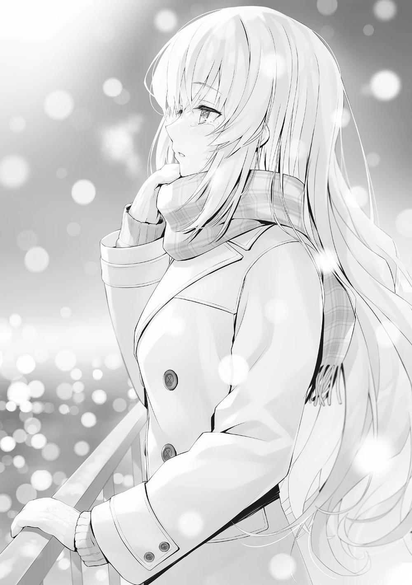
¿Será capaz de sobreponerse sin ayuda hasta entonces?
No, esta no es una situación en la que debamos tener esperanzas.
Ahora mismo, el corazón de Ichinose está a punto de romperse. Los efectos del veneno comenzaron a extenderse por su cuerpo más rápido de lo que esperaba.
Su amor por mí y la presencia de Karuizawa Kei.
La clase entró en una espiral descendente, sin ninguna posibilidad de llegar a la cima. Aunque Kanzaki y Himeno comenzaron a mover fichas, no habrá tiempo suficiente para el crecimiento de sus compañeros.
Como miembro del consejo estudiantil, no puedo ver lo que le ocurrirá a ella en el futuro. El camino por delante será muy difícil. Se siente atrapada por todos lados. Su futuro está envuelto en niebla.
―Estoy tan frustrada...
Su impotencia golpeó a Ichinose con un intenso sentimiento de culpa.
Si éste fuera un problema que sólo ella tuviera que resolver, estaría deprimida.
Pero Ichinose, que dirigía la clase, no podía permitirlo. Ella es la responsable de los fracasos de toda la clase. Fue porque ella pensaba de esa manera que este fenómeno ocurrió.
―Lo siento, Ayanokouji-kun... ―Su voz temblorosa transmitía fuertemente su arrepentimiento.
―¿Por qué te disculpas?
―Muchas, muchas cosas. Que llore así sólo te incomoda a ti.
Se supone que Ichinose es más fuerte e inteligente. Su potencial oculto desapareció por completo debido a un corazón demasiado frágil.
Una debilidad fatal.
Ni Horikita, ni Ryuuen, ni Sakayanagi, que caminan al frente de la manada, se quedarán quietos y le permitirán alcanzarlos. Será insoportablemente doloroso
luchar, sufrir y desplomarse detrás de ellos. Un gentil recordatorio de que trabajar duro ya no la eximirá de esta pesada responsabilidad.
Si Ichinose pierde ambas piernas, estará acabada para siempre.
Sin embargo, es demasiado pronto para saberlo... No es el momento adecuado.
No se te permite derrumbarte ahora, Ichinose.
No dejaré que te detengas hasta el examen final, el momento que decidirá el destino de los estudiantes de segundo año. No permitiré que te derrumbes antes de ese momento.
Tú eres quien decide el momento y el lugar de tu vida o muerte como estudiante, nadie más.
Acorté la distancia que nos separaba y extendí mi brazo hacia su espalda mientras ella soportaba su desdicha.
Luego, le puse la mano en el hombro derecho y tiré de ella para abrazarla.
―¿Q-qué? ¡Ayanokouji-kun!
―Cuando sientas dolor, llora. Puedes pedir ayuda. Todo el mundo tiene una debilidad.
―Es... Pero...
Ichinose se mordió el labio, que empezaba a teñirse de un azul pálido, y se tragó sus palabras. Su cuerpo intentó huir en dirección contraria, pero sus fuerzas eran débiles.
―¿No hay algo que quieras?
―Yo... No. Lo que quería ya no está...
―¿Ya no puedes conseguirlo?
Intentó desesperadamente reprimir las palabras que le brotaban del fondo de la garganta, o más bien de las profundidades de su corazón. Aun así, Ichinose asintió levemente con la cabeza, probablemente sin intención de responder.
―Eso ya no importa. Eso es lo que pienso.
―Pero...
―Si no tienes valor para dar el primer paso, puedo ayudarte.
Le sequé las lágrimas que corrían por sus mejillas con las yemas de los dedos.
Estaban tan frías que parecía que se iban a congelar.
Ella ya no tenía fuerzas para huir. Más bien se relajó y se entregó a mí, dejándolo todo en mis manos.
Contemplando el paisaje nocturno nevado de una tierra lejana.
Ese día, nos dimos cuenta de la calidez del otro acurrucándonos juntos bajo el frío cielo nocturno.
PALABRAS DEL AUTOR
Hola. ¡Soy Kinugasa, y soy amigo de ustedes! ¿Cómo han estado? Han pasado cuatro meses. Tengo algo importante que decirles, así que me encantaría que lo escucharan.
Tengo una disculpa. El personaje "Ishigami Kyō" del 1er año Clase A apareció varias veces en la versión del 2do año, pero su apellido correcto es "Ishigami".
"Ishiishigami" es un gran error. Pedimos disculpas por el retraso en informar de esto.
La razón detallada es... - ¡Probablemente porque estaba cansado! ¡Entonces no se pudo evitar!
Todos cometemos errores, así que por favor perdónenme con una mirada cálida en sus ojos. Espero que todos los que lean esto sonrían amablemente y me perdonen, así se acaba esta historia. Espero que a partir de ahora vuelvan a cuidar de Ishigami-kun y de mí.
Esta vez nos vamos de viaje escolar, así que no sentirán las vacaciones de invierno de los volúmenes 7.5. Puede que sea la historia de unas vacaciones, pero es una parte importante de la historia que nos llevará al futuro.
El próximo volumen será el último del segundo semestre, que será el noveno volumen de la historia del mes de diciembre. Después continuaremos con la historia de las vacaciones de invierno.
Ya les dije en alguna ocasión que la versión del segundo año y posteriores será más corta que la del primer año, pero puede que sea más o menos igual. Espero que me perdonen de corazón, ya que todos cometemos errores.
Y permítanme que les hable un poco de la animación. ¿Qué tal la segunda temporada de anime en verano? Espero que el mayor número posible de personas haya disfrutado de la primera animación después de cinco años. Ya estoy deseando que llegue la tercera temporada, y con eso como estímulo, sigo trabajando duro en mi escritura.
Espero que sigan apoyando a Yosami desde muchos ángulos.
Sé que es un poco pronto, pero espero volver a verlos a todos el año que viene con tarjetas postales.
HISTORIAS CORTAS
KUSHIDA KIKYO
UN CIERTO LAPSUS DE JUICIO
Ryuuen tomó la iniciativa de atacarme, pero le salió el tiro por la culata. Sin embargo, justo después de terminar la conversación...
―¿Por qué... venir a rescatarme? ..... No es bueno para Ayanokoji-kun,
¿verdad?
Ayanokoji-kun obviamente no querría ser el objetivo de Ryuuen-kun a propósito.
―Hay beneficios. Eres un talento indispensable en la clase. Aunque yo no viniera aquí, no creo que Ryuuen planeara desenmascararte, pero no sé cómo actuará después. Deberías encontrar una manera de cerrarle la boca para siempre.
―Bueno, bueno...
Por supuesto que reflexiono sobre lo superficial y precipitada que soy. Pero,
¿por qué no puedo contener mis emociones en este momento? Mis fracasos pasados me han llevado a esta situación, que no ha hecho más que ponerme una enorme carga encima.
Si me descubren, sólo yo tendría problemas. Sin embargo, la clase también perderá una pieza que puede contribuir a ella.
―Debo cuidar mi lugar. Obviamente actué por esta razón, pero...
―No eres rival para Ryuuen. Si te metes voluntariamente en una batalla que no puedes manejar y te haces daño a ti misma, entonces yo estaré preocupado. Es por eso que acabo de intervenir.
Qué palabras tan humillantes para hacerme sentir doblemente humillada. Pero...
es verdad. Ha pasado mucho tiempo desde que tuve esa primera impresión de
"sólo un estudiante insignificante" para Ayanokouji-kun.
―Al menos en esta etapa, no creo que Ryuuen sea un enemigo fuerte.
La persona que está a mi lado dijo lo que yo no puedo decir, tan naturalmente como el clima de hoy.
No es de extrañar que se rieran de tal afirmación, ya que es claramente algo que no se puede hacer.
―¿Eh? ¿Qué es esto...?
Mi cerebro no puede seguir el ritmo de mi entendimiento, así que hago lo que puedo para responder así. Pero es vergonzoso y molesto verme en un estado tan confuso.
―De todos modos, ahora no tienes que arriesgarte. Quiérete como eres.
―Qué cosa tan desagradable dices. ¿Tanto necesita la clase mi fuerza?
Mi corazón se sintió como agarrado por un chirrido, y sentí que me sonrojaba mucho. ¿Sudor frío? Mi ritmo cardíaco también comenzó a aumentar extrañamente.
―Esa también es otra razón.
―¿Otra?
―Siento que puedo llevarme bien con Kushida, la que dice lo que piensa.
¿Ah...? ¿Él es, estúpido?
―No seas así. Alguien que conoce mi naturaleza no puede pensar así,
¿verdad?
No quiero oír palabras que me confundan todavía más mentalmente. Está claro que no quiero oír esas palabras, pero quiero que diga más. Esta contradicción me destroza el cerebro.
―No hay nada de eso. En realidad, me gusta bastante.
―¿Qué es esto... ¿Dónde está exactamente la seriedad? Ayanokouji-kun, no puedo creerlo.
Quise responder con una sonrisa, pero no lo conseguí. ¿Por qué? ¿Por qué?
¿Por qué? No pude fingir ser la de siempre.
―Es verdad. Hay gente en este mundo que se sentiría más cómoda con tu naturaleza.
―Este tipo de cosas...
Mi cerebro, se congeló por completo. No podía mirar directamente al hombre que tenía delante y hui hacia la pared.
De esa manera no puedo verlo.
¡No, no, no! ¡¿Qué estoy haciendo?! Necesito calmarme, ¡definitivamente hay algo mal en esto! Esto no es... no puedo estar... ¿enamorándome de él?
Imposible. Imposible. Imposible, imposible... ¡Imposible!
Por cierto, si lo pienso bien, ¿Ayanokoji-kun no me tocó el pecho? No, en vez de decir que me tocó el pecho debería decir que yo lo obligué a tocármelo. En ese momento, no se me ocurrió otro método que este, y no había nada que pudiera hacer al respecto.
¿Eh? Espera un momento. Qué extraño. Pensándolo con calma, si quisiera, ¿no podría Ayanokoji-kun liberarse fácilmente de mi control?
Ya sea por las huellas en el uniforme o lo que sea, no puedo recordar lo que dije en ese momento, pero él debería saber que esto no representa ninguna amenaza, ¿verdad?
―¿Qué está pasando?
Él tenía una expresión inofensiva. ¿Realmente está pensando "qué suerte, puedo tocarle las tetas" o algo así?
¡Ja! ¿No es eso desvergonzado? Espera un momento. Espera... Espera un minuto. Cálmate, cálmate. Hoo~ha~, hoo~ha~.
Deja lo de las tetas a un lado por ahora. Son los otros sentimientos los que son el gran problema. ¿Estoy enamorada de alguien más ......? ¿Ha-? Este tipo de cosas no son posibles, cierto.
Enamorarse como estudiante o algo así no hará ningún bien para el futuro. Así que no me va a gustar nadie aquí.
Lo único que importa soy yo misma. Por el bien de mi propia felicidad, puede haber momentos en los que tenga que casarme en el futuro, pero como mucho, eso es todo. Si considero que lo mejor para mí es vivir sola, por supuesto que lo haré. Por lo tanto, es absolutamente imposible que sienta algo así por él.
Recientemente, me he vuelto más débil porque mis flaquezas han sido expuestas a la gente que me rodea. Sucedió que en este momento, me sentí ligeramente conmovida por la actitud de Ayanokoji-kun.
―Está bien, está bien...
Cálmate. Piénsalo primero con calma. Hasta ahora, he jugado con determinación el papel de mi ser amable con cualquiera.
Al final, ¿quién es Ayanokouji-kun? Espera un segundo... Ayanokoji-kun está esperando detrás de mí, debería haber notado mi anormalidad.
Así que voy a darme la vuelta y responderle con una sonrisa, diciendo que estoy bien aunque me siento un poco mal. Así soy yo siempre. Me doy la vuelta con la mente decidida.
―¡Estoy un poco mareada, pero estoy bien! ¡Está bi-!
En el momento en que me doy la vuelta y veo la cara de Ayanokoji-kun, me detengo.
―¿De verdad estás bien?
Porque objetivamente hablando, hice un sonido bastante extraño, así que Ayanokoji-kun preguntó naturalmente.
¡No mires hacia aquí! No, no, ¡todavía estoy temblando...!
Confundida, atormentada. Esto... esto es imposible.
¡¡¡Estoy absolutamente atormentada!!!
YAMAMURA MIKI
UN CAMBIO SUTIL
Temprano por la mañana, los alumnos de segundo año se divertían con una pelea de bolas de nieve.
No podía ocultar la confusión en mi corazón mientras me mezclaba con la luz.
Se suponía que debía llevar una vida discreta, tranquila y solitaria. Pero él, como de costumbre, encontró mi discreto yo y se acercó a mí.
―Está tan animado.
Tomó la iniciativa de saludarme...
Esto también es un cambio en sí mismo.
―Bueno, seguro que parece divertido.
Contestó Ayanokoji-kun mientras miraba mis manos desnudas.
―Hoo...
Mi corazón empezó a latir más rápido y exhalé aire caliente en mis manos a propósito.
―¿Volviste a olvidar los guantes?
―Sí.
Después de contestar, no pude soportar el nerviosismo de mentir y confesé inmediatamente.
―Lo siento, era broma. Los traigo conmigo.
Sin pensarlo, ya lo había dicho todo.
―No me había dado cuenta de que eras graciosa.
Ayanokouji-kun habló con su actitud inalterable, sin una sonrisa en la cara.
―Claro... ¿no va con mi estilo?
Tras preguntar inquieto, sacudió la cabeza en señal de negación.
―No, está bien, ¿no? Es bueno formar un grupo y luego desarrollar poco a poco un vínculo.
Eso es genial... La confusión en mi mente no era una ilusión.
―Yo... siento lo mismo. Mi presencia es débil y rara vez se me nota haga lo que haga. Pero Kushida-san, Nishino-san, Amikura-san y todos los del grupo me observaban y me ven como una compañera. Gracias a este grupo, no sólo las chicas, sino también los chicos. Ha sido una experiencia completamente diferente a como pensaba que sería antes.
Lo dije todo de golpe. Fue como si hubiera dicho todas las cosas que habían estado en mi corazón hasta ahora.
―Lo que pensé que sería un largo viaje escolar llega hoy a su fin.
Ha sido un largo viaje escolar.
Un viaje escolar para investigar al enemigo.
Pero ahora... me estoy cuestionando si todavía me siento así...
CHIYABASHIRA SAE
CONFUNDIDA PERO DECIDIDA
―¡Vuelvo a mi habitación! ¡Adiós!"
Después de gritar en voz alta hasta el punto de causar molestias en el hotel, Chie se marchó descontenta. Como profesora, me sorprendió verla actuar así.
―Siento lo que pasó antes ―dijo, como si se estuviera quejando, probablemente porque estaba un poco borracha.
Si no hubiera estado borracha, no habría dejado que nadie la viera así, ¿verdad?
―Está bien, es sólo una broma después de beber, haré oídos sordos
―Horikita dijo algo impropio de un estudiante.
―Eres realmente estricta, Horikita.
―Está un poco preocupada, ¿verdad, sensei?
―Para ser honesta, es imposible no pensar en ello. Tu clase es tan diferente de la que tuve hace tres años.
Por supuesto, los alumnos no son los únicos culpables de lo ocurrido en la última clase. También es responsabilidad del profesor titular, que no estaba motivado para ascender a la clase A. En otras palabras, significa que es inseparable de mi pasividad. En aquel momento, si hubiera albergado el mismo entusiasmo que ahora, quizá hubiera alguna posibilidad.
No... Eso es un poco exagerado. Incluso excluyendo mis propias razones, la clase está creciendo ahora más allá de lo imaginable. La razón principal de esto... es sin duda la presencia de Ayanokouji Kiyotaka.
―No sé si Ayanokoji-kun es un Comodín, sin embargo no puedo negar que es fuerte como compañero de clase. Pero no pienso tener escrúpulos al respecto.
[Nota: Comodín se refiere a la carta de triunfo en el póker, el gran monstruo].
Como si me leyera el corazón, mi corazón latió un poco más rápido.
―Ya que esta carta está asignada a tu clase, deberías usarla para luchar,
¿no? Después de todo, nuestro objetivo es la clase A.
―Sí. Esa es mi intención también.
La sensación de injusticia causada por el uso excesivo de cartas poderosas. No puedo dejar que eso me haga vacilar y contenerme. Sería demasiado grosero para los estudiantes de otras clases que se toman en serio la competición de clases.
―Bien... Voy a buscar a Chie, si la dejo sola puede que beba hasta el amanecer.
Aún así, no puedo tratar el asunto de Chie casualmente. Si la ignoras alegremente, puede que actúe más allá de los límites de los profesores.
Por otra parte, tengo que reexaminarme al mismo tiempo.
HORIKITA SUZUNE
DENTRO DEL VESTUARIO
Kushida-san y yo volvimos al vestuario para refrescarnos.
―Eres muy dura, Horikita-san. Bueno, si yo hubiera persistido en esa situación, habría ganado.
―Eso es una ilusión. Si hubiéramos seguido, tú serías la primera en caer,
¿verdad?
No importa si ganas o pierdes, es cuando te provoca Kushida-san cuando pierdes.
Justo ahora, cuando ambas estábamos a punto de "morir", Ichinose-san nos detuvo. De lo contrario, no sé lo que habría sucedido.
Por supuesto, fui yo quien ganó al final. Ichinose-san, que resolvió la pelea, fue llamada por Ando-san, de su clase, cuando se iba.
―Aquí, Horikita-san. Esto es agua fría.
Dijo Kushida-san, que se había envuelto el cuerpo en una toalla, y me entregó la botella de agua mineral fría.
―Es raro que seas tan comprensiva.
―No, eso no es cierto. Siempre me preocupo por los demás, ¿no?
―Añadió con una sonrisa alegre.
―Las paredes también tienen oídos, así que espero que tengas cuidado con lo que dices.
Es verdad. Tengo que pensar en eso, porque he estado tratando a Kushida-san como realmente es.
―Y además, Horikita-san debe tener mucha sed ahora mismo, ¿verdad?
Después de tanto tiempo en el baño.
―¿Eh? Bueno, por supuesto...
―Ajá. Si nuestro combate no hubiera sido interrumpido, ya habrías perdido.
Todavía me sobra mucho margen, así que por favor hidrátate lo antes posible~.
Es una trampa. Kushida-san no tenía agua mineral en sus manos. Es decir, el combate todavía no ha terminado.
―Qué aburrimiento. La hidratación es otro asunto, pero la carrera de resistencia en el baño es un empate, ¿verdad?
―Está bien. Por favor, beberé después de que Horikita-san termine su bebida.
Actuaba como si estuviera poseída por Ibuki-san. Yo estaba un poco insatisfecha. Pero de nuevo, beber ahora siempre se siente como si me llevaran de la nariz.
―Eres tú quien debe beberla antes de que te deshidrates. Yo me tomaré mi parte.
Me excusé con la botella de agua mineral, y Kushida-san tampoco la agarró.
Como resultado, ninguna de las dos bebimos agua donde pudiéramos vernos.
Finalmente, las dos salimos del gran baño y me dirigí a un lugar desierto para tomar una maravillosa bebida.


VISÍTANOS EN NUESTROS
DIFERENTES SITIOS
http://gladheimtranslations.blogspot.mx/
https://twitter.com/GladheimT
https://mastodon.social/@GladheimT
Si alguien desea hacer una donación
https://ko-fi.com/gladheimtranslation
https://www.buymeacoffee.com/gladheimtls
https://patreon.com/GladheimT